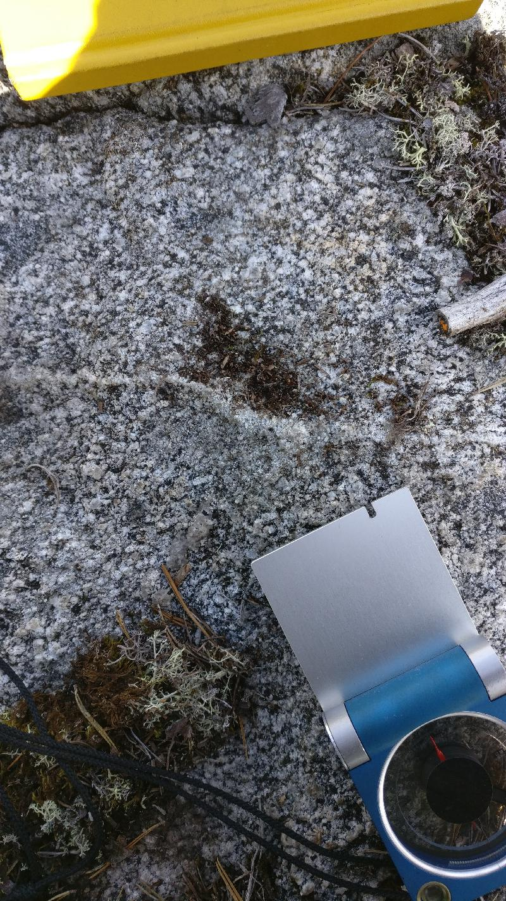
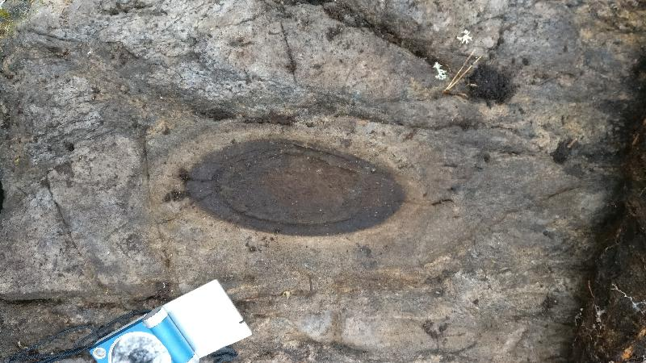
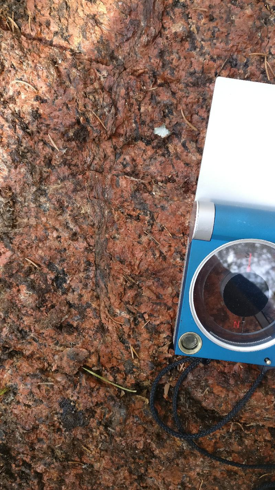

<!DOCTYPE html>
<head>    
    <meta http-equiv="content-type" content="text/html; charset=UTF-8" />
    
        <script>
            L_NO_TOUCH = false;
            L_DISABLE_3D = false;
        </script>
    
    <style>html, body {width: 100%;height: 100%;margin: 0;padding: 0;}</style>
    <style>#map {position:absolute;top:0;bottom:0;right:0;left:0;}</style>
    <script src="https://cdn.jsdelivr.net/npm/leaflet@1.6.0/dist/leaflet.js"></script>
    <script src="https://code.jquery.com/jquery-1.12.4.min.js"></script>
    <script src="https://maxcdn.bootstrapcdn.com/bootstrap/3.2.0/js/bootstrap.min.js"></script>
    <script src="https://cdnjs.cloudflare.com/ajax/libs/Leaflet.awesome-markers/2.0.2/leaflet.awesome-markers.js"></script>
    <link rel="stylesheet" href="https://cdn.jsdelivr.net/npm/leaflet@1.6.0/dist/leaflet.css"/>
    <link rel="stylesheet" href="https://maxcdn.bootstrapcdn.com/bootstrap/3.2.0/css/bootstrap.min.css"/>
    <link rel="stylesheet" href="https://maxcdn.bootstrapcdn.com/bootstrap/3.2.0/css/bootstrap-theme.min.css"/>
    <link rel="stylesheet" href="https://maxcdn.bootstrapcdn.com/font-awesome/4.6.3/css/font-awesome.min.css"/>
    <link rel="stylesheet" href="https://cdnjs.cloudflare.com/ajax/libs/Leaflet.awesome-markers/2.0.2/leaflet.awesome-markers.css"/>
    <link rel="stylesheet" href="https://cdn.jsdelivr.net/gh/python-visualization/folium/folium/templates/leaflet.awesome.rotate.min.css"/>
    
            <meta name="viewport" content="width=device-width,
                initial-scale=1.0, maximum-scale=1.0, user-scalable=no" />
            <style>
                #map_9e5a88c7b12144eba89cc2d70d73fcdd {
                    position: relative;
                    width: 100.0%;
                    height: 100.0%;
                    left: 0.0%;
                    top: 0.0%;
                }
            </style>
        
    <script src="https://cdnjs.cloudflare.com/ajax/libs/leaflet-locatecontrol/0.66.2/L.Control.Locate.min.js"></script>
    <link rel="stylesheet" href="https://cdnjs.cloudflare.com/ajax/libs/leaflet-locatecontrol/0.66.2/L.Control.Locate.min.css"/>
    <link rel="stylesheet" href="styles.css"/>
</head>
<body>    
    
            <div class="folium-map" id="map_9e5a88c7b12144eba89cc2d70d73fcdd" ></div>
        
</body>
<script>    
    
            var map_9e5a88c7b12144eba89cc2d70d73fcdd = L.map(
                "map_9e5a88c7b12144eba89cc2d70d73fcdd",
                {
                    center: [62.67504247884615, 22.28522016815384],
                    crs: L.CRS.EPSG3857,
                    zoom: 10,
                    zoomControl: true,
                    preferCanvas: false,
                }
            );

            

        
    
            var tile_layer_71fe7f13ded74566ad6180c2b5cda721 = L.tileLayer(
                "https://{s}.tile.openstreetmap.org/{z}/{x}/{y}.png",
                {"attribution": "Data by \u0026copy; \u003ca href=\"http://openstreetmap.org\"\u003eOpenStreetMap\u003c/a\u003e, under \u003ca href=\"http://www.openstreetmap.org/copyright\"\u003eODbL\u003c/a\u003e.", "detectRetina": false, "maxNativeZoom": 18, "maxZoom": 18, "minZoom": 0, "noWrap": false, "opacity": 1, "subdomains": "abc", "tms": false}
            ).addTo(map_9e5a88c7b12144eba89cc2d70d73fcdd);
        
    
            var marker_f602be89d44849bfa8976f3749c70715 = L.marker(
                [62.6502261, 22.24487724],
                {}
            ).addTo(map_9e5a88c7b12144eba89cc2d70d73fcdd);
        
    
            var icon_6dc01a2fdcb54448885e5aa7179de50e = L.AwesomeMarkers.icon(
                {"extraClasses": "fa-rotate-118", "icon": "glyphicon-arrow-up", "iconColor": "white", "markerColor": "blue", "prefix": "glyphicon"}
            );
            marker_f602be89d44849bfa8976f3749c70715.setIcon(icon_6dc01a2fdcb54448885e5aa7179de50e);
        
    
        var popup_12bed97f10a741189c2a35fed4204560 = L.popup({"maxWidth": "100%"});

        
            var html_98abda54099540c8bdc0503a355a989e = $(`<div id="html_98abda54099540c8bdc0503a355a989e" style="width: 100.0%; height: 100.0%;"><h3>NO-2021-120</h3> <h4>Planar Structures</h4> <table> <thead> <tr> <th align="right">DIP</th> <th align="right">DIRECTION_OF_DIP</th> <th align="left">STYPE_TEXT</th> <th align="left">FOL_TYPE_TEXT</th> </tr> </thead> <tbody> <tr> <td align="right">83</td> <td align="right">256</td> <td align="left">Fault</td> <td align="left"></td> </tr> <tr> <td align="right">83</td> <td align="right">180</td> <td align="left">Fault</td> <td align="left"></td> </tr> <tr> <td align="right">69</td> <td align="right">316</td> <td align="left">Fault</td> <td align="left"></td> </tr> <tr> <td align="right">31</td> <td align="right">104</td> <td align="left">Fault</td> <td align="left"></td> </tr> </tbody> </table> <h4>Linear Structures</h4> <table> <thead> <tr> <th align="right">DIRECTION</th> <th align="right">PLUNGE</th> <th align="left">STYPE_TEXT</th> </tr> </thead> <tbody> <tr> <td align="right">118</td> <td align="right">45</td> <td align="left">Lineation</td> </tr> </tbody> </table> <h4>Rock Observations</h4> <table> <thead> <tr> <th align="left">REMARKS</th> <th align="left">FIELD_NAME</th> </tr> </thead> <tbody> <tr> <td align="left"></td> <td align="left">Granodiorite</td> </tr> </tbody> </table> <h4>Observation remarks</h4> <p>Lineaatio granodioriitti, raoissa punaista täytettä mahdollisesti kalimaasälpää, melko intensiivinen rakoilu, rakoilu melkeinpä yhtä intensiivistä joka suunnassa</p> <h4>Images</h4> <p><a href="kapalo_imgs/NO-2021-120.k1@6142761110269243792.jpg"></a>Punainen rakotäyte, kalimaasälpä <a href="kapalo_imgs/NO-2021-120.k2@465599292542584477.jpg"></a>Rakoilua pystypinnalla (326/78), pinta kaatuu kameraa päin</p></div>`)[0];
            popup_12bed97f10a741189c2a35fed4204560.setContent(html_98abda54099540c8bdc0503a355a989e);
        

        marker_f602be89d44849bfa8976f3749c70715.bindPopup(popup_12bed97f10a741189c2a35fed4204560)
        ;

        
    
    
            marker_f602be89d44849bfa8976f3749c70715.bindTooltip(
                `<div>
                     NO-2021-120
                 </div>`,
                {"sticky": true}
            );
        
    
            var marker_1e3ba2e5b44547069ceaebd73e48dde7 = L.marker(
                [62.64958984, 22.24507106],
                {}
            ).addTo(map_9e5a88c7b12144eba89cc2d70d73fcdd);
        
    
            var icon_62d245324d524fb49b1e9bd552b1c096 = L.AwesomeMarkers.icon(
                {"extraClasses": "fa-rotate-0", "icon": "glyphicon-stop", "iconColor": "white", "markerColor": "lightgray", "prefix": "glyphicon"}
            );
            marker_1e3ba2e5b44547069ceaebd73e48dde7.setIcon(icon_62d245324d524fb49b1e9bd552b1c096);
        
    
        var popup_52aa80ac5d5b4456b534674d4c2f39c7 = L.popup({"maxWidth": "100%"});

        
            var html_49b797a3a7514c29b00ee0d556ea735b = $(`<div id="html_49b797a3a7514c29b00ee0d556ea735b" style="width: 100.0%; height: 100.0%;"><h3>NO-2021-121</h3> <h4>Planar Structures</h4> <table> <thead> <tr> <th align="right">DIP</th> <th align="right">DIRECTION_OF_DIP</th> <th align="left">STYPE_TEXT</th> <th align="left">FOL_TYPE_TEXT</th> </tr> </thead> <tbody> <tr> <td align="right">78</td> <td align="right">37</td> <td align="left">Foliation</td> <td align="left">Penetrative foliation</td> </tr> <tr> <td align="right">56</td> <td align="right">296</td> <td align="left">Fault</td> <td align="left"></td> </tr> <tr> <td align="right">75</td> <td align="right">351</td> <td align="left">Fault</td> <td align="left"></td> </tr> <tr> <td align="right">82</td> <td align="right">242</td> <td align="left">Fault</td> <td align="left"></td> </tr> <tr> <td align="right">29</td> <td align="right">76</td> <td align="left">Fault</td> <td align="left"></td> </tr> </tbody> </table> <h4></h4> <h4>Rock Observations</h4> <table> <thead> <tr> <th align="left">REMARKS</th> <th align="left">FIELD_NAME</th> </tr> </thead> <tbody> <tr> <td align="left"></td> <td align="left">Granodiorite</td> </tr> </tbody> </table> <h4>Observation remarks</h4> <p>Hydrotermistä fluidia raoissa kalimaasälpää (322/44), kvartsia ja epidoottia ja ehkä jopa karbonaattia (295/56), heikosti suuntautunut granodioriitti, päärakosuunta (296/56), paljon rakoilua, L-tektoniitti lineaatio (162/54) hyvin epävarma</p> <h4>Images</h4> <p><a href="kapalo_imgs/NO-2021-121.k1@8923370035630306331.jpg"></a>Epidoottia raossa (063/86) <a href="kapalo_imgs/NO-2021-121.k2@2536619394793919973.jpg"></a>Punaista rakotäytettä kalimaasälpää raossa (322/44) <a href="kapalo_imgs/NO-2021-121.k3@4834227976921686441.jpg">('Raossa tuskin ollut liikettä kun katsoo "klastia" (296/56), klasti pystyssä rakopinnasta', 'NO-2021-121.k3')</a> <a href="kapalo_imgs/NO-2021-121.k4@3798868176195117756.jpg">('Eemin piirros, poikkileikkaus, rakosuuntia', 'NO-2021-121.k4')</a></p></div>`)[0];
            popup_52aa80ac5d5b4456b534674d4c2f39c7.setContent(html_49b797a3a7514c29b00ee0d556ea735b);
        

        marker_1e3ba2e5b44547069ceaebd73e48dde7.bindPopup(popup_52aa80ac5d5b4456b534674d4c2f39c7)
        ;

        
    
    
            marker_1e3ba2e5b44547069ceaebd73e48dde7.bindTooltip(
                `<div>
                     NO-2021-121
                 </div>`,
                {"sticky": true}
            );
        
    
            var marker_ae76a5cfbea44f2abd23e5311f156a3e = L.marker(
                [62.6489966, 22.24552787],
                {}
            ).addTo(map_9e5a88c7b12144eba89cc2d70d73fcdd);
        
    
            var icon_f4cb0a3cf61b4ce4ae1638d1cf801690 = L.AwesomeMarkers.icon(
                {"extraClasses": "fa-rotate-92", "icon": "glyphicon-arrow-up", "iconColor": "white", "markerColor": "blue", "prefix": "glyphicon"}
            );
            marker_ae76a5cfbea44f2abd23e5311f156a3e.setIcon(icon_f4cb0a3cf61b4ce4ae1638d1cf801690);
        
    
        var popup_25770ea9168747a0a2884d83dc8a28a1 = L.popup({"maxWidth": "100%"});

        
            var html_0e403cd6424c4654b17623ee5a3cbd22 = $(`<div id="html_0e403cd6424c4654b17623ee5a3cbd22" style="width: 100.0%; height: 100.0%;"><h3>NO-2021-122</h3> <h4>Planar Structures</h4> <table> <thead> <tr> <th align="right">DIP</th> <th align="right">DIRECTION_OF_DIP</th> <th align="left">STYPE_TEXT</th> <th align="left">FOL_TYPE_TEXT</th> </tr> </thead> <tbody> <tr> <td align="right">68</td> <td align="right">197</td> <td align="left">Foliation</td> <td align="left">Penetrative foliation</td> </tr> <tr> <td align="right">60</td> <td align="right">323</td> <td align="left">Fault</td> <td align="left"></td> </tr> <tr> <td align="right">84</td> <td align="right">201</td> <td align="left">Fault</td> <td align="left"></td> </tr> <tr> <td align="right">20</td> <td align="right">87</td> <td align="left">Fault</td> <td align="left"></td> </tr> </tbody> </table> <h4>Linear Structures</h4> <table> <thead> <tr> <th align="right">DIRECTION</th> <th align="right">PLUNGE</th> <th align="left">STYPE_TEXT</th> </tr> </thead> <tbody> <tr> <td align="right">92</td> <td align="right">61</td> <td align="left">Lineation</td> </tr> </tbody> </table> <h4>Rock Observations</h4> <table> <thead> <tr> <th align="left">REMARKS</th> <th align="left">FIELD_NAME</th> </tr> </thead> <tbody> <tr> <td align="left"></td> <td align="left">Granodiorite</td> </tr> </tbody> </table> <h4>Observation remarks</h4> <p>Vahva lineaatio heikko liuskeisuus granodioriitissa, päärakosuunta, hydrotermistä fluidia mahdollisesti kaikissa rakosuunnissaa, päärakosuunta (323/60)</p> <h4>Images</h4> <p><a href="kapalo_imgs/NO-2021-122.k1@5617358163811979863.jpg"></a>Vahva lineaatio (092/61) liuskeisuuspinnassa (197/68) <a href="kapalo_imgs/NO-2021-122.k2@5780095224077011552.jpg"></a>Nikolaksen piirros, rakojen topologiaa <a href="kapalo_imgs/NO-2021-122.k3@7591171526182596366.jpg">('Eemin piirros, poikkileikkaus E-W, raon hyppyjä lineaation suuntaan', 'NO-2021-122.k3')</a></p></div>`)[0];
            popup_25770ea9168747a0a2884d83dc8a28a1.setContent(html_0e403cd6424c4654b17623ee5a3cbd22);
        

        marker_ae76a5cfbea44f2abd23e5311f156a3e.bindPopup(popup_25770ea9168747a0a2884d83dc8a28a1)
        ;

        
    
    
            marker_ae76a5cfbea44f2abd23e5311f156a3e.bindTooltip(
                `<div>
                     NO-2021-122
                 </div>`,
                {"sticky": true}
            );
        
    
            var marker_92c488a16a1346c599f476a0634244b1 = L.marker(
                [62.64799984, 22.24524319],
                {}
            ).addTo(map_9e5a88c7b12144eba89cc2d70d73fcdd);
        
    
            var icon_cfbb9476d56f413bb9a6d12c8f50eed4 = L.AwesomeMarkers.icon(
                {"extraClasses": "fa-rotate-82", "icon": "glyphicon-arrow-up", "iconColor": "white", "markerColor": "blue", "prefix": "glyphicon"}
            );
            marker_92c488a16a1346c599f476a0634244b1.setIcon(icon_cfbb9476d56f413bb9a6d12c8f50eed4);
        
    
        var popup_a9dd33ac44ca49d18b73e79de8c87f7d = L.popup({"maxWidth": "100%"});

        
            var html_dfe7da67f4c44c8b84f85d82a5c3078d = $(`<div id="html_dfe7da67f4c44c8b84f85d82a5c3078d" style="width: 100.0%; height: 100.0%;"><h3>NO-2021-123</h3> <h4>Planar Structures</h4> <table> <thead> <tr> <th align="right">DIP</th> <th align="right">DIRECTION_OF_DIP</th> <th align="left">STYPE_TEXT</th> <th align="left">FOL_TYPE_TEXT</th> </tr> </thead> <tbody> <tr> <td align="right">64</td> <td align="right">184</td> <td align="left">Foliation</td> <td align="left">Penetrative foliation</td> </tr> <tr> <td align="right">22</td> <td align="right">107</td> <td align="left">Fault</td> <td align="left"></td> </tr> <tr> <td align="right">86</td> <td align="right">78</td> <td align="left">Fault</td> <td align="left"></td> </tr> <tr> <td align="right">81</td> <td align="right">181</td> <td align="left">Fault</td> <td align="left"></td> </tr> </tbody> </table> <h4>Linear Structures</h4> <table> <thead> <tr> <th align="right">DIRECTION</th> <th align="right">PLUNGE</th> <th align="left">STYPE_TEXT</th> </tr> </thead> <tbody> <tr> <td align="right">82</td> <td align="right">40</td> <td align="left">Lineation</td> </tr> </tbody> </table> <h4>Rock Observations</h4> <table> <thead> <tr> <th align="left">REMARKS</th> <th align="left">FIELD_NAME</th> </tr> </thead> <tbody> <tr> <td align="left"></td> <td align="left">Granodiorite</td> </tr> </tbody> </table> <h4>Observation remarks</h4> <p>Pienirakeisempi granodioriitti/dioriitti</p> <h4>Images</h4> <p><a href="kapalo_imgs/NO-2021-123.k1@8548264451686763326.jpg"></a>Koostumusvaihtelua lokaalisti, hienorakeinen liuskeinen dioriitti</p></div>`)[0];
            popup_a9dd33ac44ca49d18b73e79de8c87f7d.setContent(html_dfe7da67f4c44c8b84f85d82a5c3078d);
        

        marker_92c488a16a1346c599f476a0634244b1.bindPopup(popup_a9dd33ac44ca49d18b73e79de8c87f7d)
        ;

        
    
    
            marker_92c488a16a1346c599f476a0634244b1.bindTooltip(
                `<div>
                     NO-2021-123
                 </div>`,
                {"sticky": true}
            );
        
    
            var marker_ba7df8a6077a48bb9591afbb7c8667fc = L.marker(
                [62.64572403, 22.26150361],
                {}
            ).addTo(map_9e5a88c7b12144eba89cc2d70d73fcdd);
        
    
            var icon_042736a4ca8443c9b662a2db10e8b5bc = L.AwesomeMarkers.icon(
                {"extraClasses": "fa-rotate-134", "icon": "glyphicon-arrow-up", "iconColor": "white", "markerColor": "blue", "prefix": "glyphicon"}
            );
            marker_ba7df8a6077a48bb9591afbb7c8667fc.setIcon(icon_042736a4ca8443c9b662a2db10e8b5bc);
        
    
        var popup_5fa6f50f1b244a28aeadf057530211fb = L.popup({"maxWidth": "100%"});

        
            var html_32ce524e520a40c8b72e450b24a934bc = $(`<div id="html_32ce524e520a40c8b72e450b24a934bc" style="width: 100.0%; height: 100.0%;"><h3>NO-2021-124</h3> <h4>Planar Structures</h4> <table> <thead> <tr> <th align="right">DIP</th> <th align="right">DIRECTION_OF_DIP</th> <th align="left">STYPE_TEXT</th> <th align="left">FOL_TYPE_TEXT</th> </tr> </thead> <tbody> <tr> <td align="right">83</td> <td align="right">264</td> <td align="left">Fault</td> <td align="left"></td> </tr> <tr> <td align="right">86</td> <td align="right">187</td> <td align="left">Fault</td> <td align="left"></td> </tr> <tr> <td align="right">85</td> <td align="right">76</td> <td align="left">Fault</td> <td align="left"></td> </tr> </tbody> </table> <h4>Linear Structures</h4> <table> <thead> <tr> <th align="right">DIRECTION</th> <th align="right">PLUNGE</th> <th align="left">STYPE_TEXT</th> </tr> </thead> <tbody> <tr> <td align="right">134</td> <td align="right">58</td> <td align="left">Lineation</td> </tr> </tbody> </table> <h4>Rock Observations</h4> <table> <thead> <tr> <th align="left">REMARKS</th> <th align="left">FIELD_NAME</th> </tr> </thead> <tbody> <tr> <td align="left"></td> <td align="left">Granodiorite</td> </tr> </tbody> </table> <h4>Observation remarks</h4> <p>Kvartsijuonia (058/68; 015/80; 125/65), mahdollinen L-tektoniitti</p> <h4>Images</h4> <p><a href="kapalo_imgs/NO-2021-124.k1@3218770996976864257.jpg"></a>Hyppy kvartsijuonessa (015/80) <a href="kapalo_imgs/NO-2021-124.k2@6226118352050024138.jpg"></a>Lineaatio näkyy myös kvartsijuonessa <a href="kapalo_imgs/NO-2021-124.k3@4800862070566764280.jpg">('Liuskeisuus vai lineaatio', 'NO-2021-124.k3')</a></p></div>`)[0];
            popup_5fa6f50f1b244a28aeadf057530211fb.setContent(html_32ce524e520a40c8b72e450b24a934bc);
        

        marker_ba7df8a6077a48bb9591afbb7c8667fc.bindPopup(popup_5fa6f50f1b244a28aeadf057530211fb)
        ;

        
    
    
            marker_ba7df8a6077a48bb9591afbb7c8667fc.bindTooltip(
                `<div>
                     NO-2021-124
                 </div>`,
                {"sticky": true}
            );
        
    
            var marker_f01f21b818544a0aa4c4a7d5afc602bf = L.marker(
                [62.6444608, 22.26643641],
                {}
            ).addTo(map_9e5a88c7b12144eba89cc2d70d73fcdd);
        
    
            var icon_ff09dbb879014624bcc2a4c2608badc0 = L.AwesomeMarkers.icon(
                {"extraClasses": "fa-rotate-0", "icon": "glyphicon-stop", "iconColor": "white", "markerColor": "lightgray", "prefix": "glyphicon"}
            );
            marker_f01f21b818544a0aa4c4a7d5afc602bf.setIcon(icon_ff09dbb879014624bcc2a4c2608badc0);
        
    
        var popup_73273455509844c29ad664ecfcff81dd = L.popup({"maxWidth": "100%"});

        
            var html_0f15a643dd5f4455b75c4e7415ca989c = $(`<div id="html_0f15a643dd5f4455b75c4e7415ca989c" style="width: 100.0%; height: 100.0%;"><h3>NO-2021-125</h3> <h4>Planar Structures</h4> <table> <thead> <tr> <th align="right">DIP</th> <th align="right">DIRECTION_OF_DIP</th> <th align="left">STYPE_TEXT</th> <th align="left">FOL_TYPE_TEXT</th> </tr> </thead> <tbody> <tr> <td align="right">88</td> <td align="right">322</td> <td align="left">Fault</td> <td align="left"></td> </tr> <tr> <td align="right">83</td> <td align="right">74</td> <td align="left">Fault</td> <td align="left"></td> </tr> </tbody> </table> <h4></h4> <h4>Rock Observations</h4> <table> <thead> <tr> <th align="left">REMARKS</th> <th align="left">FIELD_NAME</th> </tr> </thead> <tbody> <tr> <td align="left"></td> <td align="left">Granodiorite</td> </tr> </tbody> </table> <h4>Observation remarks</h4> <p>Vallitseva rakosuunta (322/88), hyvin heikosti suuntautunut granodioriitti tai ei ollenkaan, kvartsijuonia (074/83)</p> <h4>Images</h4></div>`)[0];
            popup_73273455509844c29ad664ecfcff81dd.setContent(html_0f15a643dd5f4455b75c4e7415ca989c);
        

        marker_f01f21b818544a0aa4c4a7d5afc602bf.bindPopup(popup_73273455509844c29ad664ecfcff81dd)
        ;

        
    
    
            marker_f01f21b818544a0aa4c4a7d5afc602bf.bindTooltip(
                `<div>
                     NO-2021-125
                 </div>`,
                {"sticky": true}
            );
        
    
            var marker_c058fb3cb966488b93e4cf2502f26616 = L.marker(
                [62.64597139, 22.26551594],
                {}
            ).addTo(map_9e5a88c7b12144eba89cc2d70d73fcdd);
        
    
            var icon_660ba9f8f385462bb090f18a61283098 = L.AwesomeMarkers.icon(
                {"extraClasses": "fa-rotate-120", "icon": "glyphicon-arrow-up", "iconColor": "white", "markerColor": "blue", "prefix": "glyphicon"}
            );
            marker_c058fb3cb966488b93e4cf2502f26616.setIcon(icon_660ba9f8f385462bb090f18a61283098);
        
    
        var popup_b12c1004420547229219a91787ab8bbd = L.popup({"maxWidth": "100%"});

        
            var html_91966574bed04a469d78b4d0754dc102 = $(`<div id="html_91966574bed04a469d78b4d0754dc102" style="width: 100.0%; height: 100.0%;"><h3>NO-2021-126</h3> <h4>Planar Structures</h4> <table> <thead> <tr> <th align="right">DIP</th> <th align="right">DIRECTION_OF_DIP</th> <th align="left">STYPE_TEXT</th> <th align="left">FOL_TYPE_TEXT</th> </tr> </thead> <tbody> <tr> <td align="right">84</td> <td align="right">156</td> <td align="left">Fault</td> <td align="left"></td> </tr> <tr> <td align="right">63</td> <td align="right">109</td> <td align="left">Fault</td> <td align="left"></td> </tr> </tbody> </table> <h4>Linear Structures</h4> <table> <thead> <tr> <th align="right">DIRECTION</th> <th align="right">PLUNGE</th> <th align="left">STYPE_TEXT</th> </tr> </thead> <tbody> <tr> <td align="right">120</td> <td align="right">37</td> <td align="left">Lineation</td> </tr> </tbody> </table> <h4>Rock Observations</h4> <table> <thead> <tr> <th align="left">REMARKS</th> <th align="left">FIELD_NAME</th> </tr> </thead> <tbody> <tr> <td align="left"></td> <td align="left">Granodiorite</td> </tr> </tbody> </table> <h4>Observation remarks</h4> <p>L-tektoniitti tai hyvin heikko liuskeisuus (131/45)</p> <h4>Images</h4> <p><a href="kapalo_imgs/NO-2021-126.k1@6982591858692456125.jpg"></a>Koostumusvaihtelua ja kvartsijuonia, kuvan taso (030/46)</p></div>`)[0];
            popup_b12c1004420547229219a91787ab8bbd.setContent(html_91966574bed04a469d78b4d0754dc102);
        

        marker_c058fb3cb966488b93e4cf2502f26616.bindPopup(popup_b12c1004420547229219a91787ab8bbd)
        ;

        
    
    
            marker_c058fb3cb966488b93e4cf2502f26616.bindTooltip(
                `<div>
                     NO-2021-126
                 </div>`,
                {"sticky": true}
            );
        
    
            var marker_ecbe8f9c7c4246bfb98a3bee3481371d = L.marker(
                [62.64682437, 22.26251022],
                {}
            ).addTo(map_9e5a88c7b12144eba89cc2d70d73fcdd);
        
    
            var icon_931f057cb5c544539c6de9286783e5ce = L.AwesomeMarkers.icon(
                {"extraClasses": "fa-rotate-110", "icon": "glyphicon-arrow-up", "iconColor": "white", "markerColor": "blue", "prefix": "glyphicon"}
            );
            marker_ecbe8f9c7c4246bfb98a3bee3481371d.setIcon(icon_931f057cb5c544539c6de9286783e5ce);
        
    
        var popup_ebf41389b61c4662a73070d0138f2674 = L.popup({"maxWidth": "100%"});

        
            var html_9781429a4b904029ae78fe31885eb464 = $(`<div id="html_9781429a4b904029ae78fe31885eb464" style="width: 100.0%; height: 100.0%;"><h3>NO-2021-127</h3> <h4>Planar Structures</h4> <table> <thead> <tr> <th align="right">DIP</th> <th align="right">DIRECTION_OF_DIP</th> <th align="left">STYPE_TEXT</th> <th align="left">FOL_TYPE_TEXT</th> </tr> </thead> <tbody> <tr> <td align="right">60</td> <td align="right">86</td> <td align="left">Fault</td> <td align="left"></td> </tr> <tr> <td align="right">78</td> <td align="right">156</td> <td align="left">Fault</td> <td align="left"></td> </tr> </tbody> </table> <h4>Linear Structures</h4> <table> <thead> <tr> <th align="right">DIRECTION</th> <th align="right">PLUNGE</th> <th align="left">STYPE_TEXT</th> </tr> </thead> <tbody> <tr> <td align="right">110</td> <td align="right">51</td> <td align="left">Lineation</td> </tr> </tbody> </table> <h4>Rock Observations</h4> <table> <thead> <tr> <th align="left">REMARKS</th> <th align="left">FIELD_NAME</th> </tr> </thead> <tbody> <tr> <td align="left"></td> <td align="left">Granodiorite</td> </tr> </tbody> </table> <h4>Observation remarks</h4> <p>Hyvin vahva lineaatio, L-tektoniitti, hyvin heikko tasomainen suuntaus (192/76)</p> <h4>Images</h4> <p><a href="kapalo_imgs/NO-2021-127.k1@4608074849448132282.jpg"></a>Kuvan pinta (087/62), kaatuu kuvaajaa päin</p></div>`)[0];
            popup_ebf41389b61c4662a73070d0138f2674.setContent(html_9781429a4b904029ae78fe31885eb464);
        

        marker_ecbe8f9c7c4246bfb98a3bee3481371d.bindPopup(popup_ebf41389b61c4662a73070d0138f2674)
        ;

        
    
    
            marker_ecbe8f9c7c4246bfb98a3bee3481371d.bindTooltip(
                `<div>
                     NO-2021-127
                 </div>`,
                {"sticky": true}
            );
        
    
            var marker_20a3b664ef414da9a1d281883fa54c37 = L.marker(
                [62.64860436, 22.25253781],
                {}
            ).addTo(map_9e5a88c7b12144eba89cc2d70d73fcdd);
        
    
            var icon_fedfe8f798404c18ac60479e29e18b01 = L.AwesomeMarkers.icon(
                {"extraClasses": "fa-rotate-90", "icon": "glyphicon-arrow-up", "iconColor": "white", "markerColor": "blue", "prefix": "glyphicon"}
            );
            marker_20a3b664ef414da9a1d281883fa54c37.setIcon(icon_fedfe8f798404c18ac60479e29e18b01);
        
    
        var popup_70180eb69fe8497ab7829523b5234f17 = L.popup({"maxWidth": "100%"});

        
            var html_5735a9a7ee3a4c789adc336435b7b642 = $(`<div id="html_5735a9a7ee3a4c789adc336435b7b642" style="width: 100.0%; height: 100.0%;"><h3>NO-2021-128</h3> <h4>Planar Structures</h4> <table> <thead> <tr> <th align="right">DIP</th> <th align="right">DIRECTION_OF_DIP</th> <th align="left">STYPE_TEXT</th> <th align="left">FOL_TYPE_TEXT</th> </tr> </thead> <tbody> <tr> <td align="right">68</td> <td align="right">178</td> <td align="left">Foliation</td> <td align="left">Penetrative foliation</td> </tr> <tr> <td align="right">68</td> <td align="right">178</td> <td align="left">Fault</td> <td align="left"></td> </tr> <tr> <td align="right">65</td> <td align="right">90</td> <td align="left">Fault</td> <td align="left"></td> </tr> </tbody> </table> <h4>Linear Structures</h4> <table> <thead> <tr> <th align="right">DIRECTION</th> <th align="right">PLUNGE</th> <th align="left">STYPE_TEXT</th> </tr> </thead> <tbody> <tr> <td align="right">90</td> <td align="right">50</td> <td align="left">Lineation</td> </tr> </tbody> </table> <h4>Rock Observations</h4> <table> <thead> <tr> <th align="left">REMARKS</th> <th align="left">FIELD_NAME</th> </tr> </thead> <tbody> <tr> <td align="left"></td> <td align="left">Granodiorite</td> </tr> </tbody> </table> <h4>Observation remarks</h4> <p>Suuntautunut granodioriitti</p> <h4>Images</h4></div>`)[0];
            popup_70180eb69fe8497ab7829523b5234f17.setContent(html_5735a9a7ee3a4c789adc336435b7b642);
        

        marker_20a3b664ef414da9a1d281883fa54c37.bindPopup(popup_70180eb69fe8497ab7829523b5234f17)
        ;

        
    
    
            marker_20a3b664ef414da9a1d281883fa54c37.bindTooltip(
                `<div>
                     NO-2021-128
                 </div>`,
                {"sticky": true}
            );
        
    
            var marker_8ad2be5f12f0484cba5d3b078946dfc5 = L.marker(
                [62.64694525, 22.2521295],
                {}
            ).addTo(map_9e5a88c7b12144eba89cc2d70d73fcdd);
        
    
            var icon_1f54033d4bb0409f82021ca34e4f039d = L.AwesomeMarkers.icon(
                {"extraClasses": "fa-rotate-110", "icon": "glyphicon-arrow-up", "iconColor": "white", "markerColor": "blue", "prefix": "glyphicon"}
            );
            marker_8ad2be5f12f0484cba5d3b078946dfc5.setIcon(icon_1f54033d4bb0409f82021ca34e4f039d);
        
    
        var popup_0cf096b802cd4e81a6f8222fbbf6d2a6 = L.popup({"maxWidth": "100%"});

        
            var html_15ba0a5dfb6f4aefbe159669f000d8d9 = $(`<div id="html_15ba0a5dfb6f4aefbe159669f000d8d9" style="width: 100.0%; height: 100.0%;"><h3>NO-2021-129</h3> <h4>Planar Structures</h4> <table> <thead> <tr> <th align="right">DIP</th> <th align="right">DIRECTION_OF_DIP</th> <th align="left">STYPE_TEXT</th> <th align="left">FOL_TYPE_TEXT</th> </tr> </thead> <tbody> <tr> <td align="right">45</td> <td align="right">110</td> <td align="left">Foliation</td> <td align="left">Penetrative foliation</td> </tr> <tr> <td align="right">77</td> <td align="right">286</td> <td align="left">Fault</td> <td align="left"></td> </tr> <tr> <td align="right">45</td> <td align="right">105</td> <td align="left">Fault</td> <td align="left"></td> </tr> </tbody> </table> <h4>Linear Structures</h4> <table> <thead> <tr> <th align="right">DIRECTION</th> <th align="right">PLUNGE</th> <th align="left">STYPE_TEXT</th> </tr> </thead> <tbody> <tr> <td align="right">110</td> <td align="right">45</td> <td align="left">Lineation</td> </tr> </tbody> </table> <h4>Rock Observations</h4> <table> <thead> <tr> <th align="left">REMARKS</th> <th align="left">FIELD_NAME</th> </tr> </thead> <tbody> <tr> <td align="left"></td> <td align="left">Granodiorite</td> </tr> </tbody> </table> <h4>Observation remarks</h4> <p>Suuntautunut granodioriitti, liuskeisuus sekava alueellisesti mutta paikoittain selkeä, kvartsijuonia liuskeisuuden suunnassa (105/45), epidoottikvartsitäyte (286/77)</p> <h4>Images</h4></div>`)[0];
            popup_0cf096b802cd4e81a6f8222fbbf6d2a6.setContent(html_15ba0a5dfb6f4aefbe159669f000d8d9);
        

        marker_8ad2be5f12f0484cba5d3b078946dfc5.bindPopup(popup_0cf096b802cd4e81a6f8222fbbf6d2a6)
        ;

        
    
    
            marker_8ad2be5f12f0484cba5d3b078946dfc5.bindTooltip(
                `<div>
                     NO-2021-129
                 </div>`,
                {"sticky": true}
            );
        
    
            var marker_0be13ba17ad54e3e9e42442bcb245d38 = L.marker(
                [62.64568886, 22.25283538],
                {}
            ).addTo(map_9e5a88c7b12144eba89cc2d70d73fcdd);
        
    
            var icon_6e263589505c464888089ce095cfbef0 = L.AwesomeMarkers.icon(
                {"extraClasses": "fa-rotate-125", "icon": "glyphicon-arrow-up", "iconColor": "white", "markerColor": "blue", "prefix": "glyphicon"}
            );
            marker_0be13ba17ad54e3e9e42442bcb245d38.setIcon(icon_6e263589505c464888089ce095cfbef0);
        
    
        var popup_c096891f8c7a46e4a1dc111ffd122748 = L.popup({"maxWidth": "100%"});

        
            var html_b1c3e6f83c114576a3ffc102fde544ba = $(`<div id="html_b1c3e6f83c114576a3ffc102fde544ba" style="width: 100.0%; height: 100.0%;"><h3>NO-2021-130</h3> <h4>Planar Structures</h4> <table> <thead> <tr> <th align="right">DIP</th> <th align="right">DIRECTION_OF_DIP</th> <th align="left">STYPE_TEXT</th> <th align="left">FOL_TYPE_TEXT</th> </tr> </thead> <tbody> <tr> <td align="right">45</td> <td align="right">125</td> <td align="left">Foliation</td> <td align="left">Penetrative foliation</td> </tr> </tbody> </table> <h4>Linear Structures</h4> <table> <thead> <tr> <th align="right">DIRECTION</th> <th align="right">PLUNGE</th> <th align="left">STYPE_TEXT</th> </tr> </thead> <tbody> <tr> <td align="right">125</td> <td align="right">45</td> <td align="left">Lineation</td> </tr> </tbody> </table> <h4>Rock Observations</h4> <table> <thead> <tr> <th align="left">REMARKS</th> <th align="left">FIELD_NAME</th> </tr> </thead> <tbody> <tr> <td align="left"></td> <td align="left">Granodiorite</td> </tr> </tbody> </table> <h4>Observation remarks</h4> <p>Suuntautunut granodioriitti, </p> <h4>Images</h4></div>`)[0];
            popup_c096891f8c7a46e4a1dc111ffd122748.setContent(html_b1c3e6f83c114576a3ffc102fde544ba);
        

        marker_0be13ba17ad54e3e9e42442bcb245d38.bindPopup(popup_c096891f8c7a46e4a1dc111ffd122748)
        ;

        
    
    
            marker_0be13ba17ad54e3e9e42442bcb245d38.bindTooltip(
                `<div>
                     NO-2021-130
                 </div>`,
                {"sticky": true}
            );
        
    
            var marker_adbaf722c3a448ffbc7227990d4b21af = L.marker(
                [62.64347729, 22.24939719],
                {}
            ).addTo(map_9e5a88c7b12144eba89cc2d70d73fcdd);
        
    
            var icon_dc82f8a8e40743e997341a94c45b4538 = L.AwesomeMarkers.icon(
                {"extraClasses": "fa-rotate-103", "icon": "glyphicon-arrow-up", "iconColor": "white", "markerColor": "blue", "prefix": "glyphicon"}
            );
            marker_adbaf722c3a448ffbc7227990d4b21af.setIcon(icon_dc82f8a8e40743e997341a94c45b4538);
        
    
        var popup_888593e349f34cc3b3ae17f725ef4d7d = L.popup({"maxWidth": "100%"});

        
            var html_9698c253e69c4e8ba7d8852c5e83b2f7 = $(`<div id="html_9698c253e69c4e8ba7d8852c5e83b2f7" style="width: 100.0%; height: 100.0%;"><h3>NO-2021-131</h3> <h4>Planar Structures</h4> <table> <thead> <tr> <th align="right">DIP</th> <th align="right">DIRECTION_OF_DIP</th> <th align="left">STYPE_TEXT</th> <th align="left">FOL_TYPE_TEXT</th> </tr> </thead> <tbody> <tr> <td align="right">64</td> <td align="right">88</td> <td align="left">Foliation</td> <td align="left">Penetrative foliation</td> </tr> <tr> <td align="right">64</td> <td align="right">88</td> <td align="left">Fault</td> <td align="left"></td> </tr> </tbody> </table> <h4>Linear Structures</h4> <table> <thead> <tr> <th align="right">DIRECTION</th> <th align="right">PLUNGE</th> <th align="left">STYPE_TEXT</th> </tr> </thead> <tbody> <tr> <td align="right">103</td> <td align="right">41</td> <td align="left">Lineation</td> </tr> </tbody> </table> <h4>Rock Observations</h4> <table> <thead> <tr> <th align="left">REMARKS</th> <th align="left">FIELD_NAME</th> </tr> </thead> <tbody> <tr> <td align="left"></td> <td align="left">Granodiorite</td> </tr> </tbody> </table> <h4>Observation remarks</h4> <p>Vahva lineaatio heikko liuskeisuus tai ei ollenkaan (088/64), vahva rakosuunta (088/64), mahdollinen L-tektoniitti</p> <h4>Images</h4> <p><a href="kapalo_imgs/NO-2021-131.k1@1367890378289948652.jpg"></a>Lineaatio mahdollisessa liuskeisuuspinnassa</p></div>`)[0];
            popup_888593e349f34cc3b3ae17f725ef4d7d.setContent(html_9698c253e69c4e8ba7d8852c5e83b2f7);
        

        marker_adbaf722c3a448ffbc7227990d4b21af.bindPopup(popup_888593e349f34cc3b3ae17f725ef4d7d)
        ;

        
    
    
            marker_adbaf722c3a448ffbc7227990d4b21af.bindTooltip(
                `<div>
                     NO-2021-131
                 </div>`,
                {"sticky": true}
            );
        
    
            var marker_e4630873745347c4afff5215d68e7a63 = L.marker(
                [62.64517689, 22.24748077],
                {}
            ).addTo(map_9e5a88c7b12144eba89cc2d70d73fcdd);
        
    
            var icon_40ec7a12d1e145b8a8d6ef987d1d5bc8 = L.AwesomeMarkers.icon(
                {"extraClasses": "fa-rotate-106", "icon": "glyphicon-arrow-up", "iconColor": "white", "markerColor": "blue", "prefix": "glyphicon"}
            );
            marker_e4630873745347c4afff5215d68e7a63.setIcon(icon_40ec7a12d1e145b8a8d6ef987d1d5bc8);
        
    
        var popup_d1108c85cd4d4c6ca808859d4868356a = L.popup({"maxWidth": "100%"});

        
            var html_866e9ea17b0149f4989a4f3a26599246 = $(`<div id="html_866e9ea17b0149f4989a4f3a26599246" style="width: 100.0%; height: 100.0%;"><h3>NO-2021-132</h3> <h4>Planar Structures</h4> <table> <thead> <tr> <th align="right">DIP</th> <th align="right">DIRECTION_OF_DIP</th> <th align="left">STYPE_TEXT</th> <th align="left">FOL_TYPE_TEXT</th> </tr> </thead> <tbody> <tr> <td align="right">60</td> <td align="right">100</td> <td align="left">Foliation</td> <td align="left">Penetrative foliation</td> </tr> <tr> <td align="right">18</td> <td align="right">273</td> <td align="left">Fault</td> <td align="left"></td> </tr> <tr> <td align="right">60</td> <td align="right">100</td> <td align="left">Fault</td> <td align="left"></td> </tr> <tr> <td align="right">78</td> <td align="right">16</td> <td align="left">Fault</td> <td align="left"></td> </tr> </tbody> </table> <h4>Linear Structures</h4> <table> <thead> <tr> <th align="right">DIRECTION</th> <th align="right">PLUNGE</th> <th align="left">STYPE_TEXT</th> </tr> </thead> <tbody> <tr> <td align="right">106</td> <td align="right">52</td> <td align="left">Lineation</td> </tr> </tbody> </table> <h4>Rock Observations</h4> <table> <thead> <tr> <th align="left">REMARKS</th> <th align="left">FIELD_NAME</th> </tr> </thead> <tbody> <tr> <td align="left"></td> <td align="left">Granodiorite</td> </tr> </tbody> </table> <h4>Observation remarks</h4> <p>Kalimaasälpäinen juoni (256/12), vahvin rakosuunta (273/18)</p> <h4>Images</h4> <p><a href="kapalo_imgs/NO-2021-132.k1@340361724024049099.jpg"></a>Eemin piirros, kallion isoja rakosuuntia</p></div>`)[0];
            popup_d1108c85cd4d4c6ca808859d4868356a.setContent(html_866e9ea17b0149f4989a4f3a26599246);
        

        marker_e4630873745347c4afff5215d68e7a63.bindPopup(popup_d1108c85cd4d4c6ca808859d4868356a)
        ;

        
    
    
            marker_e4630873745347c4afff5215d68e7a63.bindTooltip(
                `<div>
                     NO-2021-132
                 </div>`,
                {"sticky": true}
            );
        
    
            var marker_6fb4f94f55c04e01954cfd3c8b89a423 = L.marker(
                [62.64268222, 22.24797647],
                {}
            ).addTo(map_9e5a88c7b12144eba89cc2d70d73fcdd);
        
    
            var icon_a547cca29d2b413080bbd13802d359d5 = L.AwesomeMarkers.icon(
                {"extraClasses": "fa-rotate-112", "icon": "glyphicon-arrow-up", "iconColor": "white", "markerColor": "blue", "prefix": "glyphicon"}
            );
            marker_6fb4f94f55c04e01954cfd3c8b89a423.setIcon(icon_a547cca29d2b413080bbd13802d359d5);
        
    
        var popup_ddff66dbdd5b4a3fb5fd1d54f449696b = L.popup({"maxWidth": "100%"});

        
            var html_17fcb4c74ec347939171aa3cf4a9bdbc = $(`<div id="html_17fcb4c74ec347939171aa3cf4a9bdbc" style="width: 100.0%; height: 100.0%;"><h3>NO-2021-133</h3> <h4>Planar Structures</h4> <table> <thead> <tr> <th align="right">DIP</th> <th align="right">DIRECTION_OF_DIP</th> <th align="left">STYPE_TEXT</th> <th align="left">FOL_TYPE_TEXT</th> </tr> </thead> <tbody> <tr> <td align="right">79</td> <td align="right">25</td> <td align="left">Fault</td> <td align="left"></td> </tr> </tbody> </table> <h4>Linear Structures</h4> <table> <thead> <tr> <th align="right">DIRECTION</th> <th align="right">PLUNGE</th> <th align="left">STYPE_TEXT</th> </tr> </thead> <tbody> <tr> <td align="right">112</td> <td align="right">54</td> <td align="left">Lineation</td> </tr> </tbody> </table> <h4>Rock Observations</h4> <table> <thead> <tr> <th align="left">REMARKS</th> <th align="left">FIELD_NAME</th> </tr> </thead> <tbody> <tr> <td align="left"></td> <td align="left">Granodiorite</td> </tr> </tbody> </table> <h4>Observation remarks</h4> <p>Hyvin epävarma (112/54) liuskeisuus, mahdollinen L-tektoniitti</p> <h4>Images</h4></div>`)[0];
            popup_ddff66dbdd5b4a3fb5fd1d54f449696b.setContent(html_17fcb4c74ec347939171aa3cf4a9bdbc);
        

        marker_6fb4f94f55c04e01954cfd3c8b89a423.bindPopup(popup_ddff66dbdd5b4a3fb5fd1d54f449696b)
        ;

        
    
    
            marker_6fb4f94f55c04e01954cfd3c8b89a423.bindTooltip(
                `<div>
                     NO-2021-133
                 </div>`,
                {"sticky": true}
            );
        
    
            var marker_3e6883f247a7412191be7df3cbaa2297 = L.marker(
                [62.64157342, 22.24545263],
                {}
            ).addTo(map_9e5a88c7b12144eba89cc2d70d73fcdd);
        
    
            var icon_151c49a9e55742ffb166c3f203095478 = L.AwesomeMarkers.icon(
                {"extraClasses": "fa-rotate-80", "icon": "glyphicon-arrow-up", "iconColor": "white", "markerColor": "blue", "prefix": "glyphicon"}
            );
            marker_3e6883f247a7412191be7df3cbaa2297.setIcon(icon_151c49a9e55742ffb166c3f203095478);
        
    
        var popup_b138ba71bb4046ee9d7e39db61c1ad66 = L.popup({"maxWidth": "100%"});

        
            var html_cde20adb78d94c309999b8a6db69bd15 = $(`<div id="html_cde20adb78d94c309999b8a6db69bd15" style="width: 100.0%; height: 100.0%;"><h3>NO-2021-134</h3> <h4>Planar Structures</h4> <table> <thead> <tr> <th align="right">DIP</th> <th align="right">DIRECTION_OF_DIP</th> <th align="left">STYPE_TEXT</th> <th align="left">FOL_TYPE_TEXT</th> </tr> </thead> <tbody> <tr> <td align="right">40</td> <td align="right">80</td> <td align="left">Fault</td> <td align="left"></td> </tr> <tr> <td align="right">85</td> <td align="right">152</td> <td align="left">Fault</td> <td align="left"></td> </tr> <tr> <td align="right">40</td> <td align="right">80</td> <td align="left">Foliation</td> <td align="left">Penetrative foliation</td> </tr> </tbody> </table> <h4>Linear Structures</h4> <table> <thead> <tr> <th align="right">DIRECTION</th> <th align="right">PLUNGE</th> <th align="left">STYPE_TEXT</th> </tr> </thead> <tbody> <tr> <td align="right">80</td> <td align="right">40</td> <td align="left">Lineation</td> </tr> </tbody> </table> <h4>Rock Observations</h4> <table> <thead> <tr> <th align="left">REMARKS</th> <th align="left">FIELD_NAME</th> </tr> </thead> <tbody> <tr> <td align="left"></td> <td align="left">Granodiorite</td> </tr> </tbody> </table> <h4>Observation remarks</h4> <p>Heikko liuskeisuus (080/40) ja vahva lineaatio</p> <h4>Images</h4> <p><a href="kapalo_imgs/NO-2021-134.k1@4790985722272451011.jpg"></a>Vahva lineaatio (080/40) pinnassa (080/40), kaatuu poispäin kuvaajasta</p></div>`)[0];
            popup_b138ba71bb4046ee9d7e39db61c1ad66.setContent(html_cde20adb78d94c309999b8a6db69bd15);
        

        marker_3e6883f247a7412191be7df3cbaa2297.bindPopup(popup_b138ba71bb4046ee9d7e39db61c1ad66)
        ;

        
    
    
            marker_3e6883f247a7412191be7df3cbaa2297.bindTooltip(
                `<div>
                     NO-2021-134
                 </div>`,
                {"sticky": true}
            );
        
    
            var marker_4cf73b1cd7754b5686fc603f1ab28140 = L.marker(
                [62.64130402, 22.24440314],
                {}
            ).addTo(map_9e5a88c7b12144eba89cc2d70d73fcdd);
        
    
            var icon_9172a18a8e3046ed95c3c35863814d9f = L.AwesomeMarkers.icon(
                {"extraClasses": "fa-rotate-145", "icon": "glyphicon-arrow-up", "iconColor": "white", "markerColor": "blue", "prefix": "glyphicon"}
            );
            marker_4cf73b1cd7754b5686fc603f1ab28140.setIcon(icon_9172a18a8e3046ed95c3c35863814d9f);
        
    
        var popup_75e1394ece9247f2b8cd2904ce326921 = L.popup({"maxWidth": "100%"});

        
            var html_91316964ce4e4c8d90d23197e97dcfd4 = $(`<div id="html_91316964ce4e4c8d90d23197e97dcfd4" style="width: 100.0%; height: 100.0%;"><h3>NO-2021-135</h3> <h4>Planar Structures</h4> <table> <thead> <tr> <th align="right">DIP</th> <th align="right">DIRECTION_OF_DIP</th> <th align="left">STYPE_TEXT</th> <th align="left">FOL_TYPE_TEXT</th> </tr> </thead> <tbody> <tr> <td align="right">46</td> <td align="right">109</td> <td align="left">Fault</td> <td align="left"></td> </tr> </tbody> </table> <h4>Linear Structures</h4> <table> <thead> <tr> <th align="right">DIRECTION</th> <th align="right">PLUNGE</th> <th align="left">STYPE_TEXT</th> </tr> </thead> <tbody> <tr> <td align="right">145</td> <td align="right">65</td> <td align="left">Lineation</td> </tr> </tbody> </table> <h4>Rock Observations</h4> <table> <thead> <tr> <th align="left">REMARKS</th> <th align="left">FIELD_NAME</th> </tr> </thead> <tbody> <tr> <td align="left"></td> <td align="left">Granodiorite</td> </tr> </tbody> </table> <h4>Observation remarks</h4> <h4>Images</h4></div>`)[0];
            popup_75e1394ece9247f2b8cd2904ce326921.setContent(html_91316964ce4e4c8d90d23197e97dcfd4);
        

        marker_4cf73b1cd7754b5686fc603f1ab28140.bindPopup(popup_75e1394ece9247f2b8cd2904ce326921)
        ;

        
    
    
            marker_4cf73b1cd7754b5686fc603f1ab28140.bindTooltip(
                `<div>
                     NO-2021-135
                 </div>`,
                {"sticky": true}
            );
        
    
            var marker_38feddf0a6b143ee96abe615b6c6b32a = L.marker(
                [62.6399267, 22.25004807],
                {}
            ).addTo(map_9e5a88c7b12144eba89cc2d70d73fcdd);
        
    
            var icon_8dbcd6c2d99d4c2a8501da86de6477b5 = L.AwesomeMarkers.icon(
                {"extraClasses": "fa-rotate-115", "icon": "glyphicon-arrow-up", "iconColor": "white", "markerColor": "blue", "prefix": "glyphicon"}
            );
            marker_38feddf0a6b143ee96abe615b6c6b32a.setIcon(icon_8dbcd6c2d99d4c2a8501da86de6477b5);
        
    
        var popup_f6909a07a9b24a0896a0726e9efbc98e = L.popup({"maxWidth": "100%"});

        
            var html_209e4a44580c4c49a1ecff145707d026 = $(`<div id="html_209e4a44580c4c49a1ecff145707d026" style="width: 100.0%; height: 100.0%;"><h3>NO-2021-136</h3> <h4>Planar Structures</h4> <table> <thead> <tr> <th align="right">DIP</th> <th align="right">DIRECTION_OF_DIP</th> <th align="left">STYPE_TEXT</th> <th align="left">FOL_TYPE_TEXT</th> </tr> </thead> <tbody> <tr> <td align="right">53</td> <td align="right">104</td> <td align="left">Fault</td> <td align="left"></td> </tr> <tr> <td align="right">85</td> <td align="right">8</td> <td align="left">Fault</td> <td align="left"></td> </tr> <tr> <td align="right">53</td> <td align="right">104</td> <td align="left">Foliation</td> <td align="left">Penetrative foliation</td> </tr> </tbody> </table> <h4>Linear Structures</h4> <table> <thead> <tr> <th align="right">DIRECTION</th> <th align="right">PLUNGE</th> <th align="left">STYPE_TEXT</th> </tr> </thead> <tbody> <tr> <td align="right">115</td> <td align="right">69</td> <td align="left">Lineation</td> </tr> </tbody> </table> <h4>Rock Observations</h4> <table> <thead> <tr> <th align="left">REMARKS</th> <th align="left">FIELD_NAME</th> </tr> </thead> <tbody> <tr> <td align="left"></td> <td align="left">Granodiorite</td> </tr> </tbody> </table> <h4>Observation remarks</h4> <p>Vahva lineeatio heikko liuskeisuus, </p> <h4>Images</h4> <p><a href="kapalo_imgs/NO-2021-136.k1@2902294168695830876.jpg"></a>Lineaatio</p></div>`)[0];
            popup_f6909a07a9b24a0896a0726e9efbc98e.setContent(html_209e4a44580c4c49a1ecff145707d026);
        

        marker_38feddf0a6b143ee96abe615b6c6b32a.bindPopup(popup_f6909a07a9b24a0896a0726e9efbc98e)
        ;

        
    
    
            marker_38feddf0a6b143ee96abe615b6c6b32a.bindTooltip(
                `<div>
                     NO-2021-136
                 </div>`,
                {"sticky": true}
            );
        
    
            var marker_d10f0bce37244b348a277f9d8f4a8c6b = L.marker(
                [62.67427888, 22.28448959],
                {}
            ).addTo(map_9e5a88c7b12144eba89cc2d70d73fcdd);
        
    
            var icon_cfba64475a3a4e16a2b27839d293b0cc = L.AwesomeMarkers.icon(
                {"extraClasses": "fa-rotate-0", "icon": "glyphicon-stop", "iconColor": "white", "markerColor": "lightgray", "prefix": "glyphicon"}
            );
            marker_d10f0bce37244b348a277f9d8f4a8c6b.setIcon(icon_cfba64475a3a4e16a2b27839d293b0cc);
        
    
        var popup_b6e3f5ea54ee4663ad5db15dbda11dd3 = L.popup({"maxWidth": "100%"});

        
            var html_569fc409923a49b294e34271301ef939 = $(`<div id="html_569fc409923a49b294e34271301ef939" style="width: 100.0%; height: 100.0%;"><h3>NO-2021-141</h3> <h4>Planar Structures</h4> <table> <thead> <tr> <th align="right">DIP</th> <th align="right">DIRECTION_OF_DIP</th> <th align="left">STYPE_TEXT</th> <th align="left">FOL_TYPE_TEXT</th> </tr> </thead> <tbody> <tr> <td align="right">77</td> <td align="right">133</td> <td align="left">Foliation</td> <td align="left">Penetrative foliation</td> </tr> <tr> <td align="right">77</td> <td align="right">-133</td> <td align="left">Fault</td> <td align="left"></td> </tr> <tr> <td align="right">76</td> <td align="right">50</td> <td align="left">Fault</td> <td align="left"></td> </tr> </tbody> </table> <h4></h4> <h4>Rock Observations</h4> <table> <thead> <tr> <th align="left">REMARKS</th> <th align="left">FIELD_NAME</th> </tr> </thead> <tbody> <tr> <td align="left"></td> <td align="left">Granodiorite</td> </tr> </tbody> </table> <h4>Observation remarks</h4> <p>Granodioriitti jossa pegmatiittia, pegmatiitti aiheuttanut koostumusvaihtelua/osittaissulamista, kaksi eriävää lineaatiota joka tapauksessa heikko (198/25; 041/20)</p> <h4>Images</h4> <p><a href="kapalo_imgs/NO-2021-141.k1@2230847990788329966.jpg"></a>Pegmatiittia jonka ympärillä koostumusvaihtelua</p></div>`)[0];
            popup_b6e3f5ea54ee4663ad5db15dbda11dd3.setContent(html_569fc409923a49b294e34271301ef939);
        

        marker_d10f0bce37244b348a277f9d8f4a8c6b.bindPopup(popup_b6e3f5ea54ee4663ad5db15dbda11dd3)
        ;

        
    
    
            marker_d10f0bce37244b348a277f9d8f4a8c6b.bindTooltip(
                `<div>
                     NO-2021-141
                 </div>`,
                {"sticky": true}
            );
        
    
            var marker_d19b354dfff94a4cae4bda4014e05898 = L.marker(
                [62.67407253, 22.2877492],
                {}
            ).addTo(map_9e5a88c7b12144eba89cc2d70d73fcdd);
        
    
            var icon_390c11ea56464725b7065572cd06e9c5 = L.AwesomeMarkers.icon(
                {"extraClasses": "fa-rotate-207", "icon": "glyphicon-arrow-up", "iconColor": "white", "markerColor": "blue", "prefix": "glyphicon"}
            );
            marker_d19b354dfff94a4cae4bda4014e05898.setIcon(icon_390c11ea56464725b7065572cd06e9c5);
        
    
        var popup_0d9ebe9a2767462c9c1c0441f7c5d3d5 = L.popup({"maxWidth": "100%"});

        
            var html_52d78cf6134b4ea1b40f2fd3d993329a = $(`<div id="html_52d78cf6134b4ea1b40f2fd3d993329a" style="width: 100.0%; height: 100.0%;"><h3>NO-2021-142</h3> <h4>Planar Structures</h4> <table> <thead> <tr> <th align="right">DIP</th> <th align="right">DIRECTION_OF_DIP</th> <th align="left">STYPE_TEXT</th> <th align="left">FOL_TYPE_TEXT</th> </tr> </thead> <tbody> <tr> <td align="right">83</td> <td align="right">260</td> <td align="left">Foliation</td> <td align="left">Penetrative foliation</td> </tr> <tr> <td align="right">83</td> <td align="right">260</td> <td align="left">Fault</td> <td align="left"></td> </tr> <tr> <td align="right">27</td> <td align="right">126</td> <td align="left">Fault</td> <td align="left"></td> </tr> <tr> <td align="right">84</td> <td align="right">8</td> <td align="left">Fault</td> <td align="left"></td> </tr> </tbody> </table> <h4>Linear Structures</h4> <table> <thead> <tr> <th align="right">DIRECTION</th> <th align="right">PLUNGE</th> <th align="left">STYPE_TEXT</th> </tr> </thead> <tbody> <tr> <td align="right">207</td> <td align="right">21</td> <td align="left">Lineation</td> </tr> </tbody> </table> <h4>Rock Observations</h4> <table> <thead> <tr> <th align="left">REMARKS</th> <th align="left">FIELD_NAME</th> </tr> </thead> <tbody> <tr> <td align="left"></td> <td align="left">Granodiorite</td> </tr> </tbody> </table> <h4>Observation remarks</h4> <p>Vallitseva rakosuunta (260/83)</p> <h4>Images</h4></div>`)[0];
            popup_0d9ebe9a2767462c9c1c0441f7c5d3d5.setContent(html_52d78cf6134b4ea1b40f2fd3d993329a);
        

        marker_d19b354dfff94a4cae4bda4014e05898.bindPopup(popup_0d9ebe9a2767462c9c1c0441f7c5d3d5)
        ;

        
    
    
            marker_d19b354dfff94a4cae4bda4014e05898.bindTooltip(
                `<div>
                     NO-2021-142
                 </div>`,
                {"sticky": true}
            );
        
    
            var marker_649f351410d240f39a0562378c72f84e = L.marker(
                [62.70746425, 22.34853267],
                {}
            ).addTo(map_9e5a88c7b12144eba89cc2d70d73fcdd);
        
    
            var icon_6c58aba7687b41cebbfdbdf21e86a7af = L.AwesomeMarkers.icon(
                {"extraClasses": "fa-rotate-115", "icon": "glyphicon-arrow-up", "iconColor": "white", "markerColor": "blue", "prefix": "glyphicon"}
            );
            marker_649f351410d240f39a0562378c72f84e.setIcon(icon_6c58aba7687b41cebbfdbdf21e86a7af);
        
    
        var popup_1ae4d0b51b1145d7b6e700c09ea11946 = L.popup({"maxWidth": "100%"});

        
            var html_0cf7dcfc69c34fbcb8c91410159baf9e = $(`<div id="html_0cf7dcfc69c34fbcb8c91410159baf9e" style="width: 100.0%; height: 100.0%;"><h3>NO-2021-1</h3> <h4>Planar Structures</h4> <table> <thead> <tr> <th align="right">DIP</th> <th align="right">DIRECTION_OF_DIP</th> <th align="left">STYPE_TEXT</th> <th align="left">FOL_TYPE_TEXT</th> </tr> </thead> <tbody> <tr> <td align="right">74</td> <td align="right">74</td> <td align="left">Foliation</td> <td align="left">Penetrative foliation</td> </tr> <tr> <td align="right">81</td> <td align="right">302</td> <td align="left">Fault</td> <td align="left"></td> </tr> <tr> <td align="right">80</td> <td align="right">30</td> <td align="left">Fault</td> <td align="left"></td> </tr> </tbody> </table> <h4>Linear Structures</h4> <table> <thead> <tr> <th align="right">DIRECTION</th> <th align="right">PLUNGE</th> <th align="left">STYPE_TEXT</th> </tr> </thead> <tbody> <tr> <td align="right">115</td> <td align="right">59</td> <td align="left">Lineation</td> </tr> </tbody> </table> <h4>Rock Observations</h4> <table> <thead> <tr> <th align="left">REMARKS</th> <th align="left">FIELD_NAME</th> </tr> </thead> <tbody> <tr> <td align="left"></td> <td align="left">Paragneiss</td> </tr> </tbody> </table> <h4>Observation remarks</h4> <p>Lohkosuuntia</p> <h4>Images</h4></div>`)[0];
            popup_1ae4d0b51b1145d7b6e700c09ea11946.setContent(html_0cf7dcfc69c34fbcb8c91410159baf9e);
        

        marker_649f351410d240f39a0562378c72f84e.bindPopup(popup_1ae4d0b51b1145d7b6e700c09ea11946)
        ;

        
    
    
            marker_649f351410d240f39a0562378c72f84e.bindTooltip(
                `<div>
                     NO-2021-1
                 </div>`,
                {"sticky": true}
            );
        
    
            var marker_483d5866a3ed4f14b90636a5409ba3fc = L.marker(
                [62.73067318, 22.37575849],
                {}
            ).addTo(map_9e5a88c7b12144eba89cc2d70d73fcdd);
        
    
            var icon_e5553c3e85d4413bba1f3043be44d879 = L.AwesomeMarkers.icon(
                {"extraClasses": "fa-rotate-0", "icon": "glyphicon-stop", "iconColor": "white", "markerColor": "lightgray", "prefix": "glyphicon"}
            );
            marker_483d5866a3ed4f14b90636a5409ba3fc.setIcon(icon_e5553c3e85d4413bba1f3043be44d879);
        
    
        var popup_c656c3167fa64fbda91a9d7e1476d2f3 = L.popup({"maxWidth": "100%"});

        
            var html_d38f515981204372a9f66107a0133417 = $(`<div id="html_d38f515981204372a9f66107a0133417" style="width: 100.0%; height: 100.0%;"><h3>NO-2021-4</h3> <h4>Planar Structures</h4> <table> <thead> <tr> <th align="right">DIP</th> <th align="right">DIRECTION_OF_DIP</th> <th align="left">STYPE_TEXT</th> <th align="left">FOL_TYPE_TEXT</th> </tr> </thead> <tbody> <tr> <td align="right">1</td> <td align="right">93</td> <td align="left">Fault</td> <td align="left"></td> </tr> <tr> <td align="right">81</td> <td align="right">354</td> <td align="left">Foliation</td> <td align="left">Not applicable</td> </tr> <tr> <td align="right">84</td> <td align="right">81</td> <td align="left">Fault</td> <td align="left"></td> </tr> <tr> <td align="right">77</td> <td align="right">168</td> <td align="left">Fault</td> <td align="left"></td> </tr> </tbody> </table> <h4></h4> <h4></h4> <h4>Observation remarks</h4> <p>Sahalaitainen hylly, killegneissi, pegmatiittia, liuskeisuus kaatuilee</p> <h4>Images</h4> <p><a href="kapalo_imgs/NO-2021-4.k1@5916234659612036702.jpg"></a>Sahalaidat</p></div>`)[0];
            popup_c656c3167fa64fbda91a9d7e1476d2f3.setContent(html_d38f515981204372a9f66107a0133417);
        

        marker_483d5866a3ed4f14b90636a5409ba3fc.bindPopup(popup_c656c3167fa64fbda91a9d7e1476d2f3)
        ;

        
    
    
            marker_483d5866a3ed4f14b90636a5409ba3fc.bindTooltip(
                `<div>
                     NO-2021-4
                 </div>`,
                {"sticky": true}
            );
        
    
            var marker_99fcce70c3434060b6d9699013129546 = L.marker(
                [62.73093098, 22.3763802],
                {}
            ).addTo(map_9e5a88c7b12144eba89cc2d70d73fcdd);
        
    
            var icon_54515b976f5449cfa8f98387b32e548a = L.AwesomeMarkers.icon(
                {"extraClasses": "fa-rotate-97", "icon": "glyphicon-arrow-up", "iconColor": "white", "markerColor": "blue", "prefix": "glyphicon"}
            );
            marker_99fcce70c3434060b6d9699013129546.setIcon(icon_54515b976f5449cfa8f98387b32e548a);
        
    
        var popup_4a48577d1eeb4ec8be177b994de57bf1 = L.popup({"maxWidth": "100%"});

        
            var html_72719a4629064709810b1c0f89b4e437 = $(`<div id="html_72719a4629064709810b1c0f89b4e437" style="width: 100.0%; height: 100.0%;"><h3>NO-2021-5</h3> <h4>Planar Structures</h4> <table> <thead> <tr> <th align="right">DIP</th> <th align="right">DIRECTION_OF_DIP</th> <th align="left">STYPE_TEXT</th> <th align="left">FOL_TYPE_TEXT</th> </tr> </thead> <tbody> <tr> <td align="right">83</td> <td align="right">182</td> <td align="left">Foliation</td> <td align="left">Penetrative foliation</td> </tr> <tr> <td align="right">90</td> <td align="right">83</td> <td align="left">Fault</td> <td align="left"></td> </tr> <tr> <td align="right">83</td> <td align="right">182</td> <td align="left">Fault</td> <td align="left"></td> </tr> </tbody> </table> <h4>Linear Structures</h4> <table> <thead> <tr> <th align="right">DIRECTION</th> <th align="right">PLUNGE</th> <th align="left">STYPE_TEXT</th> </tr> </thead> <tbody> <tr> <td align="right">97</td> <td align="right">62</td> <td align="left">Lineation</td> </tr> </tbody> </table> <h4>Rock Observations</h4> <table> <thead> <tr> <th align="left">REMARKS</th> <th align="left">FIELD_NAME</th> </tr> </thead> <tbody> <tr> <td align="left">Granaattikiillegneissi, budinoitumista</td> <td align="left">Paragneiss</td> </tr> </tbody> </table> <h4>Observation remarks</h4> <h4>Images</h4> <p><a href="kapalo_imgs/NO-2021-5.k1@3137781352072277875.jpg"></a>Budinoitumista, lineaatio</p></div>`)[0];
            popup_4a48577d1eeb4ec8be177b994de57bf1.setContent(html_72719a4629064709810b1c0f89b4e437);
        

        marker_99fcce70c3434060b6d9699013129546.bindPopup(popup_4a48577d1eeb4ec8be177b994de57bf1)
        ;

        
    
    
            marker_99fcce70c3434060b6d9699013129546.bindTooltip(
                `<div>
                     NO-2021-5
                 </div>`,
                {"sticky": true}
            );
        
    
            var marker_17c336dedd06494d8a993f5693770999 = L.marker(
                [62.7309836, 22.37820031],
                {}
            ).addTo(map_9e5a88c7b12144eba89cc2d70d73fcdd);
        
    
            var icon_95efb1d3e5fa426e82ba9c834b35d0a4 = L.AwesomeMarkers.icon(
                {"extraClasses": "fa-rotate-104", "icon": "glyphicon-arrow-up", "iconColor": "white", "markerColor": "blue", "prefix": "glyphicon"}
            );
            marker_17c336dedd06494d8a993f5693770999.setIcon(icon_95efb1d3e5fa426e82ba9c834b35d0a4);
        
    
        var popup_1c05ede2fa20467b88fb284b6d2305e2 = L.popup({"maxWidth": "100%"});

        
            var html_e9d221c5527d4a2fa8439950382c9c1c = $(`<div id="html_e9d221c5527d4a2fa8439950382c9c1c" style="width: 100.0%; height: 100.0%;"><h3>NO-2021-6</h3> <h4>Planar Structures</h4> <table> <thead> <tr> <th align="right">DIP</th> <th align="right">DIRECTION_OF_DIP</th> <th align="left">STYPE_TEXT</th> <th align="left">FOL_TYPE_TEXT</th> </tr> </thead> <tbody> <tr> <td align="right">12</td> <td align="right">302</td> <td align="left">Fault</td> <td align="left"></td> </tr> </tbody> </table> <h4>Linear Structures</h4> <table> <thead> <tr> <th align="right">DIRECTION</th> <th align="right">PLUNGE</th> <th align="left">STYPE_TEXT</th> </tr> </thead> <tbody> <tr> <td align="right">104</td> <td align="right">50</td> <td align="left">Lineation</td> </tr> </tbody> </table> <h4>Rock Observations</h4> <table> <thead> <tr> <th align="left">REMARKS</th> <th align="left">FIELD_NAME</th> </tr> </thead> <tbody> <tr> <td align="left">Granaattikiillegneissi</td> <td align="left">Paragneiss</td> </tr> </tbody> </table> <h4>Observation remarks</h4> <p>Granaattikiillegneissi, hylly, raot päättyy hieman pegmatiittiin</p> <h4>Images</h4> <p><a href="kapalo_imgs/NO-2021-6.k1@7344405924075572820.jpg"></a>Pietu piirros, karttakuva</p></div>`)[0];
            popup_1c05ede2fa20467b88fb284b6d2305e2.setContent(html_e9d221c5527d4a2fa8439950382c9c1c);
        

        marker_17c336dedd06494d8a993f5693770999.bindPopup(popup_1c05ede2fa20467b88fb284b6d2305e2)
        ;

        
    
    
            marker_17c336dedd06494d8a993f5693770999.bindTooltip(
                `<div>
                     NO-2021-6
                 </div>`,
                {"sticky": true}
            );
        
    
            var marker_dec3f5dfd2954bf8b554dd75012678d9 = L.marker(
                [62.72968585, 22.37586387],
                {}
            ).addTo(map_9e5a88c7b12144eba89cc2d70d73fcdd);
        
    
            var icon_72858163abbe4fa1b7dfd5889debe495 = L.AwesomeMarkers.icon(
                {"extraClasses": "fa-rotate-0", "icon": "glyphicon-stop", "iconColor": "white", "markerColor": "lightgray", "prefix": "glyphicon"}
            );
            marker_dec3f5dfd2954bf8b554dd75012678d9.setIcon(icon_72858163abbe4fa1b7dfd5889debe495);
        
    
        var popup_154992811e2c44bebabef56cbc8c4106 = L.popup({"maxWidth": "100%"});

        
            var html_6c43058d80624540b28761d8cbcd1676 = $(`<div id="html_6c43058d80624540b28761d8cbcd1676" style="width: 100.0%; height: 100.0%;"><h3>NO-2021-7</h3> <h4>Planar Structures</h4> <table> <thead> <tr> <th align="right">DIP</th> <th align="right">DIRECTION_OF_DIP</th> <th align="left">STYPE_TEXT</th> <th align="left">FOL_TYPE_TEXT</th> </tr> </thead> <tbody> <tr> <td align="right">82</td> <td align="right">290</td> <td align="left">Fault</td> <td align="left"></td> </tr> <tr> <td align="right">84</td> <td align="right">348</td> <td align="left">Foliation</td> <td align="left">Penetrative foliation</td> </tr> </tbody> </table> <h4></h4> <h4>Rock Observations</h4> <table> <thead> <tr> <th align="left">REMARKS</th> <th align="left">FIELD_NAME</th> </tr> </thead> <tbody> <tr> <td align="left"></td> <td align="left">Paragneiss</td> </tr> </tbody> </table> <h4>Observation remarks</h4> <p>Rakoillut gneissi, mahd. en echelon rakoja</p> <h4>Images</h4> <p><a href="kapalo_imgs/NO-2021-7.k1@95815509244011798.jpg"></a>Rajoja <a href="kapalo_imgs/NO-2021-7.k2@6266797166284952915.jpg"></a>Eemin piirros</p></div>`)[0];
            popup_154992811e2c44bebabef56cbc8c4106.setContent(html_6c43058d80624540b28761d8cbcd1676);
        

        marker_dec3f5dfd2954bf8b554dd75012678d9.bindPopup(popup_154992811e2c44bebabef56cbc8c4106)
        ;

        
    
    
            marker_dec3f5dfd2954bf8b554dd75012678d9.bindTooltip(
                `<div>
                     NO-2021-7
                 </div>`,
                {"sticky": true}
            );
        
    
            var marker_82d8b9ac62ed4f08bc9c534887d3f230 = L.marker(
                [62.72673837, 22.37202135],
                {}
            ).addTo(map_9e5a88c7b12144eba89cc2d70d73fcdd);
        
    
            var icon_851f42b56d58492fb030d5edeb614b36 = L.AwesomeMarkers.icon(
                {"extraClasses": "fa-rotate-0", "icon": "glyphicon-stop", "iconColor": "white", "markerColor": "lightgray", "prefix": "glyphicon"}
            );
            marker_82d8b9ac62ed4f08bc9c534887d3f230.setIcon(icon_851f42b56d58492fb030d5edeb614b36);
        
    
        var popup_03ea363ec8d44876a4640f0c12c5c36d = L.popup({"maxWidth": "100%"});

        
            var html_4834312ab2d747c6b24456a94612388d = $(`<div id="html_4834312ab2d747c6b24456a94612388d" style="width: 100.0%; height: 100.0%;"><h3>NO-2021-8</h3> <h4>Planar Structures</h4> <table> <thead> <tr> <th align="right">DIP</th> <th align="right">DIRECTION_OF_DIP</th> <th align="left">STYPE_TEXT</th> <th align="left">FOL_TYPE_TEXT</th> </tr> </thead> <tbody> <tr> <td align="right">68</td> <td align="right">105</td> <td align="left">Foliation</td> <td align="left">Penetrative foliation</td> </tr> <tr> <td align="right">81</td> <td align="right">301</td> <td align="left">Fault</td> <td align="left"></td> </tr> <tr> <td align="right">68</td> <td align="right">105</td> <td align="left">Fault</td> <td align="left"></td> </tr> </tbody> </table> <h4></h4> <h4></h4> <h4>Observation remarks</h4> <p>Seteittäistä rakoilua, rakoilu kaartuileva liuskeisuuden suunnassa</p> <h4>Images</h4> <p><a href="kapalo_imgs/NO-2021-8.k1@1890088495603657677.jpg"></a>Kaartuileva rakoilu liuskeisuuden kanssa <a href="kapalo_imgs/NO-2021-8.k2@6651023226741507108.jpg"></a>Rakoilu akselitason suunnassa <a href="kapalo_imgs/NO-2021-8.k3@7144496857566832860.jpg">('Hyllyrakoilu, vallitseva lokaalisti', 'NO-2021-8.k3')</a> <a href="kapalo_imgs/NO-2021-8.k4@2076901861952633935.jpg">('Eemin piirros, noin 5 m paljastumaleveys', 'NO-2021-8.k4')</a></p></div>`)[0];
            popup_03ea363ec8d44876a4640f0c12c5c36d.setContent(html_4834312ab2d747c6b24456a94612388d);
        

        marker_82d8b9ac62ed4f08bc9c534887d3f230.bindPopup(popup_03ea363ec8d44876a4640f0c12c5c36d)
        ;

        
    
    
            marker_82d8b9ac62ed4f08bc9c534887d3f230.bindTooltip(
                `<div>
                     NO-2021-8
                 </div>`,
                {"sticky": true}
            );
        
    
            var marker_8acf28e92c2848a3bb4db9b1b62184f7 = L.marker(
                [62.72496681, 22.37214781],
                {}
            ).addTo(map_9e5a88c7b12144eba89cc2d70d73fcdd);
        
    
            var icon_5595584459e0449a947116f52b6d15cb = L.AwesomeMarkers.icon(
                {"extraClasses": "fa-rotate-110", "icon": "glyphicon-arrow-up", "iconColor": "white", "markerColor": "blue", "prefix": "glyphicon"}
            );
            marker_8acf28e92c2848a3bb4db9b1b62184f7.setIcon(icon_5595584459e0449a947116f52b6d15cb);
        
    
        var popup_95fedd6530b44b9da3ed9d7e511a3e80 = L.popup({"maxWidth": "100%"});

        
            var html_8c420063750d4ba8bbb1977794f2f5da = $(`<div id="html_8c420063750d4ba8bbb1977794f2f5da" style="width: 100.0%; height: 100.0%;"><h3>NO-2021-9</h3> <h4>Planar Structures</h4> <table> <thead> <tr> <th align="right">DIP</th> <th align="right">DIRECTION_OF_DIP</th> <th align="left">STYPE_TEXT</th> <th align="left">FOL_TYPE_TEXT</th> </tr> </thead> <tbody> <tr> <td align="right">78</td> <td align="right">57</td> <td align="left">Fault</td> <td align="left"></td> </tr> <tr> <td align="right">87</td> <td align="right">283</td> <td align="left">Fault</td> <td align="left"></td> </tr> <tr> <td align="right">62</td> <td align="right">81</td> <td align="left">Foliation</td> <td align="left">Penetrative foliation</td> </tr> </tbody> </table> <h4>Linear Structures</h4> <table> <thead> <tr> <th align="right">DIRECTION</th> <th align="right">PLUNGE</th> <th align="left">STYPE_TEXT</th> </tr> </thead> <tbody> <tr> <td align="right">110</td> <td align="right">59</td> <td align="left">Lineation</td> </tr> </tbody> </table> <h4></h4> <h4>Observation remarks</h4> <p>Granaattikiillegneissi</p> <h4>Images</h4></div>`)[0];
            popup_95fedd6530b44b9da3ed9d7e511a3e80.setContent(html_8c420063750d4ba8bbb1977794f2f5da);
        

        marker_8acf28e92c2848a3bb4db9b1b62184f7.bindPopup(popup_95fedd6530b44b9da3ed9d7e511a3e80)
        ;

        
    
    
            marker_8acf28e92c2848a3bb4db9b1b62184f7.bindTooltip(
                `<div>
                     NO-2021-9
                 </div>`,
                {"sticky": true}
            );
        
    
            var marker_b5c14aeeb2304792ba5fb378dbd67a79 = L.marker(
                [62.70508462, 22.38162386],
                {}
            ).addTo(map_9e5a88c7b12144eba89cc2d70d73fcdd);
        
    
            var icon_a5635d7b9663469cb8d7b1319ce31113 = L.AwesomeMarkers.icon(
                {"extraClasses": "fa-rotate-0", "icon": "glyphicon-stop", "iconColor": "white", "markerColor": "lightgray", "prefix": "glyphicon"}
            );
            marker_b5c14aeeb2304792ba5fb378dbd67a79.setIcon(icon_a5635d7b9663469cb8d7b1319ce31113);
        
    
        var popup_17fcd7087d4b4b828ed6496eb21b2eba = L.popup({"maxWidth": "100%"});

        
            var html_af08520ae97b44f0854d6386653af408 = $(`<div id="html_af08520ae97b44f0854d6386653af408" style="width: 100.0%; height: 100.0%;"><h3>NO-2021-10</h3> <h4>Planar Structures</h4> <table> <thead> <tr> <th align="right">DIP</th> <th align="right">DIRECTION_OF_DIP</th> <th align="left">STYPE_TEXT</th> <th align="left">FOL_TYPE_TEXT</th> </tr> </thead> <tbody> <tr> <td align="right">85</td> <td align="right">117</td> <td align="left">Fault</td> <td align="left"></td> </tr> <tr> <td align="right">79</td> <td align="right">179</td> <td align="left">Foliation</td> <td align="left">Not applicable</td> </tr> <tr> <td align="right">79</td> <td align="right">179</td> <td align="left">Fault</td> <td align="left"></td> </tr> <tr> <td align="right">81</td> <td align="right">130</td> <td align="left">Fault</td> <td align="left"></td> </tr> </tbody> </table> <h4></h4> <h4>Rock Observations</h4> <table> <thead> <tr> <th align="left">REMARKS</th> <th align="left">FIELD_NAME</th> </tr> </thead> <tbody> <tr> <td align="left">Migmatiittiutunut granaattikiillegneissi</td> <td align="left">Paragneiss</td> </tr> </tbody> </table> <h4>Observation remarks</h4> <p>Heikosti rakoillut</p> <h4>Images</h4> <p><a href="kapalo_imgs/NO-2021-10.k1@8390182995157057528.jpg"></a>Eemin piirros, abutting fractures</p></div>`)[0];
            popup_17fcd7087d4b4b828ed6496eb21b2eba.setContent(html_af08520ae97b44f0854d6386653af408);
        

        marker_b5c14aeeb2304792ba5fb378dbd67a79.bindPopup(popup_17fcd7087d4b4b828ed6496eb21b2eba)
        ;

        
    
    
            marker_b5c14aeeb2304792ba5fb378dbd67a79.bindTooltip(
                `<div>
                     NO-2021-10
                 </div>`,
                {"sticky": true}
            );
        
    
            var marker_64445d3e0fe94a2f94d257825f9492d6 = L.marker(
                [62.70247176, 22.38961982],
                {}
            ).addTo(map_9e5a88c7b12144eba89cc2d70d73fcdd);
        
    
            var icon_f06525fc5b5843679110e4d0ddead0fc = L.AwesomeMarkers.icon(
                {"extraClasses": "fa-rotate-0", "icon": "glyphicon-stop", "iconColor": "white", "markerColor": "lightgray", "prefix": "glyphicon"}
            );
            marker_64445d3e0fe94a2f94d257825f9492d6.setIcon(icon_f06525fc5b5843679110e4d0ddead0fc);
        
    
        var popup_ea4e3ca1e257406d9d9926d28879102a = L.popup({"maxWidth": "100%"});

        
            var html_02656e32f6cd4ea78162eca555d18926 = $(`<div id="html_02656e32f6cd4ea78162eca555d18926" style="width: 100.0%; height: 100.0%;"><h3>NO-2021-11</h3> <h4>Planar Structures</h4> <table> <thead> <tr> <th align="right">DIP</th> <th align="right">DIRECTION_OF_DIP</th> <th align="left">STYPE_TEXT</th> <th align="left">FOL_TYPE_TEXT</th> </tr> </thead> <tbody> <tr> <td align="right">78</td> <td align="right">112</td> <td align="left">Foliation</td> <td align="left">Not applicable</td> </tr> <tr> <td align="right">82</td> <td align="right">58</td> <td align="left">Fault</td> <td align="left"></td> </tr> </tbody> </table> <h4></h4> <h4></h4> <h4>Observation remarks</h4> <p>Same abutting relationships as 10</p> <h4>Images</h4> <p><a href="kapalo_imgs/NO-2021-11.k1@981634463500135283.jpg"></a>Abutting relationships, Nikolas</p></div>`)[0];
            popup_ea4e3ca1e257406d9d9926d28879102a.setContent(html_02656e32f6cd4ea78162eca555d18926);
        

        marker_64445d3e0fe94a2f94d257825f9492d6.bindPopup(popup_ea4e3ca1e257406d9d9926d28879102a)
        ;

        
    
    
            marker_64445d3e0fe94a2f94d257825f9492d6.bindTooltip(
                `<div>
                     NO-2021-11
                 </div>`,
                {"sticky": true}
            );
        
    
            var marker_4d8ed8bc22ce41719e240450b74e4564 = L.marker(
                [62.69900734, 22.36908579],
                {}
            ).addTo(map_9e5a88c7b12144eba89cc2d70d73fcdd);
        
    
            var icon_ce329a87b21d48c095971775d3fa6188 = L.AwesomeMarkers.icon(
                {"extraClasses": "fa-rotate-0", "icon": "glyphicon-stop", "iconColor": "white", "markerColor": "lightgray", "prefix": "glyphicon"}
            );
            marker_4d8ed8bc22ce41719e240450b74e4564.setIcon(icon_ce329a87b21d48c095971775d3fa6188);
        
    
        var popup_d08ff615889b430bbaf7a4a34c6a2132 = L.popup({"maxWidth": "100%"});

        
            var html_3566c89b6a0e41cdb2343adcb5529cbc = $(`<div id="html_3566c89b6a0e41cdb2343adcb5529cbc" style="width: 100.0%; height: 100.0%;"><h3>NO-2021-12</h3> <h4>Planar Structures</h4> <table> <thead> <tr> <th align="right">DIP</th> <th align="right">DIRECTION_OF_DIP</th> <th align="left">STYPE_TEXT</th> <th align="left">FOL_TYPE_TEXT</th> </tr> </thead> <tbody> <tr> <td align="right">71</td> <td align="right">70</td> <td align="left">Foliation</td> <td align="left">Penetrative foliation</td> </tr> <tr> <td align="right">67</td> <td align="right">68</td> <td align="left">Fault</td> <td align="left"></td> </tr> <tr> <td align="right">63</td> <td align="right">104</td> <td align="left">Layering</td> <td align="left"></td> </tr> </tbody> </table> <h4></h4> <h4>Rock Observations</h4> <table> <thead> <tr> <th align="left">REMARKS</th> <th align="left">FIELD_NAME</th> </tr> </thead> <tbody> <tr> <td align="left">Psammiittinen paragneissi</td> <td align="left">Paragneiss</td> </tr> </tbody> </table> <h4>Observation remarks</h4> <p>Psammiittinen granaattikiillegneissi tyyppipaljastuma</p> <h4>Images</h4> <p><a href="kapalo_imgs/NO-2021-12.k1@3416277646723284354.jpg"></a>Tyyppipaljastuma</p></div>`)[0];
            popup_d08ff615889b430bbaf7a4a34c6a2132.setContent(html_3566c89b6a0e41cdb2343adcb5529cbc);
        

        marker_4d8ed8bc22ce41719e240450b74e4564.bindPopup(popup_d08ff615889b430bbaf7a4a34c6a2132)
        ;

        
    
    
            marker_4d8ed8bc22ce41719e240450b74e4564.bindTooltip(
                `<div>
                     NO-2021-12
                 </div>`,
                {"sticky": true}
            );
        
    
            var marker_b544a051c3c4489f8d62372d879a7286 = L.marker(
                [62.68172665, 22.35346898],
                {}
            ).addTo(map_9e5a88c7b12144eba89cc2d70d73fcdd);
        
    
            var icon_6b5e9bcb29ac4565828c6ac449b22fe6 = L.AwesomeMarkers.icon(
                {"extraClasses": "fa-rotate-0", "icon": "glyphicon-stop", "iconColor": "white", "markerColor": "lightgray", "prefix": "glyphicon"}
            );
            marker_b544a051c3c4489f8d62372d879a7286.setIcon(icon_6b5e9bcb29ac4565828c6ac449b22fe6);
        
    
        var popup_9a916136ccce4dce91c3fed0fab995e2 = L.popup({"maxWidth": "100%"});

        
            var html_503c60dcc2194668afae4d0512f21a25 = $(`<div id="html_503c60dcc2194668afae4d0512f21a25" style="width: 100.0%; height: 100.0%;"><h3>NO-2021-13</h3> <h4>Planar Structures</h4> <table> <thead> <tr> <th align="right">DIP</th> <th align="right">DIRECTION_OF_DIP</th> <th align="left">STYPE_TEXT</th> <th align="left">FOL_TYPE_TEXT</th> </tr> </thead> <tbody> <tr> <td align="right">36</td> <td align="right">155</td> <td align="left">Fault</td> <td align="left"></td> </tr> <tr> <td align="right">38</td> <td align="right">158</td> <td align="left">Fault</td> <td align="left"></td> </tr> <tr> <td align="right">84</td> <td align="right">138</td> <td align="left">Foliation</td> <td align="left">Not applicable</td> </tr> </tbody> </table> <h4></h4> <h4>Rock Observations</h4> <table> <thead> <tr> <th align="left">REMARKS</th> <th align="left">FIELD_NAME</th> </tr> </thead> <tbody> <tr> <td align="left">Granaattikiillegneissi</td> <td align="left">Paragneiss</td> </tr> </tbody> </table> <h4>Observation remarks</h4> <p>Lohkoinen kallio, granaattikiillegneissi, vallitseva lohkosuunta, migmatiitin takia massiivinen, liuskeisuus vaihtelee vahvasti</p> <h4>Images</h4></div>`)[0];
            popup_9a916136ccce4dce91c3fed0fab995e2.setContent(html_503c60dcc2194668afae4d0512f21a25);
        

        marker_b544a051c3c4489f8d62372d879a7286.bindPopup(popup_9a916136ccce4dce91c3fed0fab995e2)
        ;

        
    
    
            marker_b544a051c3c4489f8d62372d879a7286.bindTooltip(
                `<div>
                     NO-2021-13
                 </div>`,
                {"sticky": true}
            );
        
    
            var marker_28195ed1c7c446719fe69d09e3e17777 = L.marker(
                [62.68124027, 22.35494534],
                {}
            ).addTo(map_9e5a88c7b12144eba89cc2d70d73fcdd);
        
    
            var icon_38ccd0df85da4a308c5ba0f0b5843728 = L.AwesomeMarkers.icon(
                {"extraClasses": "fa-rotate-59", "icon": "glyphicon-arrow-up", "iconColor": "white", "markerColor": "blue", "prefix": "glyphicon"}
            );
            marker_28195ed1c7c446719fe69d09e3e17777.setIcon(icon_38ccd0df85da4a308c5ba0f0b5843728);
        
    
        var popup_92c45a6ee02742109d8f5d1d97254111 = L.popup({"maxWidth": "100%"});

        
            var html_5061263bf4a949359b433b7936884ff8 = $(`<div id="html_5061263bf4a949359b433b7936884ff8" style="width: 100.0%; height: 100.0%;"><h3>NO-2021-14</h3> <h4>Planar Structures</h4> <table> <thead> <tr> <th align="right">DIP</th> <th align="right">DIRECTION_OF_DIP</th> <th align="left">STYPE_TEXT</th> <th align="left">FOL_TYPE_TEXT</th> </tr> </thead> <tbody> <tr> <td align="right">52</td> <td align="right">2</td> <td align="left">Foliation</td> <td align="left">Not applicable</td> </tr> </tbody> </table> <h4>Linear Structures</h4> <table> <thead> <tr> <th align="right">DIRECTION</th> <th align="right">PLUNGE</th> <th align="left">STYPE_TEXT</th> </tr> </thead> <tbody> <tr> <td align="right">59</td> <td align="right">34</td> <td align="left">Fold axel</td> </tr> </tbody> </table> <h4>Rock Observations</h4> <table> <thead> <tr> <th align="left">REMARKS</th> <th align="left">FIELD_NAME</th> </tr> </thead> <tbody> <tr> <td align="left">Granaattikiillegneissi</td> <td align="left">Paragneiss</td> </tr> </tbody> </table> <h4>Observation remarks</h4> <p>Poimuttunut granaattikiillegneissi, migmatiittia paikoittain vaihdellen, poimuttunut liuskeisuus</p> <h4>Images</h4> <p><a href="kapalo_imgs/NO-2021-14.k1@4996106511946856627.jpg"></a>Sillimaniittipoimutus</p></div>`)[0];
            popup_92c45a6ee02742109d8f5d1d97254111.setContent(html_5061263bf4a949359b433b7936884ff8);
        

        marker_28195ed1c7c446719fe69d09e3e17777.bindPopup(popup_92c45a6ee02742109d8f5d1d97254111)
        ;

        
    
    
            marker_28195ed1c7c446719fe69d09e3e17777.bindTooltip(
                `<div>
                     NO-2021-14
                 </div>`,
                {"sticky": true}
            );
        
    
            var marker_b2b47556d4444037baa1d5a31c9b0d6f = L.marker(
                [62.68261503, 22.35341122],
                {}
            ).addTo(map_9e5a88c7b12144eba89cc2d70d73fcdd);
        
    
            var icon_a7d7633987a24d17816bf3985188c973 = L.AwesomeMarkers.icon(
                {"extraClasses": "fa-rotate-0", "icon": "glyphicon-stop", "iconColor": "white", "markerColor": "lightgray", "prefix": "glyphicon"}
            );
            marker_b2b47556d4444037baa1d5a31c9b0d6f.setIcon(icon_a7d7633987a24d17816bf3985188c973);
        
    
        var popup_e9a4b5ad22624240b28a41d9ac5dc8cf = L.popup({"maxWidth": "100%"});

        
            var html_0c45d5cd459f45258006afe8b1326c8e = $(`<div id="html_0c45d5cd459f45258006afe8b1326c8e" style="width: 100.0%; height: 100.0%;"><h3>NO-2021-15</h3> <h4>Planar Structures</h4> <table> <thead> <tr> <th align="right">DIP</th> <th align="right">DIRECTION_OF_DIP</th> <th align="left">STYPE_TEXT</th> <th align="left">FOL_TYPE_TEXT</th> </tr> </thead> <tbody> <tr> <td align="right">86</td> <td align="right">208</td> <td align="left">Fault</td> <td align="left"></td> </tr> <tr> <td align="right">89</td> <td align="right">41</td> <td align="left">Fault</td> <td align="left"></td> </tr> <tr> <td align="right">79</td> <td align="right">21</td> <td align="left">Fault</td> <td align="left"></td> </tr> <tr> <td align="right">82</td> <td align="right">320</td> <td align="left">Foliation</td> <td align="left">Not applicable</td> </tr> </tbody> </table> <h4></h4> <h4>Rock Observations</h4> <table> <thead> <tr> <th align="left">REMARKS</th> <th align="left">FIELD_NAME</th> </tr> </thead> <tbody> <tr> <td align="left"></td> <td align="left">Paragneiss</td> </tr> </tbody> </table> <h4>Observation remarks</h4> <p>Hajanaisia lohkosuuntia, ei vallitsevaa, heikko foliaatio</p> <h4>Images</h4></div>`)[0];
            popup_e9a4b5ad22624240b28a41d9ac5dc8cf.setContent(html_0c45d5cd459f45258006afe8b1326c8e);
        

        marker_b2b47556d4444037baa1d5a31c9b0d6f.bindPopup(popup_e9a4b5ad22624240b28a41d9ac5dc8cf)
        ;

        
    
    
            marker_b2b47556d4444037baa1d5a31c9b0d6f.bindTooltip(
                `<div>
                     NO-2021-15
                 </div>`,
                {"sticky": true}
            );
        
    
            var marker_c639cebeda4a45c1adca722c7b6b1ae5 = L.marker(
                [62.69793499, 22.41906438],
                {}
            ).addTo(map_9e5a88c7b12144eba89cc2d70d73fcdd);
        
    
            var icon_7ab7403351474bd680159b07b4af57cf = L.AwesomeMarkers.icon(
                {"extraClasses": "fa-rotate-138", "icon": "glyphicon-arrow-up", "iconColor": "white", "markerColor": "blue", "prefix": "glyphicon"}
            );
            marker_c639cebeda4a45c1adca722c7b6b1ae5.setIcon(icon_7ab7403351474bd680159b07b4af57cf);
        
    
        var popup_e14bee7ab39f4820be4622364ffd6d8c = L.popup({"maxWidth": "100%"});

        
            var html_34a8f7c578b742ad9837afc7b3e922eb = $(`<div id="html_34a8f7c578b742ad9837afc7b3e922eb" style="width: 100.0%; height: 100.0%;"><h3>NO-2021-16</h3> <h4>Planar Structures</h4> <table> <thead> <tr> <th align="right">DIP</th> <th align="right">DIRECTION_OF_DIP</th> <th align="left">STYPE_TEXT</th> <th align="left">FOL_TYPE_TEXT</th> </tr> </thead> <tbody> <tr> <td align="right">89</td> <td align="right">60</td> <td align="left">Foliation</td> <td align="left">Penetrative foliation</td> </tr> <tr> <td align="right">81</td> <td align="right">196</td> <td align="left">Fault</td> <td align="left"></td> </tr> </tbody> </table> <h4>Linear Structures</h4> <table> <thead> <tr> <th align="right">DIRECTION</th> <th align="right">PLUNGE</th> <th align="left">STYPE_TEXT</th> </tr> </thead> <tbody> <tr> <td align="right">138</td> <td align="right">59</td> <td align="left">Lineation</td> </tr> </tbody> </table> <h4>Rock Observations</h4> <table> <thead> <tr> <th align="left">REMARKS</th> <th align="left">FIELD_NAME</th> </tr> </thead> <tbody> <tr> <td align="left">Granaattikiillegneissi</td> <td align="left">Paragneiss</td> </tr> </tbody> </table> <h4>Observation remarks</h4> <p>Stromaattinen migmatiitti, granaattikiillegneissi, liuskeisuus poimuttunut/häiriintynyt migmatiitista, P21=0</p> <h4>Images</h4></div>`)[0];
            popup_e14bee7ab39f4820be4622364ffd6d8c.setContent(html_34a8f7c578b742ad9837afc7b3e922eb);
        

        marker_c639cebeda4a45c1adca722c7b6b1ae5.bindPopup(popup_e14bee7ab39f4820be4622364ffd6d8c)
        ;

        
    
    
            marker_c639cebeda4a45c1adca722c7b6b1ae5.bindTooltip(
                `<div>
                     NO-2021-16
                 </div>`,
                {"sticky": true}
            );
        
    
            var marker_60b4d1b5c33b448b8af3205e89c296c3 = L.marker(
                [62.69465257, 22.41675793],
                {}
            ).addTo(map_9e5a88c7b12144eba89cc2d70d73fcdd);
        
    
            var icon_866bd886f3dc434595fbab95b8ea57b3 = L.AwesomeMarkers.icon(
                {"extraClasses": "fa-rotate-134", "icon": "glyphicon-arrow-up", "iconColor": "white", "markerColor": "red", "prefix": "glyphicon"}
            );
            marker_60b4d1b5c33b448b8af3205e89c296c3.setIcon(icon_866bd886f3dc434595fbab95b8ea57b3);
        
    
        var popup_6513da9e7a5643d6b69b0701f18ba8e6 = L.popup({"maxWidth": "100%"});

        
            var html_1db0c03c16844429b2930bdc432d5c3c = $(`<div id="html_1db0c03c16844429b2930bdc432d5c3c" style="width: 100.0%; height: 100.0%;"><h3>NO-2021-17</h3> <h4>Planar Structures</h4> <table> <thead> <tr> <th align="right">DIP</th> <th align="right">DIRECTION_OF_DIP</th> <th align="left">STYPE_TEXT</th> <th align="left">FOL_TYPE_TEXT</th> </tr> </thead> <tbody> <tr> <td align="right">82</td> <td align="right">168</td> <td align="left">Fault</td> <td align="left"></td> </tr> <tr> <td align="right">80</td> <td align="right">80</td> <td align="left">Foliation</td> <td align="left">Penetrative foliation</td> </tr> <tr> <td align="right">80</td> <td align="right">80</td> <td align="left">Fault</td> <td align="left"></td> </tr> <tr> <td align="right">83</td> <td align="right">115</td> <td align="left">Fault</td> <td align="left"></td> </tr> </tbody> </table> <h4>Linear Structures</h4> <table> <thead> <tr> <th align="right">DIRECTION</th> <th align="right">PLUNGE</th> <th align="left">STYPE_TEXT</th> </tr> </thead> <tbody> <tr> <td align="right">134</td> <td align="right">66</td> <td align="left">Lineation</td> </tr> </tbody> </table> <h4>Rock Observations</h4> <table> <thead> <tr> <th align="left">REMARKS</th> <th align="left">FIELD_NAME</th> </tr> </thead> <tbody> <tr> <td align="left">Granaattikiillegneissi</td> <td align="left">Paragneiss</td> </tr> </tbody> </table> <h4>Observation remarks</h4> <p>Granaattikiillegneissi, metateksiitti, heikosti rakoillut</p> <h4>Images</h4></div>`)[0];
            popup_6513da9e7a5643d6b69b0701f18ba8e6.setContent(html_1db0c03c16844429b2930bdc432d5c3c);
        

        marker_60b4d1b5c33b448b8af3205e89c296c3.bindPopup(popup_6513da9e7a5643d6b69b0701f18ba8e6)
        ;

        
    
    
            marker_60b4d1b5c33b448b8af3205e89c296c3.bindTooltip(
                `<div>
                     NO-2021-17
                 </div>`,
                {"sticky": true}
            );
        
    
            var marker_deb80fb2afe94a0fbc1f65e0f18deeac = L.marker(
                [62.6869695, 22.40595872],
                {}
            ).addTo(map_9e5a88c7b12144eba89cc2d70d73fcdd);
        
    
            var icon_46d7dfa187ba46c583e3ee28436dce38 = L.AwesomeMarkers.icon(
                {"extraClasses": "fa-rotate-142", "icon": "glyphicon-arrow-up", "iconColor": "white", "markerColor": "blue", "prefix": "glyphicon"}
            );
            marker_deb80fb2afe94a0fbc1f65e0f18deeac.setIcon(icon_46d7dfa187ba46c583e3ee28436dce38);
        
    
        var popup_280d9afce6594deb80a41faf35a7200b = L.popup({"maxWidth": "100%"});

        
            var html_d17844c70aff49939c531702140da752 = $(`<div id="html_d17844c70aff49939c531702140da752" style="width: 100.0%; height: 100.0%;"><h3>NO-2021-18</h3> <h4>Planar Structures</h4> <table> <thead> <tr> <th align="right">DIP</th> <th align="right">DIRECTION_OF_DIP</th> <th align="left">STYPE_TEXT</th> <th align="left">FOL_TYPE_TEXT</th> </tr> </thead> <tbody> <tr> <td align="right">79</td> <td align="right">103</td> <td align="left">Foliation</td> <td align="left">Penetrative foliation</td> </tr> </tbody> </table> <h4>Linear Structures</h4> <table> <thead> <tr> <th align="right">DIRECTION</th> <th align="right">PLUNGE</th> <th align="left">STYPE_TEXT</th> </tr> </thead> <tbody> <tr> <td align="right">142</td> <td align="right">68</td> <td align="left">Lineation</td> </tr> </tbody> </table> <h4></h4> <h4>Observation remarks</h4> <p>Granaattikiillegneissi, </p> <h4>Images</h4></div>`)[0];
            popup_280d9afce6594deb80a41faf35a7200b.setContent(html_d17844c70aff49939c531702140da752);
        

        marker_deb80fb2afe94a0fbc1f65e0f18deeac.bindPopup(popup_280d9afce6594deb80a41faf35a7200b)
        ;

        
    
    
            marker_deb80fb2afe94a0fbc1f65e0f18deeac.bindTooltip(
                `<div>
                     NO-2021-18
                 </div>`,
                {"sticky": true}
            );
        
    
            var marker_c996edd4cb97489baaf48c4fe8687657 = L.marker(
                [62.68832002, 22.41222207],
                {}
            ).addTo(map_9e5a88c7b12144eba89cc2d70d73fcdd);
        
    
            var icon_1194ac34dcae4cbf848be00fbed75447 = L.AwesomeMarkers.icon(
                {"extraClasses": "fa-rotate-0", "icon": "glyphicon-stop", "iconColor": "white", "markerColor": "lightgray", "prefix": "glyphicon"}
            );
            marker_c996edd4cb97489baaf48c4fe8687657.setIcon(icon_1194ac34dcae4cbf848be00fbed75447);
        
    
        var popup_933dec5fbc034ad0a1527bf9969ae515 = L.popup({"maxWidth": "100%"});

        
            var html_05a5234486b643dc9dc3201983ebbc2f = $(`<div id="html_05a5234486b643dc9dc3201983ebbc2f" style="width: 100.0%; height: 100.0%;"><h3>NO-2021-19</h3> <h4></h4> <h4></h4> <h4></h4> <h4>Observation remarks</h4> <h4>Images</h4></div>`)[0];
            popup_933dec5fbc034ad0a1527bf9969ae515.setContent(html_05a5234486b643dc9dc3201983ebbc2f);
        

        marker_c996edd4cb97489baaf48c4fe8687657.bindPopup(popup_933dec5fbc034ad0a1527bf9969ae515)
        ;

        
    
    
            marker_c996edd4cb97489baaf48c4fe8687657.bindTooltip(
                `<div>
                     NO-2021-19
                 </div>`,
                {"sticky": true}
            );
        
    
            var marker_a3b48a1455664145bca8086ec79c91bf = L.marker(
                [62.68109196, 22.42446626],
                {}
            ).addTo(map_9e5a88c7b12144eba89cc2d70d73fcdd);
        
    
            var icon_9a88b1287b954c59a07222960c552af9 = L.AwesomeMarkers.icon(
                {"extraClasses": "fa-rotate-0", "icon": "glyphicon-stop", "iconColor": "white", "markerColor": "lightgray", "prefix": "glyphicon"}
            );
            marker_a3b48a1455664145bca8086ec79c91bf.setIcon(icon_9a88b1287b954c59a07222960c552af9);
        
    
        var popup_ea6bdde20e9c4b9e9b3c80d0f8db430b = L.popup({"maxWidth": "100%"});

        
            var html_643ed68fdcdb4e31902d7cfa89d1f034 = $(`<div id="html_643ed68fdcdb4e31902d7cfa89d1f034" style="width: 100.0%; height: 100.0%;"><h3>NO-2021-20</h3> <h4>Planar Structures</h4> <table> <thead> <tr> <th align="right">DIP</th> <th align="right">DIRECTION_OF_DIP</th> <th align="left">STYPE_TEXT</th> <th align="left">FOL_TYPE_TEXT</th> </tr> </thead> <tbody> <tr> <td align="right">75</td> <td align="right">57</td> <td align="left">Foliation</td> <td align="left">Penetrative foliation</td> </tr> </tbody> </table> <h4></h4> <h4>Rock Observations</h4> <table> <thead> <tr> <th align="left">REMARKS</th> <th align="left">FIELD_NAME</th> </tr> </thead> <tbody> <tr> <td align="left">Granaattikiillegneissi</td> <td align="left">Paragneiss</td> </tr> </tbody> </table> <h4>Observation remarks</h4> <p>Granaattikiillegneissi, heikkoa rakoilua liuskeisuuden suunnassa</p> <h4>Images</h4></div>`)[0];
            popup_ea6bdde20e9c4b9e9b3c80d0f8db430b.setContent(html_643ed68fdcdb4e31902d7cfa89d1f034);
        

        marker_a3b48a1455664145bca8086ec79c91bf.bindPopup(popup_ea6bdde20e9c4b9e9b3c80d0f8db430b)
        ;

        
    
    
            marker_a3b48a1455664145bca8086ec79c91bf.bindTooltip(
                `<div>
                     NO-2021-20
                 </div>`,
                {"sticky": true}
            );
        
    
            var marker_2eea0497a26c4c90b20760673d9467e2 = L.marker(
                [62.68096688, 22.42395889],
                {}
            ).addTo(map_9e5a88c7b12144eba89cc2d70d73fcdd);
        
    
            var icon_1b63d712528d45d089704eb294963edc = L.AwesomeMarkers.icon(
                {"extraClasses": "fa-rotate-0", "icon": "glyphicon-stop", "iconColor": "white", "markerColor": "lightgray", "prefix": "glyphicon"}
            );
            marker_2eea0497a26c4c90b20760673d9467e2.setIcon(icon_1b63d712528d45d089704eb294963edc);
        
    
        var popup_34d1ed5acccd4c8ca8890adcb8de3258 = L.popup({"maxWidth": "100%"});

        
            var html_26fe8456f5eb439f92a83b580e99d0f9 = $(`<div id="html_26fe8456f5eb439f92a83b580e99d0f9" style="width: 100.0%; height: 100.0%;"><h3>NO-2021-21</h3> <h4>Planar Structures</h4> <table> <thead> <tr> <th align="right">DIP</th> <th align="right">DIRECTION_OF_DIP</th> <th align="left">STYPE_TEXT</th> <th align="left">FOL_TYPE_TEXT</th> </tr> </thead> <tbody> <tr> <td align="right">77</td> <td align="right">118</td> <td align="left">Fault</td> <td align="left"></td> </tr> <tr> <td align="right">85</td> <td align="right">87</td> <td align="left">Fault</td> <td align="left"></td> </tr> <tr> <td align="right">81</td> <td align="right">104</td> <td align="left">Foliation</td> <td align="left">Not applicable</td> </tr> </tbody> </table> <h4></h4> <h4>Rock Observations</h4> <table> <thead> <tr> <th align="left">REMARKS</th> <th align="left">FIELD_NAME</th> </tr> </thead> <tbody> <tr> <td align="left">Migmatiittinen breksia, granaattikiillegneissi</td> <td align="left">Paragneiss</td> </tr> </tbody> </table> <h4>Observation remarks</h4> <p>Migmatiittinen breksia, granaattikiillegneissi</p> <h4>Images</h4></div>`)[0];
            popup_34d1ed5acccd4c8ca8890adcb8de3258.setContent(html_26fe8456f5eb439f92a83b580e99d0f9);
        

        marker_2eea0497a26c4c90b20760673d9467e2.bindPopup(popup_34d1ed5acccd4c8ca8890adcb8de3258)
        ;

        
    
    
            marker_2eea0497a26c4c90b20760673d9467e2.bindTooltip(
                `<div>
                     NO-2021-21
                 </div>`,
                {"sticky": true}
            );
        
    
            var marker_da055e07b7384a2c9ea2f78ce1b72ba1 = L.marker(
                [62.66061935, 22.23958893],
                {}
            ).addTo(map_9e5a88c7b12144eba89cc2d70d73fcdd);
        
    
            var icon_267953c28d41418280ef4c70de9ba7f7 = L.AwesomeMarkers.icon(
                {"extraClasses": "fa-rotate-0", "icon": "glyphicon-stop", "iconColor": "white", "markerColor": "lightgray", "prefix": "glyphicon"}
            );
            marker_da055e07b7384a2c9ea2f78ce1b72ba1.setIcon(icon_267953c28d41418280ef4c70de9ba7f7);
        
    
        var popup_c43150909a11487081c0292cd32ff5b8 = L.popup({"maxWidth": "100%"});

        
            var html_76e94fd54d884e499acb571190b585f9 = $(`<div id="html_76e94fd54d884e499acb571190b585f9" style="width: 100.0%; height: 100.0%;"><h3>NO-2021-22</h3> <h4>Planar Structures</h4> <table> <thead> <tr> <th align="right">DIP</th> <th align="right">DIRECTION_OF_DIP</th> <th align="left">STYPE_TEXT</th> <th align="left">FOL_TYPE_TEXT</th> </tr> </thead> <tbody> <tr> <td align="right">90</td> <td align="right">17</td> <td align="left">Fault</td> <td align="left"></td> </tr> <tr> <td align="right">79</td> <td align="right">76</td> <td align="left">Fault</td> <td align="left"></td> </tr> <tr> <td align="right">80</td> <td align="right">136</td> <td align="left">Fault</td> <td align="left"></td> </tr> </tbody> </table> <h4></h4> <h4>Rock Observations</h4> <table> <thead> <tr> <th align="left">REMARKS</th> <th align="left">FIELD_NAME</th> </tr> </thead> <tbody> <tr> <td align="left"></td> <td align="left">Granodiorite</td> </tr> </tbody> </table> <h4>Observation remarks</h4> <p>Ei suuntausta/hyvin heikko</p> <h4>Images</h4></div>`)[0];
            popup_c43150909a11487081c0292cd32ff5b8.setContent(html_76e94fd54d884e499acb571190b585f9);
        

        marker_da055e07b7384a2c9ea2f78ce1b72ba1.bindPopup(popup_c43150909a11487081c0292cd32ff5b8)
        ;

        
    
    
            marker_da055e07b7384a2c9ea2f78ce1b72ba1.bindTooltip(
                `<div>
                     NO-2021-22
                 </div>`,
                {"sticky": true}
            );
        
    
            var marker_69331ac4bd564a9480bcc1c0b91cd399 = L.marker(
                [62.66182414, 22.24028092],
                {}
            ).addTo(map_9e5a88c7b12144eba89cc2d70d73fcdd);
        
    
            var icon_d530e6789a8648568fbc246802444e84 = L.AwesomeMarkers.icon(
                {"extraClasses": "fa-rotate-0", "icon": "glyphicon-stop", "iconColor": "white", "markerColor": "lightgray", "prefix": "glyphicon"}
            );
            marker_69331ac4bd564a9480bcc1c0b91cd399.setIcon(icon_d530e6789a8648568fbc246802444e84);
        
    
        var popup_7dfbed7e1267457bad6eff4ca1080120 = L.popup({"maxWidth": "100%"});

        
            var html_f945f1e4e69f4c2aa0c71d4caca77445 = $(`<div id="html_f945f1e4e69f4c2aa0c71d4caca77445" style="width: 100.0%; height: 100.0%;"><h3>NO-2021-23</h3> <h4>Planar Structures</h4> <table> <thead> <tr> <th align="right">DIP</th> <th align="right">DIRECTION_OF_DIP</th> <th align="left">STYPE_TEXT</th> <th align="left">FOL_TYPE_TEXT</th> </tr> </thead> <tbody> <tr> <td align="right">89</td> <td align="right">27</td> <td align="left">Foliation</td> <td align="left">Not applicable</td> </tr> <tr> <td align="right">12</td> <td align="right">348</td> <td align="left">Fault</td> <td align="left"></td> </tr> <tr> <td align="right">81</td> <td align="right">202</td> <td align="left">Fault</td> <td align="left"></td> </tr> <tr> <td align="right">86</td> <td align="right">290</td> <td align="left">Fault</td> <td align="left"></td> </tr> </tbody> </table> <h4></h4> <h4>Rock Observations</h4> <table> <thead> <tr> <th align="left">REMARKS</th> <th align="left">FIELD_NAME</th> </tr> </thead> <tbody> <tr> <td align="left"></td> <td align="left">Granodiorite</td> </tr> </tbody> </table> <h4>Observation remarks</h4> <p>Liuskeinen graniitti, hienorakeisempia xenoliitteja/migmatisoituneita, rakoilua liuskeisuuden suunnassa. Subhorisontaalit hyllyt. Ortogonaalia rakoilua</p> <h4>Images</h4> <p><a href="kapalo_imgs/NO-2021-23.k1@7092148505218391469.jpg"></a>Subhorisontaalit hyllyt</p></div>`)[0];
            popup_7dfbed7e1267457bad6eff4ca1080120.setContent(html_f945f1e4e69f4c2aa0c71d4caca77445);
        

        marker_69331ac4bd564a9480bcc1c0b91cd399.bindPopup(popup_7dfbed7e1267457bad6eff4ca1080120)
        ;

        
    
    
            marker_69331ac4bd564a9480bcc1c0b91cd399.bindTooltip(
                `<div>
                     NO-2021-23
                 </div>`,
                {"sticky": true}
            );
        
    
            var marker_ce604548c5f84915aef6643c6a30c6b1 = L.marker(
                [62.66163789, 22.24216498],
                {}
            ).addTo(map_9e5a88c7b12144eba89cc2d70d73fcdd);
        
    
            var icon_a53d33d086144263b6584bde26b87137 = L.AwesomeMarkers.icon(
                {"extraClasses": "fa-rotate-108", "icon": "glyphicon-arrow-up", "iconColor": "white", "markerColor": "red", "prefix": "glyphicon"}
            );
            marker_ce604548c5f84915aef6643c6a30c6b1.setIcon(icon_a53d33d086144263b6584bde26b87137);
        
    
        var popup_a82baf8c1e7c44fdb2297e0fa5e5838f = L.popup({"maxWidth": "100%"});

        
            var html_7661f8ead4294401ba30b2a9bcf4caea = $(`<div id="html_7661f8ead4294401ba30b2a9bcf4caea" style="width: 100.0%; height: 100.0%;"><h3>NO-2021-24</h3> <h4>Planar Structures</h4> <table> <thead> <tr> <th align="right">DIP</th> <th align="right">DIRECTION_OF_DIP</th> <th align="left">STYPE_TEXT</th> <th align="left">FOL_TYPE_TEXT</th> </tr> </thead> <tbody> <tr> <td align="right">79</td> <td align="right">246</td> <td align="left">Fault</td> <td align="left"></td> </tr> <tr> <td align="right">6</td> <td align="right">251</td> <td align="left">Fault</td> <td align="left"></td> </tr> <tr> <td align="right">80</td> <td align="right">200</td> <td align="left">Foliation</td> <td align="left">Penetrative foliation</td> </tr> <tr> <td align="right">80</td> <td align="right">192</td> <td align="left">Foliation</td> <td align="left">Penetrative foliation</td> </tr> <tr> <td align="right">80</td> <td align="right">200</td> <td align="left">Fault</td> <td align="left"></td> </tr> </tbody> </table> <h4>Linear Structures</h4> <table> <thead> <tr> <th align="right">DIRECTION</th> <th align="right">PLUNGE</th> <th align="left">STYPE_TEXT</th> </tr> </thead> <tbody> <tr> <td align="right">108</td> <td align="right">36</td> <td align="left">Lineation</td> </tr> </tbody> </table> <h4>Rock Observations</h4> <table> <thead> <tr> <th align="left">REMARKS</th> <th align="left">FIELD_NAME</th> </tr> </thead> <tbody> <tr> <td align="left">Liuskeinen granodioriitti</td> <td align="left">Granodiorite</td> </tr> </tbody> </table> <h4>Observation remarks</h4> <p>Subhorisontaalit hyllyt/raot, vahva liuskeisuus ja lineaatio</p> <h4>Images</h4> <p><a href="kapalo_imgs/NO-2021-24.k1@2071576761672133062.jpg"></a>Lineaatio <a href="kapalo_imgs/NO-2021-24.k2@5621115836257456450.jpg"></a>Liuskeinen granodioriitti</p></div>`)[0];
            popup_a82baf8c1e7c44fdb2297e0fa5e5838f.setContent(html_7661f8ead4294401ba30b2a9bcf4caea);
        

        marker_ce604548c5f84915aef6643c6a30c6b1.bindPopup(popup_a82baf8c1e7c44fdb2297e0fa5e5838f)
        ;

        
    
    
            marker_ce604548c5f84915aef6643c6a30c6b1.bindTooltip(
                `<div>
                     NO-2021-24
                 </div>`,
                {"sticky": true}
            );
        
    
            var marker_ed4f9e77037446d0af04d2dc7a21fd2f = L.marker(
                [62.5738546, 22.28990041],
                {}
            ).addTo(map_9e5a88c7b12144eba89cc2d70d73fcdd);
        
    
            var icon_7c6d170a98554a158ce429c5d558deab = L.AwesomeMarkers.icon(
                {"extraClasses": "fa-rotate-0", "icon": "glyphicon-stop", "iconColor": "white", "markerColor": "lightgray", "prefix": "glyphicon"}
            );
            marker_ed4f9e77037446d0af04d2dc7a21fd2f.setIcon(icon_7c6d170a98554a158ce429c5d558deab);
        
    
        var popup_fdadf92aa7f941bc8b004ad47890690d = L.popup({"maxWidth": "100%"});

        
            var html_2e1c7f882c4943caacd1e794811309cf = $(`<div id="html_2e1c7f882c4943caacd1e794811309cf" style="width: 100.0%; height: 100.0%;"><h3>NO-2021-25</h3> <h4>Planar Structures</h4> <table> <thead> <tr> <th align="right">DIP</th> <th align="right">DIRECTION_OF_DIP</th> <th align="left">STYPE_TEXT</th> <th align="left">FOL_TYPE_TEXT</th> </tr> </thead> <tbody> <tr> <td align="right">68</td> <td align="right">207</td> <td align="left">Foliation</td> <td align="left">Shear foliation</td> </tr> <tr> <td align="right">63</td> <td align="right">178</td> <td align="left">Fault</td> <td align="left"></td> </tr> <tr> <td align="right">89</td> <td align="right">81</td> <td align="left">Fault</td> <td align="left"></td> </tr> </tbody> </table> <h4></h4> <h4>Rock Observations</h4> <table> <thead> <tr> <th align="left">REMARKS</th> <th align="left">FIELD_NAME</th> </tr> </thead> <tbody> <tr> <td align="left">Hiertynyt graniitti</td> <td align="left">Granite</td> </tr> </tbody> </table> <h4>Observation remarks</h4> <p>Hiertynyt graniitti, hiertovyöhyke E-W suuntainen, paljastuma jätetty auki</p> <h4>Images</h4> <p><a href="kapalo_imgs/NO-2021-25.k1@3439250430124224931.jpg"></a>Paljastuma, yleiskuva <a href="kapalo_imgs/NO-2021-25.k2@3626994839603216486.jpg"></a>Eemin piirros <a href="kapalo_imgs/NO-2021-25.k3@4225048909532508201.jpg">('Vahva hiertymä', 'NO-2021-25.k3')</a> <a href="kapalo_imgs/NO-2021-25.k4@3409268708129690723.jpg">('Hierron kulun suunnassa, paikallisesti', 'NO-2021-25.k4')</a></p></div>`)[0];
            popup_fdadf92aa7f941bc8b004ad47890690d.setContent(html_2e1c7f882c4943caacd1e794811309cf);
        

        marker_ed4f9e77037446d0af04d2dc7a21fd2f.bindPopup(popup_fdadf92aa7f941bc8b004ad47890690d)
        ;

        
    
    
            marker_ed4f9e77037446d0af04d2dc7a21fd2f.bindTooltip(
                `<div>
                     NO-2021-25
                 </div>`,
                {"sticky": true}
            );
        
    
            var marker_162d71cdd2a9422f8116e7bd4275b4b5 = L.marker(
                [62.57311518, 22.29065639],
                {}
            ).addTo(map_9e5a88c7b12144eba89cc2d70d73fcdd);
        
    
            var icon_03212868d5804481b6e9fc64f8fbfb21 = L.AwesomeMarkers.icon(
                {"extraClasses": "fa-rotate-0", "icon": "glyphicon-stop", "iconColor": "white", "markerColor": "lightgray", "prefix": "glyphicon"}
            );
            marker_162d71cdd2a9422f8116e7bd4275b4b5.setIcon(icon_03212868d5804481b6e9fc64f8fbfb21);
        
    
        var popup_514a9b7b1daa415e9565bf9af4b69344 = L.popup({"maxWidth": "100%"});

        
            var html_f728a21106cc4fe296ed69fc35374ad4 = $(`<div id="html_f728a21106cc4fe296ed69fc35374ad4" style="width: 100.0%; height: 100.0%;"><h3>NO-2021-26</h3> <h4>Planar Structures</h4> <table> <thead> <tr> <th align="right">DIP</th> <th align="right">DIRECTION_OF_DIP</th> <th align="left">STYPE_TEXT</th> <th align="left">FOL_TYPE_TEXT</th> </tr> </thead> <tbody> <tr> <td align="right">66</td> <td align="right">238</td> <td align="left">Foliation</td> <td align="left">Shear foliation</td> </tr> <tr> <td align="right">89</td> <td align="right">119</td> <td align="left">Fault</td> <td align="left"></td> </tr> </tbody> </table> <h4></h4> <h4>Rock Observations</h4> <table> <thead> <tr> <th align="left">REMARKS</th> <th align="left">FIELD_NAME</th> </tr> </thead> <tbody> <tr> <td align="left">Hiertynyt graniitti</td> <td align="left">Granite</td> </tr> </tbody> </table> <h4>Observation remarks</h4> <p>Hiertynyt graniitti, hierron ydin keskittynyt, ytimen lähistöllä graniitti jo suuntautumaton</p> <h4>Images</h4> <p><a href="kapalo_imgs/NO-2021-26.k1@3959956821355884925.jpg"></a>Hierron ydin ja damage zone <a href="kapalo_imgs/NO-2021-26.k2@3056778573436601445.jpg"></a>Nikolaksen karttapiirros, myös -25 mukana <a href="kapalo_imgs/NO-2021-26.k3@5367084573922066153.jpg">('Eemin piirros, hierron ydin ja damage zone', 'NO-2021-26.k3')</a></p></div>`)[0];
            popup_514a9b7b1daa415e9565bf9af4b69344.setContent(html_f728a21106cc4fe296ed69fc35374ad4);
        

        marker_162d71cdd2a9422f8116e7bd4275b4b5.bindPopup(popup_514a9b7b1daa415e9565bf9af4b69344)
        ;

        
    
    
            marker_162d71cdd2a9422f8116e7bd4275b4b5.bindTooltip(
                `<div>
                     NO-2021-26
                 </div>`,
                {"sticky": true}
            );
        
    
            var marker_de028860e6084ddf92ebca6f87d5596e = L.marker(
                [62.57340258, 22.28894999],
                {}
            ).addTo(map_9e5a88c7b12144eba89cc2d70d73fcdd);
        
    
            var icon_6df79b1d715c4921a286f0293dab26b9 = L.AwesomeMarkers.icon(
                {"extraClasses": "fa-rotate-0", "icon": "glyphicon-stop", "iconColor": "white", "markerColor": "lightgray", "prefix": "glyphicon"}
            );
            marker_de028860e6084ddf92ebca6f87d5596e.setIcon(icon_6df79b1d715c4921a286f0293dab26b9);
        
    
        var popup_694c63c02fdb4a8d9274b80898b4fd3f = L.popup({"maxWidth": "100%"});

        
            var html_7ecb0df5127d424085e9a5f2d4d9179d = $(`<div id="html_7ecb0df5127d424085e9a5f2d4d9179d" style="width: 100.0%; height: 100.0%;"><h3>NO-2021-27</h3> <h4>Planar Structures</h4> <table> <thead> <tr> <th align="right">DIP</th> <th align="right">DIRECTION_OF_DIP</th> <th align="left">STYPE_TEXT</th> <th align="left">FOL_TYPE_TEXT</th> </tr> </thead> <tbody> <tr> <td align="right">86</td> <td align="right">98</td> <td align="left">Fault</td> <td align="left"></td> </tr> </tbody> </table> <h4></h4> <h4>Rock Observations</h4> <table> <thead> <tr> <th align="left">REMARKS</th> <th align="left">FIELD_NAME</th> </tr> </thead> <tbody> <tr> <td align="left"></td> <td align="left">Granite</td> </tr> </tbody> </table> <h4>Observation remarks</h4> <p>Suuntautumaton graniitti, hyvin vähän rakoillut, hieman lohkosuuntaa</p> <h4>Images</h4> <p><a href="kapalo_imgs/NO-2021-27.k1@5841755363161197186.jpg"></a>Suuntautumaton graniitti</p></div>`)[0];
            popup_694c63c02fdb4a8d9274b80898b4fd3f.setContent(html_7ecb0df5127d424085e9a5f2d4d9179d);
        

        marker_de028860e6084ddf92ebca6f87d5596e.bindPopup(popup_694c63c02fdb4a8d9274b80898b4fd3f)
        ;

        
    
    
            marker_de028860e6084ddf92ebca6f87d5596e.bindTooltip(
                `<div>
                     NO-2021-27
                 </div>`,
                {"sticky": true}
            );
        
    
            var marker_17682f8034b54eef9f4f00d6181943e4 = L.marker(
                [62.57338247, 22.28541481],
                {}
            ).addTo(map_9e5a88c7b12144eba89cc2d70d73fcdd);
        
    
            var icon_9f5b0674f17e4ab0b3dc981973190233 = L.AwesomeMarkers.icon(
                {"extraClasses": "fa-rotate-0", "icon": "glyphicon-stop", "iconColor": "white", "markerColor": "lightgray", "prefix": "glyphicon"}
            );
            marker_17682f8034b54eef9f4f00d6181943e4.setIcon(icon_9f5b0674f17e4ab0b3dc981973190233);
        
    
        var popup_86071f805e434ef4ac3a2e91fa5f5501 = L.popup({"maxWidth": "100%"});

        
            var html_07761733feaf4a1d838e4a66466116e1 = $(`<div id="html_07761733feaf4a1d838e4a66466116e1" style="width: 100.0%; height: 100.0%;"><h3>NO-2021-28</h3> <h4>Planar Structures</h4> <table> <thead> <tr> <th align="right">DIP</th> <th align="right">DIRECTION_OF_DIP</th> <th align="left">STYPE_TEXT</th> <th align="left">FOL_TYPE_TEXT</th> </tr> </thead> <tbody> <tr> <td align="right">82</td> <td align="right">297</td> <td align="left">Fault</td> <td align="left"></td> </tr> <tr> <td align="right">81</td> <td align="right">241</td> <td align="left">Fault</td> <td align="left"></td> </tr> </tbody> </table> <h4></h4> <h4>Rock Observations</h4> <table> <thead> <tr> <th align="left">REMARKS</th> <th align="left">FIELD_NAME</th> </tr> </thead> <tbody> <tr> <td align="left"></td> <td align="left">Granite</td> </tr> </tbody> </table> <h4>Observation remarks</h4> <p>Hyvin vähän rakoillut graniitti, 20x50m alueella n. 10 rakoa, pidempiä kvartsijuonia yhdessä rakosuunnassa (82/297),</p> <h4>Images</h4> <p><a href="kapalo_imgs/NO-2021-28.k1@9117600430714221631.jpg"></a>Kaksi rakosuuntaa <a href="kapalo_imgs/NO-2021-28.k2@661611217571484751.jpg"></a>Kvarsijuoni ja leikkaava rako</p></div>`)[0];
            popup_86071f805e434ef4ac3a2e91fa5f5501.setContent(html_07761733feaf4a1d838e4a66466116e1);
        

        marker_17682f8034b54eef9f4f00d6181943e4.bindPopup(popup_86071f805e434ef4ac3a2e91fa5f5501)
        ;

        
    
    
            marker_17682f8034b54eef9f4f00d6181943e4.bindTooltip(
                `<div>
                     NO-2021-28
                 </div>`,
                {"sticky": true}
            );
        
    
            var marker_3d1ec9f4506143de95f5c632150bbbc8 = L.marker(
                [62.57447657, 22.28418883],
                {}
            ).addTo(map_9e5a88c7b12144eba89cc2d70d73fcdd);
        
    
            var icon_bdd37540857542fc9fc55e2695559457 = L.AwesomeMarkers.icon(
                {"extraClasses": "fa-rotate-0", "icon": "glyphicon-stop", "iconColor": "white", "markerColor": "lightgray", "prefix": "glyphicon"}
            );
            marker_3d1ec9f4506143de95f5c632150bbbc8.setIcon(icon_bdd37540857542fc9fc55e2695559457);
        
    
        var popup_339dcaa6c4a34f70bde3b2e462094743 = L.popup({"maxWidth": "100%"});

        
            var html_cab990fe2752435990818672a78dfe98 = $(`<div id="html_cab990fe2752435990818672a78dfe98" style="width: 100.0%; height: 100.0%;"><h3>NO-2021-29</h3> <h4>Planar Structures</h4> <table> <thead> <tr> <th align="right">DIP</th> <th align="right">DIRECTION_OF_DIP</th> <th align="left">STYPE_TEXT</th> <th align="left">FOL_TYPE_TEXT</th> </tr> </thead> <tbody> <tr> <td align="right">86</td> <td align="right">311</td> <td align="left">Fault</td> <td align="left"></td> </tr> <tr> <td align="right">74</td> <td align="right">225</td> <td align="left">Fault</td> <td align="left"></td> </tr> <tr> <td align="right">25</td> <td align="right">236</td> <td align="left">Fault</td> <td align="left"></td> </tr> </tbody> </table> <h4></h4> <h4>Rock Observations</h4> <table> <thead> <tr> <th align="left">REMARKS</th> <th align="left">FIELD_NAME</th> </tr> </thead> <tbody> <tr> <td align="left"></td> <td align="left">Granite</td> </tr> </tbody> </table> <h4>Observation remarks</h4> <p>Kaksi rakosuuntaa, suuntautumaton graniitti, muutama subhorisontaali rako</p> <h4>Images</h4> <p><a href="kapalo_imgs/NO-2021-29.k1@6618538570784006449.jpg"></a>Keskimäärin metrin välein rakoja, ainakin lokaalisti, tässä rakosuunnassa (86/311)</p></div>`)[0];
            popup_339dcaa6c4a34f70bde3b2e462094743.setContent(html_cab990fe2752435990818672a78dfe98);
        

        marker_3d1ec9f4506143de95f5c632150bbbc8.bindPopup(popup_339dcaa6c4a34f70bde3b2e462094743)
        ;

        
    
    
            marker_3d1ec9f4506143de95f5c632150bbbc8.bindTooltip(
                `<div>
                     NO-2021-29
                 </div>`,
                {"sticky": true}
            );
        
    
            var marker_bb7dce5831f44d678fbc38b8e51d8026 = L.marker(
                [62.56834663, 22.28043699],
                {}
            ).addTo(map_9e5a88c7b12144eba89cc2d70d73fcdd);
        
    
            var icon_48fdcab2fa384ae5bfa3486e54d29e56 = L.AwesomeMarkers.icon(
                {"extraClasses": "fa-rotate-0", "icon": "glyphicon-stop", "iconColor": "white", "markerColor": "lightgray", "prefix": "glyphicon"}
            );
            marker_bb7dce5831f44d678fbc38b8e51d8026.setIcon(icon_48fdcab2fa384ae5bfa3486e54d29e56);
        
    
        var popup_dee7d5da42e2406cbd6cd3b937ededfe = L.popup({"maxWidth": "100%"});

        
            var html_d27eadf7d25144649ffb4cc80cd38ae0 = $(`<div id="html_d27eadf7d25144649ffb4cc80cd38ae0" style="width: 100.0%; height: 100.0%;"><h3>NO-2021-30</h3> <h4>Planar Structures</h4> <table> <thead> <tr> <th align="right">DIP</th> <th align="right">DIRECTION_OF_DIP</th> <th align="left">STYPE_TEXT</th> <th align="left">FOL_TYPE_TEXT</th> </tr> </thead> <tbody> <tr> <td align="right">79</td> <td align="right">235</td> <td align="left">Fault</td> <td align="left"></td> </tr> <tr> <td align="right">86</td> <td align="right">109</td> <td align="left">Fault</td> <td align="left"></td> </tr> <tr> <td align="right">-1</td> <td align="right">-1</td> <td align="left">Foliation</td> <td align="left">Not applicable</td> </tr> </tbody> </table> <h4></h4> <h4>Rock Observations</h4> <table> <thead> <tr> <th align="left">REMARKS</th> <th align="left">FIELD_NAME</th> </tr> </thead> <tbody> <tr> <td align="left"></td> <td align="left">Granite</td> </tr> </tbody> </table> <h4>Observation remarks</h4> <p>Heikosti suuntautunut graniitti, strike (134), muutama rakosuunta, vallitseva (79/235)</p> <h4>Images</h4> <p><a href="kapalo_imgs/NO-2021-30.k1@6260222543774811217.jpg"></a>Rakosuunnat, kompassin alapuolella juoni vallitsevassa rakosuunnassa <a href="kapalo_imgs/NO-2021-30.k2@404883961438407781.jpg"></a>Nikolaksen piirros</p></div>`)[0];
            popup_dee7d5da42e2406cbd6cd3b937ededfe.setContent(html_d27eadf7d25144649ffb4cc80cd38ae0);
        

        marker_bb7dce5831f44d678fbc38b8e51d8026.bindPopup(popup_dee7d5da42e2406cbd6cd3b937ededfe)
        ;

        
    
    
            marker_bb7dce5831f44d678fbc38b8e51d8026.bindTooltip(
                `<div>
                     NO-2021-30
                 </div>`,
                {"sticky": true}
            );
        
    
            var marker_30da241b7cf74c3baa3a5268e811ec24 = L.marker(
                [62.57002305, 22.27927005],
                {}
            ).addTo(map_9e5a88c7b12144eba89cc2d70d73fcdd);
        
    
            var icon_4d86b6e34e814e27941fbe7341594ec9 = L.AwesomeMarkers.icon(
                {"extraClasses": "fa-rotate-0", "icon": "glyphicon-stop", "iconColor": "white", "markerColor": "lightgray", "prefix": "glyphicon"}
            );
            marker_30da241b7cf74c3baa3a5268e811ec24.setIcon(icon_4d86b6e34e814e27941fbe7341594ec9);
        
    
        var popup_59ea76bb8a57422fbdb752d9f8b94b61 = L.popup({"maxWidth": "100%"});

        
            var html_98b4fe8430c94a4eaaa2e499c31427c0 = $(`<div id="html_98b4fe8430c94a4eaaa2e499c31427c0" style="width: 100.0%; height: 100.0%;"><h3>NO-2021-31</h3> <h4>Planar Structures</h4> <table> <thead> <tr> <th align="right">DIP</th> <th align="right">DIRECTION_OF_DIP</th> <th align="left">STYPE_TEXT</th> <th align="left">FOL_TYPE_TEXT</th> </tr> </thead> <tbody> <tr> <td align="right">89</td> <td align="right">239</td> <td align="left">Layering</td> <td align="left"></td> </tr> <tr> <td align="right">89</td> <td align="right">239</td> <td align="left">Fault</td> <td align="left"></td> </tr> <tr> <td align="right">89</td> <td align="right">96</td> <td align="left">Fault</td> <td align="left"></td> </tr> </tbody> </table> <h4></h4> <h4>Rock Observations</h4> <table> <thead> <tr> <th align="left">REMARKS</th> <th align="left">FIELD_NAME</th> </tr> </thead> <tbody> <tr> <td align="left"></td> <td align="left">Granite</td> </tr> </tbody> </table> <h4>Observation remarks</h4> <p>Juoni, juonen suunta myös päärakosuunta (89/239), heikko toinen rakosuunta (89/096)</p> <h4>Images</h4> <p><a href="kapalo_imgs/NO-2021-31.k1@3215588256503053727.jpg"></a>Juoni</p></div>`)[0];
            popup_59ea76bb8a57422fbdb752d9f8b94b61.setContent(html_98b4fe8430c94a4eaaa2e499c31427c0);
        

        marker_30da241b7cf74c3baa3a5268e811ec24.bindPopup(popup_59ea76bb8a57422fbdb752d9f8b94b61)
        ;

        
    
    
            marker_30da241b7cf74c3baa3a5268e811ec24.bindTooltip(
                `<div>
                     NO-2021-31
                 </div>`,
                {"sticky": true}
            );
        
    
            var marker_b5ad358673644fc188aca92e567a1cd2 = L.marker(
                [62.57068182, 22.28563212],
                {}
            ).addTo(map_9e5a88c7b12144eba89cc2d70d73fcdd);
        
    
            var icon_fa595117908143949a7f0d28a512a4e3 = L.AwesomeMarkers.icon(
                {"extraClasses": "fa-rotate-0", "icon": "glyphicon-stop", "iconColor": "white", "markerColor": "lightgray", "prefix": "glyphicon"}
            );
            marker_b5ad358673644fc188aca92e567a1cd2.setIcon(icon_fa595117908143949a7f0d28a512a4e3);
        
    
        var popup_30017ae4f6c84c20a5414fc03cb42aea = L.popup({"maxWidth": "100%"});

        
            var html_1d256b733832438384d08536df018c63 = $(`<div id="html_1d256b733832438384d08536df018c63" style="width: 100.0%; height: 100.0%;"><h3>NO-2021-32</h3> <h4>Planar Structures</h4> <table> <thead> <tr> <th align="right">DIP</th> <th align="right">DIRECTION_OF_DIP</th> <th align="left">STYPE_TEXT</th> <th align="left">FOL_TYPE_TEXT</th> </tr> </thead> <tbody> <tr> <td align="right">90</td> <td align="right">100</td> <td align="left">Fault</td> <td align="left"></td> </tr> <tr> <td align="right">213</td> <td align="right">83</td> <td align="left">Fault</td> <td align="left"></td> </tr> </tbody> </table> <h4></h4> <h4>Rock Observations</h4> <table> <thead> <tr> <th align="left">REMARKS</th> <th align="left">FIELD_NAME</th> </tr> </thead> <tbody> <tr> <td align="left"></td> <td align="left">Granite</td> </tr> </tbody> </table> <h4>Observation remarks</h4> <p>Heikosti suuntautunut graniitti, jossa koostumusvaihtelua, kaksi rakosuuntaa, salmiakkokuviossa, heikko suuntaus (122)</p> <h4>Images</h4> <p><a href="kapalo_imgs/NO-2021-32.k1@3327858993267940708.jpg"></a>Koostumusvaihtelu</p></div>`)[0];
            popup_30017ae4f6c84c20a5414fc03cb42aea.setContent(html_1d256b733832438384d08536df018c63);
        

        marker_b5ad358673644fc188aca92e567a1cd2.bindPopup(popup_30017ae4f6c84c20a5414fc03cb42aea)
        ;

        
    
    
            marker_b5ad358673644fc188aca92e567a1cd2.bindTooltip(
                `<div>
                     NO-2021-32
                 </div>`,
                {"sticky": true}
            );
        
    
            var marker_0070536fe8f94306809665996ffcc1e4 = L.marker(
                [62.57089287, 22.28858217],
                {}
            ).addTo(map_9e5a88c7b12144eba89cc2d70d73fcdd);
        
    
            var icon_677b5540388a4c23bb362a5ba35c11c2 = L.AwesomeMarkers.icon(
                {"extraClasses": "fa-rotate-0", "icon": "glyphicon-stop", "iconColor": "white", "markerColor": "lightgray", "prefix": "glyphicon"}
            );
            marker_0070536fe8f94306809665996ffcc1e4.setIcon(icon_677b5540388a4c23bb362a5ba35c11c2);
        
    
        var popup_faf7ae773f3245f193ba8c628cb40321 = L.popup({"maxWidth": "100%"});

        
            var html_512465ebd84747bda99883560aa8a029 = $(`<div id="html_512465ebd84747bda99883560aa8a029" style="width: 100.0%; height: 100.0%;"><h3>NO-2021-33</h3> <h4>Planar Structures</h4> <table> <thead> <tr> <th align="right">DIP</th> <th align="right">DIRECTION_OF_DIP</th> <th align="left">STYPE_TEXT</th> <th align="left">FOL_TYPE_TEXT</th> </tr> </thead> <tbody> <tr> <td align="right">73</td> <td align="right">243</td> <td align="left">Foliation</td> <td align="left">Shear foliation</td> </tr> <tr> <td align="right">88</td> <td align="right">166</td> <td align="left">Fault</td> <td align="left"></td> </tr> </tbody> </table> <h4></h4> <h4>Rock Observations</h4> <table> <thead> <tr> <th align="left">REMARKS</th> <th align="left">FIELD_NAME</th> </tr> </thead> <tbody> <tr> <td align="left"></td> <td align="left">Granite</td> </tr> </tbody> </table> <h4>Observation remarks</h4> <p>Hiertosauma/vyöhyke graniitissa, jätetty auki</p> <h4>Images</h4> <p><a href="kapalo_imgs/NO-2021-33.k1@6283670569394667171.jpg"></a>Nikolaksen piirros, II <a href="kapalo_imgs/NO-2021-33.k2@1387024324833179310.jpg"></a>Eemin piirros, I <a href="kapalo_imgs/NO-2021-33.k3@2027859405088706632.jpg">('Nikolaksen piirros, II, kvartsihiertovyöhyke', 'NO-2021-33.k3')</a> <a href="kapalo_imgs/NO-2021-33.k4@5103081159437814764.jpg">('I, isompi vyöhyke', 'NO-2021-33.k4')</a></p></div>`)[0];
            popup_faf7ae773f3245f193ba8c628cb40321.setContent(html_512465ebd84747bda99883560aa8a029);
        

        marker_0070536fe8f94306809665996ffcc1e4.bindPopup(popup_faf7ae773f3245f193ba8c628cb40321)
        ;

        
    
    
            marker_0070536fe8f94306809665996ffcc1e4.bindTooltip(
                `<div>
                     NO-2021-33
                 </div>`,
                {"sticky": true}
            );
        
    
            var marker_10377f9390b0445eb89c5f2c5239a5a5 = L.marker(
                [62.56989568, 22.28802939],
                {}
            ).addTo(map_9e5a88c7b12144eba89cc2d70d73fcdd);
        
    
            var icon_6d2c4355ecdd4265b883af214a00628a = L.AwesomeMarkers.icon(
                {"extraClasses": "fa-rotate-70", "icon": "glyphicon-arrow-up", "iconColor": "white", "markerColor": "blue", "prefix": "glyphicon"}
            );
            marker_10377f9390b0445eb89c5f2c5239a5a5.setIcon(icon_6d2c4355ecdd4265b883af214a00628a);
        
    
        var popup_34b219fa4e1b4a6e947ce911fd0670dd = L.popup({"maxWidth": "100%"});

        
            var html_fec29e5159e44d1ab64b73438ce1d325 = $(`<div id="html_fec29e5159e44d1ab64b73438ce1d325" style="width: 100.0%; height: 100.0%;"><h3>NO-2021-34</h3> <h4>Planar Structures</h4> <table> <thead> <tr> <th align="right">DIP</th> <th align="right">DIRECTION_OF_DIP</th> <th align="left">STYPE_TEXT</th> <th align="left">FOL_TYPE_TEXT</th> </tr> </thead> <tbody> <tr> <td align="right">77</td> <td align="right">30</td> <td align="left">Foliation</td> <td align="left">Shear foliation</td> </tr> <tr> <td align="right">84</td> <td align="right">333</td> <td align="left">Fault</td> <td align="left"></td> </tr> </tbody> </table> <h4>Linear Structures</h4> <table> <thead> <tr> <th align="right">DIRECTION</th> <th align="right">PLUNGE</th> <th align="left">STYPE_TEXT</th> </tr> </thead> <tbody> <tr> <td align="right">70</td> <td align="right">66</td> <td align="left">Lineation</td> </tr> </tbody> </table> <h4>Rock Observations</h4> <table> <thead> <tr> <th align="left">REMARKS</th> <th align="left">FIELD_NAME</th> </tr> </thead> <tbody> <tr> <td align="left"></td> <td align="left">Granite</td> </tr> </tbody> </table> <h4>Observation remarks</h4> <p>Hiertosauma graniitissa, graniitti kokonaisuudessaan hiertynyt, epävarma lineaatio hiertosaumojen mutkittelun takia</p> <h4>Images</h4> <p><a href="kapalo_imgs/NO-2021-34.k2@8195995266661844487.jpg"></a>Kuva kivestä, hiertosauma</p></div>`)[0];
            popup_34b219fa4e1b4a6e947ce911fd0670dd.setContent(html_fec29e5159e44d1ab64b73438ce1d325);
        

        marker_10377f9390b0445eb89c5f2c5239a5a5.bindPopup(popup_34b219fa4e1b4a6e947ce911fd0670dd)
        ;

        
    
    
            marker_10377f9390b0445eb89c5f2c5239a5a5.bindTooltip(
                `<div>
                     NO-2021-34
                 </div>`,
                {"sticky": true}
            );
        
    
            var marker_b29712f51bc8471ba61028cdada34b8c = L.marker(
                [62.56868171, 22.28821542],
                {}
            ).addTo(map_9e5a88c7b12144eba89cc2d70d73fcdd);
        
    
            var icon_b0f14544503a4083b5b297a7998b173d = L.AwesomeMarkers.icon(
                {"extraClasses": "fa-rotate-0", "icon": "glyphicon-stop", "iconColor": "white", "markerColor": "lightgray", "prefix": "glyphicon"}
            );
            marker_b29712f51bc8471ba61028cdada34b8c.setIcon(icon_b0f14544503a4083b5b297a7998b173d);
        
    
        var popup_51ac4f7879984efca6f8fb3ac68d629d = L.popup({"maxWidth": "100%"});

        
            var html_c071f816d5084795942f268495020403 = $(`<div id="html_c071f816d5084795942f268495020403" style="width: 100.0%; height: 100.0%;"><h3>NO-2021-35</h3> <h4>Planar Structures</h4> <table> <thead> <tr> <th align="right">DIP</th> <th align="right">DIRECTION_OF_DIP</th> <th align="left">STYPE_TEXT</th> <th align="left">FOL_TYPE_TEXT</th> </tr> </thead> <tbody> <tr> <td align="right">59</td> <td align="right">49</td> <td align="left">Foliation</td> <td align="left">Penetrative foliation</td> </tr> <tr> <td align="right">59</td> <td align="right">329</td> <td align="left">Fault</td> <td align="left"></td> </tr> </tbody> </table> <h4></h4> <h4></h4> <h4>Observation remarks</h4> <p>Hyvin heikosti suuntautunut graniitti, lohkosuuntia heikosti</p> <h4>Images</h4></div>`)[0];
            popup_51ac4f7879984efca6f8fb3ac68d629d.setContent(html_c071f816d5084795942f268495020403);
        

        marker_b29712f51bc8471ba61028cdada34b8c.bindPopup(popup_51ac4f7879984efca6f8fb3ac68d629d)
        ;

        
    
    
            marker_b29712f51bc8471ba61028cdada34b8c.bindTooltip(
                `<div>
                     NO-2021-35
                 </div>`,
                {"sticky": true}
            );
        
    
            var marker_6191b31fface4426a7aabe43db6487fe = L.marker(
                [62.56921688, 22.3681737],
                {}
            ).addTo(map_9e5a88c7b12144eba89cc2d70d73fcdd);
        
    
            var icon_721f3a32beed46289700037b463c865a = L.AwesomeMarkers.icon(
                {"extraClasses": "fa-rotate-0", "icon": "glyphicon-stop", "iconColor": "white", "markerColor": "lightgray", "prefix": "glyphicon"}
            );
            marker_6191b31fface4426a7aabe43db6487fe.setIcon(icon_721f3a32beed46289700037b463c865a);
        
    
        var popup_bfd77f110b4242469169910ada080ca8 = L.popup({"maxWidth": "100%"});

        
            var html_6e3206d15d5f45f9b9893fec0ccd3dd0 = $(`<div id="html_6e3206d15d5f45f9b9893fec0ccd3dd0" style="width: 100.0%; height: 100.0%;"><h3>NO-2021-36</h3> <h4>Planar Structures</h4> <table> <thead> <tr> <th align="right">DIP</th> <th align="right">DIRECTION_OF_DIP</th> <th align="left">STYPE_TEXT</th> <th align="left">FOL_TYPE_TEXT</th> </tr> </thead> <tbody> <tr> <td align="right">83</td> <td align="right">321</td> <td align="left">Fault</td> <td align="left"></td> </tr> <tr> <td align="right">85</td> <td align="right">262</td> <td align="left">Fault</td> <td align="left"></td> </tr> <tr> <td align="right">80</td> <td align="right">61</td> <td align="left">Foliation</td> <td align="left">Penetrative foliation</td> </tr> </tbody> </table> <h4></h4> <h4>Rock Observations</h4> <table> <thead> <tr> <th align="left">REMARKS</th> <th align="left">FIELD_NAME</th> </tr> </thead> <tbody> <tr> <td align="left"></td> <td align="left">Granodiorite</td> </tr> </tbody> </table> <h4>Observation remarks</h4> <p>Heikosti suuntautunut granodioriitti, muutama rakosuunta, lohkosuuntia, epävarma lineaatio 173/30</p> <h4>Images</h4> <p><a href="kapalo_imgs/NO-2021-36.k1@2906590785664855758.jpg"></a>Heikosti suuntautunut granodioriitti</p></div>`)[0];
            popup_bfd77f110b4242469169910ada080ca8.setContent(html_6e3206d15d5f45f9b9893fec0ccd3dd0);
        

        marker_6191b31fface4426a7aabe43db6487fe.bindPopup(popup_bfd77f110b4242469169910ada080ca8)
        ;

        
    
    
            marker_6191b31fface4426a7aabe43db6487fe.bindTooltip(
                `<div>
                     NO-2021-36
                 </div>`,
                {"sticky": true}
            );
        
    
            var marker_8b5ca4600ef14ee1b301cd441437503a = L.marker(
                [62.5927429, 22.39457184],
                {}
            ).addTo(map_9e5a88c7b12144eba89cc2d70d73fcdd);
        
    
            var icon_29ddf72930c34b73a7370d3041210557 = L.AwesomeMarkers.icon(
                {"extraClasses": "fa-rotate-0", "icon": "glyphicon-stop", "iconColor": "white", "markerColor": "lightgray", "prefix": "glyphicon"}
            );
            marker_8b5ca4600ef14ee1b301cd441437503a.setIcon(icon_29ddf72930c34b73a7370d3041210557);
        
    
        var popup_c3ab7a3be8844995b0d424c4d24170dd = L.popup({"maxWidth": "100%"});

        
            var html_334949e200a64c369fcd61e9583cf626 = $(`<div id="html_334949e200a64c369fcd61e9583cf626" style="width: 100.0%; height: 100.0%;"><h3>NO-2021-37</h3> <h4>Planar Structures</h4> <table> <thead> <tr> <th align="right">DIP</th> <th align="right">DIRECTION_OF_DIP</th> <th align="left">STYPE_TEXT</th> <th align="left">FOL_TYPE_TEXT</th> </tr> </thead> <tbody> <tr> <td align="right">85</td> <td align="right">116</td> <td align="left">Fault</td> <td align="left"></td> </tr> <tr> <td align="right">87</td> <td align="right">272</td> <td align="left">Fault</td> <td align="left"></td> </tr> </tbody> </table> <h4></h4> <h4>Rock Observations</h4> <table> <thead> <tr> <th align="left">REMARKS</th> <th align="left">FIELD_NAME</th> </tr> </thead> <tbody> <tr> <td align="left"></td> <td align="left">Granodiorite</td> </tr> </tbody> </table> <h4>Observation remarks</h4> <p>Kosken vieressä avokallio, suuntautumaton granodioriitti, rakosuuntia, padon kohdalla mahdollinen dronetuskohde</p> <h4>Images</h4> <p><a href="kapalo_imgs/NO-2021-37.k1@1607954624658472583.jpg"></a>Lokaatio <a href="kapalo_imgs/NO-2021-37.k2@6313102958009277107.jpg"></a>Nikolaksen piirros, päättymissuhteita</p></div>`)[0];
            popup_c3ab7a3be8844995b0d424c4d24170dd.setContent(html_334949e200a64c369fcd61e9583cf626);
        

        marker_8b5ca4600ef14ee1b301cd441437503a.bindPopup(popup_c3ab7a3be8844995b0d424c4d24170dd)
        ;

        
    
    
            marker_8b5ca4600ef14ee1b301cd441437503a.bindTooltip(
                `<div>
                     NO-2021-37
                 </div>`,
                {"sticky": true}
            );
        
    
            var marker_4e9c3893b8d94740ab6f1f426e9f94bd = L.marker(
                [62.70780442, 22.34990567],
                {}
            ).addTo(map_9e5a88c7b12144eba89cc2d70d73fcdd);
        
    
            var icon_e3e80ca430364684826f48ba302f8843 = L.AwesomeMarkers.icon(
                {"extraClasses": "fa-rotate-0", "icon": "glyphicon-stop", "iconColor": "white", "markerColor": "lightgray", "prefix": "glyphicon"}
            );
            marker_4e9c3893b8d94740ab6f1f426e9f94bd.setIcon(icon_e3e80ca430364684826f48ba302f8843);
        
    
        var popup_fd569b72e1a645ca95ac34273551eb93 = L.popup({"maxWidth": "100%"});

        
            var html_ccf24fd383c4420db52ec43ed303f987 = $(`<div id="html_ccf24fd383c4420db52ec43ed303f987" style="width: 100.0%; height: 100.0%;"><h3>NO-2021-38</h3> <h4>Planar Structures</h4> <table> <thead> <tr> <th align="right">DIP</th> <th align="right">DIRECTION_OF_DIP</th> <th align="left">STYPE_TEXT</th> <th align="left">FOL_TYPE_TEXT</th> </tr> </thead> <tbody> <tr> <td align="right">67</td> <td align="right">88</td> <td align="left">Fault</td> <td align="left"></td> </tr> <tr> <td align="right">85</td> <td align="right">210</td> <td align="left">Fault</td> <td align="left"></td> </tr> </tbody> </table> <h4></h4> <h4>Rock Observations</h4> <table> <thead> <tr> <th align="left">REMARKS</th> <th align="left">FIELD_NAME</th> </tr> </thead> <tbody> <tr> <td align="left"></td> <td align="left">Paragneiss</td> </tr> </tbody> </table> <h4>Observation remarks</h4> <p>Paragneissi, konkreetioita monessa suunnassa</p> <h4>Images</h4></div>`)[0];
            popup_fd569b72e1a645ca95ac34273551eb93.setContent(html_ccf24fd383c4420db52ec43ed303f987);
        

        marker_4e9c3893b8d94740ab6f1f426e9f94bd.bindPopup(popup_fd569b72e1a645ca95ac34273551eb93)
        ;

        
    
    
            marker_4e9c3893b8d94740ab6f1f426e9f94bd.bindTooltip(
                `<div>
                     NO-2021-38
                 </div>`,
                {"sticky": true}
            );
        
    
            var marker_bb9fdf3459f747a0b27720ebbd977a01 = L.marker(
                [62.70809762, 22.35215807],
                {}
            ).addTo(map_9e5a88c7b12144eba89cc2d70d73fcdd);
        
    
            var icon_7aa64ffa603d4d23b9ad1506c33e5896 = L.AwesomeMarkers.icon(
                {"extraClasses": "fa-rotate-0", "icon": "glyphicon-stop", "iconColor": "white", "markerColor": "lightgray", "prefix": "glyphicon"}
            );
            marker_bb9fdf3459f747a0b27720ebbd977a01.setIcon(icon_7aa64ffa603d4d23b9ad1506c33e5896);
        
    
        var popup_bdab0e687ddd4393b23931503fa5aff2 = L.popup({"maxWidth": "100%"});

        
            var html_d2ab5218a3f14ef6bea7a3158081b891 = $(`<div id="html_d2ab5218a3f14ef6bea7a3158081b891" style="width: 100.0%; height: 100.0%;"><h3>NO-2021-39</h3> <h4>Planar Structures</h4> <table> <thead> <tr> <th align="right">DIP</th> <th align="right">DIRECTION_OF_DIP</th> <th align="left">STYPE_TEXT</th> <th align="left">FOL_TYPE_TEXT</th> </tr> </thead> <tbody> <tr> <td align="right">84</td> <td align="right">59</td> <td align="left">Fault</td> <td align="left"></td> </tr> <tr> <td align="right">87</td> <td align="right">353</td> <td align="left">Fault</td> <td align="left"></td> </tr> <tr> <td align="right">80</td> <td align="right">14</td> <td align="left">Foliation</td> <td align="left">Not applicable</td> </tr> </tbody> </table> <h4></h4> <h4>Rock Observations</h4> <table> <thead> <tr> <th align="left">REMARKS</th> <th align="left">FIELD_NAME</th> </tr> </thead> <tbody> <tr> <td align="left">Granaattikiillegneissi</td> <td align="left">Paragneiss</td> </tr> </tbody> </table> <h4>Observation remarks</h4> <p>Paikalliset lohkosuunnat, epäselvä tasomaisuus, lineamenttilaakso (059/84) jossa vettä pohjalla, granaattikiillegneissi</p> <h4>Images</h4></div>`)[0];
            popup_bdab0e687ddd4393b23931503fa5aff2.setContent(html_d2ab5218a3f14ef6bea7a3158081b891);
        

        marker_bb9fdf3459f747a0b27720ebbd977a01.bindPopup(popup_bdab0e687ddd4393b23931503fa5aff2)
        ;

        
    
    
            marker_bb9fdf3459f747a0b27720ebbd977a01.bindTooltip(
                `<div>
                     NO-2021-39
                 </div>`,
                {"sticky": true}
            );
        
    
            var marker_4657363503d245058fe46e3aea34fb68 = L.marker(
                [62.70907415, 22.35158183],
                {}
            ).addTo(map_9e5a88c7b12144eba89cc2d70d73fcdd);
        
    
            var icon_5c4f39583b094e4085fd7e0cf7cf2fa8 = L.AwesomeMarkers.icon(
                {"extraClasses": "fa-rotate-145", "icon": "glyphicon-arrow-up", "iconColor": "white", "markerColor": "blue", "prefix": "glyphicon"}
            );
            marker_4657363503d245058fe46e3aea34fb68.setIcon(icon_5c4f39583b094e4085fd7e0cf7cf2fa8);
        
    
        var popup_702a571e07e843638779ec09ad962356 = L.popup({"maxWidth": "100%"});

        
            var html_2c7a58112e9f4a238940d0cc3c89f7c2 = $(`<div id="html_2c7a58112e9f4a238940d0cc3c89f7c2" style="width: 100.0%; height: 100.0%;"><h3>NO-2021-40</h3> <h4>Planar Structures</h4> <table> <thead> <tr> <th align="right">DIP</th> <th align="right">DIRECTION_OF_DIP</th> <th align="left">STYPE_TEXT</th> <th align="left">FOL_TYPE_TEXT</th> </tr> </thead> <tbody> <tr> <td align="right">83</td> <td align="right">89</td> <td align="left">Fault</td> <td align="left"></td> </tr> </tbody> </table> <h4>Linear Structures</h4> <table> <thead> <tr> <th align="right">DIRECTION</th> <th align="right">PLUNGE</th> <th align="left">STYPE_TEXT</th> </tr> </thead> <tbody> <tr> <td align="right">145</td> <td align="right">78</td> <td align="left">Lineation</td> </tr> </tbody> </table> <h4>Rock Observations</h4> <table> <thead> <tr> <th align="left">REMARKS</th> <th align="left">FIELD_NAME</th> </tr> </thead> <tbody> <tr> <td align="left">Granaattikiillegneissi</td> <td align="left">Paragneiss</td> </tr> </tbody> </table> <h4>Observation remarks</h4> <p>Epävarma L-tektoniitti</p> <h4>Images</h4> <p><a href="kapalo_imgs/NO-2021-40.k2@4453458305697301506.jpg"></a>L-tektoniitti <a href="kapalo_imgs/NO-2021-40.k3@1053692041750081014.jpg"></a>L-tektoniitti</p></div>`)[0];
            popup_702a571e07e843638779ec09ad962356.setContent(html_2c7a58112e9f4a238940d0cc3c89f7c2);
        

        marker_4657363503d245058fe46e3aea34fb68.bindPopup(popup_702a571e07e843638779ec09ad962356)
        ;

        
    
    
            marker_4657363503d245058fe46e3aea34fb68.bindTooltip(
                `<div>
                     NO-2021-40
                 </div>`,
                {"sticky": true}
            );
        
    
            var marker_a605ba654b334113bab5f8fd474ca5a2 = L.marker(
                [62.70948739, 22.35106134],
                {}
            ).addTo(map_9e5a88c7b12144eba89cc2d70d73fcdd);
        
    
            var icon_40a04192315f4a76b22bf9f1cbdaf7ae = L.AwesomeMarkers.icon(
                {"extraClasses": "fa-rotate-94", "icon": "glyphicon-arrow-up", "iconColor": "white", "markerColor": "blue", "prefix": "glyphicon"}
            );
            marker_a605ba654b334113bab5f8fd474ca5a2.setIcon(icon_40a04192315f4a76b22bf9f1cbdaf7ae);
        
    
        var popup_1ea6dbf8503b4f4db367902c0ce94ef8 = L.popup({"maxWidth": "100%"});

        
            var html_60facaaa5db84cec828f009ba8d3c057 = $(`<div id="html_60facaaa5db84cec828f009ba8d3c057" style="width: 100.0%; height: 100.0%;"><h3>NO-2021-41</h3> <h4>Planar Structures</h4> <table> <thead> <tr> <th align="right">DIP</th> <th align="right">DIRECTION_OF_DIP</th> <th align="left">STYPE_TEXT</th> <th align="left">FOL_TYPE_TEXT</th> </tr> </thead> <tbody> <tr> <td align="right">79</td> <td align="right">44</td> <td align="left">Fault</td> <td align="left"></td> </tr> <tr> <td align="right">43</td> <td align="right">81</td> <td align="left">Foliation</td> <td align="left">Penetrative foliation</td> </tr> <tr> <td align="right">76</td> <td align="right">82</td> <td align="left">Fault</td> <td align="left"></td> </tr> <tr> <td align="right">62</td> <td align="right">68</td> <td align="left">Foliation</td> <td align="left">Penetrative foliation</td> </tr> </tbody> </table> <h4>Linear Structures</h4> <table> <thead> <tr> <th align="right">DIRECTION</th> <th align="right">PLUNGE</th> <th align="left">STYPE_TEXT</th> </tr> </thead> <tbody> <tr> <td align="right">94</td> <td align="right">48</td> <td align="left">Lineation</td> </tr> </tbody> </table> <h4>Rock Observations</h4> <table> <thead> <tr> <th align="left">REMARKS</th> <th align="left">FIELD_NAME</th> </tr> </thead> <tbody> <tr> <td align="left">Granaattikiillegneissi</td> <td align="left">Paragneiss</td> </tr> </tbody> </table> <h4>Observation remarks</h4> <p>LS-tektoniitti, lineaatio vahvempi</p> <h4>Images</h4> <p><a href="kapalo_imgs/NO-2021-41.k1@2750082648396409351.jpg"></a>Tasomainen sillimaniitti</p></div>`)[0];
            popup_1ea6dbf8503b4f4db367902c0ce94ef8.setContent(html_60facaaa5db84cec828f009ba8d3c057);
        

        marker_a605ba654b334113bab5f8fd474ca5a2.bindPopup(popup_1ea6dbf8503b4f4db367902c0ce94ef8)
        ;

        
    
    
            marker_a605ba654b334113bab5f8fd474ca5a2.bindTooltip(
                `<div>
                     NO-2021-41
                 </div>`,
                {"sticky": true}
            );
        
    
            var marker_6263db0ea5f34cb093e381f9bdff60e1 = L.marker(
                [62.71250381, 22.35109856],
                {}
            ).addTo(map_9e5a88c7b12144eba89cc2d70d73fcdd);
        
    
            var icon_4492b7d0e43f4ede85946c183e709572 = L.AwesomeMarkers.icon(
                {"extraClasses": "fa-rotate-0", "icon": "glyphicon-stop", "iconColor": "white", "markerColor": "lightgray", "prefix": "glyphicon"}
            );
            marker_6263db0ea5f34cb093e381f9bdff60e1.setIcon(icon_4492b7d0e43f4ede85946c183e709572);
        
    
        var popup_8c4d78d08c0142b88a199b7d5c86b218 = L.popup({"maxWidth": "100%"});

        
            var html_21af7d5ae68649d39edf81a1d18f6a80 = $(`<div id="html_21af7d5ae68649d39edf81a1d18f6a80" style="width: 100.0%; height: 100.0%;"><h3>NO-2021-42</h3> <h4>Planar Structures</h4> <table> <thead> <tr> <th align="right">DIP</th> <th align="right">DIRECTION_OF_DIP</th> <th align="left">STYPE_TEXT</th> <th align="left">FOL_TYPE_TEXT</th> </tr> </thead> <tbody> <tr> <td align="right">75</td> <td align="right">8</td> <td align="left">Foliation</td> <td align="left">Penetrative foliation</td> </tr> </tbody> </table> <h4></h4> <h4>Rock Observations</h4> <table> <thead> <tr> <th align="left">REMARKS</th> <th align="left">FIELD_NAME</th> </tr> </thead> <tbody> <tr> <td align="left">Granaattikiillegneissi</td> <td align="left">Paragneiss</td> </tr> </tbody> </table> <h4>Observation remarks</h4> <p>Poimuttunut, liuskeisuus mahdollisesti akselitason suunnassa</p> <h4>Images</h4></div>`)[0];
            popup_8c4d78d08c0142b88a199b7d5c86b218.setContent(html_21af7d5ae68649d39edf81a1d18f6a80);
        

        marker_6263db0ea5f34cb093e381f9bdff60e1.bindPopup(popup_8c4d78d08c0142b88a199b7d5c86b218)
        ;

        
    
    
            marker_6263db0ea5f34cb093e381f9bdff60e1.bindTooltip(
                `<div>
                     NO-2021-42
                 </div>`,
                {"sticky": true}
            );
        
    
            var marker_270778cba09540b1b2dd647909017855 = L.marker(
                [62.71950629, 22.28948684],
                {}
            ).addTo(map_9e5a88c7b12144eba89cc2d70d73fcdd);
        
    
            var icon_2eb3dd9226bd4cd8a70aa3f6f0f70382 = L.AwesomeMarkers.icon(
                {"extraClasses": "fa-rotate-88", "icon": "glyphicon-arrow-up", "iconColor": "white", "markerColor": "blue", "prefix": "glyphicon"}
            );
            marker_270778cba09540b1b2dd647909017855.setIcon(icon_2eb3dd9226bd4cd8a70aa3f6f0f70382);
        
    
        var popup_4491be17305940669156d8463d9a710f = L.popup({"maxWidth": "100%"});

        
            var html_21d06fdbe8bf4d2cb55bc28a58e1296d = $(`<div id="html_21d06fdbe8bf4d2cb55bc28a58e1296d" style="width: 100.0%; height: 100.0%;"><h3>NO-2021-43</h3> <h4>Planar Structures</h4> <table> <thead> <tr> <th align="right">DIP</th> <th align="right">DIRECTION_OF_DIP</th> <th align="left">STYPE_TEXT</th> <th align="left">FOL_TYPE_TEXT</th> </tr> </thead> <tbody> <tr> <td align="right">73</td> <td align="right">346</td> <td align="left">Foliation</td> <td align="left">Penetrative foliation</td> </tr> <tr> <td align="right">82</td> <td align="right">117</td> <td align="left">Fault</td> <td align="left"></td> </tr> </tbody> </table> <h4>Linear Structures</h4> <table> <thead> <tr> <th align="right">DIRECTION</th> <th align="right">PLUNGE</th> <th align="left">STYPE_TEXT</th> </tr> </thead> <tbody> <tr> <td align="right">88</td> <td align="right">45</td> <td align="left">Lineation</td> </tr> <tr> <td align="right">70</td> <td align="right">52</td> <td align="left">Lineation</td> </tr> </tbody> </table> <h4>Rock Observations</h4> <table> <thead> <tr> <th align="left">REMARKS</th> <th align="left">FIELD_NAME</th> </tr> </thead> <tbody> <tr> <td align="left"></td> <td align="left">Tonalite</td> </tr> </tbody> </table> <h4>Observation remarks</h4> <p>Heikosti suuntautunut tonaliitti, kvartsitäytteinen rako (117/82), </p> <h4>Images</h4></div>`)[0];
            popup_4491be17305940669156d8463d9a710f.setContent(html_21d06fdbe8bf4d2cb55bc28a58e1296d);
        

        marker_270778cba09540b1b2dd647909017855.bindPopup(popup_4491be17305940669156d8463d9a710f)
        ;

        
    
    
            marker_270778cba09540b1b2dd647909017855.bindTooltip(
                `<div>
                     NO-2021-43
                 </div>`,
                {"sticky": true}
            );
        
    
            var marker_27d534d21c204f2bb2b836a36c36a53b = L.marker(
                [62.72093184, 22.28948704],
                {}
            ).addTo(map_9e5a88c7b12144eba89cc2d70d73fcdd);
        
    
            var icon_82103d67181b44c485319d56de7b3eb5 = L.AwesomeMarkers.icon(
                {"extraClasses": "fa-rotate-0", "icon": "glyphicon-stop", "iconColor": "white", "markerColor": "lightgray", "prefix": "glyphicon"}
            );
            marker_27d534d21c204f2bb2b836a36c36a53b.setIcon(icon_82103d67181b44c485319d56de7b3eb5);
        
    
        var popup_2c3ae063a4404e3097e7d4941ea54ec4 = L.popup({"maxWidth": "100%"});

        
            var html_f982dfa458d94ffb8e22299ce4154f94 = $(`<div id="html_f982dfa458d94ffb8e22299ce4154f94" style="width: 100.0%; height: 100.0%;"><h3>NO-2021-44</h3> <h4>Planar Structures</h4> <table> <thead> <tr> <th align="right">DIP</th> <th align="right">DIRECTION_OF_DIP</th> <th align="left">STYPE_TEXT</th> <th align="left">FOL_TYPE_TEXT</th> </tr> </thead> <tbody> <tr> <td align="right">72</td> <td align="right">147</td> <td align="left">Fault</td> <td align="left"></td> </tr> <tr> <td align="right">76</td> <td align="right">191</td> <td align="left">Fault</td> <td align="left"></td> </tr> <tr> <td align="right">84</td> <td align="right">85</td> <td align="left">Fault</td> <td align="left"></td> </tr> </tbody> </table> <h4></h4> <h4>Rock Observations</h4> <table> <thead> <tr> <th align="left">REMARKS</th> <th align="left">FIELD_NAME</th> </tr> </thead> <tbody> <tr> <td align="left"></td> <td align="left">Tonalite</td> </tr> </tbody> </table> <h4>Observation remarks</h4> <p>Kvartsitäyte raoissa, kiemurtelevat raot, vallitseva (085/84)</p> <h4>Images</h4></div>`)[0];
            popup_2c3ae063a4404e3097e7d4941ea54ec4.setContent(html_f982dfa458d94ffb8e22299ce4154f94);
        

        marker_27d534d21c204f2bb2b836a36c36a53b.bindPopup(popup_2c3ae063a4404e3097e7d4941ea54ec4)
        ;

        
    
    
            marker_27d534d21c204f2bb2b836a36c36a53b.bindTooltip(
                `<div>
                     NO-2021-44
                 </div>`,
                {"sticky": true}
            );
        
    
            var marker_572fb33e53c64423ad6d1fe804c37559 = L.marker(
                [62.72234318, 22.29069604],
                {}
            ).addTo(map_9e5a88c7b12144eba89cc2d70d73fcdd);
        
    
            var icon_27a6a458cbc64d7ea35089a9ce5805a9 = L.AwesomeMarkers.icon(
                {"extraClasses": "fa-rotate-0", "icon": "glyphicon-stop", "iconColor": "white", "markerColor": "lightgray", "prefix": "glyphicon"}
            );
            marker_572fb33e53c64423ad6d1fe804c37559.setIcon(icon_27a6a458cbc64d7ea35089a9ce5805a9);
        
    
        var popup_5ebb2c1a6b704edb85cee09c7e09b0f1 = L.popup({"maxWidth": "100%"});

        
            var html_8e1f1bdac3b94306aec92781201be70a = $(`<div id="html_8e1f1bdac3b94306aec92781201be70a" style="width: 100.0%; height: 100.0%;"><h3>NO-2021-45</h3> <h4>Planar Structures</h4> <table> <thead> <tr> <th align="right">DIP</th> <th align="right">DIRECTION_OF_DIP</th> <th align="left">STYPE_TEXT</th> <th align="left">FOL_TYPE_TEXT</th> </tr> </thead> <tbody> <tr> <td align="right">86</td> <td align="right">98</td> <td align="left">Fault</td> <td align="left"></td> </tr> <tr> <td align="right">83</td> <td align="right">257</td> <td align="left">Fault</td> <td align="left"></td> </tr> </tbody> </table> <h4></h4> <h4>Rock Observations</h4> <table> <thead> <tr> <th align="left">REMARKS</th> <th align="left">FIELD_NAME</th> </tr> </thead> <tbody> <tr> <td align="left"></td> <td align="left">Tonalite</td> </tr> </tbody> </table> <h4>Observation remarks</h4> <p>Heikosti suuntautunut tonaliitti, vallitseva (098/86), rakosuuntien päättymissuhteita Eemin piirrustuksessa</p> <h4>Images</h4></div>`)[0];
            popup_5ebb2c1a6b704edb85cee09c7e09b0f1.setContent(html_8e1f1bdac3b94306aec92781201be70a);
        

        marker_572fb33e53c64423ad6d1fe804c37559.bindPopup(popup_5ebb2c1a6b704edb85cee09c7e09b0f1)
        ;

        
    
    
            marker_572fb33e53c64423ad6d1fe804c37559.bindTooltip(
                `<div>
                     NO-2021-45
                 </div>`,
                {"sticky": true}
            );
        
    
            var marker_fda07381e9374d14af5b0dafc1193599 = L.marker(
                [62.71982182, 22.28115706],
                {}
            ).addTo(map_9e5a88c7b12144eba89cc2d70d73fcdd);
        
    
            var icon_296b2d64215544058509e5e9877e522f = L.AwesomeMarkers.icon(
                {"extraClasses": "fa-rotate-0", "icon": "glyphicon-stop", "iconColor": "white", "markerColor": "lightgray", "prefix": "glyphicon"}
            );
            marker_fda07381e9374d14af5b0dafc1193599.setIcon(icon_296b2d64215544058509e5e9877e522f);
        
    
        var popup_cf79896afa914cfd83a13de7f3787762 = L.popup({"maxWidth": "100%"});

        
            var html_15b3a4f41ed741158d26b610c0bdef05 = $(`<div id="html_15b3a4f41ed741158d26b610c0bdef05" style="width: 100.0%; height: 100.0%;"><h3>NO-2021-46</h3> <h4>Planar Structures</h4> <table> <thead> <tr> <th align="right">DIP</th> <th align="right">DIRECTION_OF_DIP</th> <th align="left">STYPE_TEXT</th> <th align="left">FOL_TYPE_TEXT</th> </tr> </thead> <tbody> <tr> <td align="right">81</td> <td align="right">288</td> <td align="left">Fault</td> <td align="left"></td> </tr> </tbody> </table> <h4></h4> <h4>Rock Observations</h4> <table> <thead> <tr> <th align="left">REMARKS</th> <th align="left">FIELD_NAME</th> </tr> </thead> <tbody> <tr> <td align="left"></td> <td align="left">Tonalite</td> </tr> </tbody> </table> <h4>Observation remarks</h4> <p>Suuntautumaton tonaliitti, hyvin heikko suuntaus jos ollenkaan, lohkosuunta</p> <h4>Images</h4></div>`)[0];
            popup_cf79896afa914cfd83a13de7f3787762.setContent(html_15b3a4f41ed741158d26b610c0bdef05);
        

        marker_fda07381e9374d14af5b0dafc1193599.bindPopup(popup_cf79896afa914cfd83a13de7f3787762)
        ;

        
    
    
            marker_fda07381e9374d14af5b0dafc1193599.bindTooltip(
                `<div>
                     NO-2021-46
                 </div>`,
                {"sticky": true}
            );
        
    
            var marker_e2f2625d98034e08aac36ad026a0fd43 = L.marker(
                [62.73140628, 22.32485644],
                {}
            ).addTo(map_9e5a88c7b12144eba89cc2d70d73fcdd);
        
    
            var icon_1c4695e46dd6454e931a17ca81db22d9 = L.AwesomeMarkers.icon(
                {"extraClasses": "fa-rotate-0", "icon": "glyphicon-stop", "iconColor": "white", "markerColor": "lightgray", "prefix": "glyphicon"}
            );
            marker_e2f2625d98034e08aac36ad026a0fd43.setIcon(icon_1c4695e46dd6454e931a17ca81db22d9);
        
    
        var popup_df93b334113248019a8bc07a53b901b0 = L.popup({"maxWidth": "100%"});

        
            var html_4edec3799ebd4648bed24859463cfd1a = $(`<div id="html_4edec3799ebd4648bed24859463cfd1a" style="width: 100.0%; height: 100.0%;"><h3>NO-2021-47</h3> <h4>Planar Structures</h4> <table> <thead> <tr> <th align="right">DIP</th> <th align="right">DIRECTION_OF_DIP</th> <th align="left">STYPE_TEXT</th> <th align="left">FOL_TYPE_TEXT</th> </tr> </thead> <tbody> <tr> <td align="right">72</td> <td align="right">146</td> <td align="left">Foliation</td> <td align="left">Penetrative foliation</td> </tr> </tbody> </table> <h4></h4> <h4>Rock Observations</h4> <table> <thead> <tr> <th align="left">REMARKS</th> <th align="left">FIELD_NAME</th> </tr> </thead> <tbody> <tr> <td align="left"></td> <td align="left">Tonalite</td> </tr> </tbody> </table> <h4>Observation remarks</h4> <p>Suuntautunut tonaliitti, kvartsijuonia liuskeisuuden suunnassa, liuskeisuus epävarma mahdollisesti (016/52)</p> <h4>Images</h4> <p><a href="kapalo_imgs/NO-2021-47.k1@6846468904442577615.jpg"></a>Kvartsi liuskeisuuden suunnassa</p></div>`)[0];
            popup_df93b334113248019a8bc07a53b901b0.setContent(html_4edec3799ebd4648bed24859463cfd1a);
        

        marker_e2f2625d98034e08aac36ad026a0fd43.bindPopup(popup_df93b334113248019a8bc07a53b901b0)
        ;

        
    
    
            marker_e2f2625d98034e08aac36ad026a0fd43.bindTooltip(
                `<div>
                     NO-2021-47
                 </div>`,
                {"sticky": true}
            );
        
    
            var marker_f86adb67cf9b40a8a6aec2e9726459a3 = L.marker(
                [62.72980567, 22.32036695],
                {}
            ).addTo(map_9e5a88c7b12144eba89cc2d70d73fcdd);
        
    
            var icon_d7f6e7b0e1de4d2880695627a15bebeb = L.AwesomeMarkers.icon(
                {"extraClasses": "fa-rotate-358", "icon": "glyphicon-arrow-up", "iconColor": "white", "markerColor": "blue", "prefix": "glyphicon"}
            );
            marker_f86adb67cf9b40a8a6aec2e9726459a3.setIcon(icon_d7f6e7b0e1de4d2880695627a15bebeb);
        
    
        var popup_fabf4ec54fc041eab5f2e7f0eff33bcf = L.popup({"maxWidth": "100%"});

        
            var html_b036d579b30c4278ad3d4c1e2b726b54 = $(`<div id="html_b036d579b30c4278ad3d4c1e2b726b54" style="width: 100.0%; height: 100.0%;"><h3>NO-2021-48</h3> <h4>Planar Structures</h4> <table> <thead> <tr> <th align="right">DIP</th> <th align="right">DIRECTION_OF_DIP</th> <th align="left">STYPE_TEXT</th> <th align="left">FOL_TYPE_TEXT</th> </tr> </thead> <tbody> <tr> <td align="right">44</td> <td align="right">131</td> <td align="left">Foliation</td> <td align="left">Penetrative foliation</td> </tr> <tr> <td align="right">83</td> <td align="right">320</td> <td align="left">Fault</td> <td align="left"></td> </tr> <tr> <td align="right">44</td> <td align="right">131</td> <td align="left">Fault</td> <td align="left"></td> </tr> <tr> <td align="right">79</td> <td align="right">55</td> <td align="left">Fault</td> <td align="left"></td> </tr> </tbody> </table> <h4>Linear Structures</h4> <table> <thead> <tr> <th align="right">DIRECTION</th> <th align="right">PLUNGE</th> <th align="left">STYPE_TEXT</th> </tr> </thead> <tbody> <tr> <td align="right">358</td> <td align="right">52</td> <td align="left">Lineation</td> </tr> </tbody> </table> <h4>Rock Observations</h4> <table> <thead> <tr> <th align="left">REMARKS</th> <th align="left">FIELD_NAME</th> </tr> </thead> <tbody> <tr> <td align="left"></td> <td align="left">Tonalite</td> </tr> </tbody> </table> <h4>Observation remarks</h4> <p>Suuntautunut tonaliitti, rakoilua ja hyllyjä liuskeisuuden suunnassa, homogeeninen kivi minkä takia vaikea mitata suuntia</p> <h4>Images</h4> <p><a href="kapalo_imgs/NO-2021-48.k1@2003367557332278922.jpg"></a>Liuskeisuus</p></div>`)[0];
            popup_fabf4ec54fc041eab5f2e7f0eff33bcf.setContent(html_b036d579b30c4278ad3d4c1e2b726b54);
        

        marker_f86adb67cf9b40a8a6aec2e9726459a3.bindPopup(popup_fabf4ec54fc041eab5f2e7f0eff33bcf)
        ;

        
    
    
            marker_f86adb67cf9b40a8a6aec2e9726459a3.bindTooltip(
                `<div>
                     NO-2021-48
                 </div>`,
                {"sticky": true}
            );
        
    
            var marker_5e59957a907548679ec786ca0171852f = L.marker(
                [62.7288163, 22.31698122],
                {}
            ).addTo(map_9e5a88c7b12144eba89cc2d70d73fcdd);
        
    
            var icon_28e5b93c23674288a2b3a005422f424a = L.AwesomeMarkers.icon(
                {"extraClasses": "fa-rotate-0", "icon": "glyphicon-stop", "iconColor": "white", "markerColor": "lightgray", "prefix": "glyphicon"}
            );
            marker_5e59957a907548679ec786ca0171852f.setIcon(icon_28e5b93c23674288a2b3a005422f424a);
        
    
        var popup_3d8ab35dec6f420bb7a3375be1c0fef0 = L.popup({"maxWidth": "100%"});

        
            var html_bf8bcd6f5b034354a090805f26d57d4f = $(`<div id="html_bf8bcd6f5b034354a090805f26d57d4f" style="width: 100.0%; height: 100.0%;"><h3>NO-2021-49</h3> <h4>Planar Structures</h4> <table> <thead> <tr> <th align="right">DIP</th> <th align="right">DIRECTION_OF_DIP</th> <th align="left">STYPE_TEXT</th> <th align="left">FOL_TYPE_TEXT</th> </tr> </thead> <tbody> <tr> <td align="right">78</td> <td align="right">349</td> <td align="left">Fault</td> <td align="left"></td> </tr> <tr> <td align="right">79</td> <td align="right">220</td> <td align="left">Fault</td> <td align="left"></td> </tr> <tr> <td align="right">89</td> <td align="right">139</td> <td align="left">Fault</td> <td align="left"></td> </tr> <tr> <td align="right">71</td> <td align="right">130</td> <td align="left">Foliation</td> <td align="left">Penetrative foliation</td> </tr> </tbody> </table> <h4></h4> <h4>Rock Observations</h4> <table> <thead> <tr> <th align="left">REMARKS</th> <th align="left">FIELD_NAME</th> </tr> </thead> <tbody> <tr> <td align="left"></td> <td align="left">Tonalite</td> </tr> </tbody> </table> <h4>Observation remarks</h4> <p>Lohkosuuntia, kvartsia raoissa (139/89), epävarma lineaatio (060/25) koska liuskeisuus heikko ja ei tule sen suuntaisia lohkopintoja</p> <h4>Images</h4></div>`)[0];
            popup_3d8ab35dec6f420bb7a3375be1c0fef0.setContent(html_bf8bcd6f5b034354a090805f26d57d4f);
        

        marker_5e59957a907548679ec786ca0171852f.bindPopup(popup_3d8ab35dec6f420bb7a3375be1c0fef0)
        ;

        
    
    
            marker_5e59957a907548679ec786ca0171852f.bindTooltip(
                `<div>
                     NO-2021-49
                 </div>`,
                {"sticky": true}
            );
        
    
            var marker_d16bbdb106414592b28f2a71670d0b7a = L.marker(
                [62.66185601, 22.21841194],
                {}
            ).addTo(map_9e5a88c7b12144eba89cc2d70d73fcdd);
        
    
            var icon_94e9b02967c741e08bb14dab0da6bf8a = L.AwesomeMarkers.icon(
                {"extraClasses": "fa-rotate-0", "icon": "glyphicon-stop", "iconColor": "white", "markerColor": "lightgray", "prefix": "glyphicon"}
            );
            marker_d16bbdb106414592b28f2a71670d0b7a.setIcon(icon_94e9b02967c741e08bb14dab0da6bf8a);
        
    
        var popup_b9e92cee0d4640c3947e5c66f0dee601 = L.popup({"maxWidth": "100%"});

        
            var html_e241eebed7824def9f1c282f7e195ba4 = $(`<div id="html_e241eebed7824def9f1c282f7e195ba4" style="width: 100.0%; height: 100.0%;"><h3>NO-2021-50</h3> <h4>Planar Structures</h4> <table> <thead> <tr> <th align="right">DIP</th> <th align="right">DIRECTION_OF_DIP</th> <th align="left">STYPE_TEXT</th> <th align="left">FOL_TYPE_TEXT</th> </tr> </thead> <tbody> <tr> <td align="right">73</td> <td align="right">186</td> <td align="left">Foliation</td> <td align="left">Penetrative foliation</td> </tr> <tr> <td align="right">82</td> <td align="right">160</td> <td align="left">Fault</td> <td align="left"></td> </tr> <tr> <td align="right">79</td> <td align="right">106</td> <td align="left">Fault</td> <td align="left"></td> </tr> <tr> <td align="right">84</td> <td align="right">26</td> <td align="left">Fault</td> <td align="left"></td> </tr> </tbody> </table> <h4></h4> <h4>Rock Observations</h4> <table> <thead> <tr> <th align="left">REMARKS</th> <th align="left">FIELD_NAME</th> </tr> </thead> <tbody> <tr> <td align="left"></td> <td align="left">Tonalite</td> </tr> </tbody> </table> <h4>Observation remarks</h4> <p>Suuntautunut tonaliitti, kvartsijuoni (156/62) melko samassa liuskeisuuden kanssa, kvartsijuonet mutkittelee, mahdollinen konjugaatti (160/82, 026/84), intensiteetti 1/80cm joka suuntaan seinämässä</p> <h4>Images</h4> <p><a href="kapalo_imgs/NO-2021-50.k1@6992134792597989116.jpg"></a>Kvartsijuoni liuskeisuuden suunnassa, noin. <a href="kapalo_imgs/NO-2021-50.k2@8196659354137161131.jpg"></a>Liuskeisuuden suunnassa <a href="kapalo_imgs/NO-2021-50.k3@1380188625738579317.jpg">('Rakointensiteetti seinämissä', 'NO-2021-50.k3')</a></p></div>`)[0];
            popup_b9e92cee0d4640c3947e5c66f0dee601.setContent(html_e241eebed7824def9f1c282f7e195ba4);
        

        marker_d16bbdb106414592b28f2a71670d0b7a.bindPopup(popup_b9e92cee0d4640c3947e5c66f0dee601)
        ;

        
    
    
            marker_d16bbdb106414592b28f2a71670d0b7a.bindTooltip(
                `<div>
                     NO-2021-50
                 </div>`,
                {"sticky": true}
            );
        
    
            var marker_cc66730762df4420a5604607ac65f856 = L.marker(
                [62.66218123, 22.21888643],
                {}
            ).addTo(map_9e5a88c7b12144eba89cc2d70d73fcdd);
        
    
            var icon_4f4ae581590a400280ab990d4122c0b8 = L.AwesomeMarkers.icon(
                {"extraClasses": "fa-rotate-0", "icon": "glyphicon-stop", "iconColor": "white", "markerColor": "lightgray", "prefix": "glyphicon"}
            );
            marker_cc66730762df4420a5604607ac65f856.setIcon(icon_4f4ae581590a400280ab990d4122c0b8);
        
    
        var popup_5efe772dbe514352a393a84d1b502848 = L.popup({"maxWidth": "100%"});

        
            var html_ea526bdbdd2348ea99a25c7da5f67b0b = $(`<div id="html_ea526bdbdd2348ea99a25c7da5f67b0b" style="width: 100.0%; height: 100.0%;"><h3>NO-2021-51</h3> <h4>Planar Structures</h4> <table> <thead> <tr> <th align="right">DIP</th> <th align="right">DIRECTION_OF_DIP</th> <th align="left">STYPE_TEXT</th> <th align="left">FOL_TYPE_TEXT</th> </tr> </thead> <tbody> <tr> <td align="right">22</td> <td align="right">54</td> <td align="left">Fault</td> <td align="left"></td> </tr> <tr> <td align="right">72</td> <td align="right">194</td> <td align="left">Foliation</td> <td align="left">Penetrative foliation</td> </tr> <tr> <td align="right">62</td> <td align="right">93</td> <td align="left">Fault</td> <td align="left"></td> </tr> </tbody> </table> <h4></h4> <h4>Rock Observations</h4> <table> <thead> <tr> <th align="left">REMARKS</th> <th align="left">FIELD_NAME</th> </tr> </thead> <tbody> <tr> <td align="left"></td> <td align="left">Tonalite</td> </tr> </tbody> </table> <h4>Observation remarks</h4> <p>Vaakarakoilua n. 3m seinämässä, intensiteetti 1 rako / 80 cm myös vaaka, liuskeisuus ei kontrolloi rakoilua</p> <h4>Images</h4></div>`)[0];
            popup_5efe772dbe514352a393a84d1b502848.setContent(html_ea526bdbdd2348ea99a25c7da5f67b0b);
        

        marker_cc66730762df4420a5604607ac65f856.bindPopup(popup_5efe772dbe514352a393a84d1b502848)
        ;

        
    
    
            marker_cc66730762df4420a5604607ac65f856.bindTooltip(
                `<div>
                     NO-2021-51
                 </div>`,
                {"sticky": true}
            );
        
    
            var marker_e3c00ef2609d4851981669b556cb8d7d = L.marker(
                [62.66501266, 22.22137822],
                {}
            ).addTo(map_9e5a88c7b12144eba89cc2d70d73fcdd);
        
    
            var icon_2a1ed13de5624a859a489dec0b48afcf = L.AwesomeMarkers.icon(
                {"extraClasses": "fa-rotate-0", "icon": "glyphicon-stop", "iconColor": "white", "markerColor": "lightgray", "prefix": "glyphicon"}
            );
            marker_e3c00ef2609d4851981669b556cb8d7d.setIcon(icon_2a1ed13de5624a859a489dec0b48afcf);
        
    
        var popup_2a671cb229314524a642d30c1ac23afe = L.popup({"maxWidth": "100%"});

        
            var html_ffe22b1321aa41b787ea14f64d325d69 = $(`<div id="html_ffe22b1321aa41b787ea14f64d325d69" style="width: 100.0%; height: 100.0%;"><h3>NO-2021-52</h3> <h4>Planar Structures</h4> <table> <thead> <tr> <th align="right">DIP</th> <th align="right">DIRECTION_OF_DIP</th> <th align="left">STYPE_TEXT</th> <th align="left">FOL_TYPE_TEXT</th> </tr> </thead> <tbody> <tr> <td align="right">13</td> <td align="right">32</td> <td align="left">Fault</td> <td align="left"></td> </tr> <tr> <td align="right">78</td> <td align="right">177</td> <td align="left">Fault</td> <td align="left"></td> </tr> <tr> <td align="right">75</td> <td align="right">240</td> <td align="left">Fault</td> <td align="left"></td> </tr> <tr> <td align="right">13</td> <td align="right">111</td> <td align="left">Fault</td> <td align="left"></td> </tr> <tr> <td align="right">85</td> <td align="right">297</td> <td align="left">Fault</td> <td align="left"></td> </tr> <tr> <td align="right">55</td> <td align="right">82</td> <td align="left">Foliation</td> <td align="left">Penetrative foliation</td> </tr> </tbody> </table> <h4></h4> <h4>Rock Observations</h4> <table> <thead> <tr> <th align="left">REMARKS</th> <th align="left">FIELD_NAME</th> </tr> </thead> <tbody> <tr> <td align="left">Mahdollisesti jo enemmän kalimaasälpää</td> <td align="left">Tonalite</td> </tr> </tbody> </table> <h4>Observation remarks</h4> <p>Suuntautunut tonaliitti, vaakarakoilua, kvartsijuoni (082/55), mahdollinen konjugaatti (240/75, 297/85), hyvin heikko liuskeisuus kvartsien suunnassa, kvartsijuonen poimuakseli (106/50)</p> <h4>Images</h4> <p><a href="kapalo_imgs/NO-2021-52.k1@6319108294305300647.jpg"></a>Kvartsijuonen poimutusta 1 <a href="kapalo_imgs/NO-2021-52.k2@4535228654473760582.jpg"></a>Kvartsijuonen poimutusta 2</p></div>`)[0];
            popup_2a671cb229314524a642d30c1ac23afe.setContent(html_ffe22b1321aa41b787ea14f64d325d69);
        

        marker_e3c00ef2609d4851981669b556cb8d7d.bindPopup(popup_2a671cb229314524a642d30c1ac23afe)
        ;

        
    
    
            marker_e3c00ef2609d4851981669b556cb8d7d.bindTooltip(
                `<div>
                     NO-2021-52
                 </div>`,
                {"sticky": true}
            );
        
    
            var marker_a4f613624ab34284a43cc8b70c167beb = L.marker(
                [62.66583226, 22.22008826],
                {}
            ).addTo(map_9e5a88c7b12144eba89cc2d70d73fcdd);
        
    
            var icon_92f8e8c163474930892ea194a7743d92 = L.AwesomeMarkers.icon(
                {"extraClasses": "fa-rotate-77", "icon": "glyphicon-arrow-up", "iconColor": "white", "markerColor": "blue", "prefix": "glyphicon"}
            );
            marker_a4f613624ab34284a43cc8b70c167beb.setIcon(icon_92f8e8c163474930892ea194a7743d92);
        
    
        var popup_6121622d5b2749b59f80b8f52a765c12 = L.popup({"maxWidth": "100%"});

        
            var html_57dc1ccc16d34fc29fb6d5a48c5f55d6 = $(`<div id="html_57dc1ccc16d34fc29fb6d5a48c5f55d6" style="width: 100.0%; height: 100.0%;"><h3>NO-2021-53</h3> <h4>Planar Structures</h4> <table> <thead> <tr> <th align="right">DIP</th> <th align="right">DIRECTION_OF_DIP</th> <th align="left">STYPE_TEXT</th> <th align="left">FOL_TYPE_TEXT</th> </tr> </thead> <tbody> <tr> <td align="right">80</td> <td align="right">179</td> <td align="left">Foliation</td> <td align="left">Penetrative foliation</td> </tr> <tr> <td align="right">80</td> <td align="right">179</td> <td align="left">Fault</td> <td align="left"></td> </tr> <tr> <td align="right">89</td> <td align="right">114</td> <td align="left">Fault</td> <td align="left"></td> </tr> </tbody> </table> <h4>Linear Structures</h4> <table> <thead> <tr> <th align="right">DIRECTION</th> <th align="right">PLUNGE</th> <th align="left">STYPE_TEXT</th> </tr> </thead> <tbody> <tr> <td align="right">77</td> <td align="right">48</td> <td align="left">Lineation</td> </tr> </tbody> </table> <h4>Rock Observations</h4> <table> <thead> <tr> <th align="left">REMARKS</th> <th align="left">FIELD_NAME</th> </tr> </thead> <tbody> <tr> <td align="left"></td> <td align="left">Tonalite</td> </tr> </tbody> </table> <h4>Observation remarks</h4> <p>Suuntautunut tonaliitti, lohkosuuntia</p> <h4>Images</h4> <p><a href="kapalo_imgs/NO-2021-53.k1@5027557073852178558.jpg"></a>Suuntautunut tonaliitti <a href="kapalo_imgs/NO-2021-53.k2@4519103565904472801.jpg"></a>Lineaatio</p></div>`)[0];
            popup_6121622d5b2749b59f80b8f52a765c12.setContent(html_57dc1ccc16d34fc29fb6d5a48c5f55d6);
        

        marker_a4f613624ab34284a43cc8b70c167beb.bindPopup(popup_6121622d5b2749b59f80b8f52a765c12)
        ;

        
    
    
            marker_a4f613624ab34284a43cc8b70c167beb.bindTooltip(
                `<div>
                     NO-2021-53
                 </div>`,
                {"sticky": true}
            );
        
    
            var marker_6fa8f121ad9b4c8bad9100153f343720 = L.marker(
                [62.66329706, 22.2125531],
                {}
            ).addTo(map_9e5a88c7b12144eba89cc2d70d73fcdd);
        
    
            var icon_33a815e624914722b0d304cf795d54f6 = L.AwesomeMarkers.icon(
                {"extraClasses": "fa-rotate-0", "icon": "glyphicon-stop", "iconColor": "white", "markerColor": "lightgray", "prefix": "glyphicon"}
            );
            marker_6fa8f121ad9b4c8bad9100153f343720.setIcon(icon_33a815e624914722b0d304cf795d54f6);
        
    
        var popup_1af034a72e26439890c426ac838078f4 = L.popup({"maxWidth": "100%"});

        
            var html_b0d339e22e7d41f1a4950e6ceeabc8b0 = $(`<div id="html_b0d339e22e7d41f1a4950e6ceeabc8b0" style="width: 100.0%; height: 100.0%;"><h3>NO-2021-54</h3> <h4>Planar Structures</h4> <table> <thead> <tr> <th align="right">DIP</th> <th align="right">DIRECTION_OF_DIP</th> <th align="left">STYPE_TEXT</th> <th align="left">FOL_TYPE_TEXT</th> </tr> </thead> <tbody> <tr> <td align="right">80</td> <td align="right">133</td> <td align="left">Fault</td> <td align="left"></td> </tr> <tr> <td align="right">70</td> <td align="right">169</td> <td align="left">Foliation</td> <td align="left">Penetrative foliation</td> </tr> <tr> <td align="right">86</td> <td align="right">50</td> <td align="left">Fault</td> <td align="left"></td> </tr> </tbody> </table> <h4></h4> <h4>Rock Observations</h4> <table> <thead> <tr> <th align="left">REMARKS</th> <th align="left">FIELD_NAME</th> </tr> </thead> <tbody> <tr> <td align="left"></td> <td align="left">Tonalite</td> </tr> </tbody> </table> <h4>Observation remarks</h4> <p>Heikosti suuntautunut tonaliitti, hyllyrakoja</p> <h4>Images</h4></div>`)[0];
            popup_1af034a72e26439890c426ac838078f4.setContent(html_b0d339e22e7d41f1a4950e6ceeabc8b0);
        

        marker_6fa8f121ad9b4c8bad9100153f343720.bindPopup(popup_1af034a72e26439890c426ac838078f4)
        ;

        
    
    
            marker_6fa8f121ad9b4c8bad9100153f343720.bindTooltip(
                `<div>
                     NO-2021-54
                 </div>`,
                {"sticky": true}
            );
        
    
            var marker_0662f61759e74bdeb56a1cb05dd27a80 = L.marker(
                [62.65851013, 22.19743352],
                {}
            ).addTo(map_9e5a88c7b12144eba89cc2d70d73fcdd);
        
    
            var icon_d98a499cce3449cfaf0c00081c7f3f71 = L.AwesomeMarkers.icon(
                {"extraClasses": "fa-rotate-30", "icon": "glyphicon-arrow-up", "iconColor": "white", "markerColor": "blue", "prefix": "glyphicon"}
            );
            marker_0662f61759e74bdeb56a1cb05dd27a80.setIcon(icon_d98a499cce3449cfaf0c00081c7f3f71);
        
    
        var popup_e060b15d4ab243aeacd482e21678b0e7 = L.popup({"maxWidth": "100%"});

        
            var html_0145a1325e1d4b3f8f23e3798cab4d41 = $(`<div id="html_0145a1325e1d4b3f8f23e3798cab4d41" style="width: 100.0%; height: 100.0%;"><h3>NO-2021-55</h3> <h4>Planar Structures</h4> <table> <thead> <tr> <th align="right">DIP</th> <th align="right">DIRECTION_OF_DIP</th> <th align="left">STYPE_TEXT</th> <th align="left">FOL_TYPE_TEXT</th> </tr> </thead> <tbody> <tr> <td align="right">65</td> <td align="right">133</td> <td align="left">Foliation</td> <td align="left">Penetrative foliation</td> </tr> <tr> <td align="right">87</td> <td align="right">148</td> <td align="left">Fault</td> <td align="left"></td> </tr> <tr> <td align="right">86</td> <td align="right">289</td> <td align="left">Fault</td> <td align="left"></td> </tr> </tbody> </table> <h4>Linear Structures</h4> <table> <thead> <tr> <th align="right">DIRECTION</th> <th align="right">PLUNGE</th> <th align="left">STYPE_TEXT</th> </tr> </thead> <tbody> <tr> <td align="right">30</td> <td align="right">81</td> <td align="left">Lineation</td> </tr> </tbody> </table> <h4>Rock Observations</h4> <table> <thead> <tr> <th align="left">REMARKS</th> <th align="left">FIELD_NAME</th> </tr> </thead> <tbody> <tr> <td align="left"></td> <td align="left">Tonalite</td> </tr> </tbody> </table> <h4>Observation remarks</h4> <p>Suuntautunut tonaliitti</p> <h4>Images</h4> <p><a href="kapalo_imgs/NO-2021-55.k1@381508681820541410.jpg"></a>Suuntautunut tonaliitti</p></div>`)[0];
            popup_e060b15d4ab243aeacd482e21678b0e7.setContent(html_0145a1325e1d4b3f8f23e3798cab4d41);
        

        marker_0662f61759e74bdeb56a1cb05dd27a80.bindPopup(popup_e060b15d4ab243aeacd482e21678b0e7)
        ;

        
    
    
            marker_0662f61759e74bdeb56a1cb05dd27a80.bindTooltip(
                `<div>
                     NO-2021-55
                 </div>`,
                {"sticky": true}
            );
        
    
            var marker_e7982ddcfddb48e3a180eaf11c69a545 = L.marker(
                [62.65819388, 22.19756546],
                {}
            ).addTo(map_9e5a88c7b12144eba89cc2d70d73fcdd);
        
    
            var icon_216724e740804fd1b68ed0eb14a767cc = L.AwesomeMarkers.icon(
                {"extraClasses": "fa-rotate-0", "icon": "glyphicon-stop", "iconColor": "white", "markerColor": "lightgray", "prefix": "glyphicon"}
            );
            marker_e7982ddcfddb48e3a180eaf11c69a545.setIcon(icon_216724e740804fd1b68ed0eb14a767cc);
        
    
        var popup_c0b800ea635a475fb6d630f2d1bf7a37 = L.popup({"maxWidth": "100%"});

        
            var html_445c02e043ed4361814b29b33780cdc5 = $(`<div id="html_445c02e043ed4361814b29b33780cdc5" style="width: 100.0%; height: 100.0%;"><h3>NO-2021-56</h3> <h4>Planar Structures</h4> <table> <thead> <tr> <th align="right">DIP</th> <th align="right">DIRECTION_OF_DIP</th> <th align="left">STYPE_TEXT</th> <th align="left">FOL_TYPE_TEXT</th> </tr> </thead> <tbody> <tr> <td align="right">78</td> <td align="right">206</td> <td align="left">Foliation</td> <td align="left">Penetrative foliation</td> </tr> <tr> <td align="right">74</td> <td align="right">84</td> <td align="left">Fault</td> <td align="left"></td> </tr> </tbody> </table> <h4></h4> <h4>Rock Observations</h4> <table> <thead> <tr> <th align="left">REMARKS</th> <th align="left">FIELD_NAME</th> </tr> </thead> <tbody> <tr> <td align="left"></td> <td align="left">Tonalite</td> </tr> </tbody> </table> <h4>Observation remarks</h4> <p>Kvartsijuoni (084/74), liuskeisuus heikohko, mahdollisesti L-tektoniitti ongelma tai vain poimutusta</p> <h4>Images</h4></div>`)[0];
            popup_c0b800ea635a475fb6d630f2d1bf7a37.setContent(html_445c02e043ed4361814b29b33780cdc5);
        

        marker_e7982ddcfddb48e3a180eaf11c69a545.bindPopup(popup_c0b800ea635a475fb6d630f2d1bf7a37)
        ;

        
    
    
            marker_e7982ddcfddb48e3a180eaf11c69a545.bindTooltip(
                `<div>
                     NO-2021-56
                 </div>`,
                {"sticky": true}
            );
        
    
            var marker_36d6860e1abd43009223ab718f8422e4 = L.marker(
                [62.65539909, 22.21235851],
                {}
            ).addTo(map_9e5a88c7b12144eba89cc2d70d73fcdd);
        
    
            var icon_d7e4acac589943da9c7a9c89ab14f01c = L.AwesomeMarkers.icon(
                {"extraClasses": "fa-rotate-131", "icon": "glyphicon-arrow-up", "iconColor": "white", "markerColor": "blue", "prefix": "glyphicon"}
            );
            marker_36d6860e1abd43009223ab718f8422e4.setIcon(icon_d7e4acac589943da9c7a9c89ab14f01c);
        
    
        var popup_7e43e59982fb4b59a85ad80fe1ea3a9b = L.popup({"maxWidth": "100%"});

        
            var html_8a428d69e2ab4d349ff6c82631e39b17 = $(`<div id="html_8a428d69e2ab4d349ff6c82631e39b17" style="width: 100.0%; height: 100.0%;"><h3>NO-2021-57</h3> <h4>Planar Structures</h4> <table> <thead> <tr> <th align="right">DIP</th> <th align="right">DIRECTION_OF_DIP</th> <th align="left">STYPE_TEXT</th> <th align="left">FOL_TYPE_TEXT</th> </tr> </thead> <tbody> <tr> <td align="right">81</td> <td align="right">194</td> <td align="left">Foliation</td> <td align="left">Penetrative foliation</td> </tr> <tr> <td align="right">81</td> <td align="right">94</td> <td align="left">Fault</td> <td align="left"></td> </tr> <tr> <td align="right">84</td> <td align="right">213</td> <td align="left">Fault</td> <td align="left"></td> </tr> </tbody> </table> <h4>Linear Structures</h4> <table> <thead> <tr> <th align="right">DIRECTION</th> <th align="right">PLUNGE</th> <th align="left">STYPE_TEXT</th> </tr> </thead> <tbody> <tr> <td align="right">131</td> <td align="right">40</td> <td align="left">Lineation</td> </tr> </tbody> </table> <h4>Rock Observations</h4> <table> <thead> <tr> <th align="left">REMARKS</th> <th align="left">FIELD_NAME</th> </tr> </thead> <tbody> <tr> <td align="left"></td> <td align="left">Tonalite</td> </tr> </tbody> </table> <h4>Observation remarks</h4> <p>Epävarma liuskeisuus minkä takia epävarma lineaatio, mahdollinen L-tektoniitti ongelma?, liuskeisuuden suunnassa tasomaisoa koostumusvaihtelujuonia</p> <h4>Images</h4> <p><a href="kapalo_imgs/NO-2021-57.k1@7570416763224542923.jpg"></a>Koostumusvaihtelu liuskeisuuden suunnassa</p></div>`)[0];
            popup_7e43e59982fb4b59a85ad80fe1ea3a9b.setContent(html_8a428d69e2ab4d349ff6c82631e39b17);
        

        marker_36d6860e1abd43009223ab718f8422e4.bindPopup(popup_7e43e59982fb4b59a85ad80fe1ea3a9b)
        ;

        
    
    
            marker_36d6860e1abd43009223ab718f8422e4.bindTooltip(
                `<div>
                     NO-2021-57
                 </div>`,
                {"sticky": true}
            );
        
    
            var marker_7af26c3dc519449886411721c548b0ca = L.marker(
                [62.65140078, 22.22014185],
                {}
            ).addTo(map_9e5a88c7b12144eba89cc2d70d73fcdd);
        
    
            var icon_2cac249888bb484d9620dae3b224d519 = L.AwesomeMarkers.icon(
                {"extraClasses": "fa-rotate-36", "icon": "glyphicon-arrow-up", "iconColor": "white", "markerColor": "blue", "prefix": "glyphicon"}
            );
            marker_7af26c3dc519449886411721c548b0ca.setIcon(icon_2cac249888bb484d9620dae3b224d519);
        
    
        var popup_d919ac2c60984c77ac0421f0da31f699 = L.popup({"maxWidth": "100%"});

        
            var html_ad1cd18973f14d0aab1bf1b334a0bc5c = $(`<div id="html_ad1cd18973f14d0aab1bf1b334a0bc5c" style="width: 100.0%; height: 100.0%;"><h3>NO-2021-58</h3> <h4>Planar Structures</h4> <table> <thead> <tr> <th align="right">DIP</th> <th align="right">DIRECTION_OF_DIP</th> <th align="left">STYPE_TEXT</th> <th align="left">FOL_TYPE_TEXT</th> </tr> </thead> <tbody> <tr> <td align="right">54</td> <td align="right">153</td> <td align="left">Foliation</td> <td align="left">Penetrative foliation</td> </tr> <tr> <td align="right">89</td> <td align="right">241</td> <td align="left">Fault</td> <td align="left"></td> </tr> <tr> <td align="right">54</td> <td align="right">153</td> <td align="left">Fault</td> <td align="left"></td> </tr> </tbody> </table> <h4>Linear Structures</h4> <table> <thead> <tr> <th align="right">DIRECTION</th> <th align="right">PLUNGE</th> <th align="left">STYPE_TEXT</th> </tr> </thead> <tbody> <tr> <td align="right">36</td> <td align="right">79</td> <td align="left">Lineation</td> </tr> </tbody> </table> <h4>Rock Observations</h4> <table> <thead> <tr> <th align="left">REMARKS</th> <th align="left">FIELD_NAME</th> </tr> </thead> <tbody> <tr> <td align="left"></td> <td align="left">Tonalite</td> </tr> </tbody> </table> <h4>Observation remarks</h4> <p>Kvartsijuonia (153/54) liuskeisuuden suunnassa, </p> <h4>Images</h4> <p><a href="kapalo_imgs/NO-2021-58.k1@4666882872529199459.jpg"></a>Lineaatiopinta</p></div>`)[0];
            popup_d919ac2c60984c77ac0421f0da31f699.setContent(html_ad1cd18973f14d0aab1bf1b334a0bc5c);
        

        marker_7af26c3dc519449886411721c548b0ca.bindPopup(popup_d919ac2c60984c77ac0421f0da31f699)
        ;

        
    
    
            marker_7af26c3dc519449886411721c548b0ca.bindTooltip(
                `<div>
                     NO-2021-58
                 </div>`,
                {"sticky": true}
            );
        
    
            var marker_30f0203a52234a61aaea04e992dbaade = L.marker(
                [62.65535564, 22.21809252],
                {}
            ).addTo(map_9e5a88c7b12144eba89cc2d70d73fcdd);
        
    
            var icon_3e69466a258b4e8d9c30b061aea3ce45 = L.AwesomeMarkers.icon(
                {"extraClasses": "fa-rotate-80", "icon": "glyphicon-arrow-up", "iconColor": "white", "markerColor": "blue", "prefix": "glyphicon"}
            );
            marker_30f0203a52234a61aaea04e992dbaade.setIcon(icon_3e69466a258b4e8d9c30b061aea3ce45);
        
    
        var popup_6a8f3e30672c481aad3142c5f6717e7f = L.popup({"maxWidth": "100%"});

        
            var html_fcf8e5665e884b3f8548947862cb332b = $(`<div id="html_fcf8e5665e884b3f8548947862cb332b" style="width: 100.0%; height: 100.0%;"><h3>NO-2021-59</h3> <h4>Planar Structures</h4> <table> <thead> <tr> <th align="right">DIP</th> <th align="right">DIRECTION_OF_DIP</th> <th align="left">STYPE_TEXT</th> <th align="left">FOL_TYPE_TEXT</th> </tr> </thead> <tbody> <tr> <td align="right">85</td> <td align="right">271</td> <td align="left">Fault</td> <td align="left"></td> </tr> <tr> <td align="right">58</td> <td align="right">147</td> <td align="left">Fault</td> <td align="left"></td> </tr> <tr> <td align="right">58</td> <td align="right">147</td> <td align="left">Foliation</td> <td align="left">Penetrative foliation</td> </tr> </tbody> </table> <h4>Linear Structures</h4> <table> <thead> <tr> <th align="right">DIRECTION</th> <th align="right">PLUNGE</th> <th align="left">STYPE_TEXT</th> </tr> </thead> <tbody> <tr> <td align="right">80</td> <td align="right">32</td> <td align="left">Lineation</td> </tr> </tbody> </table> <h4></h4> <h4>Observation remarks</h4> <p>Heikosti suuntautunut tonaliitti, epävarma lineaatio (120/49)</p> <h4>Images</h4></div>`)[0];
            popup_6a8f3e30672c481aad3142c5f6717e7f.setContent(html_fcf8e5665e884b3f8548947862cb332b);
        

        marker_30f0203a52234a61aaea04e992dbaade.bindPopup(popup_6a8f3e30672c481aad3142c5f6717e7f)
        ;

        
    
    
            marker_30f0203a52234a61aaea04e992dbaade.bindTooltip(
                `<div>
                     NO-2021-59
                 </div>`,
                {"sticky": true}
            );
        
    
            var marker_5b475fe5ecc14374b9f6b948d1491536 = L.marker(
                [62.71658828, 22.2214568],
                {}
            ).addTo(map_9e5a88c7b12144eba89cc2d70d73fcdd);
        
    
            var icon_86b71394c75043a7977e212c401ec0c9 = L.AwesomeMarkers.icon(
                {"extraClasses": "fa-rotate-28", "icon": "glyphicon-arrow-up", "iconColor": "white", "markerColor": "red", "prefix": "glyphicon"}
            );
            marker_5b475fe5ecc14374b9f6b948d1491536.setIcon(icon_86b71394c75043a7977e212c401ec0c9);
        
    
        var popup_88154e127cb24165adffb5821113694b = L.popup({"maxWidth": "100%"});

        
            var html_c1dd39ac3bfb48459e86f3e6f038f1af = $(`<div id="html_c1dd39ac3bfb48459e86f3e6f038f1af" style="width: 100.0%; height: 100.0%;"><h3>NO-2021-60</h3> <h4>Planar Structures</h4> <table> <thead> <tr> <th align="right">DIP</th> <th align="right">DIRECTION_OF_DIP</th> <th align="left">STYPE_TEXT</th> <th align="left">FOL_TYPE_TEXT</th> </tr> </thead> <tbody> <tr> <td align="right">69</td> <td align="right">136</td> <td align="left">Foliation</td> <td align="left">Penetrative foliation</td> </tr> <tr> <td align="right">84</td> <td align="right">245</td> <td align="left">Fault</td> <td align="left"></td> </tr> <tr> <td align="right">85</td> <td align="right">197</td> <td align="left">Fault</td> <td align="left"></td> </tr> </tbody> </table> <h4>Linear Structures</h4> <table> <thead> <tr> <th align="right">DIRECTION</th> <th align="right">PLUNGE</th> <th align="left">STYPE_TEXT</th> </tr> </thead> <tbody> <tr> <td align="right">28</td> <td align="right">53</td> <td align="left">Lineation</td> </tr> </tbody> </table> <h4>Rock Observations</h4> <table> <thead> <tr> <th align="left">REMARKS</th> <th align="left">FIELD_NAME</th> </tr> </thead> <tbody> <tr> <td align="left"></td> <td align="left">Granodiorite</td> </tr> </tbody> </table> <h4>Observation remarks</h4> <p>Suuntautunut granodioriitti, kvartsijuonia liuskeisuuden suunnassa</p> <h4>Images</h4></div>`)[0];
            popup_88154e127cb24165adffb5821113694b.setContent(html_c1dd39ac3bfb48459e86f3e6f038f1af);
        

        marker_5b475fe5ecc14374b9f6b948d1491536.bindPopup(popup_88154e127cb24165adffb5821113694b)
        ;

        
    
    
            marker_5b475fe5ecc14374b9f6b948d1491536.bindTooltip(
                `<div>
                     NO-2021-60
                 </div>`,
                {"sticky": true}
            );
        
    
            var marker_fd6993b9b2414c219446a746bcd03488 = L.marker(
                [62.71676846, 22.22570225],
                {}
            ).addTo(map_9e5a88c7b12144eba89cc2d70d73fcdd);
        
    
            var icon_1dfd0a30f93a4c2fbb482ab7d50facbf = L.AwesomeMarkers.icon(
                {"extraClasses": "fa-rotate-47", "icon": "glyphicon-arrow-up", "iconColor": "white", "markerColor": "blue", "prefix": "glyphicon"}
            );
            marker_fd6993b9b2414c219446a746bcd03488.setIcon(icon_1dfd0a30f93a4c2fbb482ab7d50facbf);
        
    
        var popup_17340529f5c44e2ca887375385c547b7 = L.popup({"maxWidth": "100%"});

        
            var html_5a6ff77ecd734ecc8d7d833819da7742 = $(`<div id="html_5a6ff77ecd734ecc8d7d833819da7742" style="width: 100.0%; height: 100.0%;"><h3>NO-2021-61</h3> <h4>Planar Structures</h4> <table> <thead> <tr> <th align="right">DIP</th> <th align="right">DIRECTION_OF_DIP</th> <th align="left">STYPE_TEXT</th> <th align="left">FOL_TYPE_TEXT</th> </tr> </thead> <tbody> <tr> <td align="right">78</td> <td align="right">148</td> <td align="left">Foliation</td> <td align="left">Penetrative foliation</td> </tr> <tr> <td align="right">78</td> <td align="right">148</td> <td align="left">Fault</td> <td align="left"></td> </tr> <tr> <td align="right">86</td> <td align="right">75</td> <td align="left">Fault</td> <td align="left"></td> </tr> <tr> <td align="right">81</td> <td align="right">192</td> <td align="left">Fault</td> <td align="left"></td> </tr> </tbody> </table> <h4>Linear Structures</h4> <table> <thead> <tr> <th align="right">DIRECTION</th> <th align="right">PLUNGE</th> <th align="left">STYPE_TEXT</th> </tr> </thead> <tbody> <tr> <td align="right">47</td> <td align="right">30</td> <td align="left">Lineation</td> </tr> </tbody> </table> <h4>Rock Observations</h4> <table> <thead> <tr> <th align="left">REMARKS</th> <th align="left">FIELD_NAME</th> </tr> </thead> <tbody> <tr> <td align="left"></td> <td align="left">Granodiorite</td> </tr> </tbody> </table> <h4>Observation remarks</h4> <p>Suuntautunut granodioriitti, rakoilu liuskeisuuden suunnassa vallitseva (148/78) muut heikkoja</p> <h4>Images</h4> <p><a href="kapalo_imgs/NO-2021-61.k1@4470481625425860890.jpg"></a>Suuntautunut granodioriitti</p></div>`)[0];
            popup_17340529f5c44e2ca887375385c547b7.setContent(html_5a6ff77ecd734ecc8d7d833819da7742);
        

        marker_fd6993b9b2414c219446a746bcd03488.bindPopup(popup_17340529f5c44e2ca887375385c547b7)
        ;

        
    
    
            marker_fd6993b9b2414c219446a746bcd03488.bindTooltip(
                `<div>
                     NO-2021-61
                 </div>`,
                {"sticky": true}
            );
        
    
            var marker_476f9357d7ce4b0fb1fb975d9796226f = L.marker(
                [62.71579663, 22.22918486],
                {}
            ).addTo(map_9e5a88c7b12144eba89cc2d70d73fcdd);
        
    
            var icon_7619edaba16c46a288c580376a8b78a5 = L.AwesomeMarkers.icon(
                {"extraClasses": "fa-rotate-34", "icon": "glyphicon-arrow-up", "iconColor": "white", "markerColor": "blue", "prefix": "glyphicon"}
            );
            marker_476f9357d7ce4b0fb1fb975d9796226f.setIcon(icon_7619edaba16c46a288c580376a8b78a5);
        
    
        var popup_065c918ef92f40718833f5d87d2993e8 = L.popup({"maxWidth": "100%"});

        
            var html_fb625eb0d02a41a1844bbb631fda65e2 = $(`<div id="html_fb625eb0d02a41a1844bbb631fda65e2" style="width: 100.0%; height: 100.0%;"><h3>NO-2021-62</h3> <h4>Planar Structures</h4> <table> <thead> <tr> <th align="right">DIP</th> <th align="right">DIRECTION_OF_DIP</th> <th align="left">STYPE_TEXT</th> <th align="left">FOL_TYPE_TEXT</th> </tr> </thead> <tbody> <tr> <td align="right">83</td> <td align="right">144</td> <td align="left">Fault</td> <td align="left"></td> </tr> <tr> <td align="right">73</td> <td align="right">136</td> <td align="left">Foliation</td> <td align="left">Penetrative foliation</td> </tr> <tr> <td align="right">88</td> <td align="right">217</td> <td align="left">Fault</td> <td align="left"></td> </tr> </tbody> </table> <h4>Linear Structures</h4> <table> <thead> <tr> <th align="right">DIRECTION</th> <th align="right">PLUNGE</th> <th align="left">STYPE_TEXT</th> </tr> </thead> <tbody> <tr> <td align="right">34</td> <td align="right">50</td> <td align="left">Lineation</td> </tr> </tbody> </table> <h4>Rock Observations</h4> <table> <thead> <tr> <th align="left">REMARKS</th> <th align="left">FIELD_NAME</th> </tr> </thead> <tbody> <tr> <td align="left"></td> <td align="left">Granodiorite</td> </tr> </tbody> </table> <h4>Observation remarks</h4> <p>Suuntautunut granodioriitti, liuskeisuus kontrolloi rakoilua (136/73) ja kvartsijuonia,  rakointensiteetti 1 rako/m mutta korkeampi liuskeisuuden suunnassa  </p> <h4>Images</h4> <p><a href="kapalo_imgs/NO-2021-62.k1@8282069128317306827.jpg"></a>Kvartsijuoni liuskeisuuden suunnassa</p></div>`)[0];
            popup_065c918ef92f40718833f5d87d2993e8.setContent(html_fb625eb0d02a41a1844bbb631fda65e2);
        

        marker_476f9357d7ce4b0fb1fb975d9796226f.bindPopup(popup_065c918ef92f40718833f5d87d2993e8)
        ;

        
    
    
            marker_476f9357d7ce4b0fb1fb975d9796226f.bindTooltip(
                `<div>
                     NO-2021-62
                 </div>`,
                {"sticky": true}
            );
        
    
            var marker_19a4c739ac9b4e20b6921e31fb11117a = L.marker(
                [62.71590342, 22.21191662],
                {}
            ).addTo(map_9e5a88c7b12144eba89cc2d70d73fcdd);
        
    
            var icon_d6536b324bb9474a912c027a3b6f0255 = L.AwesomeMarkers.icon(
                {"extraClasses": "fa-rotate-0", "icon": "glyphicon-stop", "iconColor": "white", "markerColor": "lightgray", "prefix": "glyphicon"}
            );
            marker_19a4c739ac9b4e20b6921e31fb11117a.setIcon(icon_d6536b324bb9474a912c027a3b6f0255);
        
    
        var popup_90cbf5dfc5dc4817807c1683e030642f = L.popup({"maxWidth": "100%"});

        
            var html_2bbd035efc7a406c809ae89ce779ccde = $(`<div id="html_2bbd035efc7a406c809ae89ce779ccde" style="width: 100.0%; height: 100.0%;"><h3>NO-2021-63</h3> <h4>Planar Structures</h4> <table> <thead> <tr> <th align="right">DIP</th> <th align="right">DIRECTION_OF_DIP</th> <th align="left">STYPE_TEXT</th> <th align="left">FOL_TYPE_TEXT</th> </tr> </thead> <tbody> <tr> <td align="right">81</td> <td align="right">137</td> <td align="left">Fault</td> <td align="left"></td> </tr> </tbody> </table> <h4></h4> <h4>Rock Observations</h4> <table> <thead> <tr> <th align="left">REMARKS</th> <th align="left">FIELD_NAME</th> </tr> </thead> <tbody> <tr> <td align="left"></td> <td align="left">Granodiorite</td> </tr> <tr> <td align="left"></td> <td align="left">Pegmatite</td> </tr> </tbody> </table> <h4>Observation remarks</h4> <p>Pegmatiittia granodioriitissa</p> <h4>Images</h4></div>`)[0];
            popup_90cbf5dfc5dc4817807c1683e030642f.setContent(html_2bbd035efc7a406c809ae89ce779ccde);
        

        marker_19a4c739ac9b4e20b6921e31fb11117a.bindPopup(popup_90cbf5dfc5dc4817807c1683e030642f)
        ;

        
    
    
            marker_19a4c739ac9b4e20b6921e31fb11117a.bindTooltip(
                `<div>
                     NO-2021-63
                 </div>`,
                {"sticky": true}
            );
        
    
            var marker_91741b6e4c5347e2ae29df96b77b556c = L.marker(
                [62.7142014, 22.20932829],
                {}
            ).addTo(map_9e5a88c7b12144eba89cc2d70d73fcdd);
        
    
            var icon_029f9a18ade84f549156f7d4c78363c6 = L.AwesomeMarkers.icon(
                {"extraClasses": "fa-rotate-4", "icon": "glyphicon-arrow-up", "iconColor": "white", "markerColor": "blue", "prefix": "glyphicon"}
            );
            marker_91741b6e4c5347e2ae29df96b77b556c.setIcon(icon_029f9a18ade84f549156f7d4c78363c6);
        
    
        var popup_372fc445aa474815beb74aa3fae3c40b = L.popup({"maxWidth": "100%"});

        
            var html_011efaeaa8914081b649e8a9c101756d = $(`<div id="html_011efaeaa8914081b649e8a9c101756d" style="width: 100.0%; height: 100.0%;"><h3>NO-2021-64</h3> <h4>Planar Structures</h4> <table> <thead> <tr> <th align="right">DIP</th> <th align="right">DIRECTION_OF_DIP</th> <th align="left">STYPE_TEXT</th> <th align="left">FOL_TYPE_TEXT</th> </tr> </thead> <tbody> <tr> <td align="right">70</td> <td align="right">143</td> <td align="left">Foliation</td> <td align="left">Penetrative foliation</td> </tr> <tr> <td align="right">90</td> <td align="right">42</td> <td align="left">Fault</td> <td align="left"></td> </tr> <tr> <td align="right">70</td> <td align="right">143</td> <td align="left">Fault</td> <td align="left"></td> </tr> </tbody> </table> <h4>Linear Structures</h4> <table> <thead> <tr> <th align="right">DIRECTION</th> <th align="right">PLUNGE</th> <th align="left">STYPE_TEXT</th> </tr> </thead> <tbody> <tr> <td align="right">4</td> <td align="right">31</td> <td align="left">Lineation</td> </tr> </tbody> </table> <h4>Rock Observations</h4> <table> <thead> <tr> <th align="left">REMARKS</th> <th align="left">FIELD_NAME</th> </tr> </thead> <tbody> <tr> <td align="left"></td> <td align="left">Granodiorite</td> </tr> <tr> <td align="left"></td> <td align="left">Pegmatite</td> </tr> </tbody> </table> <h4>Observation remarks</h4> <p>Heikosti suuntautunut granodioriitti jossa pegmatiittia, hyvin epävarma lineaatio, pegmatiittia ainakin osin liuskeisuuden suunnassa, liuskeisuus päärakosuunta (143/70)</p> <h4>Images</h4> <p><a href="kapalo_imgs/NO-2021-64.k1@1570194635959996382.jpg"></a>Pegmatiittia liuskeisuuden suunnassa</p></div>`)[0];
            popup_372fc445aa474815beb74aa3fae3c40b.setContent(html_011efaeaa8914081b649e8a9c101756d);
        

        marker_91741b6e4c5347e2ae29df96b77b556c.bindPopup(popup_372fc445aa474815beb74aa3fae3c40b)
        ;

        
    
    
            marker_91741b6e4c5347e2ae29df96b77b556c.bindTooltip(
                `<div>
                     NO-2021-64
                 </div>`,
                {"sticky": true}
            );
        
    
            var marker_a5e199ffcd1445849aa1d5b778f9aede = L.marker(
                [62.72049125, 22.20430477],
                {}
            ).addTo(map_9e5a88c7b12144eba89cc2d70d73fcdd);
        
    
            var icon_ea6eba5f09fa449f899cdc617ff00cc2 = L.AwesomeMarkers.icon(
                {"extraClasses": "fa-rotate-15", "icon": "glyphicon-arrow-up", "iconColor": "white", "markerColor": "blue", "prefix": "glyphicon"}
            );
            marker_a5e199ffcd1445849aa1d5b778f9aede.setIcon(icon_ea6eba5f09fa449f899cdc617ff00cc2);
        
    
        var popup_c4affa8d42e549bb8bc73176b35c371f = L.popup({"maxWidth": "100%"});

        
            var html_6fd4ef4da9ec45db8d96602576965403 = $(`<div id="html_6fd4ef4da9ec45db8d96602576965403" style="width: 100.0%; height: 100.0%;"><h3>NO-2021-65</h3> <h4>Planar Structures</h4> <table> <thead> <tr> <th align="right">DIP</th> <th align="right">DIRECTION_OF_DIP</th> <th align="left">STYPE_TEXT</th> <th align="left">FOL_TYPE_TEXT</th> </tr> </thead> <tbody> <tr> <td align="right">70</td> <td align="right">130</td> <td align="left">Foliation</td> <td align="left">Not applicable</td> </tr> <tr> <td align="right">76</td> <td align="right">146</td> <td align="left">Fault</td> <td align="left"></td> </tr> <tr> <td align="right">84</td> <td align="right">81</td> <td align="left">Fault</td> <td align="left"></td> </tr> </tbody> </table> <h4>Linear Structures</h4> <table> <thead> <tr> <th align="right">DIRECTION</th> <th align="right">PLUNGE</th> <th align="left">STYPE_TEXT</th> </tr> </thead> <tbody> <tr> <td align="right">15</td> <td align="right">29</td> <td align="left">Lineation</td> </tr> </tbody> </table> <h4>Rock Observations</h4> <table> <thead> <tr> <th align="left">REMARKS</th> <th align="left">FIELD_NAME</th> </tr> </thead> <tbody> <tr> <td align="left"></td> <td align="left">Granodiorite</td> </tr> </tbody> </table> <h4>Observation remarks</h4> <p>Suuntautunut granodioriitti, liuskeisuuden suunnassa eniten rakoja (146/76), kvartsijuonia liuskeisuuden suunnassa, liuskeisuus mahdollisesti poimuttelevaa, (010/76) toinen liuskeisuus?</p> <h4>Images</h4></div>`)[0];
            popup_c4affa8d42e549bb8bc73176b35c371f.setContent(html_6fd4ef4da9ec45db8d96602576965403);
        

        marker_a5e199ffcd1445849aa1d5b778f9aede.bindPopup(popup_c4affa8d42e549bb8bc73176b35c371f)
        ;

        
    
    
            marker_a5e199ffcd1445849aa1d5b778f9aede.bindTooltip(
                `<div>
                     NO-2021-65
                 </div>`,
                {"sticky": true}
            );
        
    
            var marker_13308c727b774c69b8bd5602fb39a876 = L.marker(
                [62.72004431, 22.20504194],
                {}
            ).addTo(map_9e5a88c7b12144eba89cc2d70d73fcdd);
        
    
            var icon_37df56e379b64cc69934c11e39ac6c71 = L.AwesomeMarkers.icon(
                {"extraClasses": "fa-rotate-0", "icon": "glyphicon-stop", "iconColor": "white", "markerColor": "lightgray", "prefix": "glyphicon"}
            );
            marker_13308c727b774c69b8bd5602fb39a876.setIcon(icon_37df56e379b64cc69934c11e39ac6c71);
        
    
        var popup_10e33759a1764d5eb6a45cb248e2088e = L.popup({"maxWidth": "100%"});

        
            var html_e59d3894402340d4b27a34494fb68582 = $(`<div id="html_e59d3894402340d4b27a34494fb68582" style="width: 100.0%; height: 100.0%;"><h3>NO-2021-66</h3> <h4></h4> <h4></h4> <h4></h4> <h4>Observation remarks</h4> <h4>Images</h4></div>`)[0];
            popup_10e33759a1764d5eb6a45cb248e2088e.setContent(html_e59d3894402340d4b27a34494fb68582);
        

        marker_13308c727b774c69b8bd5602fb39a876.bindPopup(popup_10e33759a1764d5eb6a45cb248e2088e)
        ;

        
    
    
            marker_13308c727b774c69b8bd5602fb39a876.bindTooltip(
                `<div>
                     NO-2021-66
                 </div>`,
                {"sticky": true}
            );
        
    
            var marker_c396285e8c9c44f9b83ed3f624e68d55 = L.marker(
                [62.71911075, 22.20648008],
                {}
            ).addTo(map_9e5a88c7b12144eba89cc2d70d73fcdd);
        
    
            var icon_40fe375e8e394192932d0a7200ba6089 = L.AwesomeMarkers.icon(
                {"extraClasses": "fa-rotate-0", "icon": "glyphicon-stop", "iconColor": "white", "markerColor": "lightgray", "prefix": "glyphicon"}
            );
            marker_c396285e8c9c44f9b83ed3f624e68d55.setIcon(icon_40fe375e8e394192932d0a7200ba6089);
        
    
        var popup_6e3ba931097c4552b8460bcdb31bce4e = L.popup({"maxWidth": "100%"});

        
            var html_d2eb0a262e4247368fec063c8f9300a9 = $(`<div id="html_d2eb0a262e4247368fec063c8f9300a9" style="width: 100.0%; height: 100.0%;"><h3>NO-2021-67</h3> <h4>Planar Structures</h4> <table> <thead> <tr> <th align="right">DIP</th> <th align="right">DIRECTION_OF_DIP</th> <th align="left">STYPE_TEXT</th> <th align="left">FOL_TYPE_TEXT</th> </tr> </thead> <tbody> <tr> <td align="right">83</td> <td align="right">135</td> <td align="left">Foliation</td> <td align="left">Penetrative foliation</td> </tr> <tr> <td align="right">89</td> <td align="right">195</td> <td align="left">Fault</td> <td align="left"></td> </tr> <tr> <td align="right">83</td> <td align="right">135</td> <td align="left">Fault</td> <td align="left"></td> </tr> </tbody> </table> <h4></h4> <h4>Rock Observations</h4> <table> <thead> <tr> <th align="left">REMARKS</th> <th align="left">FIELD_NAME</th> </tr> </thead> <tbody> <tr> <td align="left"></td> <td align="left">Granodiorite</td> </tr> </tbody> </table> <h4>Observation remarks</h4> <p>Suuntautunut granodioriitti, pegmatiittijuoni liuskeisuuden suunnassa, liuskeisuus mahdollisesti poimuttelevaa (163/80)</p> <h4>Images</h4> <p><a href="kapalo_imgs/NO-2021-67.k1@7624043092046855615.jpg"></a>Suuntautunut granodioriitti</p></div>`)[0];
            popup_6e3ba931097c4552b8460bcdb31bce4e.setContent(html_d2eb0a262e4247368fec063c8f9300a9);
        

        marker_c396285e8c9c44f9b83ed3f624e68d55.bindPopup(popup_6e3ba931097c4552b8460bcdb31bce4e)
        ;

        
    
    
            marker_c396285e8c9c44f9b83ed3f624e68d55.bindTooltip(
                `<div>
                     NO-2021-67
                 </div>`,
                {"sticky": true}
            );
        
    
            var marker_69945693970245e9ad9553e2727c0703 = L.marker(
                [62.72040668, 22.21097879],
                {}
            ).addTo(map_9e5a88c7b12144eba89cc2d70d73fcdd);
        
    
            var icon_98f5b1e5cd914692b4bee66706e41a8a = L.AwesomeMarkers.icon(
                {"extraClasses": "fa-rotate-70", "icon": "glyphicon-arrow-up", "iconColor": "white", "markerColor": "blue", "prefix": "glyphicon"}
            );
            marker_69945693970245e9ad9553e2727c0703.setIcon(icon_98f5b1e5cd914692b4bee66706e41a8a);
        
    
        var popup_52b088f8e6a844e5ade75f5b78c1c9bc = L.popup({"maxWidth": "100%"});

        
            var html_983cf2960747411e98d55f5c6296df96 = $(`<div id="html_983cf2960747411e98d55f5c6296df96" style="width: 100.0%; height: 100.0%;"><h3>NO-2021-68</h3> <h4>Planar Structures</h4> <table> <thead> <tr> <th align="right">DIP</th> <th align="right">DIRECTION_OF_DIP</th> <th align="left">STYPE_TEXT</th> <th align="left">FOL_TYPE_TEXT</th> </tr> </thead> <tbody> <tr> <td align="right">74</td> <td align="right">152</td> <td align="left">Foliation</td> <td align="left">Penetrative foliation</td> </tr> <tr> <td align="right">74</td> <td align="right">152</td> <td align="left">Fault</td> <td align="left"></td> </tr> <tr> <td align="right">83</td> <td align="right">187</td> <td align="left">Fault</td> <td align="left"></td> </tr> </tbody> </table> <h4>Linear Structures</h4> <table> <thead> <tr> <th align="right">DIRECTION</th> <th align="right">PLUNGE</th> <th align="left">STYPE_TEXT</th> </tr> </thead> <tbody> <tr> <td align="right">70</td> <td align="right">19</td> <td align="left">Lineation</td> </tr> </tbody> </table> <h4>Rock Observations</h4> <table> <thead> <tr> <th align="left">REMARKS</th> <th align="left">FIELD_NAME</th> </tr> </thead> <tbody> <tr> <td align="left"></td> <td align="left">Granodiorite</td> </tr> </tbody> </table> <h4>Observation remarks</h4> <p>Suuntautunut granodioriitti, vallitseva rakosuunta (152/74) eli liuskeisuus, kvartsijuonia liuskeisuuden suunnassa</p> <h4>Images</h4></div>`)[0];
            popup_52b088f8e6a844e5ade75f5b78c1c9bc.setContent(html_983cf2960747411e98d55f5c6296df96);
        

        marker_69945693970245e9ad9553e2727c0703.bindPopup(popup_52b088f8e6a844e5ade75f5b78c1c9bc)
        ;

        
    
    
            marker_69945693970245e9ad9553e2727c0703.bindTooltip(
                `<div>
                     NO-2021-68
                 </div>`,
                {"sticky": true}
            );
        
    
            var marker_b5fc610c673a41418689df7492a71916 = L.marker(
                [62.72127463, 22.21378479],
                {}
            ).addTo(map_9e5a88c7b12144eba89cc2d70d73fcdd);
        
    
            var icon_4eedfc3095684fe5ba1624909b61c558 = L.AwesomeMarkers.icon(
                {"extraClasses": "fa-rotate-0", "icon": "glyphicon-stop", "iconColor": "white", "markerColor": "lightgray", "prefix": "glyphicon"}
            );
            marker_b5fc610c673a41418689df7492a71916.setIcon(icon_4eedfc3095684fe5ba1624909b61c558);
        
    
        var popup_dddce2998b01430486628fe9037c65f5 = L.popup({"maxWidth": "100%"});

        
            var html_f8888ef8ff514521bce208451686bd73 = $(`<div id="html_f8888ef8ff514521bce208451686bd73" style="width: 100.0%; height: 100.0%;"><h3>NO-2021-69</h3> <h4>Planar Structures</h4> <table> <thead> <tr> <th align="right">DIP</th> <th align="right">DIRECTION_OF_DIP</th> <th align="left">STYPE_TEXT</th> <th align="left">FOL_TYPE_TEXT</th> </tr> </thead> <tbody> <tr> <td align="right">82</td> <td align="right">145</td> <td align="left">Foliation</td> <td align="left">Penetrative foliation</td> </tr> <tr> <td align="right">88</td> <td align="right">225</td> <td align="left">Fault</td> <td align="left"></td> </tr> </tbody> </table> <h4></h4> <h4>Rock Observations</h4> <table> <thead> <tr> <th align="left">REMARKS</th> <th align="left">FIELD_NAME</th> </tr> </thead> <tbody> <tr> <td align="left"></td> <td align="left">Granodiorite</td> </tr> </tbody> </table> <h4>Observation remarks</h4> <p>Lineamenttirako (225/88)</p> <h4>Images</h4> <p><a href="kapalo_imgs/NO-2021-69.k1@9212688694126605990.jpg"></a>Lineamenttirako, n. 30 m pitkä ainakin</p></div>`)[0];
            popup_dddce2998b01430486628fe9037c65f5.setContent(html_f8888ef8ff514521bce208451686bd73);
        

        marker_b5fc610c673a41418689df7492a71916.bindPopup(popup_dddce2998b01430486628fe9037c65f5)
        ;

        
    
    
            marker_b5fc610c673a41418689df7492a71916.bindTooltip(
                `<div>
                     NO-2021-69
                 </div>`,
                {"sticky": true}
            );
        
    
            var marker_25920390ec7b4f4898a560899c636ad1 = L.marker(
                [62.72173009, 22.21388153],
                {}
            ).addTo(map_9e5a88c7b12144eba89cc2d70d73fcdd);
        
    
            var icon_cd2e3354f5244b5ba759cc4f02908180 = L.AwesomeMarkers.icon(
                {"extraClasses": "fa-rotate-0", "icon": "glyphicon-stop", "iconColor": "white", "markerColor": "lightgray", "prefix": "glyphicon"}
            );
            marker_25920390ec7b4f4898a560899c636ad1.setIcon(icon_cd2e3354f5244b5ba759cc4f02908180);
        
    
        var popup_b8fa3a0f90d144308783187bcf7511bd = L.popup({"maxWidth": "100%"});

        
            var html_36847b7951bb41a99a1311c7e5108df2 = $(`<div id="html_36847b7951bb41a99a1311c7e5108df2" style="width: 100.0%; height: 100.0%;"><h3>NO-2021-70</h3> <h4>Planar Structures</h4> <table> <thead> <tr> <th align="right">DIP</th> <th align="right">DIRECTION_OF_DIP</th> <th align="left">STYPE_TEXT</th> <th align="left">FOL_TYPE_TEXT</th> </tr> </thead> <tbody> <tr> <td align="right">82</td> <td align="right">274</td> <td align="left">Fault</td> <td align="left"></td> </tr> <tr> <td align="right">76</td> <td align="right">160</td> <td align="left">Foliation</td> <td align="left">Penetrative foliation</td> </tr> </tbody> </table> <h4></h4> <h4>Rock Observations</h4> <table> <thead> <tr> <th align="left">REMARKS</th> <th align="left">FIELD_NAME</th> </tr> </thead> <tbody> <tr> <td align="left"></td> <td align="left">Granodiorite</td> </tr> </tbody> </table> <h4>Observation remarks</h4> <p>Suuntautunut granodioriitti</p> <h4>Images</h4></div>`)[0];
            popup_b8fa3a0f90d144308783187bcf7511bd.setContent(html_36847b7951bb41a99a1311c7e5108df2);
        

        marker_25920390ec7b4f4898a560899c636ad1.bindPopup(popup_b8fa3a0f90d144308783187bcf7511bd)
        ;

        
    
    
            marker_25920390ec7b4f4898a560899c636ad1.bindTooltip(
                `<div>
                     NO-2021-70
                 </div>`,
                {"sticky": true}
            );
        
    
            var marker_37a08128bbef4b869dae31ab3d07f0c5 = L.marker(
                [62.72261687, 22.21780144],
                {}
            ).addTo(map_9e5a88c7b12144eba89cc2d70d73fcdd);
        
    
            var icon_16e2229e2acc482097fe2c4bf2735880 = L.AwesomeMarkers.icon(
                {"extraClasses": "fa-rotate-42", "icon": "glyphicon-arrow-up", "iconColor": "white", "markerColor": "blue", "prefix": "glyphicon"}
            );
            marker_37a08128bbef4b869dae31ab3d07f0c5.setIcon(icon_16e2229e2acc482097fe2c4bf2735880);
        
    
        var popup_f018feabf3bf44929570b38532e874c5 = L.popup({"maxWidth": "100%"});

        
            var html_de054fa0252a4581935eb248ac3845ea = $(`<div id="html_de054fa0252a4581935eb248ac3845ea" style="width: 100.0%; height: 100.0%;"><h3>NO-2021-71</h3> <h4>Planar Structures</h4> <table> <thead> <tr> <th align="right">DIP</th> <th align="right">DIRECTION_OF_DIP</th> <th align="left">STYPE_TEXT</th> <th align="left">FOL_TYPE_TEXT</th> </tr> </thead> <tbody> <tr> <td align="right">74</td> <td align="right">153</td> <td align="left">Foliation</td> <td align="left">Penetrative foliation</td> </tr> <tr> <td align="right">84</td> <td align="right">213</td> <td align="left">Fault</td> <td align="left"></td> </tr> <tr> <td align="right">74</td> <td align="right">153</td> <td align="left">Fault</td> <td align="left"></td> </tr> </tbody> </table> <h4>Linear Structures</h4> <table> <thead> <tr> <th align="right">DIRECTION</th> <th align="right">PLUNGE</th> <th align="left">STYPE_TEXT</th> </tr> </thead> <tbody> <tr> <td align="right">42</td> <td align="right">24</td> <td align="left">Lineation</td> </tr> </tbody> </table> <h4>Rock Observations</h4> <table> <thead> <tr> <th align="left">REMARKS</th> <th align="left">FIELD_NAME</th> </tr> </thead> <tbody> <tr> <td align="left"></td> <td align="left">Granodiorite</td> </tr> </tbody> </table> <h4>Observation remarks</h4> <p>Suuntautunut granodioriitti, liuskeisuuden suunnassa vallitseva rakosuunta (153/74), kvartsijuonia liuskeisuuden suunnassa</p> <h4>Images</h4> <p><a href="kapalo_imgs/NO-2021-71.k1@2034569508146459403.jpg"></a>Lineaatio</p></div>`)[0];
            popup_f018feabf3bf44929570b38532e874c5.setContent(html_de054fa0252a4581935eb248ac3845ea);
        

        marker_37a08128bbef4b869dae31ab3d07f0c5.bindPopup(popup_f018feabf3bf44929570b38532e874c5)
        ;

        
    
    
            marker_37a08128bbef4b869dae31ab3d07f0c5.bindTooltip(
                `<div>
                     NO-2021-71
                 </div>`,
                {"sticky": true}
            );
        
    
            var marker_8424ab74387244c89197d2ec6147ee41 = L.marker(
                [62.72498614, 22.2187481],
                {}
            ).addTo(map_9e5a88c7b12144eba89cc2d70d73fcdd);
        
    
            var icon_8d38e0d8d8d34045b433316beb1ec6f9 = L.AwesomeMarkers.icon(
                {"extraClasses": "fa-rotate-61", "icon": "glyphicon-arrow-up", "iconColor": "white", "markerColor": "red", "prefix": "glyphicon"}
            );
            marker_8424ab74387244c89197d2ec6147ee41.setIcon(icon_8d38e0d8d8d34045b433316beb1ec6f9);
        
    
        var popup_2f304300076542919e505ed0031c0678 = L.popup({"maxWidth": "100%"});

        
            var html_abed41296018412781f30edad0644772 = $(`<div id="html_abed41296018412781f30edad0644772" style="width: 100.0%; height: 100.0%;"><h3>NO-2021-72</h3> <h4>Planar Structures</h4> <table> <thead> <tr> <th align="right">DIP</th> <th align="right">DIRECTION_OF_DIP</th> <th align="left">STYPE_TEXT</th> <th align="left">FOL_TYPE_TEXT</th> </tr> </thead> <tbody> <tr> <td align="right">78</td> <td align="right">168</td> <td align="left">Foliation</td> <td align="left">Penetrative foliation</td> </tr> <tr> <td align="right">85</td> <td align="right">31</td> <td align="left">Fault</td> <td align="left"></td> </tr> <tr> <td align="right">78</td> <td align="right">168</td> <td align="left">Fault</td> <td align="left"></td> </tr> </tbody> </table> <h4>Linear Structures</h4> <table> <thead> <tr> <th align="right">DIRECTION</th> <th align="right">PLUNGE</th> <th align="left">STYPE_TEXT</th> </tr> </thead> <tbody> <tr> <td align="right">61</td> <td align="right">15</td> <td align="left">Lineation</td> </tr> </tbody> </table> <h4>Rock Observations</h4> <table> <thead> <tr> <th align="left">REMARKS</th> <th align="left">FIELD_NAME</th> </tr> </thead> <tbody> <tr> <td align="left"></td> <td align="left">Granodiorite</td> </tr> </tbody> </table> <h4>Observation remarks</h4> <p>Enemmän suuntautunut granodioriitti kuin lounaassa, kvartsijuonia/pegmatiittia liuskeisuuden suunnassa, epävarma liuskeisuus, mahdollinen L-tektoniitti</p> <h4>Images</h4> <p><a href="kapalo_imgs/NO-2021-72.k1@5328264534623716725.jpg"></a>Vahvasti suuntautunut granodioriitti</p></div>`)[0];
            popup_2f304300076542919e505ed0031c0678.setContent(html_abed41296018412781f30edad0644772);
        

        marker_8424ab74387244c89197d2ec6147ee41.bindPopup(popup_2f304300076542919e505ed0031c0678)
        ;

        
    
    
            marker_8424ab74387244c89197d2ec6147ee41.bindTooltip(
                `<div>
                     NO-2021-72
                 </div>`,
                {"sticky": true}
            );
        
    
            var marker_ba7af2efd17b460ea19bbab024cfdb26 = L.marker(
                [62.72415909, 22.21093654],
                {}
            ).addTo(map_9e5a88c7b12144eba89cc2d70d73fcdd);
        
    
            var icon_e13657fdd2474ae5a67cfd032078eeda = L.AwesomeMarkers.icon(
                {"extraClasses": "fa-rotate-0", "icon": "glyphicon-stop", "iconColor": "white", "markerColor": "lightgray", "prefix": "glyphicon"}
            );
            marker_ba7af2efd17b460ea19bbab024cfdb26.setIcon(icon_e13657fdd2474ae5a67cfd032078eeda);
        
    
        var popup_928eafd531794989a44256e6c42ec541 = L.popup({"maxWidth": "100%"});

        
            var html_e3b51ecfb0e74d4ab3dc39bb3d5164e3 = $(`<div id="html_e3b51ecfb0e74d4ab3dc39bb3d5164e3" style="width: 100.0%; height: 100.0%;"><h3>NO-2021-73</h3> <h4>Planar Structures</h4> <table> <thead> <tr> <th align="right">DIP</th> <th align="right">DIRECTION_OF_DIP</th> <th align="left">STYPE_TEXT</th> <th align="left">FOL_TYPE_TEXT</th> </tr> </thead> <tbody> <tr> <td align="right">81</td> <td align="right">313</td> <td align="left">Fault</td> <td align="left"></td> </tr> </tbody> </table> <h4></h4> <h4>Rock Observations</h4> <table> <thead> <tr> <th align="left">REMARKS</th> <th align="left">FIELD_NAME</th> </tr> </thead> <tbody> <tr> <td align="left"></td> <td align="left">Granodiorite</td> </tr> </tbody> </table> <h4>Observation remarks</h4> <p>Hiertosauma suuntautuneessa granodioriitissa (313/81)</p> <h4>Images</h4></div>`)[0];
            popup_928eafd531794989a44256e6c42ec541.setContent(html_e3b51ecfb0e74d4ab3dc39bb3d5164e3);
        

        marker_ba7af2efd17b460ea19bbab024cfdb26.bindPopup(popup_928eafd531794989a44256e6c42ec541)
        ;

        
    
    
            marker_ba7af2efd17b460ea19bbab024cfdb26.bindTooltip(
                `<div>
                     NO-2021-73
                 </div>`,
                {"sticky": true}
            );
        
    
            var marker_020d690909314249bf144cb87148e152 = L.marker(
                [62.72975354, 22.1915744],
                {}
            ).addTo(map_9e5a88c7b12144eba89cc2d70d73fcdd);
        
    
            var icon_5e42b43aab8141318aab20d10c6c7d2d = L.AwesomeMarkers.icon(
                {"extraClasses": "fa-rotate-80", "icon": "glyphicon-arrow-up", "iconColor": "white", "markerColor": "red", "prefix": "glyphicon"}
            );
            marker_020d690909314249bf144cb87148e152.setIcon(icon_5e42b43aab8141318aab20d10c6c7d2d);
        
    
        var popup_6fc662a61b2f4647a80f2de3c6dc3145 = L.popup({"maxWidth": "100%"});

        
            var html_2f0ed4614de64492a054dd5a67b85e99 = $(`<div id="html_2f0ed4614de64492a054dd5a67b85e99" style="width: 100.0%; height: 100.0%;"><h3>NO-2021-74</h3> <h4>Planar Structures</h4> <table> <thead> <tr> <th align="right">DIP</th> <th align="right">DIRECTION_OF_DIP</th> <th align="left">STYPE_TEXT</th> <th align="left">FOL_TYPE_TEXT</th> </tr> </thead> <tbody> <tr> <td align="right">79</td> <td align="right">163</td> <td align="left">Foliation</td> <td align="left">Penetrative foliation</td> </tr> <tr> <td align="right">84</td> <td align="right">211</td> <td align="left">Fault</td> <td align="left"></td> </tr> <tr> <td align="right">79</td> <td align="right">163</td> <td align="left">Fault</td> <td align="left"></td> </tr> </tbody> </table> <h4>Linear Structures</h4> <table> <thead> <tr> <th align="right">DIRECTION</th> <th align="right">PLUNGE</th> <th align="left">STYPE_TEXT</th> </tr> </thead> <tbody> <tr> <td align="right">80</td> <td align="right">27</td> <td align="left">Lineation</td> </tr> </tbody> </table> <h4>Rock Observations</h4> <table> <thead> <tr> <th align="left">REMARKS</th> <th align="left">FIELD_NAME</th> </tr> </thead> <tbody> <tr> <td align="left">Porfyyrinen granodioriitti</td> <td align="left">Granodiorite</td> </tr> </tbody> </table> <h4>Observation remarks</h4> <p>Vahvasti suuntautunut granodioriitti, vahvin rakosuuntaa (211/84), kvartsijuoni (129/46)</p> <h4>Images</h4> <p><a href="kapalo_imgs/NO-2021-74.k1@764982357411960309.jpg"></a>Vahvasti suuntautunut granodioriitti</p></div>`)[0];
            popup_6fc662a61b2f4647a80f2de3c6dc3145.setContent(html_2f0ed4614de64492a054dd5a67b85e99);
        

        marker_020d690909314249bf144cb87148e152.bindPopup(popup_6fc662a61b2f4647a80f2de3c6dc3145)
        ;

        
    
    
            marker_020d690909314249bf144cb87148e152.bindTooltip(
                `<div>
                     NO-2021-74
                 </div>`,
                {"sticky": true}
            );
        
    
            var marker_c1b0689f2f9d42bf9899033409e49dfc = L.marker(
                [62.73068207, 22.19470433],
                {}
            ).addTo(map_9e5a88c7b12144eba89cc2d70d73fcdd);
        
    
            var icon_573837f5d3dc423fb3b255f7e04c9656 = L.AwesomeMarkers.icon(
                {"extraClasses": "fa-rotate-61", "icon": "glyphicon-arrow-up", "iconColor": "white", "markerColor": "blue", "prefix": "glyphicon"}
            );
            marker_c1b0689f2f9d42bf9899033409e49dfc.setIcon(icon_573837f5d3dc423fb3b255f7e04c9656);
        
    
        var popup_07a4cc80a72f42e1b8c82eaf25709ce3 = L.popup({"maxWidth": "100%"});

        
            var html_10b36d62b6104f0fa2b4c5a731b478df = $(`<div id="html_10b36d62b6104f0fa2b4c5a731b478df" style="width: 100.0%; height: 100.0%;"><h3>NO-2021-75</h3> <h4>Planar Structures</h4> <table> <thead> <tr> <th align="right">DIP</th> <th align="right">DIRECTION_OF_DIP</th> <th align="left">STYPE_TEXT</th> <th align="left">FOL_TYPE_TEXT</th> </tr> </thead> <tbody> <tr> <td align="right">80</td> <td align="right">148</td> <td align="left">Layering</td> <td align="left"></td> </tr> <tr> <td align="right">66</td> <td align="right">153</td> <td align="left">Foliation</td> <td align="left">Penetrative foliation</td> </tr> </tbody> </table> <h4>Linear Structures</h4> <table> <thead> <tr> <th align="right">DIRECTION</th> <th align="right">PLUNGE</th> <th align="left">STYPE_TEXT</th> </tr> </thead> <tbody> <tr> <td align="right">61</td> <td align="right">45</td> <td align="left">Lineation</td> </tr> </tbody> </table> <h4>Rock Observations</h4> <table> <thead> <tr> <th align="left">REMARKS</th> <th align="left">FIELD_NAME</th> </tr> </thead> <tbody> <tr> <td align="left"></td> <td align="left">Granodiorite</td> </tr> </tbody> </table> <h4>Observation remarks</h4> <p>Suuntautunut granodioriitti, iso kvartsijuoni (148/80) liuskeisuuden suunnassa</p> <h4>Images</h4> <p><a href="kapalo_imgs/NO-2021-75.k1@4649626584592517449.jpg"></a>Iso kvartsijuoni</p></div>`)[0];
            popup_07a4cc80a72f42e1b8c82eaf25709ce3.setContent(html_10b36d62b6104f0fa2b4c5a731b478df);
        

        marker_c1b0689f2f9d42bf9899033409e49dfc.bindPopup(popup_07a4cc80a72f42e1b8c82eaf25709ce3)
        ;

        
    
    
            marker_c1b0689f2f9d42bf9899033409e49dfc.bindTooltip(
                `<div>
                     NO-2021-75
                 </div>`,
                {"sticky": true}
            );
        
    
            var marker_987e73bf3f1c4ec3a7c9cbedb61835c6 = L.marker(
                [62.73003349, 22.19769469],
                {}
            ).addTo(map_9e5a88c7b12144eba89cc2d70d73fcdd);
        
    
            var icon_7fc5fa3621da478a9a02bc81eea51f52 = L.AwesomeMarkers.icon(
                {"extraClasses": "fa-rotate-43", "icon": "glyphicon-arrow-up", "iconColor": "white", "markerColor": "blue", "prefix": "glyphicon"}
            );
            marker_987e73bf3f1c4ec3a7c9cbedb61835c6.setIcon(icon_7fc5fa3621da478a9a02bc81eea51f52);
        
    
        var popup_48c311969dc24dfa9ba424e8aebc67b5 = L.popup({"maxWidth": "100%"});

        
            var html_13f502f1d1ee4f19915211e3a9f9b929 = $(`<div id="html_13f502f1d1ee4f19915211e3a9f9b929" style="width: 100.0%; height: 100.0%;"><h3>NO-2021-76</h3> <h4>Planar Structures</h4> <table> <thead> <tr> <th align="right">DIP</th> <th align="right">DIRECTION_OF_DIP</th> <th align="left">STYPE_TEXT</th> <th align="left">FOL_TYPE_TEXT</th> </tr> </thead> <tbody> <tr> <td align="right">84</td> <td align="right">160</td> <td align="left">Foliation</td> <td align="left">Penetrative foliation</td> </tr> </tbody> </table> <h4>Linear Structures</h4> <table> <thead> <tr> <th align="right">DIRECTION</th> <th align="right">PLUNGE</th> <th align="left">STYPE_TEXT</th> </tr> </thead> <tbody> <tr> <td align="right">43</td> <td align="right">37</td> <td align="left">Lineation</td> </tr> </tbody> </table> <h4>Rock Observations</h4> <table> <thead> <tr> <th align="left">REMARKS</th> <th align="left">FIELD_NAME</th> </tr> </thead> <tbody> <tr> <td align="left"></td> <td align="left">Granodiorite</td> </tr> </tbody> </table> <h4>Observation remarks</h4> <p>Suuntautunut granodioriitti</p> <h4>Images</h4></div>`)[0];
            popup_48c311969dc24dfa9ba424e8aebc67b5.setContent(html_13f502f1d1ee4f19915211e3a9f9b929);
        

        marker_987e73bf3f1c4ec3a7c9cbedb61835c6.bindPopup(popup_48c311969dc24dfa9ba424e8aebc67b5)
        ;

        
    
    
            marker_987e73bf3f1c4ec3a7c9cbedb61835c6.bindTooltip(
                `<div>
                     NO-2021-76
                 </div>`,
                {"sticky": true}
            );
        
    
            var marker_89e705ce58a0401d9451523804c93052 = L.marker(
                [62.72994553, 22.1848388],
                {}
            ).addTo(map_9e5a88c7b12144eba89cc2d70d73fcdd);
        
    
            var icon_a70604bda022497d883a43bc04dc764b = L.AwesomeMarkers.icon(
                {"extraClasses": "fa-rotate-59", "icon": "glyphicon-arrow-up", "iconColor": "white", "markerColor": "blue", "prefix": "glyphicon"}
            );
            marker_89e705ce58a0401d9451523804c93052.setIcon(icon_a70604bda022497d883a43bc04dc764b);
        
    
        var popup_131ba841d6ee492fac33952bf9d10a4e = L.popup({"maxWidth": "100%"});

        
            var html_1ff17e03103e481eac82fc59a5a56363 = $(`<div id="html_1ff17e03103e481eac82fc59a5a56363" style="width: 100.0%; height: 100.0%;"><h3>NO-2021-77</h3> <h4>Planar Structures</h4> <table> <thead> <tr> <th align="right">DIP</th> <th align="right">DIRECTION_OF_DIP</th> <th align="left">STYPE_TEXT</th> <th align="left">FOL_TYPE_TEXT</th> </tr> </thead> <tbody> <tr> <td align="right">70</td> <td align="right">164</td> <td align="left">Foliation</td> <td align="left">Penetrative foliation</td> </tr> <tr> <td align="right">83</td> <td align="right">38</td> <td align="left">Fault</td> <td align="left"></td> </tr> <tr> <td align="right">70</td> <td align="right">164</td> <td align="left">Fault</td> <td align="left"></td> </tr> </tbody> </table> <h4>Linear Structures</h4> <table> <thead> <tr> <th align="right">DIRECTION</th> <th align="right">PLUNGE</th> <th align="left">STYPE_TEXT</th> </tr> </thead> <tbody> <tr> <td align="right">59</td> <td align="right">37</td> <td align="left">Lineation</td> </tr> </tbody> </table> <h4>Rock Observations</h4> <table> <thead> <tr> <th align="left">REMARKS</th> <th align="left">FIELD_NAME</th> </tr> </thead> <tbody> <tr> <td align="left"></td> <td align="left">Granodiorite</td> </tr> </tbody> </table> <h4>Observation remarks</h4> <p>Suuntautunut granodioriitti, liuskeisuus hieman poimuilee (357/72), poimujen takia lineaatio epävarma</p> <h4>Images</h4> <p><a href="kapalo_imgs/NO-2021-77.k1@6884581426660608616.jpg"></a>Poimutteleva lohko/rakopinta, mahdollisesti liuskeisuuden mukaan</p></div>`)[0];
            popup_131ba841d6ee492fac33952bf9d10a4e.setContent(html_1ff17e03103e481eac82fc59a5a56363);
        

        marker_89e705ce58a0401d9451523804c93052.bindPopup(popup_131ba841d6ee492fac33952bf9d10a4e)
        ;

        
    
    
            marker_89e705ce58a0401d9451523804c93052.bindTooltip(
                `<div>
                     NO-2021-77
                 </div>`,
                {"sticky": true}
            );
        
    
            var marker_97bd24bb1d0a47a48a48aa75dccdd541 = L.marker(
                [62.73001771, 22.18654319],
                {}
            ).addTo(map_9e5a88c7b12144eba89cc2d70d73fcdd);
        
    
            var icon_0f2f8a094abd4c43ab2926106e613801 = L.AwesomeMarkers.icon(
                {"extraClasses": "fa-rotate-36", "icon": "glyphicon-arrow-up", "iconColor": "white", "markerColor": "blue", "prefix": "glyphicon"}
            );
            marker_97bd24bb1d0a47a48a48aa75dccdd541.setIcon(icon_0f2f8a094abd4c43ab2926106e613801);
        
    
        var popup_003a125bdc0941cdb655e06c1a3edb12 = L.popup({"maxWidth": "100%"});

        
            var html_fdba036acb6f4e37babd00bafbc4bd66 = $(`<div id="html_fdba036acb6f4e37babd00bafbc4bd66" style="width: 100.0%; height: 100.0%;"><h3>NO-2021-78</h3> <h4>Planar Structures</h4> <table> <thead> <tr> <th align="right">DIP</th> <th align="right">DIRECTION_OF_DIP</th> <th align="left">STYPE_TEXT</th> <th align="left">FOL_TYPE_TEXT</th> </tr> </thead> <tbody> <tr> <td align="right">86</td> <td align="right">351</td> <td align="left">Fault</td> <td align="left"></td> </tr> <tr> <td align="right">81</td> <td align="right">163</td> <td align="left">Foliation</td> <td align="left">Penetrative foliation</td> </tr> </tbody> </table> <h4>Linear Structures</h4> <table> <thead> <tr> <th align="right">DIRECTION</th> <th align="right">PLUNGE</th> <th align="left">STYPE_TEXT</th> </tr> </thead> <tbody> <tr> <td align="right">36</td> <td align="right">39</td> <td align="left">Lineation</td> </tr> </tbody> </table> <h4>Rock Observations</h4> <table> <thead> <tr> <th align="left">REMARKS</th> <th align="left">FIELD_NAME</th> </tr> </thead> <tbody> <tr> <td align="left"></td> <td align="left">Granodiorite</td> </tr> </tbody> </table> <h4>Observation remarks</h4> <p>Kvartsijuoniparvi (351/86, 163/81), suuntautunut granodioriitti</p> <h4>Images</h4> <p><a href="kapalo_imgs/NO-2021-78.k1@2498625010255689962.jpg"></a>Kvartsijuonipoimu III <a href="kapalo_imgs/NO-2021-78.k2@8320221556870539770.jpg"></a>Kvartsijuonipoimu II <a href="kapalo_imgs/NO-2021-78.k3@1622351463669344800.jpg">('Kvarsijuonipoimu I', 'NO-2021-78.k3')</a> <a href="kapalo_imgs/NO-2021-78.k4@2913640448252241411.jpg">('Nikolaksen piirros 1', 'NO-2021-78.k4')</a> <a href="kapalo_imgs/NO-2021-78.k5@3124978758350494551.jpg">('Nikolaksen piirros 2', 'NO-2021-78.k5')</a></p></div>`)[0];
            popup_003a125bdc0941cdb655e06c1a3edb12.setContent(html_fdba036acb6f4e37babd00bafbc4bd66);
        

        marker_97bd24bb1d0a47a48a48aa75dccdd541.bindPopup(popup_003a125bdc0941cdb655e06c1a3edb12)
        ;

        
    
    
            marker_97bd24bb1d0a47a48a48aa75dccdd541.bindTooltip(
                `<div>
                     NO-2021-78
                 </div>`,
                {"sticky": true}
            );
        
    
            var marker_bfe93d2d6fe84050bfafe006bcd12055 = L.marker(
                [62.74144757, 22.18431933],
                {}
            ).addTo(map_9e5a88c7b12144eba89cc2d70d73fcdd);
        
    
            var icon_4a7a5678816443f0abf73bf567246862 = L.AwesomeMarkers.icon(
                {"extraClasses": "fa-rotate-64", "icon": "glyphicon-arrow-up", "iconColor": "white", "markerColor": "blue", "prefix": "glyphicon"}
            );
            marker_bfe93d2d6fe84050bfafe006bcd12055.setIcon(icon_4a7a5678816443f0abf73bf567246862);
        
    
        var popup_b21254dfed60495e935ab4a0a65396c4 = L.popup({"maxWidth": "100%"});

        
            var html_580b0d152d5e45cc9ddcbfc26213df02 = $(`<div id="html_580b0d152d5e45cc9ddcbfc26213df02" style="width: 100.0%; height: 100.0%;"><h3>NO-2021-79</h3> <h4>Planar Structures</h4> <table> <thead> <tr> <th align="right">DIP</th> <th align="right">DIRECTION_OF_DIP</th> <th align="left">STYPE_TEXT</th> <th align="left">FOL_TYPE_TEXT</th> </tr> </thead> <tbody> <tr> <td align="right">77</td> <td align="right">259</td> <td align="left">Fault</td> <td align="left"></td> </tr> <tr> <td align="right">82</td> <td align="right">132</td> <td align="left">Fault</td> <td align="left"></td> </tr> <tr> <td align="right">17</td> <td align="right">59</td> <td align="left">Fault</td> <td align="left"></td> </tr> </tbody> </table> <h4>Linear Structures</h4> <table> <thead> <tr> <th align="right">DIRECTION</th> <th align="right">PLUNGE</th> <th align="left">STYPE_TEXT</th> </tr> </thead> <tbody> <tr> <td align="right">64</td> <td align="right">2</td> <td align="left">Lineation</td> </tr> </tbody> </table> <h4>Rock Observations</h4> <table> <thead> <tr> <th align="left">REMARKS</th> <th align="left">FIELD_NAME</th> </tr> </thead> <tbody> <tr> <td align="left"></td> <td align="left">Granodiorite</td> </tr> </tbody> </table> <h4>Observation remarks</h4> <p>Vahvasti suuntautunut granodioriitti, mahdollinen L-tektoniitti (064/02) tai subhorisontaali liuskeisuus tai subvertikaali liuskeisuus (132/82), päärakosuunnat (259/77, 059/17)</p> <h4>Images</h4> <p><a href="kapalo_imgs/NO-2021-79.k1@5845135903986965883.jpg"></a>Vahvasti suuntautunut granodioriitti</p></div>`)[0];
            popup_b21254dfed60495e935ab4a0a65396c4.setContent(html_580b0d152d5e45cc9ddcbfc26213df02);
        

        marker_bfe93d2d6fe84050bfafe006bcd12055.bindPopup(popup_b21254dfed60495e935ab4a0a65396c4)
        ;

        
    
    
            marker_bfe93d2d6fe84050bfafe006bcd12055.bindTooltip(
                `<div>
                     NO-2021-79
                 </div>`,
                {"sticky": true}
            );
        
    
            var marker_562c823cb7ff4e27a80c6d3dc1dd814b = L.marker(
                [62.74267834, 22.17141651],
                {}
            ).addTo(map_9e5a88c7b12144eba89cc2d70d73fcdd);
        
    
            var icon_7e5a06ff2b8d43a1a70ccaf27e268e64 = L.AwesomeMarkers.icon(
                {"extraClasses": "fa-rotate-0", "icon": "glyphicon-stop", "iconColor": "white", "markerColor": "lightgray", "prefix": "glyphicon"}
            );
            marker_562c823cb7ff4e27a80c6d3dc1dd814b.setIcon(icon_7e5a06ff2b8d43a1a70ccaf27e268e64);
        
    
        var popup_902ff7f82ee1459e8bb568820a0adf5d = L.popup({"maxWidth": "100%"});

        
            var html_d2b712a9dd2447759f7012b0cbdaf1c0 = $(`<div id="html_d2b712a9dd2447759f7012b0cbdaf1c0" style="width: 100.0%; height: 100.0%;"><h3>NO-2021-80</h3> <h4>Planar Structures</h4> <table> <thead> <tr> <th align="right">DIP</th> <th align="right">DIRECTION_OF_DIP</th> <th align="left">STYPE_TEXT</th> <th align="left">FOL_TYPE_TEXT</th> </tr> </thead> <tbody> <tr> <td align="right">80</td> <td align="right">265</td> <td align="left">Fault</td> <td align="left"></td> </tr> <tr> <td align="right">71</td> <td align="right">141</td> <td align="left">Fault</td> <td align="left"></td> </tr> <tr> <td align="right">76</td> <td align="right">136</td> <td align="left">Foliation</td> <td align="left">Penetrative foliation</td> </tr> <tr> <td align="right">19</td> <td align="right">145</td> <td align="left">Foliation</td> <td align="left">Not applicable</td> </tr> <tr> <td align="right">59</td> <td align="right">330</td> <td align="left">Foliation</td> <td align="left">Not applicable</td> </tr> <tr> <td align="right">48</td> <td align="right">145</td> <td align="left">Foliation</td> <td align="left">Not applicable</td> </tr> <tr> <td align="right">74</td> <td align="right">321</td> <td align="left">Foliation</td> <td align="left">Not applicable</td> </tr> </tbody> </table> <h4></h4> <h4>Rock Observations</h4> <table> <thead> <tr> <th align="left">REMARKS</th> <th align="left">FIELD_NAME</th> </tr> </thead> <tbody> <tr> <td align="left"></td> <td align="left">Granodiorite</td> </tr> <tr> <td align="left"></td> <td align="left">Pegmatite</td> </tr> </tbody> </table> <h4>Observation remarks</h4> <p>Poimuttunut suuntautunut granodioriitti, useita foliaatiomittauksia, mahdollisesti horisontaali poimuakseli, kvartsijuonia liuskeisuuden suunnassa (130/30) eli myös poimuttunut, pegmatiittia</p> <h4>Images</h4> <p><a href="kapalo_imgs/NO-2021-80.k1@6039460144548825444.jpg"></a>Poimu tasossa (335/45)</p></div>`)[0];
            popup_902ff7f82ee1459e8bb568820a0adf5d.setContent(html_d2b712a9dd2447759f7012b0cbdaf1c0);
        

        marker_562c823cb7ff4e27a80c6d3dc1dd814b.bindPopup(popup_902ff7f82ee1459e8bb568820a0adf5d)
        ;

        
    
    
            marker_562c823cb7ff4e27a80c6d3dc1dd814b.bindTooltip(
                `<div>
                     NO-2021-80
                 </div>`,
                {"sticky": true}
            );
        
    
            var marker_a223d7d3d0114f0b9d28bd991bae5a91 = L.marker(
                [62.74235134, 22.16936564],
                {}
            ).addTo(map_9e5a88c7b12144eba89cc2d70d73fcdd);
        
    
            var icon_29634c93f9c34a0f82759343bbde662f = L.AwesomeMarkers.icon(
                {"extraClasses": "fa-rotate-0", "icon": "glyphicon-stop", "iconColor": "white", "markerColor": "lightgray", "prefix": "glyphicon"}
            );
            marker_a223d7d3d0114f0b9d28bd991bae5a91.setIcon(icon_29634c93f9c34a0f82759343bbde662f);
        
    
        var popup_10585c75053446edacdc35295f316625 = L.popup({"maxWidth": "100%"});

        
            var html_11416219856a4ab5876d9fdd45bb7fbb = $(`<div id="html_11416219856a4ab5876d9fdd45bb7fbb" style="width: 100.0%; height: 100.0%;"><h3>NO-2021-81</h3> <h4>Planar Structures</h4> <table> <thead> <tr> <th align="right">DIP</th> <th align="right">DIRECTION_OF_DIP</th> <th align="left">STYPE_TEXT</th> <th align="left">FOL_TYPE_TEXT</th> </tr> </thead> <tbody> <tr> <td align="right">79</td> <td align="right">245</td> <td align="left">Fault</td> <td align="left"></td> </tr> <tr> <td align="right">18</td> <td align="right">23</td> <td align="left">Fault</td> <td align="left"></td> </tr> </tbody> </table> <h4></h4> <h4>Rock Observations</h4> <table> <thead> <tr> <th align="left">REMARKS</th> <th align="left">FIELD_NAME</th> </tr> </thead> <tbody> <tr> <td align="left"></td> <td align="left">Granodiorite</td> </tr> <tr> <td align="left"></td> <td align="left">Pegmatite</td> </tr> </tbody> </table> <h4>Observation remarks</h4> <p>Poimuttunut granodioriitti, hyvin epävarma lineaatio (250/10), päärakosuunta (245/79), </p> <h4>Images</h4></div>`)[0];
            popup_10585c75053446edacdc35295f316625.setContent(html_11416219856a4ab5876d9fdd45bb7fbb);
        

        marker_a223d7d3d0114f0b9d28bd991bae5a91.bindPopup(popup_10585c75053446edacdc35295f316625)
        ;

        
    
    
            marker_a223d7d3d0114f0b9d28bd991bae5a91.bindTooltip(
                `<div>
                     NO-2021-81
                 </div>`,
                {"sticky": true}
            );
        
    
            var marker_568005a04621480897e82343c5f71975 = L.marker(
                [62.74398606, 22.18382544],
                {}
            ).addTo(map_9e5a88c7b12144eba89cc2d70d73fcdd);
        
    
            var icon_1ed19ab600c744838bb690ce7a883028 = L.AwesomeMarkers.icon(
                {"extraClasses": "fa-rotate-0", "icon": "glyphicon-stop", "iconColor": "white", "markerColor": "lightgray", "prefix": "glyphicon"}
            );
            marker_568005a04621480897e82343c5f71975.setIcon(icon_1ed19ab600c744838bb690ce7a883028);
        
    
        var popup_d5119cfeed0b44bca461ae4d1aa6b959 = L.popup({"maxWidth": "100%"});

        
            var html_7e34d1dc7ff74d40a40bfd103747cdb5 = $(`<div id="html_7e34d1dc7ff74d40a40bfd103747cdb5" style="width: 100.0%; height: 100.0%;"><h3>NO-2021-82</h3> <h4>Planar Structures</h4> <table> <thead> <tr> <th align="right">DIP</th> <th align="right">DIRECTION_OF_DIP</th> <th align="left">STYPE_TEXT</th> <th align="left">FOL_TYPE_TEXT</th> </tr> </thead> <tbody> <tr> <td align="right">73</td> <td align="right">148</td> <td align="left">Foliation</td> <td align="left">Penetrative foliation</td> </tr> <tr> <td align="right">76</td> <td align="right">72</td> <td align="left">Fault</td> <td align="left"></td> </tr> </tbody> </table> <h4></h4> <h4>Rock Observations</h4> <table> <thead> <tr> <th align="left">REMARKS</th> <th align="left">FIELD_NAME</th> </tr> </thead> <tbody> <tr> <td align="left"></td> <td align="left">Granodiorite</td> </tr> <tr> <td align="left"></td> <td align="left">Pegmatite</td> </tr> </tbody> </table> <h4>Observation remarks</h4> <p>Liuskeisuuden poimuilua myös pegmatiitin takia</p> <h4>Images</h4></div>`)[0];
            popup_d5119cfeed0b44bca461ae4d1aa6b959.setContent(html_7e34d1dc7ff74d40a40bfd103747cdb5);
        

        marker_568005a04621480897e82343c5f71975.bindPopup(popup_d5119cfeed0b44bca461ae4d1aa6b959)
        ;

        
    
    
            marker_568005a04621480897e82343c5f71975.bindTooltip(
                `<div>
                     NO-2021-82
                 </div>`,
                {"sticky": true}
            );
        
    
            var marker_e94ab70e30f54b1e9a94ca4237e74b1f = L.marker(
                [62.74246817, 22.18682832],
                {}
            ).addTo(map_9e5a88c7b12144eba89cc2d70d73fcdd);
        
    
            var icon_b06ccbfde1a240fdabce480a284db85d = L.AwesomeMarkers.icon(
                {"extraClasses": "fa-rotate-65", "icon": "glyphicon-arrow-up", "iconColor": "white", "markerColor": "blue", "prefix": "glyphicon"}
            );
            marker_e94ab70e30f54b1e9a94ca4237e74b1f.setIcon(icon_b06ccbfde1a240fdabce480a284db85d);
        
    
        var popup_ad0add6aa64b405a90a29925f24d24cc = L.popup({"maxWidth": "100%"});

        
            var html_3a0f67fb7aa44aa9bf01b25fed450f54 = $(`<div id="html_3a0f67fb7aa44aa9bf01b25fed450f54" style="width: 100.0%; height: 100.0%;"><h3>NO-2021-83</h3> <h4>Planar Structures</h4> <table> <thead> <tr> <th align="right">DIP</th> <th align="right">DIRECTION_OF_DIP</th> <th align="left">STYPE_TEXT</th> <th align="left">FOL_TYPE_TEXT</th> </tr> </thead> <tbody> <tr> <td align="right">85</td> <td align="right">340</td> <td align="left">Foliation</td> <td align="left">Penetrative foliation</td> </tr> <tr> <td align="right">87</td> <td align="right">68</td> <td align="left">Fault</td> <td align="left"></td> </tr> <tr> <td align="right">22</td> <td align="right">65</td> <td align="left">Foliation</td> <td align="left">Penetrative foliation</td> </tr> </tbody> </table> <h4>Linear Structures</h4> <table> <thead> <tr> <th align="right">DIRECTION</th> <th align="right">PLUNGE</th> <th align="left">STYPE_TEXT</th> </tr> </thead> <tbody> <tr> <td align="right">65</td> <td align="right">22</td> <td align="left">Lineation</td> </tr> </tbody> </table> <h4>Rock Observations</h4> <table> <thead> <tr> <th align="left">REMARKS</th> <th align="left">FIELD_NAME</th> </tr> </thead> <tbody> <tr> <td align="left"></td> <td align="left">Granodiorite</td> </tr> </tbody> </table> <h4>Observation remarks</h4> <p>Suuntautunut granodioriitti, poimuttunut liuskeisuus</p> <h4>Images</h4> <p><a href="kapalo_imgs/NO-2021-83.k1@6558590213522548211.jpg"></a>Lineaatio/poimuakseli</p></div>`)[0];
            popup_ad0add6aa64b405a90a29925f24d24cc.setContent(html_3a0f67fb7aa44aa9bf01b25fed450f54);
        

        marker_e94ab70e30f54b1e9a94ca4237e74b1f.bindPopup(popup_ad0add6aa64b405a90a29925f24d24cc)
        ;

        
    
    
            marker_e94ab70e30f54b1e9a94ca4237e74b1f.bindTooltip(
                `<div>
                     NO-2021-83
                 </div>`,
                {"sticky": true}
            );
        
    
            var marker_cdb447f55508412d8bbd96d69fdf04de = L.marker(
                [62.74396761, 22.19522725],
                {}
            ).addTo(map_9e5a88c7b12144eba89cc2d70d73fcdd);
        
    
            var icon_98f602be9e1f455c93a82327dca59b18 = L.AwesomeMarkers.icon(
                {"extraClasses": "fa-rotate-34", "icon": "glyphicon-arrow-up", "iconColor": "white", "markerColor": "blue", "prefix": "glyphicon"}
            );
            marker_cdb447f55508412d8bbd96d69fdf04de.setIcon(icon_98f602be9e1f455c93a82327dca59b18);
        
    
        var popup_2a736381d7cc4e82a155915428c2307c = L.popup({"maxWidth": "100%"});

        
            var html_20dc62b0ba6543ff8d5d927590a6eeca = $(`<div id="html_20dc62b0ba6543ff8d5d927590a6eeca" style="width: 100.0%; height: 100.0%;"><h3>NO-2021-84</h3> <h4>Planar Structures</h4> <table> <thead> <tr> <th align="right">DIP</th> <th align="right">DIRECTION_OF_DIP</th> <th align="left">STYPE_TEXT</th> <th align="left">FOL_TYPE_TEXT</th> </tr> </thead> <tbody> <tr> <td align="right">24</td> <td align="right">34</td> <td align="left">Foliation</td> <td align="left">Penetrative foliation</td> </tr> <tr> <td align="right">24</td> <td align="right">34</td> <td align="left">Fault</td> <td align="left"></td> </tr> <tr> <td align="right">88</td> <td align="right">92</td> <td align="left">Fault</td> <td align="left"></td> </tr> <tr> <td align="right">83</td> <td align="right">243</td> <td align="left">Fault</td> <td align="left"></td> </tr> <tr> <td align="right">71</td> <td align="right">327</td> <td align="left">Foliation</td> <td align="left">Penetrative foliation</td> </tr> </tbody> </table> <h4>Linear Structures</h4> <table> <thead> <tr> <th align="right">DIRECTION</th> <th align="right">PLUNGE</th> <th align="left">STYPE_TEXT</th> </tr> </thead> <tbody> <tr> <td align="right">34</td> <td align="right">24</td> <td align="left">Lineation</td> </tr> </tbody> </table> <h4>Rock Observations</h4> <table> <thead> <tr> <th align="left">REMARKS</th> <th align="left">FIELD_NAME</th> </tr> </thead> <tbody> <tr> <td align="left"></td> <td align="left">Granodiorite</td> </tr> </tbody> </table> <h4>Observation remarks</h4> <p>Suuntautunut granodioriitti, vähän tasomaisia mineraaleja joten vaikea liuskeisuus, mahdollista poimuttumista (034/24, 327/71), liuskeisuuden suunnassa vallitseva rakosuunta</p> <h4>Images</h4> <p><a href="kapalo_imgs/NO-2021-84.k1@5909915469950614898.jpg"></a>Pientä poimuttumista</p></div>`)[0];
            popup_2a736381d7cc4e82a155915428c2307c.setContent(html_20dc62b0ba6543ff8d5d927590a6eeca);
        

        marker_cdb447f55508412d8bbd96d69fdf04de.bindPopup(popup_2a736381d7cc4e82a155915428c2307c)
        ;

        
    
    
            marker_cdb447f55508412d8bbd96d69fdf04de.bindTooltip(
                `<div>
                     NO-2021-84
                 </div>`,
                {"sticky": true}
            );
        
    
            var marker_63e69381120f4f2484b2003616ce52e8 = L.marker(
                [62.7430588, 22.19727909],
                {}
            ).addTo(map_9e5a88c7b12144eba89cc2d70d73fcdd);
        
    
            var icon_1ae446452b984921bafc32e4cd3dedcd = L.AwesomeMarkers.icon(
                {"extraClasses": "fa-rotate-0", "icon": "glyphicon-stop", "iconColor": "white", "markerColor": "lightgray", "prefix": "glyphicon"}
            );
            marker_63e69381120f4f2484b2003616ce52e8.setIcon(icon_1ae446452b984921bafc32e4cd3dedcd);
        
    
        var popup_580e2457ed874cc2a1098cfbcbc6ac8d = L.popup({"maxWidth": "100%"});

        
            var html_633b76ebdae847c39f71842d4912ca3f = $(`<div id="html_633b76ebdae847c39f71842d4912ca3f" style="width: 100.0%; height: 100.0%;"><h3>NO-2021-85</h3> <h4>Planar Structures</h4> <table> <thead> <tr> <th align="right">DIP</th> <th align="right">DIRECTION_OF_DIP</th> <th align="left">STYPE_TEXT</th> <th align="left">FOL_TYPE_TEXT</th> </tr> </thead> <tbody> <tr> <td align="right">85</td> <td align="right">83</td> <td align="left">Fault</td> <td align="left"></td> </tr> <tr> <td align="right">80</td> <td align="right">335</td> <td align="left">Foliation</td> <td align="left">Penetrative foliation</td> </tr> <tr> <td align="right">14</td> <td align="right">49</td> <td align="left">Fault</td> <td align="left"></td> </tr> </tbody> </table> <h4></h4> <h4>Rock Observations</h4> <table> <thead> <tr> <th align="left">REMARKS</th> <th align="left">FIELD_NAME</th> </tr> </thead> <tbody> <tr> <td align="left"></td> <td align="left">Granodiorite</td> </tr> </tbody> </table> <h4>Observation remarks</h4> <p>Mahdollisesti poimuttunut granodioriitti, liuskeisuuden suunnassa vähän rakoja, vallitseva rakosuunta (083/85)</p> <h4>Images</h4></div>`)[0];
            popup_580e2457ed874cc2a1098cfbcbc6ac8d.setContent(html_633b76ebdae847c39f71842d4912ca3f);
        

        marker_63e69381120f4f2484b2003616ce52e8.bindPopup(popup_580e2457ed874cc2a1098cfbcbc6ac8d)
        ;

        
    
    
            marker_63e69381120f4f2484b2003616ce52e8.bindTooltip(
                `<div>
                     NO-2021-85
                 </div>`,
                {"sticky": true}
            );
        
    
            var marker_ef601a2b9cd4440884c1c246986edaf5 = L.marker(
                [62.74233974, 22.20055651],
                {}
            ).addTo(map_9e5a88c7b12144eba89cc2d70d73fcdd);
        
    
            var icon_6818cef5f41549ed9226ad96c8f345d9 = L.AwesomeMarkers.icon(
                {"extraClasses": "fa-rotate-65", "icon": "glyphicon-arrow-up", "iconColor": "white", "markerColor": "blue", "prefix": "glyphicon"}
            );
            marker_ef601a2b9cd4440884c1c246986edaf5.setIcon(icon_6818cef5f41549ed9226ad96c8f345d9);
        
    
        var popup_6e33be150f294d7bacd297a02dcf06aa = L.popup({"maxWidth": "100%"});

        
            var html_4f1d1f02c09e4840affb0c8543baf221 = $(`<div id="html_4f1d1f02c09e4840affb0c8543baf221" style="width: 100.0%; height: 100.0%;"><h3>NO-2021-86</h3> <h4>Planar Structures</h4> <table> <thead> <tr> <th align="right">DIP</th> <th align="right">DIRECTION_OF_DIP</th> <th align="left">STYPE_TEXT</th> <th align="left">FOL_TYPE_TEXT</th> </tr> </thead> <tbody> <tr> <td align="right">38</td> <td align="right">51</td> <td align="left">Foliation</td> <td align="left">Penetrative foliation</td> </tr> <tr> <td align="right">90</td> <td align="right">86</td> <td align="left">Fault</td> <td align="left"></td> </tr> </tbody> </table> <h4>Linear Structures</h4> <table> <thead> <tr> <th align="right">DIRECTION</th> <th align="right">PLUNGE</th> <th align="left">STYPE_TEXT</th> </tr> </thead> <tbody> <tr> <td align="right">65</td> <td align="right">23</td> <td align="left">Lineation</td> </tr> </tbody> </table> <h4>Rock Observations</h4> <table> <thead> <tr> <th align="left">REMARKS</th> <th align="left">FIELD_NAME</th> </tr> </thead> <tbody> <tr> <td align="left"></td> <td align="left">Granodiorite</td> </tr> </tbody> </table> <h4>Observation remarks</h4> <p>Poimuttunut granodioriitti, päärakosuunta (086/90)</p> <h4>Images</h4></div>`)[0];
            popup_6e33be150f294d7bacd297a02dcf06aa.setContent(html_4f1d1f02c09e4840affb0c8543baf221);
        

        marker_ef601a2b9cd4440884c1c246986edaf5.bindPopup(popup_6e33be150f294d7bacd297a02dcf06aa)
        ;

        
    
    
            marker_ef601a2b9cd4440884c1c246986edaf5.bindTooltip(
                `<div>
                     NO-2021-86
                 </div>`,
                {"sticky": true}
            );
        
    
            var marker_ffcfdba2e9d543c2b1636a688840808a = L.marker(
                [62.74211331, 22.20413734],
                {}
            ).addTo(map_9e5a88c7b12144eba89cc2d70d73fcdd);
        
    
            var icon_0defe9926e184f4190c273967b7fe014 = L.AwesomeMarkers.icon(
                {"extraClasses": "fa-rotate-42", "icon": "glyphicon-arrow-up", "iconColor": "white", "markerColor": "blue", "prefix": "glyphicon"}
            );
            marker_ffcfdba2e9d543c2b1636a688840808a.setIcon(icon_0defe9926e184f4190c273967b7fe014);
        
    
        var popup_870fc1d2a626479895b76165624285bc = L.popup({"maxWidth": "100%"});

        
            var html_df54036169f64cdc824894b6bb122ec5 = $(`<div id="html_df54036169f64cdc824894b6bb122ec5" style="width: 100.0%; height: 100.0%;"><h3>NO-2021-87</h3> <h4>Planar Structures</h4> <table> <thead> <tr> <th align="right">DIP</th> <th align="right">DIRECTION_OF_DIP</th> <th align="left">STYPE_TEXT</th> <th align="left">FOL_TYPE_TEXT</th> </tr> </thead> <tbody> <tr> <td align="right">32</td> <td align="right">46</td> <td align="left">Foliation</td> <td align="left">Penetrative foliation</td> </tr> </tbody> </table> <h4>Linear Structures</h4> <table> <thead> <tr> <th align="right">DIRECTION</th> <th align="right">PLUNGE</th> <th align="left">STYPE_TEXT</th> </tr> </thead> <tbody> <tr> <td align="right">42</td> <td align="right">25</td> <td align="left">Lineation</td> </tr> </tbody> </table> <h4>Rock Observations</h4> <table> <thead> <tr> <th align="left">REMARKS</th> <th align="left">FIELD_NAME</th> </tr> </thead> <tbody> <tr> <td align="left"></td> <td align="left">Granodiorite</td> </tr> </tbody> </table> <h4>Observation remarks</h4> <p>Pieniä poimuja lineaation suunnassa eli poimuakseli sama</p> <h4>Images</h4></div>`)[0];
            popup_870fc1d2a626479895b76165624285bc.setContent(html_df54036169f64cdc824894b6bb122ec5);
        

        marker_ffcfdba2e9d543c2b1636a688840808a.bindPopup(popup_870fc1d2a626479895b76165624285bc)
        ;

        
    
    
            marker_ffcfdba2e9d543c2b1636a688840808a.bindTooltip(
                `<div>
                     NO-2021-87
                 </div>`,
                {"sticky": true}
            );
        
    
            var marker_b896137f6dbd4da0925ddf90f7cc4fd0 = L.marker(
                [62.74386346, 22.20787159],
                {}
            ).addTo(map_9e5a88c7b12144eba89cc2d70d73fcdd);
        
    
            var icon_8196e86f664f4bc2ac27d1683fdea428 = L.AwesomeMarkers.icon(
                {"extraClasses": "fa-rotate-19", "icon": "glyphicon-arrow-up", "iconColor": "white", "markerColor": "blue", "prefix": "glyphicon"}
            );
            marker_b896137f6dbd4da0925ddf90f7cc4fd0.setIcon(icon_8196e86f664f4bc2ac27d1683fdea428);
        
    
        var popup_b4ff25a1a2c147969e93c3605f1bb072 = L.popup({"maxWidth": "100%"});

        
            var html_5ba6a79110ae4a00b65447dcd9406934 = $(`<div id="html_5ba6a79110ae4a00b65447dcd9406934" style="width: 100.0%; height: 100.0%;"><h3>NO-2021-88</h3> <h4>Planar Structures</h4> <table> <thead> <tr> <th align="right">DIP</th> <th align="right">DIRECTION_OF_DIP</th> <th align="left">STYPE_TEXT</th> <th align="left">FOL_TYPE_TEXT</th> </tr> </thead> <tbody> <tr> <td align="right">58</td> <td align="right">19</td> <td align="left">Foliation</td> <td align="left">Penetrative foliation</td> </tr> <tr> <td align="right">88</td> <td align="right">265</td> <td align="left">Fault</td> <td align="left"></td> </tr> <tr> <td align="right">85</td> <td align="right">165</td> <td align="left">Fault</td> <td align="left"></td> </tr> <tr> <td align="right">58</td> <td align="right">19</td> <td align="left">Fault</td> <td align="left"></td> </tr> </tbody> </table> <h4>Linear Structures</h4> <table> <thead> <tr> <th align="right">DIRECTION</th> <th align="right">PLUNGE</th> <th align="left">STYPE_TEXT</th> </tr> </thead> <tbody> <tr> <td align="right">19</td> <td align="right">58</td> <td align="left">Lineation</td> </tr> </tbody> </table> <h4>Rock Observations</h4> <table> <thead> <tr> <th align="left">REMARKS</th> <th align="left">FIELD_NAME</th> </tr> </thead> <tbody> <tr> <td align="left"></td> <td align="left">Granite</td> </tr> </tbody> </table> <h4>Observation remarks</h4> <p>Liuskeinen graniitti, hyvin vähän tasomaisia mineraaleja joten liuskeisuus vaikea</p> <h4>Images</h4> <p><a href="kapalo_imgs/NO-2021-88.k1@4191125559318591288.jpg"></a>Melko massiivinen graniitti</p></div>`)[0];
            popup_b4ff25a1a2c147969e93c3605f1bb072.setContent(html_5ba6a79110ae4a00b65447dcd9406934);
        

        marker_b896137f6dbd4da0925ddf90f7cc4fd0.bindPopup(popup_b4ff25a1a2c147969e93c3605f1bb072)
        ;

        
    
    
            marker_b896137f6dbd4da0925ddf90f7cc4fd0.bindTooltip(
                `<div>
                     NO-2021-88
                 </div>`,
                {"sticky": true}
            );
        
    
            var marker_c7452a6aa0f148f0a2670b55031ee532 = L.marker(
                [62.74393297, 22.21106644],
                {}
            ).addTo(map_9e5a88c7b12144eba89cc2d70d73fcdd);
        
    
            var icon_33a0a76a27a340b098796909f7568e2b = L.AwesomeMarkers.icon(
                {"extraClasses": "fa-rotate-46", "icon": "glyphicon-arrow-up", "iconColor": "white", "markerColor": "blue", "prefix": "glyphicon"}
            );
            marker_c7452a6aa0f148f0a2670b55031ee532.setIcon(icon_33a0a76a27a340b098796909f7568e2b);
        
    
        var popup_8be3e876b85a4739a682ad7f7a3c8e8c = L.popup({"maxWidth": "100%"});

        
            var html_11e621adff3348aba664a9105baddc24 = $(`<div id="html_11e621adff3348aba664a9105baddc24" style="width: 100.0%; height: 100.0%;"><h3>NO-2021-89</h3> <h4>Planar Structures</h4> <table> <thead> <tr> <th align="right">DIP</th> <th align="right">DIRECTION_OF_DIP</th> <th align="left">STYPE_TEXT</th> <th align="left">FOL_TYPE_TEXT</th> </tr> </thead> <tbody> <tr> <td align="right">49</td> <td align="right">21</td> <td align="left">Foliation</td> <td align="left">Penetrative foliation</td> </tr> <tr> <td align="right">47</td> <td align="right">253</td> <td align="left">Fault</td> <td align="left"></td> </tr> </tbody> </table> <h4>Linear Structures</h4> <table> <thead> <tr> <th align="right">DIRECTION</th> <th align="right">PLUNGE</th> <th align="left">STYPE_TEXT</th> </tr> </thead> <tbody> <tr> <td align="right">46</td> <td align="right">19</td> <td align="left">Lineation</td> </tr> </tbody> </table> <h4>Rock Observations</h4> <table> <thead> <tr> <th align="left">REMARKS</th> <th align="left">FIELD_NAME</th> </tr> </thead> <tbody> <tr> <td align="left"></td> <td align="left">Granite</td> </tr> </tbody> </table> <h4>Observation remarks</h4> <p>Suuntautunut graniitti</p> <h4>Images</h4></div>`)[0];
            popup_8be3e876b85a4739a682ad7f7a3c8e8c.setContent(html_11e621adff3348aba664a9105baddc24);
        

        marker_c7452a6aa0f148f0a2670b55031ee532.bindPopup(popup_8be3e876b85a4739a682ad7f7a3c8e8c)
        ;

        
    
    
            marker_c7452a6aa0f148f0a2670b55031ee532.bindTooltip(
                `<div>
                     NO-2021-89
                 </div>`,
                {"sticky": true}
            );
        
    
            var marker_79aa3c0b8f2648a49c411ef490e34677 = L.marker(
                [62.74316643, 22.21404609],
                {}
            ).addTo(map_9e5a88c7b12144eba89cc2d70d73fcdd);
        
    
            var icon_183bd754188640a290b7e84aa7814d66 = L.AwesomeMarkers.icon(
                {"extraClasses": "fa-rotate-58", "icon": "glyphicon-arrow-up", "iconColor": "white", "markerColor": "blue", "prefix": "glyphicon"}
            );
            marker_79aa3c0b8f2648a49c411ef490e34677.setIcon(icon_183bd754188640a290b7e84aa7814d66);
        
    
        var popup_2ee485ad4de14376a96af848f8d90570 = L.popup({"maxWidth": "100%"});

        
            var html_8b0d4abaa3334df7a8a731b3d675c0d7 = $(`<div id="html_8b0d4abaa3334df7a8a731b3d675c0d7" style="width: 100.0%; height: 100.0%;"><h3>NO-2021-90</h3> <h4>Planar Structures</h4> <table> <thead> <tr> <th align="right">DIP</th> <th align="right">DIRECTION_OF_DIP</th> <th align="left">STYPE_TEXT</th> <th align="left">FOL_TYPE_TEXT</th> </tr> </thead> <tbody> <tr> <td align="right">28</td> <td align="right">56</td> <td align="left">Foliation</td> <td align="left">Penetrative foliation</td> </tr> <tr> <td align="right">15</td> <td align="right">58</td> <td align="left">Fault</td> <td align="left"></td> </tr> <tr> <td align="right">74</td> <td align="right">239</td> <td align="left">Fault</td> <td align="left"></td> </tr> </tbody> </table> <h4>Linear Structures</h4> <table> <thead> <tr> <th align="right">DIRECTION</th> <th align="right">PLUNGE</th> <th align="left">STYPE_TEXT</th> </tr> </thead> <tbody> <tr> <td align="right">58</td> <td align="right">15</td> <td align="left">Lineation</td> </tr> </tbody> </table> <h4>Rock Observations</h4> <table> <thead> <tr> <th align="left">REMARKS</th> <th align="left">FIELD_NAME</th> </tr> </thead> <tbody> <tr> <td align="left">Vähemmän kalimaasälpää, mahdollisesti granodioriitti</td> <td align="left">Granite</td> </tr> </tbody> </table> <h4>Observation remarks</h4> <p>Vallitseva rakosuunta (058/15)</p> <h4>Images</h4></div>`)[0];
            popup_2ee485ad4de14376a96af848f8d90570.setContent(html_8b0d4abaa3334df7a8a731b3d675c0d7);
        

        marker_79aa3c0b8f2648a49c411ef490e34677.bindPopup(popup_2ee485ad4de14376a96af848f8d90570)
        ;

        
    
    
            marker_79aa3c0b8f2648a49c411ef490e34677.bindTooltip(
                `<div>
                     NO-2021-90
                 </div>`,
                {"sticky": true}
            );
        
    
            var marker_459a1ff1f1ed44c89d68bfdf23acf8de = L.marker(
                [62.74331159, 22.20631245],
                {}
            ).addTo(map_9e5a88c7b12144eba89cc2d70d73fcdd);
        
    
            var icon_9311018c42d642239591a9711e291a7c = L.AwesomeMarkers.icon(
                {"extraClasses": "fa-rotate-54", "icon": "glyphicon-arrow-up", "iconColor": "white", "markerColor": "blue", "prefix": "glyphicon"}
            );
            marker_459a1ff1f1ed44c89d68bfdf23acf8de.setIcon(icon_9311018c42d642239591a9711e291a7c);
        
    
        var popup_bc45617e64ba4b7c87035979b1304980 = L.popup({"maxWidth": "100%"});

        
            var html_cdabcc17a86f4d96be94b699a1ecd1c6 = $(`<div id="html_cdabcc17a86f4d96be94b699a1ecd1c6" style="width: 100.0%; height: 100.0%;"><h3>NO-2021-91</h3> <h4>Planar Structures</h4> <table> <thead> <tr> <th align="right">DIP</th> <th align="right">DIRECTION_OF_DIP</th> <th align="left">STYPE_TEXT</th> <th align="left">FOL_TYPE_TEXT</th> </tr> </thead> <tbody> <tr> <td align="right">22</td> <td align="right">64</td> <td align="left">Foliation</td> <td align="left">Penetrative foliation</td> </tr> <tr> <td align="right">43</td> <td align="right">239</td> <td align="left">Fault</td> <td align="left"></td> </tr> <tr> <td align="right">22</td> <td align="right">64</td> <td align="left">Fault</td> <td align="left"></td> </tr> </tbody> </table> <h4>Linear Structures</h4> <table> <thead> <tr> <th align="right">DIRECTION</th> <th align="right">PLUNGE</th> <th align="left">STYPE_TEXT</th> </tr> </thead> <tbody> <tr> <td align="right">54</td> <td align="right">21</td> <td align="left">Lineation</td> </tr> </tbody> </table> <h4>Rock Observations</h4> <table> <thead> <tr> <th align="left">REMARKS</th> <th align="left">FIELD_NAME</th> </tr> </thead> <tbody> <tr> <td align="left"></td> <td align="left">Granite</td> </tr> </tbody> </table> <h4>Observation remarks</h4> <p>Vallitseva lohkosuunta (239/43)</p> <h4>Images</h4> <p><a href="kapalo_imgs/NO-2021-91.k1@3683716189286939483.jpg"></a>Lineaatio liuskeisuuden pinnassa</p></div>`)[0];
            popup_bc45617e64ba4b7c87035979b1304980.setContent(html_cdabcc17a86f4d96be94b699a1ecd1c6);
        

        marker_459a1ff1f1ed44c89d68bfdf23acf8de.bindPopup(popup_bc45617e64ba4b7c87035979b1304980)
        ;

        
    
    
            marker_459a1ff1f1ed44c89d68bfdf23acf8de.bindTooltip(
                `<div>
                     NO-2021-91
                 </div>`,
                {"sticky": true}
            );
        
    
            var marker_c713b04e4bb3494aa1b990a47b3968ca = L.marker(
                [62.66182857, 22.37930632],
                {}
            ).addTo(map_9e5a88c7b12144eba89cc2d70d73fcdd);
        
    
            var icon_65de61b25b5541708dac4a6cefd4ee7f = L.AwesomeMarkers.icon(
                {"extraClasses": "fa-rotate-0", "icon": "glyphicon-stop", "iconColor": "white", "markerColor": "lightgray", "prefix": "glyphicon"}
            );
            marker_c713b04e4bb3494aa1b990a47b3968ca.setIcon(icon_65de61b25b5541708dac4a6cefd4ee7f);
        
    
        var popup_f0b725b7daf845e4af795116deaaf0fa = L.popup({"maxWidth": "100%"});

        
            var html_0cabcb4600b04ce0a30d9f68f9406d88 = $(`<div id="html_0cabcb4600b04ce0a30d9f68f9406d88" style="width: 100.0%; height: 100.0%;"><h3>NO-2021-92</h3> <h4>Planar Structures</h4> <table> <thead> <tr> <th align="right">DIP</th> <th align="right">DIRECTION_OF_DIP</th> <th align="left">STYPE_TEXT</th> <th align="left">FOL_TYPE_TEXT</th> </tr> </thead> <tbody> <tr> <td align="right">82</td> <td align="right">77</td> <td align="left">Foliation</td> <td align="left">Penetrative foliation</td> </tr> <tr> <td align="right">11</td> <td align="right">110</td> <td align="left">Fault</td> <td align="left"></td> </tr> <tr> <td align="right">85</td> <td align="right">200</td> <td align="left">Fault</td> <td align="left"></td> </tr> </tbody> </table> <h4></h4> <h4>Rock Observations</h4> <table> <thead> <tr> <th align="left">REMARKS</th> <th align="left">FIELD_NAME</th> </tr> </thead> <tbody> <tr> <td align="left">Granaattikiillegneissi</td> <td align="left">Paragneiss</td> </tr> </tbody> </table> <h4>Observation remarks</h4> <p>Suuntautunut granaattikiillegneissi, poimuttunut ja konkreetioita</p> <h4>Images</h4></div>`)[0];
            popup_f0b725b7daf845e4af795116deaaf0fa.setContent(html_0cabcb4600b04ce0a30d9f68f9406d88);
        

        marker_c713b04e4bb3494aa1b990a47b3968ca.bindPopup(popup_f0b725b7daf845e4af795116deaaf0fa)
        ;

        
    
    
            marker_c713b04e4bb3494aa1b990a47b3968ca.bindTooltip(
                `<div>
                     NO-2021-92
                 </div>`,
                {"sticky": true}
            );
        
    
            var marker_cfdca49827c74d8bb9d018ae4114e743 = L.marker(
                [62.66108195, 22.3739668],
                {}
            ).addTo(map_9e5a88c7b12144eba89cc2d70d73fcdd);
        
    
            var icon_81676ba77e8045648ea7276f832b12d1 = L.AwesomeMarkers.icon(
                {"extraClasses": "fa-rotate-132", "icon": "glyphicon-arrow-up", "iconColor": "white", "markerColor": "blue", "prefix": "glyphicon"}
            );
            marker_cfdca49827c74d8bb9d018ae4114e743.setIcon(icon_81676ba77e8045648ea7276f832b12d1);
        
    
        var popup_cea27a1cb5614045a573f51793cb723c = L.popup({"maxWidth": "100%"});

        
            var html_84cf7b877db74e5cb4bddeb4b906000e = $(`<div id="html_84cf7b877db74e5cb4bddeb4b906000e" style="width: 100.0%; height: 100.0%;"><h3>NO-2021-93</h3> <h4>Planar Structures</h4> <table> <thead> <tr> <th align="right">DIP</th> <th align="right">DIRECTION_OF_DIP</th> <th align="left">STYPE_TEXT</th> <th align="left">FOL_TYPE_TEXT</th> </tr> </thead> <tbody> <tr> <td align="right">88</td> <td align="right">215</td> <td align="left">Foliation</td> <td align="left">Penetrative foliation</td> </tr> <tr> <td align="right">84</td> <td align="right">91</td> <td align="left">Fault</td> <td align="left"></td> </tr> <tr> <td align="right">83</td> <td align="right">307</td> <td align="left">Fault</td> <td align="left"></td> </tr> </tbody> </table> <h4>Linear Structures</h4> <table> <thead> <tr> <th align="right">DIRECTION</th> <th align="right">PLUNGE</th> <th align="left">STYPE_TEXT</th> </tr> </thead> <tbody> <tr> <td align="right">132</td> <td align="right">32</td> <td align="left">Lineation</td> </tr> </tbody> </table> <h4>Rock Observations</h4> <table> <thead> <tr> <th align="left">REMARKS</th> <th align="left">FIELD_NAME</th> </tr> </thead> <tbody> <tr> <td align="left">Migmatiittinen granaattikiillegneissi</td> <td align="left">Paragneiss</td> </tr> </tbody> </table> <h4>Observation remarks</h4> <p>Migmatiittinen granaattikiillegneissi, epävarma lineaatio migmatiitin takia</p> <h4>Images</h4> <p><a href="kapalo_imgs/NO-2021-93.k1@9120310035497711972.jpg"></a>Migmatiittinen granaattikiillegneissi</p></div>`)[0];
            popup_cea27a1cb5614045a573f51793cb723c.setContent(html_84cf7b877db74e5cb4bddeb4b906000e);
        

        marker_cfdca49827c74d8bb9d018ae4114e743.bindPopup(popup_cea27a1cb5614045a573f51793cb723c)
        ;

        
    
    
            marker_cfdca49827c74d8bb9d018ae4114e743.bindTooltip(
                `<div>
                     NO-2021-93
                 </div>`,
                {"sticky": true}
            );
        
    
            var marker_d3caaad09c0f40c0ac57b80910fa1cc1 = L.marker(
                [62.66226702, 22.37718132],
                {}
            ).addTo(map_9e5a88c7b12144eba89cc2d70d73fcdd);
        
    
            var icon_2a416e5b256d48c4ae1e8e07c287bf90 = L.AwesomeMarkers.icon(
                {"extraClasses": "fa-rotate-0", "icon": "glyphicon-stop", "iconColor": "white", "markerColor": "lightgray", "prefix": "glyphicon"}
            );
            marker_d3caaad09c0f40c0ac57b80910fa1cc1.setIcon(icon_2a416e5b256d48c4ae1e8e07c287bf90);
        
    
        var popup_8142423eca0041d7a9f7c47bdc6c2e52 = L.popup({"maxWidth": "100%"});

        
            var html_d0a1440b1ad94e34a5ab13f19d288550 = $(`<div id="html_d0a1440b1ad94e34a5ab13f19d288550" style="width: 100.0%; height: 100.0%;"><h3>NO-2021-94</h3> <h4>Planar Structures</h4> <table> <thead> <tr> <th align="right">DIP</th> <th align="right">DIRECTION_OF_DIP</th> <th align="left">STYPE_TEXT</th> <th align="left">FOL_TYPE_TEXT</th> </tr> </thead> <tbody> <tr> <td align="right">80</td> <td align="right">342</td> <td align="left">Fault</td> <td align="left"></td> </tr> <tr> <td align="right">80</td> <td align="right">342</td> <td align="left">Foliation</td> <td align="left">Penetrative foliation</td> </tr> </tbody> </table> <h4></h4> <h4>Rock Observations</h4> <table> <thead> <tr> <th align="left">REMARKS</th> <th align="left">FIELD_NAME</th> </tr> </thead> <tbody> <tr> <td align="left">Migmatiittinen granaattikiillegneissi</td> <td align="left">Paragneiss</td> </tr> </tbody> </table> <h4>Observation remarks</h4> <p>Vahvasti migmatiittinen granaattikiillegneissi, </p> <h4>Images</h4> <p><a href="kapalo_imgs/NO-2021-94.k1@2729382680082406871.jpg"></a>Vahvasti migmatiittinen granaattikiillegneissi, vasemmalla kokonaan sulanut <a href="kapalo_imgs/NO-2021-94.k2@4182538955799598373.jpg"></a>Konkreetio</p></div>`)[0];
            popup_8142423eca0041d7a9f7c47bdc6c2e52.setContent(html_d0a1440b1ad94e34a5ab13f19d288550);
        

        marker_d3caaad09c0f40c0ac57b80910fa1cc1.bindPopup(popup_8142423eca0041d7a9f7c47bdc6c2e52)
        ;

        
    
    
            marker_d3caaad09c0f40c0ac57b80910fa1cc1.bindTooltip(
                `<div>
                     NO-2021-94
                 </div>`,
                {"sticky": true}
            );
        
    
            var marker_d1a8958a545a4846b7c09c178f461b33 = L.marker(
                [62.66291859, 22.37893071],
                {}
            ).addTo(map_9e5a88c7b12144eba89cc2d70d73fcdd);
        
    
            var icon_4c14680d69a44bc7877aa52ece647c1f = L.AwesomeMarkers.icon(
                {"extraClasses": "fa-rotate-0", "icon": "glyphicon-stop", "iconColor": "white", "markerColor": "lightgray", "prefix": "glyphicon"}
            );
            marker_d1a8958a545a4846b7c09c178f461b33.setIcon(icon_4c14680d69a44bc7877aa52ece647c1f);
        
    
        var popup_fd7047f9b4b54b288111b2021a3fcad6 = L.popup({"maxWidth": "100%"});

        
            var html_1ce037bce7064955867a013a3b63c098 = $(`<div id="html_1ce037bce7064955867a013a3b63c098" style="width: 100.0%; height: 100.0%;"><h3>NO-2021-95</h3> <h4>Planar Structures</h4> <table> <thead> <tr> <th align="right">DIP</th> <th align="right">DIRECTION_OF_DIP</th> <th align="left">STYPE_TEXT</th> <th align="left">FOL_TYPE_TEXT</th> </tr> </thead> <tbody> <tr> <td align="right">84</td> <td align="right">172</td> <td align="left">Fault</td> <td align="left"></td> </tr> <tr> <td align="right">85</td> <td align="right">46</td> <td align="left">Foliation</td> <td align="left">Penetrative foliation</td> </tr> </tbody> </table> <h4></h4> <h4>Rock Observations</h4> <table> <thead> <tr> <th align="left">REMARKS</th> <th align="left">FIELD_NAME</th> </tr> </thead> <tbody> <tr> <td align="left"></td> <td align="left">Paragneiss</td> </tr> </tbody> </table> <h4>Observation remarks</h4> <h4>Images</h4> <p><a href="kapalo_imgs/NO-2021-95.k1@7951795037371053788.jpg"></a>Migmatiittinen granaattikiillegneissi, kirja liuskeisuuden suunnassa</p></div>`)[0];
            popup_fd7047f9b4b54b288111b2021a3fcad6.setContent(html_1ce037bce7064955867a013a3b63c098);
        

        marker_d1a8958a545a4846b7c09c178f461b33.bindPopup(popup_fd7047f9b4b54b288111b2021a3fcad6)
        ;

        
    
    
            marker_d1a8958a545a4846b7c09c178f461b33.bindTooltip(
                `<div>
                     NO-2021-95
                 </div>`,
                {"sticky": true}
            );
        
    
            var marker_f8a593aee6b24be5a166a6a1648fb258 = L.marker(
                [62.66378612, 22.37965706],
                {}
            ).addTo(map_9e5a88c7b12144eba89cc2d70d73fcdd);
        
    
            var icon_6a5c5f7dc3234c5699f5775cd0881989 = L.AwesomeMarkers.icon(
                {"extraClasses": "fa-rotate-0", "icon": "glyphicon-stop", "iconColor": "white", "markerColor": "lightgray", "prefix": "glyphicon"}
            );
            marker_f8a593aee6b24be5a166a6a1648fb258.setIcon(icon_6a5c5f7dc3234c5699f5775cd0881989);
        
    
        var popup_5707ee6989cc42978be62bacf25dd0ec = L.popup({"maxWidth": "100%"});

        
            var html_5b703e4ac5d04656b7f55f0a55239c2b = $(`<div id="html_5b703e4ac5d04656b7f55f0a55239c2b" style="width: 100.0%; height: 100.0%;"><h3>NO-2021-96</h3> <h4>Planar Structures</h4> <table> <thead> <tr> <th align="right">DIP</th> <th align="right">DIRECTION_OF_DIP</th> <th align="left">STYPE_TEXT</th> <th align="left">FOL_TYPE_TEXT</th> </tr> </thead> <tbody> <tr> <td align="right">82</td> <td align="right">67</td> <td align="left">Fault</td> <td align="left"></td> </tr> <tr> <td align="right">81</td> <td align="right">77</td> <td align="left">Foliation</td> <td align="left">Penetrative foliation</td> </tr> <tr> <td align="right">78</td> <td align="right">268</td> <td align="left">Fault</td> <td align="left"></td> </tr> <tr> <td align="right">35</td> <td align="right">55</td> <td align="left">Fault</td> <td align="left"></td> </tr> <tr> <td align="right">83</td> <td align="right">175</td> <td align="left">Fault</td> <td align="left"></td> </tr> </tbody> </table> <h4></h4> <h4>Rock Observations</h4> <table> <thead> <tr> <th align="left">REMARKS</th> <th align="left">FIELD_NAME</th> </tr> </thead> <tbody> <tr> <td align="left"></td> <td align="left">Paragneiss</td> </tr> </tbody> </table> <h4>Observation remarks</h4> <p>Lineamenttirako (067/82) liuskeisuuden suunnassa, mahdollisesti sekundääristä rakoilua (175/83) lineamenttiin nähden</p> <h4>Images</h4> <p><a href="kapalo_imgs/NO-2021-96.k1@7540976055211869862.jpg"></a>Lineamenttirako, kuva kohti pohjoista <a href="kapalo_imgs/NO-2021-96.k2@7310647228218440455.jpg"></a>Nikolaksen piirros, sekundääristä lineamenttiin nähden</p></div>`)[0];
            popup_5707ee6989cc42978be62bacf25dd0ec.setContent(html_5b703e4ac5d04656b7f55f0a55239c2b);
        

        marker_f8a593aee6b24be5a166a6a1648fb258.bindPopup(popup_5707ee6989cc42978be62bacf25dd0ec)
        ;

        
    
    
            marker_f8a593aee6b24be5a166a6a1648fb258.bindTooltip(
                `<div>
                     NO-2021-96
                 </div>`,
                {"sticky": true}
            );
        
    
            var marker_a1acc067061f4e4489ac172207436d94 = L.marker(
                [62.65568063, 22.37544382],
                {}
            ).addTo(map_9e5a88c7b12144eba89cc2d70d73fcdd);
        
    
            var icon_a2166ff4b1a44dd6ba2985c17403e9f5 = L.AwesomeMarkers.icon(
                {"extraClasses": "fa-rotate-253", "icon": "glyphicon-arrow-up", "iconColor": "white", "markerColor": "blue", "prefix": "glyphicon"}
            );
            marker_a1acc067061f4e4489ac172207436d94.setIcon(icon_a2166ff4b1a44dd6ba2985c17403e9f5);
        
    
        var popup_52c62af049c5451183133c1a2f785bb4 = L.popup({"maxWidth": "100%"});

        
            var html_c76cc7d456f64212a70d980dc572906d = $(`<div id="html_c76cc7d456f64212a70d980dc572906d" style="width: 100.0%; height: 100.0%;"><h3>NO-2021-97</h3> <h4>Planar Structures</h4> <table> <thead> <tr> <th align="right">DIP</th> <th align="right">DIRECTION_OF_DIP</th> <th align="left">STYPE_TEXT</th> <th align="left">FOL_TYPE_TEXT</th> </tr> </thead> <tbody> <tr> <td align="right">87</td> <td align="right">66</td> <td align="left">Foliation</td> <td align="left">Penetrative foliation</td> </tr> </tbody> </table> <h4>Linear Structures</h4> <table> <thead> <tr> <th align="right">DIRECTION</th> <th align="right">PLUNGE</th> <th align="left">STYPE_TEXT</th> </tr> </thead> <tbody> <tr> <td align="right">253</td> <td align="right">19</td> <td align="left">Lineation</td> </tr> </tbody> </table> <h4>Rock Observations</h4> <table> <thead> <tr> <th align="left">REMARKS</th> <th align="left">FIELD_NAME</th> </tr> </thead> <tbody> <tr> <td align="left"></td> <td align="left">Paragneiss</td> </tr> </tbody> </table> <h4>Observation remarks</h4> <p>Migmatiittinen granaattikiillegneissi</p> <h4>Images</h4> <p><a href="kapalo_imgs/NO-2021-97.k1@114248723855809908.jpg"></a>Kuokka liuskeisuuden suunnassa</p></div>`)[0];
            popup_52c62af049c5451183133c1a2f785bb4.setContent(html_c76cc7d456f64212a70d980dc572906d);
        

        marker_a1acc067061f4e4489ac172207436d94.bindPopup(popup_52c62af049c5451183133c1a2f785bb4)
        ;

        
    
    
            marker_a1acc067061f4e4489ac172207436d94.bindTooltip(
                `<div>
                     NO-2021-97
                 </div>`,
                {"sticky": true}
            );
        
    
            var marker_d610f866f07741f5b405042e89ec420d = L.marker(
                [62.65226394, 22.36492311],
                {}
            ).addTo(map_9e5a88c7b12144eba89cc2d70d73fcdd);
        
    
            var icon_af04c5ff46f04036bd851afbed728aec = L.AwesomeMarkers.icon(
                {"extraClasses": "fa-rotate-114", "icon": "glyphicon-arrow-up", "iconColor": "white", "markerColor": "blue", "prefix": "glyphicon"}
            );
            marker_d610f866f07741f5b405042e89ec420d.setIcon(icon_af04c5ff46f04036bd851afbed728aec);
        
    
        var popup_46f16375a19a4e2799f5b94a86047971 = L.popup({"maxWidth": "100%"});

        
            var html_9174c4a15f46439eb6452e4aa4ba0a5a = $(`<div id="html_9174c4a15f46439eb6452e4aa4ba0a5a" style="width: 100.0%; height: 100.0%;"><h3>NO-2021-98</h3> <h4>Planar Structures</h4> <table> <thead> <tr> <th align="right">DIP</th> <th align="right">DIRECTION_OF_DIP</th> <th align="left">STYPE_TEXT</th> <th align="left">FOL_TYPE_TEXT</th> </tr> </thead> <tbody> <tr> <td align="right">87</td> <td align="right">147</td> <td align="left">Fault</td> <td align="left"></td> </tr> <tr> <td align="right">83</td> <td align="right">3</td> <td align="left">Foliation</td> <td align="left">Penetrative foliation</td> </tr> <tr> <td align="right">83</td> <td align="right">3</td> <td align="left">Fault</td> <td align="left"></td> </tr> </tbody> </table> <h4>Linear Structures</h4> <table> <thead> <tr> <th align="right">DIRECTION</th> <th align="right">PLUNGE</th> <th align="left">STYPE_TEXT</th> </tr> </thead> <tbody> <tr> <td align="right">114</td> <td align="right">31</td> <td align="left">Lineation</td> </tr> </tbody> </table> <h4>Rock Observations</h4> <table> <thead> <tr> <th align="left">REMARKS</th> <th align="left">FIELD_NAME</th> </tr> </thead> <tbody> <tr> <td align="left">Granaattikiillegneissi</td> <td align="left">Paragneiss</td> </tr> </tbody> </table> <h4>Observation remarks</h4> <p>Vahvasti migmatiittinen granaattikiillegneissi, suunta melkein kokonaan kadonnut migmatiitin takia eli mittaukset epävarmoja</p> <h4>Images</h4> <p><a href="kapalo_imgs/NO-2021-98.k1@1060418612272306270.jpg"></a>Migmatiittinen granaattikiillegneissi</p></div>`)[0];
            popup_46f16375a19a4e2799f5b94a86047971.setContent(html_9174c4a15f46439eb6452e4aa4ba0a5a);
        

        marker_d610f866f07741f5b405042e89ec420d.bindPopup(popup_46f16375a19a4e2799f5b94a86047971)
        ;

        
    
    
            marker_d610f866f07741f5b405042e89ec420d.bindTooltip(
                `<div>
                     NO-2021-98
                 </div>`,
                {"sticky": true}
            );
        
    
            var marker_41ef899c05c94c8e880be7c7f37a8df6 = L.marker(
                [62.6476964, 22.36570884],
                {}
            ).addTo(map_9e5a88c7b12144eba89cc2d70d73fcdd);
        
    
            var icon_a093745d690443a8a6a26b6aa653dd4d = L.AwesomeMarkers.icon(
                {"extraClasses": "fa-rotate-0", "icon": "glyphicon-stop", "iconColor": "white", "markerColor": "lightgray", "prefix": "glyphicon"}
            );
            marker_41ef899c05c94c8e880be7c7f37a8df6.setIcon(icon_a093745d690443a8a6a26b6aa653dd4d);
        
    
        var popup_128905a76c014313b14ef0973bb159d7 = L.popup({"maxWidth": "100%"});

        
            var html_6ee822c325b04150a6c8bddef57c8549 = $(`<div id="html_6ee822c325b04150a6c8bddef57c8549" style="width: 100.0%; height: 100.0%;"><h3>NO-2021-99</h3> <h4>Planar Structures</h4> <table> <thead> <tr> <th align="right">DIP</th> <th align="right">DIRECTION_OF_DIP</th> <th align="left">STYPE_TEXT</th> <th align="left">FOL_TYPE_TEXT</th> </tr> </thead> <tbody> <tr> <td align="right">84</td> <td align="right">249</td> <td align="left">Fault</td> <td align="left"></td> </tr> <tr> <td align="right">82</td> <td align="right">348</td> <td align="left">Fault</td> <td align="left"></td> </tr> <tr> <td align="right">76</td> <td align="right">94</td> <td align="left">Foliation</td> <td align="left">Not applicable</td> </tr> </tbody> </table> <h4></h4> <h4>Rock Observations</h4> <table> <thead> <tr> <th align="left">REMARKS</th> <th align="left">FIELD_NAME</th> </tr> </thead> <tbody> <tr> <td align="left"></td> <td align="left">Paragneiss</td> </tr> </tbody> </table> <h4>Observation remarks</h4> <p>Hyvin epävarma lineaatio (256/25), vallitseva rakosuunta (249/84), vahvasti migmatiittinen granaattikiillegneissi eli suunnat sekaisin</p> <h4>Images</h4></div>`)[0];
            popup_128905a76c014313b14ef0973bb159d7.setContent(html_6ee822c325b04150a6c8bddef57c8549);
        

        marker_41ef899c05c94c8e880be7c7f37a8df6.bindPopup(popup_128905a76c014313b14ef0973bb159d7)
        ;

        
    
    
            marker_41ef899c05c94c8e880be7c7f37a8df6.bindTooltip(
                `<div>
                     NO-2021-99
                 </div>`,
                {"sticky": true}
            );
        
    
            var marker_30c365229fb44a92b8775f38d323e9de = L.marker(
                [62.65024947, 22.36788951],
                {}
            ).addTo(map_9e5a88c7b12144eba89cc2d70d73fcdd);
        
    
            var icon_4fabe3b44ae647caae94a6127340f3d8 = L.AwesomeMarkers.icon(
                {"extraClasses": "fa-rotate-144", "icon": "glyphicon-arrow-up", "iconColor": "white", "markerColor": "blue", "prefix": "glyphicon"}
            );
            marker_30c365229fb44a92b8775f38d323e9de.setIcon(icon_4fabe3b44ae647caae94a6127340f3d8);
        
    
        var popup_7c5dc49563f9404bbcbe83b1fa5a1051 = L.popup({"maxWidth": "100%"});

        
            var html_0ac9cd996b57434ca619201e3b302559 = $(`<div id="html_0ac9cd996b57434ca619201e3b302559" style="width: 100.0%; height: 100.0%;"><h3>NO-2021-100</h3> <h4>Planar Structures</h4> <table> <thead> <tr> <th align="right">DIP</th> <th align="right">DIRECTION_OF_DIP</th> <th align="left">STYPE_TEXT</th> <th align="left">FOL_TYPE_TEXT</th> </tr> </thead> <tbody> <tr> <td align="right">89</td> <td align="right">30</td> <td align="left">Fault</td> <td align="left"></td> </tr> <tr> <td align="right">83</td> <td align="right">61</td> <td align="left">Foliation</td> <td align="left">Penetrative foliation</td> </tr> </tbody> </table> <h4>Linear Structures</h4> <table> <thead> <tr> <th align="right">DIRECTION</th> <th align="right">PLUNGE</th> <th align="left">STYPE_TEXT</th> </tr> </thead> <tbody> <tr> <td align="right">144</td> <td align="right">38</td> <td align="left">Lineation</td> </tr> </tbody> </table> <h4>Rock Observations</h4> <table> <thead> <tr> <th align="left">REMARKS</th> <th align="left">FIELD_NAME</th> </tr> </thead> <tbody> <tr> <td align="left">Migmatiittinen granaattikiillegneissi</td> <td align="left">Paragneiss</td> </tr> </tbody> </table> <h4>Observation remarks</h4> <p>Lineamenttirako (030/89), granaattikiillegneissi</p> <h4>Images</h4></div>`)[0];
            popup_7c5dc49563f9404bbcbe83b1fa5a1051.setContent(html_0ac9cd996b57434ca619201e3b302559);
        

        marker_30c365229fb44a92b8775f38d323e9de.bindPopup(popup_7c5dc49563f9404bbcbe83b1fa5a1051)
        ;

        
    
    
            marker_30c365229fb44a92b8775f38d323e9de.bindTooltip(
                `<div>
                     NO-2021-100
                 </div>`,
                {"sticky": true}
            );
        
    
            var marker_c00f9b9c3f694c299af78648dba6e3c3 = L.marker(
                [62.6593, 22.3653],
                {}
            ).addTo(map_9e5a88c7b12144eba89cc2d70d73fcdd);
        
    
            var icon_2df89575ed4c4723934c4d82e04f7c92 = L.AwesomeMarkers.icon(
                {"extraClasses": "fa-rotate-0", "icon": "glyphicon-stop", "iconColor": "white", "markerColor": "lightgray", "prefix": "glyphicon"}
            );
            marker_c00f9b9c3f694c299af78648dba6e3c3.setIcon(icon_2df89575ed4c4723934c4d82e04f7c92);
        
    
        var popup_3b1cfea4f4c14989bc38064a8f1e284b = L.popup({"maxWidth": "100%"});

        
            var html_f1361f21a81d450b8bb6b4632e42da24 = $(`<div id="html_f1361f21a81d450b8bb6b4632e42da24" style="width: 100.0%; height: 100.0%;"><h3>NO-2021-101</h3> <h4></h4> <h4></h4> <h4></h4> <h4>Observation remarks</h4> <h4>Images</h4></div>`)[0];
            popup_3b1cfea4f4c14989bc38064a8f1e284b.setContent(html_f1361f21a81d450b8bb6b4632e42da24);
        

        marker_c00f9b9c3f694c299af78648dba6e3c3.bindPopup(popup_3b1cfea4f4c14989bc38064a8f1e284b)
        ;

        
    
    
            marker_c00f9b9c3f694c299af78648dba6e3c3.bindTooltip(
                `<div>
                     NO-2021-101
                 </div>`,
                {"sticky": true}
            );
        
    
            var marker_556bb2f3f26d42ca9d8e4cc5403c70d8 = L.marker(
                [62.6493, 22.3781],
                {}
            ).addTo(map_9e5a88c7b12144eba89cc2d70d73fcdd);
        
    
            var icon_0266d78494224be1836d6a4681c70464 = L.AwesomeMarkers.icon(
                {"extraClasses": "fa-rotate-0", "icon": "glyphicon-stop", "iconColor": "white", "markerColor": "lightgray", "prefix": "glyphicon"}
            );
            marker_556bb2f3f26d42ca9d8e4cc5403c70d8.setIcon(icon_0266d78494224be1836d6a4681c70464);
        
    
        var popup_46a9d389ad2440fe82a39fcfafc351f9 = L.popup({"maxWidth": "100%"});

        
            var html_0a6f02cbf41d4841a712bd4b67660738 = $(`<div id="html_0a6f02cbf41d4841a712bd4b67660738" style="width: 100.0%; height: 100.0%;"><h3>NO-2021-102</h3> <h4>Planar Structures</h4> <table> <thead> <tr> <th align="right">DIP</th> <th align="right">DIRECTION_OF_DIP</th> <th align="left">STYPE_TEXT</th> <th align="left">FOL_TYPE_TEXT</th> </tr> </thead> <tbody> <tr> <td align="right">84</td> <td align="right">245</td> <td align="left">Foliation</td> <td align="left">Penetrative foliation</td> </tr> <tr> <td align="right">84</td> <td align="right">245</td> <td align="left">Fault</td> <td align="left"></td> </tr> </tbody> </table> <h4></h4> <h4>Rock Observations</h4> <table> <thead> <tr> <th align="left">REMARKS</th> <th align="left">FIELD_NAME</th> </tr> </thead> <tbody> <tr> <td align="left"></td> <td align="left">Paragneiss</td> </tr> </tbody> </table> <h4>Observation remarks</h4> <p>Migmatiittinen granaattikiillegneissi.</p> <h4>Images</h4> <p><a href="kapalo_imgs/NO-2021-102.k1@3024229177450047275.jpg"></a>Liuskeisuus pysty kuvassa</p></div>`)[0];
            popup_46a9d389ad2440fe82a39fcfafc351f9.setContent(html_0a6f02cbf41d4841a712bd4b67660738);
        

        marker_556bb2f3f26d42ca9d8e4cc5403c70d8.bindPopup(popup_46a9d389ad2440fe82a39fcfafc351f9)
        ;

        
    
    
            marker_556bb2f3f26d42ca9d8e4cc5403c70d8.bindTooltip(
                `<div>
                     NO-2021-102
                 </div>`,
                {"sticky": true}
            );
        
    
            var marker_1da446774ace4c8ea3b44f07ee07e2aa = L.marker(
                [62.64845334, 22.3788159],
                {}
            ).addTo(map_9e5a88c7b12144eba89cc2d70d73fcdd);
        
    
            var icon_0a7d710ae4244e159da31ec134ecbccb = L.AwesomeMarkers.icon(
                {"extraClasses": "fa-rotate-151", "icon": "glyphicon-arrow-up", "iconColor": "white", "markerColor": "blue", "prefix": "glyphicon"}
            );
            marker_1da446774ace4c8ea3b44f07ee07e2aa.setIcon(icon_0a7d710ae4244e159da31ec134ecbccb);
        
    
        var popup_dcff65274b09416abb4be9cb6246dec5 = L.popup({"maxWidth": "100%"});

        
            var html_9e600147a4644ddbab3e09d1a51475ce = $(`<div id="html_9e600147a4644ddbab3e09d1a51475ce" style="width: 100.0%; height: 100.0%;"><h3>NO-2021-103</h3> <h4>Planar Structures</h4> <table> <thead> <tr> <th align="right">DIP</th> <th align="right">DIRECTION_OF_DIP</th> <th align="left">STYPE_TEXT</th> <th align="left">FOL_TYPE_TEXT</th> </tr> </thead> <tbody> <tr> <td align="right">85</td> <td align="right">232</td> <td align="left">Foliation</td> <td align="left">Penetrative foliation</td> </tr> </tbody> </table> <h4>Linear Structures</h4> <table> <thead> <tr> <th align="right">DIRECTION</th> <th align="right">PLUNGE</th> <th align="left">STYPE_TEXT</th> </tr> </thead> <tbody> <tr> <td align="right">151</td> <td align="right">53</td> <td align="left">Lineation</td> </tr> </tbody> </table> <h4>Rock Observations</h4> <table> <thead> <tr> <th align="left">REMARKS</th> <th align="left">FIELD_NAME</th> </tr> </thead> <tbody> <tr> <td align="left"></td> <td align="left">Paragneiss</td> </tr> </tbody> </table> <h4>Observation remarks</h4> <p>Hyvin epävarma lineaatio (151/53)</p> <h4>Images</h4></div>`)[0];
            popup_dcff65274b09416abb4be9cb6246dec5.setContent(html_9e600147a4644ddbab3e09d1a51475ce);
        

        marker_1da446774ace4c8ea3b44f07ee07e2aa.bindPopup(popup_dcff65274b09416abb4be9cb6246dec5)
        ;

        
    
    
            marker_1da446774ace4c8ea3b44f07ee07e2aa.bindTooltip(
                `<div>
                     NO-2021-103
                 </div>`,
                {"sticky": true}
            );
        
    
            var marker_1700b6acca06417c9e93f978ae04c860 = L.marker(
                [62.64833658, 22.37852284],
                {}
            ).addTo(map_9e5a88c7b12144eba89cc2d70d73fcdd);
        
    
            var icon_2ae0e7e7c2cf4ecc8f9745dfa8b84567 = L.AwesomeMarkers.icon(
                {"extraClasses": "fa-rotate-173", "icon": "glyphicon-arrow-up", "iconColor": "white", "markerColor": "blue", "prefix": "glyphicon"}
            );
            marker_1700b6acca06417c9e93f978ae04c860.setIcon(icon_2ae0e7e7c2cf4ecc8f9745dfa8b84567);
        
    
        var popup_af6ee586d91d4afdac9a04d426bc783c = L.popup({"maxWidth": "100%"});

        
            var html_ca77b9ed8a3c446f976cd1d16bc335c5 = $(`<div id="html_ca77b9ed8a3c446f976cd1d16bc335c5" style="width: 100.0%; height: 100.0%;"><h3>NO-2021-104</h3> <h4>Planar Structures</h4> <table> <thead> <tr> <th align="right">DIP</th> <th align="right">DIRECTION_OF_DIP</th> <th align="left">STYPE_TEXT</th> <th align="left">FOL_TYPE_TEXT</th> </tr> </thead> <tbody> <tr> <td align="right">84</td> <td align="right">173</td> <td align="left">Fault</td> <td align="left"></td> </tr> <tr> <td align="right">85</td> <td align="right">86</td> <td align="left">Foliation</td> <td align="left">Penetrative foliation</td> </tr> </tbody> </table> <h4>Linear Structures</h4> <table> <thead> <tr> <th align="right">DIRECTION</th> <th align="right">PLUNGE</th> <th align="left">STYPE_TEXT</th> </tr> </thead> <tbody> <tr> <td align="right">173</td> <td align="right">16</td> <td align="left">Lineation</td> </tr> </tbody> </table> <h4>Rock Observations</h4> <table> <thead> <tr> <th align="left">REMARKS</th> <th align="left">FIELD_NAME</th> </tr> </thead> <tbody> <tr> <td align="left"></td> <td align="left">Paragneiss</td> </tr> </tbody> </table> <h4>Observation remarks</h4> <p>Migmatiittinen granaattikiillegneissi, hyvin epävarma lineaatio (173/16)</p> <h4>Images</h4> <p><a href="kapalo_imgs/NO-2021-104.k1@1058652470798511639.jpg"></a>Migmatiittinen granaattikiillegneissi</p></div>`)[0];
            popup_af6ee586d91d4afdac9a04d426bc783c.setContent(html_ca77b9ed8a3c446f976cd1d16bc335c5);
        

        marker_1700b6acca06417c9e93f978ae04c860.bindPopup(popup_af6ee586d91d4afdac9a04d426bc783c)
        ;

        
    
    
            marker_1700b6acca06417c9e93f978ae04c860.bindTooltip(
                `<div>
                     NO-2021-104
                 </div>`,
                {"sticky": true}
            );
        
    
            var marker_caa0e7aad2f64a6f836ce86985377cfa = L.marker(
                [62.64617647, 22.36743147],
                {}
            ).addTo(map_9e5a88c7b12144eba89cc2d70d73fcdd);
        
    
            var icon_3dccc569cb244e1c9c99840f04293142 = L.AwesomeMarkers.icon(
                {"extraClasses": "fa-rotate-40", "icon": "glyphicon-arrow-up", "iconColor": "white", "markerColor": "blue", "prefix": "glyphicon"}
            );
            marker_caa0e7aad2f64a6f836ce86985377cfa.setIcon(icon_3dccc569cb244e1c9c99840f04293142);
        
    
        var popup_547e69c5cb25422c9ba450801f452bbf = L.popup({"maxWidth": "100%"});

        
            var html_0ca094f54158474bbaec6786e3d5eadd = $(`<div id="html_0ca094f54158474bbaec6786e3d5eadd" style="width: 100.0%; height: 100.0%;"><h3>NO-2021-105</h3> <h4>Planar Structures</h4> <table> <thead> <tr> <th align="right">DIP</th> <th align="right">DIRECTION_OF_DIP</th> <th align="left">STYPE_TEXT</th> <th align="left">FOL_TYPE_TEXT</th> </tr> </thead> <tbody> <tr> <td align="right">74</td> <td align="right">268</td> <td align="left">Fault</td> <td align="left"></td> </tr> <tr> <td align="right">81</td> <td align="right">260</td> <td align="left">Foliation</td> <td align="left">Penetrative foliation</td> </tr> <tr> <td align="right">73</td> <td align="right">1</td> <td align="left">Fault</td> <td align="left"></td> </tr> </tbody> </table> <h4>Linear Structures</h4> <table> <thead> <tr> <th align="right">DIRECTION</th> <th align="right">PLUNGE</th> <th align="left">STYPE_TEXT</th> </tr> </thead> <tbody> <tr> <td align="right">40</td> <td align="right">46</td> <td align="left">Lineation</td> </tr> </tbody> </table> <h4>Rock Observations</h4> <table> <thead> <tr> <th align="left">REMARKS</th> <th align="left">FIELD_NAME</th> </tr> </thead> <tbody> <tr> <td align="left">Migmatiittinen granaattikiillegneissi</td> <td align="left">Paragneiss</td> </tr> </tbody> </table> <h4>Observation remarks</h4> <p>Lineamentteja (268/74) liuskeisuuden suunnassa, migmatiittinen granaattikiillegneissi, liuskeisuus mutkittelee migmatiitin takia, hyvin epävarma lineaatio (040/46)</p> <h4>Images</h4> <p><a href="kapalo_imgs/NO-2021-105.k1@6948447187119711116.jpg"></a>Kuva kohti pohjoista, kompassi kohti pohjoista <a href="kapalo_imgs/NO-2021-105.k2@6232465242683682425.jpg"></a>Kuva lineamentin kyljestä (268/74)</p></div>`)[0];
            popup_547e69c5cb25422c9ba450801f452bbf.setContent(html_0ca094f54158474bbaec6786e3d5eadd);
        

        marker_caa0e7aad2f64a6f836ce86985377cfa.bindPopup(popup_547e69c5cb25422c9ba450801f452bbf)
        ;

        
    
    
            marker_caa0e7aad2f64a6f836ce86985377cfa.bindTooltip(
                `<div>
                     NO-2021-105
                 </div>`,
                {"sticky": true}
            );
        
    
            var marker_adf941f2233c4dafa0134c8a7bec50d7 = L.marker(
                [62.64382638, 22.36691602],
                {}
            ).addTo(map_9e5a88c7b12144eba89cc2d70d73fcdd);
        
    
            var icon_eb46b8704fc940d0be5e8d4034e9d182 = L.AwesomeMarkers.icon(
                {"extraClasses": "fa-rotate-0", "icon": "glyphicon-stop", "iconColor": "white", "markerColor": "lightgray", "prefix": "glyphicon"}
            );
            marker_adf941f2233c4dafa0134c8a7bec50d7.setIcon(icon_eb46b8704fc940d0be5e8d4034e9d182);
        
    
        var popup_164796efbbe34dce861b7b102b20d4bd = L.popup({"maxWidth": "100%"});

        
            var html_0218689af6c4497091cd5b02c7ea50de = $(`<div id="html_0218689af6c4497091cd5b02c7ea50de" style="width: 100.0%; height: 100.0%;"><h3>NO-2021-106</h3> <h4>Planar Structures</h4> <table> <thead> <tr> <th align="right">DIP</th> <th align="right">DIRECTION_OF_DIP</th> <th align="left">STYPE_TEXT</th> <th align="left">FOL_TYPE_TEXT</th> </tr> </thead> <tbody> <tr> <td align="right">87</td> <td align="right">68</td> <td align="left">Foliation</td> <td align="left">Penetrative foliation</td> </tr> <tr> <td align="right">84</td> <td align="right">350</td> <td align="left">Fault</td> <td align="left"></td> </tr> </tbody> </table> <h4></h4> <h4>Rock Observations</h4> <table> <thead> <tr> <th align="left">REMARKS</th> <th align="left">FIELD_NAME</th> </tr> </thead> <tbody> <tr> <td align="left"></td> <td align="left">Paragneiss</td> </tr> </tbody> </table> <h4>Observation remarks</h4> <p>Migmatiittinen granaattikiillegneissi, pegmatiittijuoni</p> <h4>Images</h4> <p><a href="kapalo_imgs/NO-2021-106.k1@8109958845955739722.jpg"></a>Migmatiittinen granaattikiillegneissi</p></div>`)[0];
            popup_164796efbbe34dce861b7b102b20d4bd.setContent(html_0218689af6c4497091cd5b02c7ea50de);
        

        marker_adf941f2233c4dafa0134c8a7bec50d7.bindPopup(popup_164796efbbe34dce861b7b102b20d4bd)
        ;

        
    
    
            marker_adf941f2233c4dafa0134c8a7bec50d7.bindTooltip(
                `<div>
                     NO-2021-106
                 </div>`,
                {"sticky": true}
            );
        
    
            var marker_37d1fae8cbb64225b19ba50f9a4052b4 = L.marker(
                [62.64408444, 22.36417341],
                {}
            ).addTo(map_9e5a88c7b12144eba89cc2d70d73fcdd);
        
    
            var icon_0f9bc529931641c19483aad49be3a3c3 = L.AwesomeMarkers.icon(
                {"extraClasses": "fa-rotate-0", "icon": "glyphicon-stop", "iconColor": "white", "markerColor": "lightgray", "prefix": "glyphicon"}
            );
            marker_37d1fae8cbb64225b19ba50f9a4052b4.setIcon(icon_0f9bc529931641c19483aad49be3a3c3);
        
    
        var popup_ea2cce32501147fbb49ff178eec373c5 = L.popup({"maxWidth": "100%"});

        
            var html_dd9cbddb98c64c8694fd2e57d42e5a4b = $(`<div id="html_dd9cbddb98c64c8694fd2e57d42e5a4b" style="width: 100.0%; height: 100.0%;"><h3>NO-2021-107</h3> <h4>Planar Structures</h4> <table> <thead> <tr> <th align="right">DIP</th> <th align="right">DIRECTION_OF_DIP</th> <th align="left">STYPE_TEXT</th> <th align="left">FOL_TYPE_TEXT</th> </tr> </thead> <tbody> <tr> <td align="right">88</td> <td align="right">244</td> <td align="left">Foliation</td> <td align="left">Penetrative foliation</td> </tr> <tr> <td align="right">85</td> <td align="right">173</td> <td align="left">Fault</td> <td align="left"></td> </tr> <tr> <td align="right">88</td> <td align="right">244</td> <td align="left">Fault</td> <td align="left"></td> </tr> <tr> <td align="right">89</td> <td align="right">68</td> <td align="left">Layering</td> <td align="left"></td> </tr> </tbody> </table> <h4></h4> <h4>Rock Observations</h4> <table> <thead> <tr> <th align="left">REMARKS</th> <th align="left">FIELD_NAME</th> </tr> </thead> <tbody> <tr> <td align="left"></td> <td align="left">Paragneiss</td> </tr> </tbody> </table> <h4>Observation remarks</h4> <p>Migmatiittinen granaattikiillegneissi, pegmatiittijuoni (068/89)</p> <h4>Images</h4> <p><a href="kapalo_imgs/NO-2021-107.k1@6239077130425036368.jpg"></a>Pegmatiittijuoni vasemmalla</p></div>`)[0];
            popup_ea2cce32501147fbb49ff178eec373c5.setContent(html_dd9cbddb98c64c8694fd2e57d42e5a4b);
        

        marker_37d1fae8cbb64225b19ba50f9a4052b4.bindPopup(popup_ea2cce32501147fbb49ff178eec373c5)
        ;

        
    
    
            marker_37d1fae8cbb64225b19ba50f9a4052b4.bindTooltip(
                `<div>
                     NO-2021-107
                 </div>`,
                {"sticky": true}
            );
        
    
            var marker_5e136493ad824fdaa5c5aa266b979435 = L.marker(
                [62.64488398, 22.36439084],
                {}
            ).addTo(map_9e5a88c7b12144eba89cc2d70d73fcdd);
        
    
            var icon_adb2a80cb5aa4e85a6c239b3fe632c32 = L.AwesomeMarkers.icon(
                {"extraClasses": "fa-rotate-0", "icon": "glyphicon-stop", "iconColor": "white", "markerColor": "lightgray", "prefix": "glyphicon"}
            );
            marker_5e136493ad824fdaa5c5aa266b979435.setIcon(icon_adb2a80cb5aa4e85a6c239b3fe632c32);
        
    
        var popup_9fa5eba3433a427780079a1e0646a9af = L.popup({"maxWidth": "100%"});

        
            var html_cbe4a69f335a40c183f5317cbaa8aa5f = $(`<div id="html_cbe4a69f335a40c183f5317cbaa8aa5f" style="width: 100.0%; height: 100.0%;"><h3>NO-2021-108</h3> <h4>Planar Structures</h4> <table> <thead> <tr> <th align="right">DIP</th> <th align="right">DIRECTION_OF_DIP</th> <th align="left">STYPE_TEXT</th> <th align="left">FOL_TYPE_TEXT</th> </tr> </thead> <tbody> <tr> <td align="right">70</td> <td align="right">175</td> <td align="left">Fault</td> <td align="left"></td> </tr> <tr> <td align="right">83</td> <td align="right">265</td> <td align="left">Foliation</td> <td align="left">Penetrative foliation</td> </tr> <tr> <td align="right">78</td> <td align="right">159</td> <td align="left">Fault</td> <td align="left"></td> </tr> </tbody> </table> <h4></h4> <h4>Rock Observations</h4> <table> <thead> <tr> <th align="left">REMARKS</th> <th align="left">FIELD_NAME</th> </tr> </thead> <tbody> <tr> <td align="left">Migmatiittinen granaattikiillegneissi</td> <td align="left">Paragneiss</td> </tr> </tbody> </table> <h4>Observation remarks</h4> <p>Lineamenttirako (175/70), migmatiittinen granaattikiillegneissi</p> <h4>Images</h4> <p><a href="kapalo_imgs/NO-2021-108.k1@3740040663805558345.jpg"></a>Näytti konjugaatilta, mutta kulmaero todellisuudessa liian pieni</p></div>`)[0];
            popup_9fa5eba3433a427780079a1e0646a9af.setContent(html_cbe4a69f335a40c183f5317cbaa8aa5f);
        

        marker_5e136493ad824fdaa5c5aa266b979435.bindPopup(popup_9fa5eba3433a427780079a1e0646a9af)
        ;

        
    
    
            marker_5e136493ad824fdaa5c5aa266b979435.bindTooltip(
                `<div>
                     NO-2021-108
                 </div>`,
                {"sticky": true}
            );
        
    
            var marker_2a9b5c907b454651b8d883711ffde775 = L.marker(
                [62.62817784, 22.36170533],
                {}
            ).addTo(map_9e5a88c7b12144eba89cc2d70d73fcdd);
        
    
            var icon_a7fbe962b2f14ef886244efc0df567b5 = L.AwesomeMarkers.icon(
                {"extraClasses": "fa-rotate-114", "icon": "glyphicon-arrow-up", "iconColor": "white", "markerColor": "blue", "prefix": "glyphicon"}
            );
            marker_2a9b5c907b454651b8d883711ffde775.setIcon(icon_a7fbe962b2f14ef886244efc0df567b5);
        
    
        var popup_28a3bc8f872a428a8b6c52b39047a44c = L.popup({"maxWidth": "100%"});

        
            var html_6bb129969eb44240b7c781348cc68230 = $(`<div id="html_6bb129969eb44240b7c781348cc68230" style="width: 100.0%; height: 100.0%;"><h3>NO-2021-109</h3> <h4>Planar Structures</h4> <table> <thead> <tr> <th align="right">DIP</th> <th align="right">DIRECTION_OF_DIP</th> <th align="left">STYPE_TEXT</th> <th align="left">FOL_TYPE_TEXT</th> </tr> </thead> <tbody> <tr> <td align="right">80</td> <td align="right">172</td> <td align="left">Fault</td> <td align="left"></td> </tr> <tr> <td align="right">83</td> <td align="right">251</td> <td align="left">Foliation</td> <td align="left">Penetrative foliation</td> </tr> </tbody> </table> <h4>Linear Structures</h4> <table> <thead> <tr> <th align="right">DIRECTION</th> <th align="right">PLUNGE</th> <th align="left">STYPE_TEXT</th> </tr> </thead> <tbody> <tr> <td align="right">114</td> <td align="right">61</td> <td align="left">Fold axel</td> </tr> </tbody> </table> <h4>Rock Observations</h4> <table> <thead> <tr> <th align="left">REMARKS</th> <th align="left">FIELD_NAME</th> </tr> </thead> <tbody> <tr> <td align="left">Vähemmän migmatiittinen granaattikiillegneissi</td> <td align="left">Paragneiss</td> </tr> </tbody> </table> <h4>Observation remarks</h4> <p>Granaattikiillegneissi, vasenkätinen hiertosauma</p> <h4>Images</h4></div>`)[0];
            popup_28a3bc8f872a428a8b6c52b39047a44c.setContent(html_6bb129969eb44240b7c781348cc68230);
        

        marker_2a9b5c907b454651b8d883711ffde775.bindPopup(popup_28a3bc8f872a428a8b6c52b39047a44c)
        ;

        
    
    
            marker_2a9b5c907b454651b8d883711ffde775.bindTooltip(
                `<div>
                     NO-2021-109
                 </div>`,
                {"sticky": true}
            );
        
    
            var marker_2ea899b350004ebe9e0999b6252893d9 = L.marker(
                [62.57884615, 22.26278163],
                {}
            ).addTo(map_9e5a88c7b12144eba89cc2d70d73fcdd);
        
    
            var icon_af786354e57749e183597c2c1b2c9575 = L.AwesomeMarkers.icon(
                {"extraClasses": "fa-rotate-0", "icon": "glyphicon-stop", "iconColor": "white", "markerColor": "lightgray", "prefix": "glyphicon"}
            );
            marker_2ea899b350004ebe9e0999b6252893d9.setIcon(icon_af786354e57749e183597c2c1b2c9575);
        
    
        var popup_3d32580a9f5446d9b9af1c2c6870a553 = L.popup({"maxWidth": "100%"});

        
            var html_f37436bf3c114b4e92c74084381a54db = $(`<div id="html_f37436bf3c114b4e92c74084381a54db" style="width: 100.0%; height: 100.0%;"><h3>NO-2021-110</h3> <h4>Planar Structures</h4> <table> <thead> <tr> <th align="right">DIP</th> <th align="right">DIRECTION_OF_DIP</th> <th align="left">STYPE_TEXT</th> <th align="left">FOL_TYPE_TEXT</th> </tr> </thead> <tbody> <tr> <td align="right">77</td> <td align="right">92</td> <td align="left">Fault</td> <td align="left"></td> </tr> <tr> <td align="right">87</td> <td align="right">187</td> <td align="left">Fault</td> <td align="left"></td> </tr> </tbody> </table> <h4></h4> <h4>Rock Observations</h4> <table> <thead> <tr> <th align="left">REMARKS</th> <th align="left">FIELD_NAME</th> </tr> </thead> <tbody> <tr> <td align="left"></td> <td align="left">Granite</td> </tr> </tbody> </table> <h4>Observation remarks</h4> <p>Hyvin heikosti suuntautunut graniitti tai ei ollenkaan, ortogonaalirakoilu</p> <h4>Images</h4></div>`)[0];
            popup_3d32580a9f5446d9b9af1c2c6870a553.setContent(html_f37436bf3c114b4e92c74084381a54db);
        

        marker_2ea899b350004ebe9e0999b6252893d9.bindPopup(popup_3d32580a9f5446d9b9af1c2c6870a553)
        ;

        
    
    
            marker_2ea899b350004ebe9e0999b6252893d9.bindTooltip(
                `<div>
                     NO-2021-110
                 </div>`,
                {"sticky": true}
            );
        
    
            var marker_c1124937ea9b4c308f55672851097149 = L.marker(
                [62.58028147, 22.27784425],
                {}
            ).addTo(map_9e5a88c7b12144eba89cc2d70d73fcdd);
        
    
            var icon_33a4fdd6a4e2440d9f7ce55b69fd614e = L.AwesomeMarkers.icon(
                {"extraClasses": "fa-rotate-0", "icon": "glyphicon-stop", "iconColor": "white", "markerColor": "lightgray", "prefix": "glyphicon"}
            );
            marker_c1124937ea9b4c308f55672851097149.setIcon(icon_33a4fdd6a4e2440d9f7ce55b69fd614e);
        
    
        var popup_6227d3ce4efc498aa38dc0515b0130c3 = L.popup({"maxWidth": "100%"});

        
            var html_9e40333d48ab46b19fee1463e1b6c989 = $(`<div id="html_9e40333d48ab46b19fee1463e1b6c989" style="width: 100.0%; height: 100.0%;"><h3>NO-2021-111</h3> <h4>Planar Structures</h4> <table> <thead> <tr> <th align="right">DIP</th> <th align="right">DIRECTION_OF_DIP</th> <th align="left">STYPE_TEXT</th> <th align="left">FOL_TYPE_TEXT</th> </tr> </thead> <tbody> <tr> <td align="right">86</td> <td align="right">11</td> <td align="left">Foliation</td> <td align="left">Penetrative foliation</td> </tr> </tbody> </table> <h4></h4> <h4>Rock Observations</h4> <table> <thead> <tr> <th align="left">REMARKS</th> <th align="left">FIELD_NAME</th> </tr> </thead> <tbody> <tr> <td align="left"></td> <td align="left">Granite</td> </tr> </tbody> </table> <h4>Observation remarks</h4> <p>Suuntautunut graniitti</p> <h4>Images</h4> <p><a href="kapalo_imgs/NO-2021-111.k1@724918233959557599.jpg"></a>Kirja liuskeisuuden suunnassa</p></div>`)[0];
            popup_6227d3ce4efc498aa38dc0515b0130c3.setContent(html_9e40333d48ab46b19fee1463e1b6c989);
        

        marker_c1124937ea9b4c308f55672851097149.bindPopup(popup_6227d3ce4efc498aa38dc0515b0130c3)
        ;

        
    
    
            marker_c1124937ea9b4c308f55672851097149.bindTooltip(
                `<div>
                     NO-2021-111
                 </div>`,
                {"sticky": true}
            );
        
    
            var marker_348d49f9ff5f4634bab4eb82565da00f = L.marker(
                [62.57990256, 22.27941764],
                {}
            ).addTo(map_9e5a88c7b12144eba89cc2d70d73fcdd);
        
    
            var icon_d61ddbfbdfb044dc9dc26791705d0725 = L.AwesomeMarkers.icon(
                {"extraClasses": "fa-rotate-0", "icon": "glyphicon-stop", "iconColor": "white", "markerColor": "lightgray", "prefix": "glyphicon"}
            );
            marker_348d49f9ff5f4634bab4eb82565da00f.setIcon(icon_d61ddbfbdfb044dc9dc26791705d0725);
        
    
        var popup_5c2985d39bd14d648a34834dddecf5ef = L.popup({"maxWidth": "100%"});

        
            var html_d0652c90966c453596b74be73dfd0830 = $(`<div id="html_d0652c90966c453596b74be73dfd0830" style="width: 100.0%; height: 100.0%;"><h3>NO-2021-112</h3> <h4>Planar Structures</h4> <table> <thead> <tr> <th align="right">DIP</th> <th align="right">DIRECTION_OF_DIP</th> <th align="left">STYPE_TEXT</th> <th align="left">FOL_TYPE_TEXT</th> </tr> </thead> <tbody> <tr> <td align="right">79</td> <td align="right">54</td> <td align="left">Foliation</td> <td align="left">Penetrative foliation</td> </tr> </tbody> </table> <h4></h4> <h4>Rock Observations</h4> <table> <thead> <tr> <th align="left">REMARKS</th> <th align="left">FIELD_NAME</th> </tr> </thead> <tbody> <tr> <td align="left"></td> <td align="left">Granite</td> </tr> </tbody> </table> <h4>Observation remarks</h4> <p>Hyvin heikosti suuntautunut graniitti, heikosti rakoillut</p> <h4>Images</h4></div>`)[0];
            popup_5c2985d39bd14d648a34834dddecf5ef.setContent(html_d0652c90966c453596b74be73dfd0830);
        

        marker_348d49f9ff5f4634bab4eb82565da00f.bindPopup(popup_5c2985d39bd14d648a34834dddecf5ef)
        ;

        
    
    
            marker_348d49f9ff5f4634bab4eb82565da00f.bindTooltip(
                `<div>
                     NO-2021-112
                 </div>`,
                {"sticky": true}
            );
        
    
            var marker_63f1dfff445640209f0e48eae8d03dfd = L.marker(
                [62.56650477, 22.28858377],
                {}
            ).addTo(map_9e5a88c7b12144eba89cc2d70d73fcdd);
        
    
            var icon_a547c18d2adc412291aa8594bb17da19 = L.AwesomeMarkers.icon(
                {"extraClasses": "fa-rotate-0", "icon": "glyphicon-stop", "iconColor": "white", "markerColor": "lightgray", "prefix": "glyphicon"}
            );
            marker_63f1dfff445640209f0e48eae8d03dfd.setIcon(icon_a547c18d2adc412291aa8594bb17da19);
        
    
        var popup_88114082ac174979becda19a38819c35 = L.popup({"maxWidth": "100%"});

        
            var html_858af4e63bf14d2aa74abe1275ef5cc5 = $(`<div id="html_858af4e63bf14d2aa74abe1275ef5cc5" style="width: 100.0%; height: 100.0%;"><h3>NO-2021-113</h3> <h4>Planar Structures</h4> <table> <thead> <tr> <th align="right">DIP</th> <th align="right">DIRECTION_OF_DIP</th> <th align="left">STYPE_TEXT</th> <th align="left">FOL_TYPE_TEXT</th> </tr> </thead> <tbody> <tr> <td align="right">81</td> <td align="right">266</td> <td align="left">Fault</td> <td align="left"></td> </tr> <tr> <td align="right">74</td> <td align="right">282</td> <td align="left">Foliation</td> <td align="left">Shear foliation</td> </tr> </tbody> </table> <h4></h4> <h4>Rock Observations</h4> <table> <thead> <tr> <th align="left">REMARKS</th> <th align="left">FIELD_NAME</th> </tr> </thead> <tbody> <tr> <td align="left"></td> <td align="left">Granite</td> </tr> </tbody> </table> <h4>Observation remarks</h4> <p>Hiertosauma graniitissa (282/74), graniitti muuten melko heikosti suuntautunut ja suuntaus hiertosauman mukainen</p> <h4>Images</h4> <p><a href="kapalo_imgs/NO-2021-113.k1@2247146744373151439.jpg"></a>Hiertosauma <a href="kapalo_imgs/NO-2021-113.k2@6205759378147662565.jpg"></a>Sukundääriset suunnat hiertosaumaan nähden, katso piirros, kuva hiertosaumaa pitkin <a href="kapalo_imgs/NO-2021-113.k3@3039218400197933028.jpg">('Nikolaksen piirros, karttakuva', 'NO-2021-113.k3')</a> <a href="kapalo_imgs/NO-2021-113.k4@8373210322125619885.jpg">('Nikolaksen piirros, A, pienempi hiertosauma', 'NO-2021-113.k4')</a> <a href="kapalo_imgs/NO-2021-113.k5@1881628681588541664.jpg">('Nikolaksen piirros, B, isompi hiertovyöhyke', 'NO-2021-113.k5')</a> <a href="kapalo_imgs/NO-2021-113.k6@2536986623277736756.jpg">('Isompi hiertovyöhyke B', 'NO-2021-113.k6')</a></p></div>`)[0];
            popup_88114082ac174979becda19a38819c35.setContent(html_858af4e63bf14d2aa74abe1275ef5cc5);
        

        marker_63f1dfff445640209f0e48eae8d03dfd.bindPopup(popup_88114082ac174979becda19a38819c35)
        ;

        
    
    
            marker_63f1dfff445640209f0e48eae8d03dfd.bindTooltip(
                `<div>
                     NO-2021-113
                 </div>`,
                {"sticky": true}
            );
        
    
        function geo_json_1d08fef5a94a40b9bec3822e8da1bcda_styler(feature) {
            switch(feature.id) {
                default:
                    return {"color": "black", "weight": "1"};
            }
        }

        function geo_json_1d08fef5a94a40b9bec3822e8da1bcda_onEachFeature(feature, layer) {
            layer.on({
            });
        };
        var geo_json_1d08fef5a94a40b9bec3822e8da1bcda = L.geoJson(null, {
                onEachFeature: geo_json_1d08fef5a94a40b9bec3822e8da1bcda_onEachFeature,
            
                style: geo_json_1d08fef5a94a40b9bec3822e8da1bcda_styler,
        });

        function geo_json_1d08fef5a94a40b9bec3822e8da1bcda_add (data) {
            geo_json_1d08fef5a94a40b9bec3822e8da1bcda
                .addData(data)
                .addTo(map_9e5a88c7b12144eba89cc2d70d73fcdd);
        }
            geo_json_1d08fef5a94a40b9bec3822e8da1bcda_add({"features": [{"bbox": [21.962707183493634, 62.31573868935977, 22.29804281410901, 62.65803200932344], "geometry": {"coordinates": [[21.962707183493634, 62.31573868935977], [22.07502048789023, 62.37371652011293], [22.126505220297414, 62.41273774135412], [22.164534661293384, 62.438258885551555], [22.200266738936897, 62.46789427366378], [22.24907224962, 62.49391104594748], [22.286928448297868, 62.52452151139834], [22.295085426111424, 62.55115227076191], [22.29804281410901, 62.56048433954932], [22.27542653179787, 62.65803200932344]], "type": "LineString"}, "id": "0", "properties": {"Certainty": "2_Geoph_AND_LiDAR", "Data_Sourc": "LiDAR+EM", "Date": "2019-10-29", "Fault_Syst": null, "Geological": null, "Lineament1": null, "Lineament_": "INT_LiDAR_A653", "OBJECTID": 51, "Observatio": null, "Operator": "Aaltonen I.", "Orient": 27.24, "Remarks": null, "Scale": "1:500 000", "Sets": 0, "Shape_Leng": 43802.6965819, "Structure_": null}, "type": "Feature"}, {"bbox": [22.164534661293384, 62.2278882459805, 22.338351732246874, 62.438258885551555], "geometry": {"coordinates": [[22.338351732246874, 62.2278882459805], [22.267111593951096, 62.276881467766735], [22.253620303739332, 62.32353622002892], [22.24861036139506, 62.34549509968311], [22.243881538165976, 62.37531629745073], [22.22695258342046, 62.39472476833669], [22.164534661293384, 62.438258885551555]], "type": "LineString"}, "id": "1", "properties": {"Certainty": "Geophysical_OR_LiDAR", "Data_Sourc": "LiDAR", "Date": "2019-10-29", "Fault_Syst": null, "Geological": null, "Lineament1": null, "Lineament_": "INT_LiDAR_A654", "OBJECTID": 52, "Observatio": null, "Operator": "Aaltonen I.", "Orient": 163.19, "Remarks": null, "Scale": "1:500 000", "Sets": 1, "Shape_Leng": 25806.1298416, "Structure_": null}, "type": "Feature"}, {"bbox": [22.438263897250092, 62.48774770132774, 22.77701606326154, 62.5776675373826], "geometry": {"coordinates": [[22.438263897250092, 62.48774770132774], [22.525497114472124, 62.4967221602548], [22.603974176270462, 62.51920180115053], [22.65375458707336, 62.53788923161124], [22.715093737219917, 62.56262153095926], [22.77701606326154, 62.5776675373826]], "type": "LineString"}, "id": "2", "properties": {"Certainty": "2_Geoph_AND_LiDAR", "Data_Sourc": "LiDAR+EM", "Date": "2019-10-29", "Fault_Syst": null, "Geological": null, "Lineament1": null, "Lineament_": "INT_LiDAR_A657", "OBJECTID": 55, "Observatio": null, "Operator": "Aaltonen I.", "Orient": 64.01, "Remarks": null, "Scale": "1:500 000", "Sets": 0, "Shape_Leng": 20459.5717192, "Structure_": null}, "type": "Feature"}, {"bbox": [22.356858303412885, 62.51756254533697, 22.84292635813758, 62.89877734204455], "geometry": {"coordinates": [[22.356858303412885, 62.51756254533697], [22.404607851735044, 62.59107674963419], [22.40736615949979, 62.62328750921368], [22.433407469929513, 62.66553869791692], [22.470652165069648, 62.696012207186826], [22.73366663004482, 62.83271415445354], [22.84292635813758, 62.89877734204455]], "type": "LineString"}, "id": "3", "properties": {"Certainty": "2_Geoph_AND_LiDAR", "Data_Sourc": "LiDAR+Mag+EM", "Date": "2019-10-29", "Fault_Syst": null, "Geological": null, "Lineament1": null, "Lineament_": "INT_LiDAR_A685", "OBJECTID": 80, "Observatio": null, "Operator": "Aaltonen I.", "Orient": 34.26, "Remarks": null, "Scale": "1:500 000", "Sets": 0, "Shape_Leng": 50490.6002599, "Structure_": null}, "type": "Feature"}, {"bbox": [22.35418978054765, 62.6889096956523, 22.46196368390022, 62.86725845337478], "geometry": {"coordinates": [[22.373008591766396, 62.86725845337478], [22.35418978054765, 62.81930489170993], [22.363392526406653, 62.80274995372286], [22.390267695225134, 62.77137946917603], [22.400920883784664, 62.75781278178869], [22.432415652940993, 62.7230697801176], [22.46196368390022, 62.6889096956523]], "type": "LineString"}, "id": "4", "properties": {"Certainty": "1_Geoph_OR_LiDAR", "Data_Sourc": "LiDAR", "Date": "2019-11-04", "Fault_Syst": null, "Geological": null, "Lineament1": null, "Lineament_": "INT_LiDAR_B1067", "OBJECTID": 274, "Observatio": null, "Operator": "Hietava J.", "Orient": 171.21, "Remarks": null, "Scale": "1:200 000", "Sets": 1, "Shape_Leng": 20993.4017082, "Structure_": null}, "type": "Feature"}, {"bbox": [22.097433345865362, 62.511833798806386, 22.14695467724469, 62.62494057365841], "geometry": {"coordinates": [[22.097433345865362, 62.511833798806386], [22.140767477385676, 62.542860673432266], [22.143711784967813, 62.57532836716052], [22.14695467724469, 62.62494057365841]], "type": "LineString"}, "id": "5", "properties": {"Certainty": "1_Geoph_OR_LiDAR", "Data_Sourc": "LiDAR", "Date": "2019-11-04", "Fault_Syst": null, "Geological": null, "Lineament1": null, "Lineament_": "INT_LiDAR_B1085", "OBJECTID": 292, "Observatio": null, "Operator": "Hietava J.", "Orient": 15.75, "Remarks": null, "Scale": "1:200 000", "Sets": 0, "Shape_Leng": 13274.1782502, "Structure_": null}, "type": "Feature"}, {"bbox": [21.778511227716912, 62.42365744506973, 22.142767163371282, 62.51278761541188], "geometry": {"coordinates": [[22.142767163371282, 62.42365744506973], [22.030044835225002, 62.45364501937595], [21.945632353049167, 62.47869141320579], [21.892942889479563, 62.492002987564135], [21.83490471252522, 62.49914517637875], [21.806766461235814, 62.50995394757499], [21.778511227716912, 62.51278761541188]], "type": "LineString"}, "id": "6", "properties": {"Certainty": "2_Geoph_AND_LiDAR", "Data_Sourc": "LiDAR+EM", "Date": "2019-11-05", "Fault_Syst": null, "Geological": null, "Lineament1": null, "Lineament_": "INT_LiDAR_B1090", "OBJECTID": 297, "Observatio": null, "Operator": "Hietava J.", "Orient": 122.33, "Remarks": null, "Scale": "1:200 000", "Sets": 1, "Shape_Leng": 21460.6552735, "Structure_": null}, "type": "Feature"}, {"bbox": [21.972900313514977, 62.68978418033504, 22.148948613107, 62.75245597919243], "geometry": {"coordinates": [[22.148948613107, 62.75245597919243], [22.060182574264854, 62.724605434746515], [21.98838680618457, 62.69539862881075], [21.972900313514977, 62.68978418033504]], "type": "LineString"}, "id": "7", "properties": {"Certainty": "2_Geoph_AND_LiDAR", "Data_Sourc": "LiDAR+Mag+EM", "Date": "2019-11-05", "Fault_Syst": null, "Geological": null, "Lineament1": null, "Lineament_": "INT_LiDAR_B1091", "OBJECTID": 298, "Observatio": null, "Operator": "Hietava J.", "Orient": 56.59, "Remarks": null, "Scale": "1:200 000", "Sets": 0, "Shape_Leng": 11421.5779545, "Structure_": null}, "type": "Feature"}, {"bbox": [22.040960848168186, 62.665768436042335, 22.256195129491044, 62.71679511149506], "geometry": {"coordinates": [[22.040960848168186, 62.71679511149506], [22.173111964497732, 62.67370665175513], [22.256195129491044, 62.665768436042335]], "type": "LineString"}, "id": "8", "properties": {"Certainty": "1_Geoph_OR_LiDAR", "Data_Sourc": "LiDAR", "Date": "2019-11-05", "Fault_Syst": null, "Geological": null, "Lineament1": null, "Lineament_": "INT_LiDAR_B1093", "OBJECTID": 300, "Observatio": null, "Operator": "Hietava J.", "Orient": 121.61, "Remarks": null, "Scale": "1:200 000", "Sets": 1, "Shape_Leng": 12650.3113868, "Structure_": null}, "type": "Feature"}, {"bbox": [22.124239541973665, 62.689671211951925, 22.390267695225134, 62.77137946917603], "geometry": {"coordinates": [[22.124239541973665, 62.689671211951925], [22.161702471702842, 62.70573215505167], [22.200314197013, 62.7232422242573], [22.25594013917075, 62.73846177157603], [22.390267695225134, 62.77137946917603]], "type": "LineString"}, "id": "9", "properties": {"Certainty": "2_Geoph_AND_LiDAR", "Data_Sourc": "LiDAR+Mag", "Date": "2019-11-05", "Fault_Syst": null, "Geological": null, "Lineament1": null, "Lineament_": "INT_LiDAR_B1094", "OBJECTID": 301, "Observatio": null, "Operator": "Hietava J./Martinkauppi A.", "Orient": 60.42, "Remarks": "LiDAR_B1094_M_B29", "Scale": "1:200 000", "Sets": 0, "Shape_Leng": 16500.7364334, "Structure_": null}, "type": "Feature"}, {"bbox": [22.247263147579265, 62.65925308532451, 22.429528634560384, 62.71147394598012], "geometry": {"coordinates": [[22.247263147579265, 62.71147394598012], [22.277206420294473, 62.696348669561786], [22.309044621272744, 62.68504555016416], [22.359033556817476, 62.67005589361925], [22.429528634560384, 62.65925308532451]], "type": "LineString"}, "id": "10", "properties": {"Certainty": "2_Geoph_AND_LiDAR", "Data_Sourc": "LiDAR+EM", "Date": "2019-11-05", "Fault_Syst": null, "Geological": null, "Lineament1": null, "Lineament_": "INT_LiDAR_B1096", "OBJECTID": 303, "Observatio": null, "Operator": "Hietava J.", "Orient": 126.09, "Remarks": null, "Scale": "1:200 000", "Sets": 1, "Shape_Leng": 11208.3165464, "Structure_": null}, "type": "Feature"}, {"bbox": [22.293128546410966, 62.690698043038445, 22.406656177683626, 62.75149275768981], "geometry": {"coordinates": [[22.293128546410966, 62.690698043038445], [22.320035180025123, 62.71419921533357], [22.351672455573222, 62.731974416545334], [22.38046484390942, 62.74270332248905], [22.406656177683626, 62.75149275768981]], "type": "LineString"}, "id": "11", "properties": {"Certainty": "1_Geoph_OR_LiDAR", "Data_Sourc": "LiDAR", "Date": "2019-11-05", "Fault_Syst": null, "Geological": null, "Lineament1": null, "Lineament_": "INT_LiDAR_B1097", "OBJECTID": 304, "Observatio": null, "Operator": "Hietava J.", "Orient": 44.73, "Remarks": null, "Scale": "1:200 000", "Sets": 0, "Shape_Leng": 9075.59357177, "Structure_": null}, "type": "Feature"}, {"bbox": [22.30511971723654, 62.686439827785954, 22.428716282673264, 62.72715541250079], "geometry": {"coordinates": [[22.428716282673264, 62.72715541250079], [22.370908219794238, 62.70661483786263], [22.324553701042277, 62.691750764919675], [22.30511971723654, 62.686439827785954]], "type": "LineString"}, "id": "12", "properties": {"Certainty": "1_Geoph_OR_LiDAR", "Data_Sourc": "LiDAR", "Date": "2019-11-05", "Fault_Syst": null, "Geological": null, "Lineament1": null, "Lineament_": "INT_LiDAR_B1098", "OBJECTID": 305, "Observatio": null, "Operator": "Hietava J.", "Orient": 58.46, "Remarks": null, "Scale": "1:200 000", "Sets": 0, "Shape_Leng": 7794.51346614, "Structure_": null}, "type": "Feature"}, {"bbox": [22.296770548498856, 62.5658357575161, 22.405307335602007, 62.59925015394867], "geometry": {"coordinates": [[22.405307335602007, 62.59925015394867], [22.35305480531246, 62.581290128651645], [22.296770548498856, 62.5658357575161]], "type": "LineString"}, "id": "13", "properties": {"Certainty": "1_Geoph_OR_LiDAR", "Data_Sourc": "LiDAR", "Date": "2019-11-05", "Fault_Syst": null, "Geological": null, "Lineament1": null, "Lineament_": "INT_LiDAR_B1099", "OBJECTID": 306, "Observatio": null, "Operator": "Hietava J.", "Orient": 60.14, "Remarks": null, "Scale": "1:200 000", "Sets": 0, "Shape_Leng": 6718.38053413, "Structure_": null}, "type": "Feature"}, {"bbox": [22.28387659474343, 62.579282596555714, 22.345735536256093, 62.693981970417546], "geometry": {"coordinates": [[22.28387659474343, 62.693981970417546], [22.296427732220128, 62.66142427884861], [22.303559044897337, 62.650718284613], [22.318858540246335, 62.638560269513924], [22.3310965758493, 62.62695365626476], [22.33488129939241, 62.617681348269784], [22.345735536256093, 62.579282596555714]], "type": "LineString"}, "id": "14", "properties": {"Certainty": "2_Geoph_AND_LiDAR", "Data_Sourc": "LiDAR+EM", "Date": "2019-11-05", "Fault_Syst": null, "Geological": null, "Lineament1": null, "Lineament_": "INT_LiDAR_B1100", "OBJECTID": 307, "Observatio": null, "Operator": "Hietava J.", "Orient": 170.22, "Remarks": null, "Scale": "1:200 000", "Sets": 1, "Shape_Leng": 13308.6617204, "Structure_": null}, "type": "Feature"}, {"bbox": [22.334470535601803, 62.618687992531385, 22.39006611408035, 62.713427838566304], "geometry": {"coordinates": [[22.39006611408035, 62.713427838566304], [22.379472372903912, 62.687671503133835], [22.369969893806957, 62.67376057798717], [22.3486845795455, 62.63645293171458], [22.342227432787872, 62.62451405557479], [22.334470535601803, 62.618687992531385]], "type": "LineString"}, "id": "15", "properties": {"Certainty": "1_Geoph_OR_LiDAR", "Data_Sourc": "LiDAR", "Date": "2019-11-05", "Fault_Syst": null, "Geological": null, "Lineament1": null, "Lineament_": "INT_LiDAR_B1101", "OBJECTID": 308, "Observatio": null, "Operator": "Hietava J.", "Orient": 18.31, "Remarks": null, "Scale": "1:200 000", "Sets": 0, "Shape_Leng": 10981.7156328, "Structure_": null}, "type": "Feature"}, {"bbox": [22.397347806919402, 62.56685585882692, 22.621658043684352, 62.583215783954714], "geometry": {"coordinates": [[22.621658043684352, 62.56685585882692], [22.56921281583219, 62.572667530128975], [22.541843577887562, 62.583215783954714], [22.432712734961132, 62.58159341072881], [22.397347806919402, 62.57992300178886]], "type": "LineString"}, "id": "16", "properties": {"Certainty": "2_Geoph_AND_LiDAR", "Data_Sourc": "LiDAR+EM", "Date": "2019-11-05", "Fault_Syst": null, "Geological": null, "Lineament1": null, "Lineament_": "INT_LiDAR_B1102", "OBJECTID": 309, "Observatio": null, "Operator": "Hietava J.", "Orient": 101.19, "Remarks": null, "Scale": "1.200 000", "Sets": 1, "Shape_Leng": 12048.6517403, "Structure_": null}, "type": "Feature"}, {"bbox": [22.45428758469144, 62.58192091640522, 22.581177430892673, 62.67292269751015], "geometry": {"coordinates": [[22.45428758469144, 62.58192091640522], [22.465622292152542, 62.609748927620764], [22.474054169018792, 62.63571684755676], [22.50003089862023, 62.648450408717814], [22.543177078548112, 62.664105383229085], [22.581177430892673, 62.67292269751015]], "type": "LineString"}, "id": "17", "properties": {"Certainty": "1_Geoph_OR_LiDAR", "Data_Sourc": "LiDAR", "Date": "2019-11-05", "Fault_Syst": null, "Geological": null, "Lineament1": null, "Lineament_": "INT_LiDAR_B1108", "OBJECTID": 315, "Observatio": null, "Operator": "Hietava J.", "Orient": 36.68, "Remarks": null, "Scale": "1:200 000", "Sets": 0, "Shape_Leng": 13030.8245996, "Structure_": null}, "type": "Feature"}, {"bbox": [22.524313080148833, 62.58296092243358, 22.605194492075093, 62.62892572192015], "geometry": {"coordinates": [[22.524313080148833, 62.58296092243358], [22.560114038287196, 62.613257898669225], [22.57671166002372, 62.62663030946553], [22.605194492075093, 62.62892572192015]], "type": "LineString"}, "id": "18", "properties": {"Certainty": "1_Geoph_OR_LiDAR", "Data_Sourc": "LiDAR", "Date": "2019-11-05", "Fault_Syst": null, "Geological": null, "Lineament1": null, "Lineament_": "INT_LiDAR_B1109", "OBJECTID": 316, "Observatio": null, "Operator": "Hietava J.", "Orient": 42.97, "Remarks": null, "Scale": "1:200 000", "Sets": 0, "Shape_Leng": 7047.34522141, "Structure_": null}, "type": "Feature"}, {"bbox": [22.493237274681608, 62.58250372521173, 22.552448476991856, 62.65060219030836], "geometry": {"coordinates": [[22.493237274681608, 62.58250372521173], [22.499201842871898, 62.619874730568114], [22.507905244186404, 62.63062253431269], [22.530948273606974, 62.64230427710025], [22.552448476991856, 62.65060219030836]], "type": "LineString"}, "id": "19", "properties": {"Certainty": "1_Geoph_OR_LiDAR", "Data_Sourc": "LiDAR", "Date": "2019-11-05", "Fault_Syst": null, "Geological": null, "Lineament1": null, "Lineament_": "INT_LiDAR_B1110", "OBJECTID": 317, "Observatio": null, "Operator": "Hietava J.", "Orient": 25.8, "Remarks": null, "Scale": "1:200 000", "Sets": 0, "Shape_Leng": 8654.82763934, "Structure_": null}, "type": "Feature"}, {"bbox": [22.426896214669046, 62.09437885765125, 22.524973765726013, 62.423068550312095], "geometry": {"coordinates": [[22.524973765726013, 62.09437885765125], [22.50226086008305, 62.10577037193246], [22.492791849044224, 62.1216399325234], [22.471920443393156, 62.145701008298666], [22.460502864571403, 62.174352938333676], [22.44327845130728, 62.20757181297176], [22.44102659368364, 62.24271052156383], [22.44356283684193, 62.27991008266476], [22.448784480885102, 62.31291486931147], [22.44866766508841, 62.327186363617734], [22.433488944946372, 62.339535780174295], [22.430451734306594, 62.35275966983827], [22.439355627284105, 62.36827941077258], [22.445664609697655, 62.39418190781649], [22.426896214669046, 62.423068550312095]], "type": "LineString"}, "id": "20", "properties": {"Certainty": "2_Geoph_AND_LiDAR", "Data_Sourc": "LiDAR+Mag", "Date": "2019-11-06", "Fault_Syst": null, "Geological": "Esker", "Lineament1": null, "Lineament_": "INT_LiDAR_B1216", "OBJECTID": 425, "Observatio": null, "Operator": "Hietava J.", "Orient": 176.09, "Remarks": null, "Scale": "1:200 000", "Sets": 1, "Shape_Leng": 38006.4572353, "Structure_": null}, "type": "Feature"}, {"bbox": [22.111111113351402, 62.43209436480034, 22.171442214595785, 62.53103503381272], "geometry": {"coordinates": [[22.111111113351402, 62.43209436480034], [22.119304182447923, 62.4593953489035], [22.12975178502865, 62.48355952484841], [22.15979685945751, 62.50126508446601], [22.171442214595785, 62.518327235007135], [22.1673197154039, 62.53103503381272]], "type": "LineString"}, "id": "21", "properties": {"Certainty": "1_Geoph_OR_LiDAR", "Data_Sourc": "LiDAR", "Date": "2019-11-06", "Fault_Syst": null, "Geological": null, "Lineament1": null, "Lineament_": "INT_LiDAR_B1236", "OBJECTID": 445, "Observatio": null, "Operator": "Hietava J.", "Orient": 19.04, "Remarks": null, "Scale": "1:200 000", "Sets": 0, "Shape_Leng": 11757.7242608, "Structure_": null}, "type": "Feature"}, {"bbox": [22.17789961176402, 62.394093567539755, 22.586289710714144, 62.44935127782906], "geometry": {"coordinates": [[22.17789961176402, 62.44935127782906], [22.25580618948479, 62.44126954968166], [22.318148300228984, 62.436718186400945], [22.35383164462583, 62.43838994697815], [22.383774865875452, 62.439431432179695], [22.43240467376172, 62.43564418134408], [22.461308991959537, 62.42718522010009], [22.50715530038756, 62.415825873898456], [22.548390979761084, 62.40763535780202], [22.57232307626864, 62.39840750243713], [22.586289710714144, 62.394093567539755]], "type": "LineString"}, "id": "22", "properties": {"Certainty": "2_Geoph_AND_LiDAR", "Data_Sourc": "LiDAR+Mag", "Date": "2019-11-06", "Fault_Syst": null, "Geological": null, "Lineament1": null, "Lineament_": "INT_LiDAR_B1238", "OBJECTID": 447, "Observatio": null, "Operator": "Hietava J.", "Orient": 110.36, "Remarks": null, "Scale": "1:200 000", "Sets": 1, "Shape_Leng": 22584.9590144, "Structure_": null}, "type": "Feature"}, {"bbox": [22.35733749974038, 62.43851222384926, 22.37824125147072, 62.54061512667074], "geometry": {"coordinates": [[22.35733749974038, 62.43851222384926], [22.371534789988754, 62.46770633726978], [22.37824125147072, 62.48228092387147], [22.3718059402256, 62.54061512667074]], "type": "LineString"}, "id": "23", "properties": {"Certainty": "2_Geoph_AND_LiDAR", "Data_Sourc": "LiDAR+EM", "Date": "2019-11-06", "Fault_Syst": null, "Geological": null, "Lineament1": null, "Lineament_": "INT_LiDAR_B1239", "OBJECTID": 448, "Observatio": null, "Operator": "Hietava J.", "Orient": 7.86, "Remarks": null, "Scale": "1:200 000", "Sets": 0, "Shape_Leng": 11509.5111271, "Structure_": null}, "type": "Feature"}, {"bbox": [22.482400914000454, 62.49229593375491, 22.48935728186594, 62.58244615592896], "geometry": {"coordinates": [[22.482400914000454, 62.49229593375491], [22.48265971470036, 62.53584515554583], [22.48935728186594, 62.58244615592896]], "type": "LineString"}, "id": "24", "properties": {"Certainty": "1_Geoph_OR_LiDAR", "Data_Sourc": "LiDAR", "Date": "2019-11-06", "Fault_Syst": null, "Geological": null, "Lineament1": null, "Lineament_": "INT_LiDAR_B1240", "OBJECTID": 449, "Observatio": null, "Operator": "Hietava J.", "Orient": 6.05, "Remarks": null, "Scale": "1:200 000", "Sets": 0, "Shape_Leng": 10061.6772987, "Structure_": null}, "type": "Feature"}, {"bbox": [22.24548668566662, 62.36520140024288, 22.344006213076902, 62.43793055580095], "geometry": {"coordinates": [[22.24548668566662, 62.36520140024288], [22.29716855296175, 62.39075567175986], [22.320523213370404, 62.40534468575769], [22.337995671514435, 62.41830454601986], [22.344006213076902, 62.43793055580095]], "type": "LineString"}, "id": "25", "properties": {"Certainty": "1_Geoph_OR_LiDAR", "Data_Sourc": "LiDAR", "Date": "2019-11-06", "Fault_Syst": null, "Geological": null, "Lineament1": null, "Lineament_": "INT_LiDAR_B1243", "OBJECTID": 452, "Observatio": null, "Operator": "Hietava J.", "Orient": 36.32, "Remarks": null, "Scale": "1:200 000", "Sets": 0, "Shape_Leng": 9848.34993027, "Structure_": null}, "type": "Feature"}, {"bbox": [22.446858857451563, 62.43141546961795, 22.681682499295118, 62.519915269947376], "geometry": {"coordinates": [[22.681682499295118, 62.519915269947376], [22.61971276326346, 62.491688641588155], [22.555035296145814, 62.470133233435156], [22.492567671379337, 62.44814131566139], [22.446858857451563, 62.43141546961795]], "type": "LineString"}, "id": "26", "properties": {"Certainty": "1_Geoph_OR_LiDAR", "Data_Sourc": "LiDAR", "Date": "2019-11-06", "Fault_Syst": null, "Geological": null, "Lineament1": null, "Lineament_": "INT_LiDAR_B1244", "OBJECTID": 453, "Observatio": null, "Operator": "Hietava J.", "Orient": 54.78, "Remarks": null, "Scale": "1:200 000", "Sets": 0, "Shape_Leng": 15654.4620793, "Structure_": null}, "type": "Feature"}, {"bbox": [22.400573556305453, 62.49195511974833, 22.479088428846957, 62.584879827682826], "geometry": {"coordinates": [[22.479088428846957, 62.49195511974833], [22.452253118066405, 62.517254355438766], [22.438445298367114, 62.53345787947283], [22.42301365257453, 62.55341392125845], [22.400573556305453, 62.584879827682826]], "type": "LineString"}, "id": "27", "properties": {"Certainty": "1_Geoph_OR_LiDAR", "Data_Sourc": "LiDAR", "Date": "2019-11-06", "Fault_Syst": null, "Geological": null, "Lineament1": null, "Lineament_": "INT_LiDAR_B1245", "OBJECTID": 454, "Observatio": null, "Operator": "Hietava J.", "Orient": 162.73, "Remarks": null, "Scale": "1:200 000", "Sets": 1, "Shape_Leng": 11138.1179551, "Structure_": null}, "type": "Feature"}, {"bbox": [22.17510291357003, 62.350554492347364, 22.18553439831299, 62.4236299569423], "geometry": {"coordinates": [[22.17955997287573, 62.350554492347364], [22.185275774442125, 62.36598306448302], [22.17863975029334, 62.38812243760306], [22.17510291357003, 62.40370600917431], [22.18553439831299, 62.4236299569423]], "type": "LineString"}, "id": "28", "properties": {"Certainty": "1_Geoph_OR_LiDAR", "Data_Sourc": "LiDAR", "Date": "2019-11-06", "Fault_Syst": null, "Geological": null, "Lineament1": null, "Lineament_": "INT_LiDAR_B1249", "OBJECTID": 458, "Observatio": null, "Operator": "Hietava J.", "Orient": 6.44, "Remarks": null, "Scale": "1:200 000", "Sets": 0, "Shape_Leng": 8270.56385328, "Structure_": null}, "type": "Feature"}, {"bbox": [21.840362657202558, 62.62205395711266, 22.854694232150525, 62.803301990380746], "geometry": {"coordinates": [[21.840362657202558, 62.62205395711266], [21.95695537350287, 62.681054023940625], [22.120440970576126, 62.74158461081823], [22.29450271020047, 62.772518630605624], [22.50791214875862, 62.803301990380746], [22.608148741435375, 62.79338801690766], [22.7303652306988, 62.7567197642802], [22.854694232150525, 62.72120342210075]], "type": "LineString"}, "id": "29", "properties": {"Certainty": "1_Geoph_OR_LiDAR", "Data_Sourc": "Mag+EM", "Date": "2019-12-11", "Fault_Syst": null, "Geological": null, "Lineament1": null, "Lineament_": "INT_M_554", "OBJECTID": 726, "Observatio": null, "Operator": "Martinkauppi A.", "Orient": 82.13, "Remarks": null, "Scale": "1:500 000", "Sets": 0, "Shape_Leng": 60791.5768033, "Structure_": null}, "type": "Feature"}, {"bbox": [22.443763318251445, 62.26264956631636, 23.014342397485333, 62.441353148121536], "geometry": {"coordinates": [[22.443763318251445, 62.441353148121536], [22.50240279114964, 62.384377219130805], [22.637911817484746, 62.35122791578584], [22.82067507177082, 62.30689638028557], [23.014342397485333, 62.26264956631636]], "type": "LineString"}, "id": "30", "properties": {"Certainty": "Geophysical_OR_LIDAR", "Data_Sourc": "Mag", "Date": "2019-12-11", "Fault_Syst": null, "Geological": null, "Lineament1": null, "Lineament_": "INT_M_560", "OBJECTID": 732, "Observatio": null, "Operator": "Martinkauppi A.", "Orient": 127.76, "Remarks": null, "Scale": "1:500 000", "Sets": 1, "Shape_Leng": 36853.5350117, "Structure_": null}, "type": "Feature"}, {"bbox": [22.309736979037357, 62.729283566111604, 22.688731702601206, 62.776343698893946], "geometry": {"coordinates": [[22.309736979037357, 62.729283566111604], [22.339342209157024, 62.73883680885622], [22.38423092463023, 62.7503147373344], [22.449010663475416, 62.76765821180145], [22.50379594535921, 62.776085599362325], [22.55672603230139, 62.776343698893946], [22.688731702601206, 62.754293907275034]], "type": "LineString"}, "id": "31", "properties": {"Certainty": "1_Geoph_OR_LiDAR", "Data_Sourc": "Mag+EM", "Date": "2019-12-16", "Fault_Syst": null, "Geological": null, "Lineament1": null, "Lineament_": "INT_M_B25", "OBJECTID": 786, "Observatio": null, "Operator": "Martinkauppi A.", "Orient": 85.82, "Remarks": null, "Scale": "1:200 000", "Sets": 0, "Shape_Leng": 21146.5095493, "Structure_": null}, "type": "Feature"}, {"bbox": [22.151257460512447, 62.69009767479667, 22.29745925165317, 62.741245406886634], "geometry": {"coordinates": [[22.151257460512447, 62.69009767479667], [22.202948985201644, 62.69711341937271], [22.247263147579265, 62.71147394598012], [22.29745925165317, 62.741245406886634]], "type": "LineString"}, "id": "32", "properties": {"Certainty": "Geophysical_OR_LIDAR", "Data_Sourc": "Mag", "Date": "2019-12-16", "Fault_Syst": null, "Geological": null, "Lineament1": null, "Lineament_": "INT_M_B26", "OBJECTID": 787, "Observatio": null, "Operator": "Martinkauppi A.", "Orient": 56.94, "Remarks": null, "Scale": "1:200 000", "Sets": 0, "Shape_Leng": 9734.61587798, "Structure_": null}, "type": "Feature"}, {"bbox": [22.184390291953534, 62.74740188674827, 22.378671811255852, 62.77915913190982], "geometry": {"coordinates": [[22.184390291953534, 62.74740188674827], [22.2297656934865, 62.75561572679494], [22.316987942279244, 62.768548541345176], [22.378671811255852, 62.77915913190982]], "type": "LineString"}, "id": "33", "properties": {"Certainty": "Geophysical_OR_LIDAR", "Data_Sourc": "Mag", "Date": "2019-12-16", "Fault_Syst": null, "Geological": null, "Lineament1": null, "Lineament_": "INT_M_B27", "OBJECTID": 788, "Observatio": null, "Operator": "Martinkauppi A.", "Orient": 74.57, "Remarks": null, "Scale": "1:200 000", "Sets": 0, "Shape_Leng": 10543.9120904, "Structure_": null}, "type": "Feature"}, {"bbox": [22.23431704810259, 62.74672801841597, 22.50715829527411, 62.78808851365691], "geometry": {"coordinates": [[22.23431704810259, 62.74672801841597], [22.306755712019346, 62.761068324957236], [22.423412820958085, 62.78538351156219], [22.458563122127448, 62.78652500739194], [22.50715829527411, 62.78808851365691]], "type": "LineString"}, "id": "34", "properties": {"Certainty": "Geophysical_OR_LIDAR", "Data_Sourc": "Mag", "Date": "2019-12-16", "Fault_Syst": null, "Geological": null, "Lineament1": null, "Lineament_": "INT_M_B28", "OBJECTID": 789, "Observatio": null, "Operator": "Martinkauppi A.", "Orient": 75.81, "Remarks": null, "Scale": "1:200 000", "Sets": 0, "Shape_Leng": 14865.9181198, "Structure_": null}, "type": "Feature"}, {"bbox": [22.17713947447043, 62.76000307716686, 22.383525846460046, 62.801208313083755], "geometry": {"coordinates": [[22.383525846460046, 62.801208313083755], [22.300411261432586, 62.78131922037834], [22.242961051695364, 62.770341317104176], [22.17713947447043, 62.76000307716686]], "type": "LineString"}, "id": "35", "properties": {"Certainty": "Geophysical_OR_LIDAR", "Data_Sourc": "Mag+EM", "Date": "2019-12-16", "Fault_Syst": null, "Geological": null, "Lineament1": null, "Lineament_": "INT_M_B30", "OBJECTID": 791, "Observatio": null, "Operator": "Martinkauppi A.", "Orient": 70.65, "Remarks": null, "Scale": "1:200 000", "Sets": 0, "Shape_Leng": 11522.1284226, "Structure_": null}, "type": "Feature"}, {"bbox": [22.13759115409843, 62.70390246929852, 22.239169811634696, 62.723097062231076], "geometry": {"coordinates": [[22.239169811634696, 62.723097062231076], [22.13759115409843, 62.70390246929852]], "type": "LineString"}, "id": "36", "properties": {"Certainty": "Geophysical_OR_LIDAR", "Data_Sourc": "Mag", "Date": "2019-12-16", "Fault_Syst": null, "Geological": null, "Lineament1": null, "Lineament_": "INT_M_B31", "OBJECTID": 792, "Observatio": null, "Operator": "Martinkauppi A.", "Orient": 71.91, "Remarks": null, "Scale": "1:200 000", "Sets": 0, "Shape_Leng": 5622.64047951, "Structure_": null}, "type": "Feature"}, {"bbox": [22.060767163680485, 62.64266728496323, 22.11922028524871, 62.69130882969877], "geometry": {"coordinates": [[22.11922028524871, 62.69130882969877], [22.060767163680485, 62.64266728496323]], "type": "LineString"}, "id": "37", "properties": {"Certainty": "Geophysical_OR_LIDAR", "Data_Sourc": "Mag", "Date": "2019-12-16", "Fault_Syst": null, "Geological": null, "Lineament1": null, "Lineament_": "INT_M_B32", "OBJECTID": 793, "Observatio": null, "Operator": "Martinkauppi A.", "Orient": 33.29, "Remarks": null, "Scale": "1:200 000", "Sets": 0, "Shape_Leng": 6196.32382625, "Structure_": null}, "type": "Feature"}, {"bbox": [21.9371078027433, 62.60968159020932, 22.05040549722219, 62.64277689822342], "geometry": {"coordinates": [[22.05040549722219, 62.64277689822342], [21.9371078027433, 62.60968159020932]], "type": "LineString"}, "id": "38", "properties": {"Certainty": "Geophysical_OR_LIDAR", "Data_Sourc": "Mag", "Date": "2019-12-16", "Fault_Syst": null, "Geological": null, "Lineament1": null, "Lineament_": "INT_M_B33", "OBJECTID": 794, "Observatio": null, "Operator": "Martinkauppi A.", "Orient": 62.06, "Remarks": null, "Scale": "1:200 000", "Sets": 0, "Shape_Leng": 6888.53630581, "Structure_": null}, "type": "Feature"}, {"bbox": [22.008902126357402, 62.66293252952518, 22.0995057799556, 62.70956799538372], "geometry": {"coordinates": [[22.008902126357402, 62.66293252952518], [22.0995057799556, 62.70956799538372]], "type": "LineString"}, "id": "39", "properties": {"Certainty": "Geophysical_OR_LIDAR", "Data_Sourc": "Mag", "Date": "2019-12-16", "Fault_Syst": null, "Geological": null, "Lineament1": null, "Lineament_": "INT_M_B90", "OBJECTID": 851, "Observatio": null, "Operator": "Martinkauppi A.", "Orient": 46.15, "Remarks": null, "Scale": "1:200 000", "Sets": 0, "Shape_Leng": 6970.47925071, "Structure_": null}, "type": "Feature"}, {"bbox": [22.470554803439445, 62.36189849217332, 22.57765620507119, 62.481284395679], "geometry": {"coordinates": [[22.470554803439445, 62.481284395679], [22.497976819708516, 62.42221951114503], [22.572073311295014, 62.36735972359918], [22.57765620507119, 62.36189849217332]], "type": "LineString"}, "id": "40", "properties": {"Certainty": "Geophysical_OR_LIDAR", "Data_Sourc": "Mag", "Date": "2019-12-16", "Fault_Syst": null, "Geological": null, "Lineament1": null, "Lineament_": "INT_M_B92", "OBJECTID": 853, "Observatio": null, "Operator": "Martinkauppi A.", "Orient": 161.39, "Remarks": null, "Scale": "1:200 000", "Sets": 1, "Shape_Leng": 14626.9101751, "Structure_": null}, "type": "Feature"}, {"bbox": [22.506921644155515, 62.3991463224179, 22.572206331134854, 62.45831403661701], "geometry": {"coordinates": [[22.506921644155515, 62.45831403661701], [22.537223340045117, 62.418844694683095], [22.572206331134854, 62.3991463224179]], "type": "LineString"}, "id": "41", "properties": {"Certainty": "Geophysical_OR_LIDAR", "Data_Sourc": "Mag", "Date": "2019-12-16", "Fault_Syst": null, "Geological": null, "Lineament1": null, "Lineament_": "INT_M_B93", "OBJECTID": 854, "Observatio": null, "Operator": "Martinkauppi A.", "Orient": 156.87, "Remarks": null, "Scale": "1:200 000", "Sets": 1, "Shape_Leng": 7515.25043841, "Structure_": null}, "type": "Feature"}, {"bbox": [22.516182268913045, 62.41840111442136, 22.616814160100393, 62.49073000476889], "geometry": {"coordinates": [[22.516182268913045, 62.49073000476889], [22.616814160100393, 62.41840111442136]], "type": "LineString"}, "id": "42", "properties": {"Certainty": "Geophysical_OR_LIDAR", "Data_Sourc": "Mag", "Date": "2019-12-16", "Fault_Syst": null, "Geological": null, "Lineament1": null, "Lineament_": "INT_M_B94", "OBJECTID": 855, "Observatio": null, "Operator": "Martinkauppi A.", "Orient": 151.14, "Remarks": null, "Scale": "1:200 000", "Sets": 1, "Shape_Leng": 9592.07730329, "Structure_": null}, "type": "Feature"}, {"bbox": [22.348541818475667, 62.54941376399146, 22.424425314245678, 62.66003659395735], "geometry": {"coordinates": [[22.424425314245678, 62.66003659395735], [22.39445677232148, 62.63230828235602], [22.37062272523492, 62.59297608847942], [22.348541818475667, 62.54941376399146]], "type": "LineString"}, "id": "43", "properties": {"Certainty": "Geophysical_OR_LIDAR", "Data_Sourc": "Mag", "Date": "2019-12-19", "Fault_Syst": null, "Geological": null, "Lineament1": null, "Lineament_": "INT_M_B191", "OBJECTID": 952, "Observatio": null, "Operator": "Martinkauppi A.", "Orient": 21.63, "Remarks": null, "Scale": "1:200 000", "Sets": 0, "Shape_Leng": 12992.8794235, "Structure_": null}, "type": "Feature"}, {"bbox": [22.372928027089632, 62.54234418248617, 22.47301772127104, 62.64228813189303], "geometry": {"coordinates": [[22.47301772127104, 62.64228813189303], [22.414487874257627, 62.583002290479044], [22.372928027089632, 62.54234418248617]], "type": "LineString"}, "id": "44", "properties": {"Certainty": "Geophysical_OR_LIDAR", "Data_Sourc": "Mag", "Date": "2019-12-19", "Fault_Syst": null, "Geological": null, "Lineament1": null, "Lineament_": "INT_M_B193", "OBJECTID": 954, "Observatio": null, "Operator": "Martinkauppi A.", "Orient": 28.85, "Remarks": null, "Scale": "1:200 000", "Sets": 0, "Shape_Leng": 12272.6799506, "Structure_": null}, "type": "Feature"}, {"bbox": [22.380225177596895, 62.58296092243358, 22.524313080148833, 62.63870436800931], "geometry": {"coordinates": [[22.380225177596895, 62.63870436800931], [22.524313080148833, 62.58296092243358]], "type": "LineString"}, "id": "45", "properties": {"Certainty": "1_Geoph_OR_LiDAR", "Data_Sourc": "EM", "Date": "2019-11-13", "Fault_Syst": null, "Geological": null, "Lineament1": null, "Lineament_": "INT_EM_455", "OBJECTID": 1048, "Observatio": null, "Operator": "Martinkauppi A.", "Orient": 134.21, "Remarks": null, "Scale": "1:500 000", "Sets": 1, "Shape_Leng": 9663.63096579, "Structure_": null}, "type": "Feature"}, {"bbox": [22.388384548150523, 62.66240922203286, 22.68422442527229, 62.735058918373696], "geometry": {"coordinates": [[22.68422442527229, 62.66240922203286], [22.388384548150523, 62.735058918373696]], "type": "LineString"}, "id": "46", "properties": {"Certainty": "1_Geoph_OR_LiDAR", "Data_Sourc": "EM", "Date": "2019-11-13", "Fault_Syst": null, "Geological": null, "Lineament1": null, "Lineament_": "INT_EM_484", "OBJECTID": 1077, "Observatio": null, "Operator": "Martinkauppi A.", "Orient": 122.1, "Remarks": null, "Scale": "1:500 000", "Sets": 1, "Shape_Leng": 17178.0957496, "Structure_": null}, "type": "Feature"}, {"bbox": [22.388502684557785, 62.70361522994132, 22.419283469651315, 62.76803568917378], "geometry": {"coordinates": [[22.419283469651315, 62.70361522994132], [22.388502684557785, 62.76803568917378]], "type": "LineString"}, "id": "47", "properties": {"Certainty": "1_Geoph_OR_LiDAR", "Data_Sourc": "EM", "Date": "2019-11-18", "Fault_Syst": null, "Geological": null, "Lineament1": null, "Lineament_": "INT_EM_515", "OBJECTID": 1108, "Observatio": null, "Operator": "Martinkauppi A.", "Orient": 171.72, "Remarks": null, "Scale": "1:500 000", "Sets": 1, "Shape_Leng": 7352.62318118, "Structure_": null}, "type": "Feature"}, {"bbox": [22.511094509075033, 62.661663522032434, 22.98779705894593, 62.7006136308212], "geometry": {"coordinates": [[22.511094509075033, 62.66740865993344], [22.586532749749253, 62.68650895749771], [22.658848535880775, 62.7006136308212], [22.731377707215003, 62.70046323095859], [22.802506160560952, 62.69190852136418], [22.88555026494911, 62.67177718691563], [22.928073859004282, 62.663506812853534], [22.98779705894593, 62.661663522032434]], "type": "LineString"}, "id": "48", "properties": {"Certainty": "1_Geoph_OR_LiDAR", "Data_Sourc": "EM", "Date": "2019-12-09", "Fault_Syst": null, "Geological": null, "Lineament1": null, "Lineament_": "INT_EM_522", "OBJECTID": 1115, "Observatio": null, "Operator": "Martinkauppi A.", "Orient": 95.28, "Remarks": null, "Scale": "1:500 000", "Sets": 1, "Shape_Leng": 26160.7273831, "Structure_": null}, "type": "Feature"}, {"bbox": [22.141166571509565, 62.537513376399836, 22.332781632689976, 62.5749964917553], "geometry": {"coordinates": [[22.141166571509565, 62.5749964917553], [22.332781632689976, 62.537513376399836]], "type": "LineString"}, "id": "49", "properties": {"Certainty": "1_Geoph_OR_LiDAR", "Data_Sourc": "EM", "Date": "2019-12-11", "Fault_Syst": null, "Geological": null, "Lineament1": null, "Lineament_": "INT_EM_893", "OBJECTID": 1167, "Observatio": null, "Operator": "Martinkauppi A.", "Orient": 117.2, "Remarks": null, "Scale": "1:500 000", "Sets": 1, "Shape_Leng": 10709.1115682, "Structure_": null}, "type": "Feature"}, {"bbox": [22.336293646971097, 62.3554484156673, 22.578964792190217, 62.43425346400073], "geometry": {"coordinates": [[22.336293646971097, 62.43425346400073], [22.578964792190217, 62.3554484156673]], "type": "LineString"}, "id": "50", "properties": {"Certainty": "Geophysical_OR_LIDAR", "Data_Sourc": "EM", "Date": "2019-12-20", "Fault_Syst": null, "Geological": null, "Lineament1": null, "Lineament_": "INT_EM_B110", "OBJECTID": 1291, "Observatio": null, "Operator": "Martinkauppi A.", "Orient": 129.01, "Remarks": null, "Scale": "1:200 000", "Sets": 1, "Shape_Leng": 15322.8162992, "Structure_": null}, "type": "Feature"}, {"bbox": [22.220484027774628, 62.61716103756022, 22.22591258055803, 62.66872815191874], "geometry": {"coordinates": [[22.220484027774628, 62.61716103756022], [22.22070250899148, 62.628301231862714], [22.222465715474005, 62.64236171065423], [22.22591258055803, 62.653949429852986], [22.22528379600597, 62.66872815191874]], "type": "LineString"}, "id": "51", "properties": {"Certainty": "1_Geoph_OR_LiDAR", "Data_Sourc": "LiDAR", "Date": "2020-04-01", "Fault_Syst": null, "Geological": null, "Lineament1": null, "Lineament_": "LiDAR_D4000", "OBJECTID": 1321, "Observatio": null, "Operator": "Engstr\u00f6m J.", "Orient": 6.7, "Remarks": null, "Scale": "Infinity", "Sets": 0, "Shape_Leng": 5764.40005034, "Structure_": null}, "type": "Feature"}, {"bbox": [22.251530263663707, 62.62660002345499, 22.258282436207278, 62.66621556750746], "geometry": {"coordinates": [[22.257426888707062, 62.62660002345499], [22.258282436207278, 62.63270124382908], [22.255606116530465, 62.64483922057921], [22.252792873676142, 62.65781591204695], [22.251530263663707, 62.66621556750746]], "type": "LineString"}, "id": "52", "properties": {"Certainty": "1_Geoph_OR_LiDAR", "Data_Sourc": "LiDAR", "Date": "2020-04-01", "Fault_Syst": null, "Geological": null, "Lineament1": null, "Lineament_": "LiDAR_D4001", "OBJECTID": 1322, "Observatio": null, "Operator": "Engstr\u00f6m J.", "Orient": 0.3, "Remarks": null, "Scale": "Infinity", "Sets": 0, "Shape_Leng": 4434.60029651, "Structure_": null}, "type": "Feature"}, {"bbox": [22.24375775184778, 62.63660173732545, 22.251095355487983, 62.66696019193315], "geometry": {"coordinates": [[22.246481403859136, 62.63660173732545], [22.251095355487983, 62.64325241887473], [22.247125052610805, 62.6554307325153], [22.24375775184778, 62.66696019193315]], "type": "LineString"}, "id": "53", "properties": {"Certainty": "1_Geoph_OR_LiDAR", "Data_Sourc": "LiDAR", "Date": "2020-04-01", "Fault_Syst": null, "Geological": null, "Lineament1": null, "Lineament_": "LiDAR_D4002", "OBJECTID": 1323, "Observatio": null, "Operator": "Engstr\u00f6m J.", "Orient": 1.86, "Remarks": null, "Scale": "Infinity", "Sets": 0, "Shape_Leng": 3448.3504045, "Structure_": null}, "type": "Feature"}, {"bbox": [22.243888691217634, 62.63477045881522, 22.3476508661729, 62.651609918470335], "geometry": {"coordinates": [[22.3476508661729, 62.63477045881522], [22.291900261623677, 62.641342892606986], [22.243888691217634, 62.651609918470335]], "type": "LineString"}, "id": "54", "properties": {"Certainty": "1_Geoph_OR_LiDAR", "Data_Sourc": "LiDAR", "Date": "2020-04-01", "Fault_Syst": null, "Geological": null, "Lineament1": null, "Lineament_": "LiDAR_D4003", "OBJECTID": 1324, "Observatio": null, "Operator": "Engstr\u00f6m J.", "Orient": 117.18, "Remarks": null, "Scale": "Infinity", "Sets": 1, "Shape_Leng": 5669.22578104, "Structure_": null}, "type": "Feature"}, {"bbox": [22.239321682106237, 62.61502079123878, 22.332750079023782, 62.62290345460809], "geometry": {"coordinates": [[22.239321682106237, 62.61502079123878], [22.263691431201682, 62.61719811340404], [22.332750079023782, 62.62290345460809]], "type": "LineString"}, "id": "55", "properties": {"Certainty": "1_Geoph_OR_LiDAR", "Data_Sourc": "LiDAR", "Date": "2020-04-01", "Fault_Syst": null, "Geological": null, "Lineament1": null, "Lineament_": "LiDAR_D4004", "OBJECTID": 1325, "Observatio": null, "Operator": "Engstr\u00f6m J.", "Orient": 83.17, "Remarks": null, "Scale": "Infinity", "Sets": 0, "Shape_Leng": 4877.31298802, "Structure_": null}, "type": "Feature"}, {"bbox": [22.232712270679283, 62.655897349974936, 22.238362616890942, 62.67331397080603], "geometry": {"coordinates": [[22.238362616890942, 62.655897349974936], [22.232712270679283, 62.67331397080603]], "type": "LineString"}, "id": "56", "properties": {"Certainty": "1_Geoph_OR_LiDAR", "Data_Sourc": "LiDAR", "Date": "2020-04-01", "Fault_Syst": null, "Geological": null, "Lineament1": null, "Lineament_": "LiDAR_D4005", "OBJECTID": 1326, "Observatio": null, "Operator": "Engstr\u00f6m J.", "Orient": 175.75, "Remarks": null, "Scale": "Infinity", "Sets": 1, "Shape_Leng": 1963.32093017, "Structure_": null}, "type": "Feature"}, {"bbox": [22.20720600845466, 62.650550065125984, 22.292813470743585, 62.670807570083745], "geometry": {"coordinates": [[22.20720600845466, 62.650550065125984], [22.258095553109698, 62.66382518055981], [22.292813470743585, 62.670807570083745]], "type": "LineString"}, "id": "57", "properties": {"Certainty": "1_Geoph_OR_LiDAR", "Data_Sourc": "LiDAR", "Date": "2020-04-01", "Fault_Syst": null, "Geological": null, "Lineament1": null, "Lineament_": "LiDAR_D4006", "OBJECTID": 1327, "Observatio": null, "Operator": "Engstr\u00f6m J.", "Orient": 64.75, "Remarks": null, "Scale": "Infinity", "Sets": 0, "Shape_Leng": 4942.87039292, "Structure_": null}, "type": "Feature"}, {"bbox": [22.353950884634777, 62.622216562297226, 22.388335466031073, 62.684409589379364], "geometry": {"coordinates": [[22.388335466031073, 62.622216562297226], [22.380699255527215, 62.63580494753536], [22.380174948155563, 62.639011526654215], [22.368917472925514, 62.659922431531605], [22.365623229759564, 62.666149606156594], [22.353950884634777, 62.684409589379364]], "type": "LineString"}, "id": "58", "properties": {"Certainty": "1_Geoph_OR_LiDAR", "Data_Sourc": "LiDAR", "Date": "2020-04-01", "Fault_Syst": null, "Geological": null, "Lineament1": null, "Lineament_": "LiDAR_D4007", "OBJECTID": 1328, "Observatio": null, "Operator": "Engstr\u00f6m J.", "Orient": 169.84, "Remarks": null, "Scale": "Infinity", "Sets": 1, "Shape_Leng": 7161.45727044, "Structure_": null}, "type": "Feature"}, {"bbox": [22.27024744306222, 62.56994752466455, 22.29352021102724, 62.5800475073889], "geometry": {"coordinates": [[22.27024744306222, 62.56994752466455], [22.29352021102724, 62.5800475073889]], "type": "LineString"}, "id": "59", "properties": {"Certainty": "1_Geoph_OR_LiDAR", "Data_Sourc": "LiDAR", "Date": "2020-04-01", "Fault_Syst": null, "Geological": null, "Lineament1": null, "Lineament_": "LiDAR_D4008", "OBJECTID": 1329, "Observatio": null, "Operator": "Engstr\u00f6m J.", "Orient": 50.93, "Remarks": null, "Scale": "Infinity", "Sets": 0, "Shape_Leng": 1643.25847252, "Structure_": null}, "type": "Feature"}, {"bbox": [22.237382787857733, 62.382770201463586, 22.278780957143702, 62.439595666862765], "geometry": {"coordinates": [[22.278780957143702, 62.439595666862765], [22.269137681013852, 62.42618532977066], [22.261057387430707, 62.41401246396732], [22.237382787857733, 62.382770201463586]], "type": "LineString"}, "id": "60", "properties": {"Certainty": "1_Geoph_OR_LiDAR", "Data_Sourc": "LiDAR", "Date": "2020-04-01", "Fault_Syst": null, "Geological": null, "Lineament1": null, "Lineament_": "LiDAR_D4009", "OBJECTID": 1330, "Observatio": null, "Operator": "Engstr\u00f6m J.", "Orient": 22.87, "Remarks": null, "Scale": "Infinity", "Sets": 0, "Shape_Leng": 6688.1374873, "Structure_": null}, "type": "Feature"}, {"bbox": [22.25006504978855, 62.399514748549805, 22.291845638660167, 62.43864202838408], "geometry": {"coordinates": [[22.291845638660167, 62.43864202838408], [22.281578454146764, 62.42541805945407], [22.265440015032254, 62.41225807752608], [22.25006504978855, 62.399514748549805]], "type": "LineString"}, "id": "61", "properties": {"Certainty": "1_Geoph_OR_LiDAR", "Data_Sourc": "LiDAR", "Date": "2020-04-01", "Fault_Syst": null, "Geological": null, "Lineament1": null, "Lineament_": "LiDAR_D4010", "OBJECTID": 1331, "Observatio": null, "Operator": "Engstr\u00f6m J.", "Orient": 30.53, "Remarks": null, "Scale": "Infinity", "Sets": 0, "Shape_Leng": 4882.791763, "Structure_": null}, "type": "Feature"}, {"bbox": [22.264771070942007, 62.44061686639347, 22.367544363096595, 62.459506414367574], "geometry": {"coordinates": [[22.264771070942007, 62.44061686639347], [22.316201493173544, 62.450144661215184], [22.367544363096595, 62.459506414367574]], "type": "LineString"}, "id": "62", "properties": {"Certainty": "1_Geoph_OR_LiDAR", "Data_Sourc": "LiDAR", "Date": "2020-04-01", "Fault_Syst": null, "Geological": null, "Lineament1": null, "Lineament_": "LiDAR_D4011", "OBJECTID": 1332, "Observatio": null, "Operator": "Engstr\u00f6m J.", "Orient": 72.51, "Remarks": null, "Scale": "Infinity", "Sets": 0, "Shape_Leng": 5709.7840599, "Structure_": null}, "type": "Feature"}, {"bbox": [22.49489121760132, 62.418466386244845, 22.503056536383994, 62.44896039814772], "geometry": {"coordinates": [[22.503056536383994, 62.418466386244845], [22.500507706808587, 62.42695982824506], [22.497341122537296, 62.439466708538546], [22.49489121760132, 62.44896039814772]], "type": "LineString"}, "id": "63", "properties": {"Certainty": "1_Geoph_OR_LiDAR", "Data_Sourc": "LiDAR", "Date": "2020-04-01", "Fault_Syst": null, "Geological": null, "Lineament1": null, "Lineament_": "LiDAR_D4012", "OBJECTID": 1333, "Observatio": null, "Operator": "Engstr\u00f6m J.", "Orient": 176.92, "Remarks": null, "Scale": "Infinity", "Sets": 1, "Shape_Leng": 3425.74592491, "Structure_": null}, "type": "Feature"}, {"bbox": [22.4823551370012, 62.43084107413626, 22.488117457785638, 62.44440722159558], "geometry": {"coordinates": [[22.488117457785638, 62.43084107413626], [22.4823551370012, 62.44440722159558]], "type": "LineString"}, "id": "64", "properties": {"Certainty": "1_Geoph_OR_LiDAR", "Data_Sourc": "LiDAR", "Date": "2020-04-01", "Fault_Syst": null, "Geological": null, "Lineament1": null, "Lineament_": "LiDAR_D4013", "OBJECTID": 1334, "Observatio": null, "Operator": "Engstr\u00f6m J.", "Orient": 172.87, "Remarks": null, "Scale": "Infinity", "Sets": 1, "Shape_Leng": 1541.39989691, "Structure_": null}, "type": "Feature"}, {"bbox": [22.522082721215405, 62.43858029644351, 22.529510731116268, 62.46115445533652], "geometry": {"coordinates": [[22.522082721215405, 62.43858029644351], [22.529510731116268, 62.46115445533652]], "type": "LineString"}, "id": "65", "properties": {"Certainty": "2_Geoph_AND_LiDAR", "Data_Sourc": "LiDAR", "Date": "2020-04-01", "Fault_Syst": null, "Geological": null, "Lineament1": null, "Lineament_": "LiDAR_D4014", "OBJECTID": 1335, "Observatio": null, "Operator": "Engstr\u00f6m J.", "Orient": 12.63, "Remarks": null, "Scale": "Infinity", "Sets": 0, "Shape_Leng": 2545.65111603, "Structure_": null}, "type": "Feature"}, {"bbox": [22.480548524978794, 62.422421151820025, 22.566559609609083, 62.45457523445044], "geometry": {"coordinates": [[22.480548524978794, 62.422421151820025], [22.511069095882906, 62.43182119420632], [22.566559609609083, 62.45457523445044]], "type": "LineString"}, "id": "66", "properties": {"Certainty": "1_Geoph_OR_LiDAR", "Data_Sourc": "LiDAR", "Date": "2020-04-01", "Fault_Syst": null, "Geological": null, "Lineament1": null, "Lineament_": "LiDAR_D4015", "OBJECTID": 1336, "Observatio": null, "Operator": "Engstr\u00f6m J.", "Orient": 55.07, "Remarks": null, "Scale": "Infinity", "Sets": 0, "Shape_Leng": 5720.92904043, "Structure_": null}, "type": "Feature"}, {"bbox": [22.51327646801404, 62.41246643179488, 22.575273523693166, 62.45543853577347], "geometry": {"coordinates": [[22.51327646801404, 62.45543853577347], [22.537314127322173, 62.43825597135761], [22.566775032647598, 62.4213549642025], [22.575273523693166, 62.41246643179488]], "type": "LineString"}, "id": "67", "properties": {"Certainty": "1_Geoph_OR_LiDAR", "Data_Sourc": "LiDAR", "Date": "2020-04-01", "Fault_Syst": null, "Geological": null, "Lineament1": null, "Lineament_": "LiDAR_D4016", "OBJECTID": 1337, "Observatio": null, "Operator": "Engstr\u00f6m J.", "Orient": 150.18, "Remarks": null, "Scale": "Infinity", "Sets": 1, "Shape_Leng": 5788.7403744, "Structure_": null}, "type": "Feature"}, {"bbox": [22.478152978305538, 62.46494354113671, 22.600122602358805, 62.51203920798361], "geometry": {"coordinates": [[22.478152978305538, 62.46494354113671], [22.512212570799484, 62.47890445303733], [22.57333768952111, 62.50179464067479], [22.600122602358805, 62.51203920798361]], "type": "LineString"}, "id": "68", "properties": {"Certainty": "1_Geoph_OR_LiDAR", "Data_Sourc": "LiDAR", "Date": "2020-04-01", "Fault_Syst": null, "Geological": null, "Lineament1": null, "Lineament_": "LiDAR_D4017", "OBJECTID": 1338, "Observatio": null, "Operator": "Engstr\u00f6m J.", "Orient": 54.11, "Remarks": null, "Scale": "Infinity", "Sets": 0, "Shape_Leng": 8194.66626456, "Structure_": null}, "type": "Feature"}, {"bbox": [22.32912704227094, 62.50998255286047, 22.375189008145437, 62.52678017806117], "geometry": {"coordinates": [[22.32912704227094, 62.52678017806117], [22.34665074864377, 62.520108790028075], [22.356858303412885, 62.51756254533697], [22.375189008145437, 62.50998255286047]], "type": "LineString"}, "id": "69", "properties": {"Certainty": "1_Geoph_OR_LiDAR", "Data_Sourc": "LiDAR", "Date": "2020-04-01", "Fault_Syst": null, "Geological": null, "Lineament1": null, "Lineament_": "LiDAR_D4018", "OBJECTID": 1339, "Observatio": null, "Operator": "Engstr\u00f6m J.", "Orient": 132.4, "Remarks": null, "Scale": "Infinity", "Sets": 1, "Shape_Leng": 3034.68303488, "Structure_": null}, "type": "Feature"}, {"bbox": [22.345549060947583, 62.50605095728775, 22.35677218708886, 62.53506219800284], "geometry": {"coordinates": [[22.35677218708886, 62.50605095728775], [22.345549060947583, 62.53506219800284]], "type": "LineString"}, "id": "70", "properties": {"Certainty": "1_Geoph_OR_LiDAR", "Data_Sourc": "LiDAR", "Date": "2020-04-01", "Fault_Syst": null, "Geological": null, "Lineament1": null, "Lineament_": "LiDAR_D4019", "OBJECTID": 1342, "Observatio": null, "Operator": "Engstr\u00f6m J.", "Orient": 173.99, "Remarks": null, "Scale": "Infinity", "Sets": 1, "Shape_Leng": 3285.66393297, "Structure_": null}, "type": "Feature"}, {"bbox": [22.335804129661273, 62.49369183652105, 22.353891137384327, 62.51350411633553], "geometry": {"coordinates": [[22.335804129661273, 62.49369183652105], [22.353891137384327, 62.51350411633553]], "type": "LineString"}, "id": "71", "properties": {"Certainty": "1_Geoph_OR_LiDAR", "Data_Sourc": "LiDAR", "Date": "2020-04-01", "Fault_Syst": null, "Geological": null, "Lineament1": null, "Lineament_": "LiDAR_D4020", "OBJECTID": 1343, "Observatio": null, "Operator": "Engstr\u00f6m J.", "Orient": 27.02, "Remarks": null, "Scale": "Infinity", "Sets": 0, "Shape_Leng": 2397.52707466, "Structure_": null}, "type": "Feature"}, {"bbox": [22.405081215875136, 62.596608345628866, 22.466649658675898, 62.612915249375014], "geometry": {"coordinates": [[22.405081215875136, 62.596608345628866], [22.446521466534975, 62.60740275560812], [22.466649658675898, 62.612915249375014]], "type": "LineString"}, "id": "72", "properties": {"Certainty": "1_Geoph_OR_LiDAR", "Data_Sourc": "LiDAR", "Date": "2020-04-01", "Fault_Syst": null, "Geological": null, "Lineament1": null, "Lineament_": "LiDAR_D4021", "OBJECTID": 1344, "Observatio": null, "Operator": "Engstr\u00f6m J.", "Orient": 64.16, "Remarks": null, "Scale": "Infinity", "Sets": 0, "Shape_Leng": 3648.27383298, "Structure_": null}, "type": "Feature"}, {"bbox": [22.459506917581223, 62.59587842736964, 22.477375826754216, 62.650257535476186], "geometry": {"coordinates": [[22.477375826754216, 62.59587842736964], [22.46737684621705, 62.627553965143555], [22.459506917581223, 62.650257535476186]], "type": "LineString"}, "id": "73", "properties": {"Certainty": "1_Geoph_OR_LiDAR", "Data_Sourc": "LiDAR", "Date": "2020-04-01", "Fault_Syst": null, "Geological": null, "Lineament1": null, "Lineament_": "LiDAR_D4022", "OBJECTID": 1345, "Observatio": null, "Operator": "Engstr\u00f6m J.", "Orient": 175.42, "Remarks": null, "Scale": "Infinity", "Sets": 1, "Shape_Leng": 6131.59520105, "Structure_": null}, "type": "Feature"}, {"bbox": [22.462355047582097, 62.642045416707155, 22.511126854309374, 62.6524792399769], "geometry": {"coordinates": [[22.462355047582097, 62.642045416707155], [22.511126854309374, 62.6524792399769]], "type": "LineString"}, "id": "74", "properties": {"Certainty": "1_Geoph_OR_LiDAR", "Data_Sourc": "LiDAR", "Date": "2020-04-01", "Fault_Syst": null, "Geological": null, "Lineament1": null, "Lineament_": "LiDAR_D4023", "OBJECTID": 1346, "Observatio": null, "Operator": "Engstr\u00f6m J.", "Orient": 69.07, "Remarks": null, "Scale": "Infinity", "Sets": 0, "Shape_Leng": 2759.00925513, "Structure_": null}, "type": "Feature"}, {"bbox": [22.49844759208862, 62.615153519429676, 22.56548711908512, 62.645637028337035], "geometry": {"coordinates": [[22.56548711908512, 62.645637028337035], [22.547124196837252, 62.63818030480019], [22.49844759208862, 62.615153519429676]], "type": "LineString"}, "id": "75", "properties": {"Certainty": "1_Geoph_OR_LiDAR", "Data_Sourc": "LiDAR", "Date": "2020-04-01", "Fault_Syst": null, "Geological": null, "Lineament1": null, "Lineament_": "LiDAR_D4024", "OBJECTID": 1349, "Observatio": null, "Operator": "Engstr\u00f6m J.", "Orient": 49.32, "Remarks": null, "Scale": "Infinity", "Sets": 0, "Shape_Leng": 4838.76744565, "Structure_": null}, "type": "Feature"}, {"bbox": [22.481644711707386, 62.71226367096802, 22.515206013216993, 62.7445987694532], "geometry": {"coordinates": [[22.481644711707386, 62.71226367096802], [22.515206013216993, 62.7445987694532]], "type": "LineString"}, "id": "76", "properties": {"Certainty": "1_Geoph_OR_LiDAR", "Data_Sourc": "LiDAR", "Date": "2020-04-01", "Fault_Syst": null, "Geological": null, "Lineament1": null, "Lineament_": "LiDAR_D4025", "OBJECTID": 1350, "Observatio": null, "Operator": "Engstr\u00f6m J.", "Orient": 29.47, "Remarks": null, "Scale": "Infinity", "Sets": 0, "Shape_Leng": 3992.83282136, "Structure_": null}, "type": "Feature"}, {"bbox": [22.197303444898168, 62.7080047898732, 22.23655008893549, 62.74974136801611], "geometry": {"coordinates": [[22.23655008893549, 62.7080047898732], [22.22196384999542, 62.72285995991836], [22.20811111167734, 62.7395203829718], [22.197303444898168, 62.74974136801611]], "type": "LineString"}, "id": "77", "properties": {"Certainty": "1_Geoph_OR_LiDAR", "Data_Sourc": "LiDAR", "Date": "2020-04-01", "Fault_Syst": null, "Geological": null, "Lineament1": null, "Lineament_": "LiDAR_D4026", "OBJECTID": 1351, "Observatio": null, "Operator": "Engstr\u00f6m J.", "Orient": 160.91, "Remarks": null, "Scale": "Infinity", "Sets": 1, "Shape_Leng": 5071.37190259, "Structure_": null}, "type": "Feature"}, {"bbox": [22.210467395352186, 62.717683288082256, 22.232997960385827, 62.732189205737505], "geometry": {"coordinates": [[22.210467395352186, 62.717683288082256], [22.232997960385827, 62.732189205737505]], "type": "LineString"}, "id": "78", "properties": {"Certainty": "1_Geoph_OR_LiDAR", "Data_Sourc": "LiDAR", "Date": "2020-04-01", "Fault_Syst": null, "Geological": null, "Lineament1": null, "Lineament_": "LiDAR_D4027", "OBJECTID": 1352, "Observatio": null, "Operator": "Engstr\u00f6m J.", "Orient": 39.73, "Remarks": null, "Scale": "Infinity", "Sets": 0, "Shape_Leng": 1986.12081291, "Structure_": null}, "type": "Feature"}, {"bbox": [22.309712177284638, 62.7516629592138, 22.329307824443724, 62.76577954009442], "geometry": {"coordinates": [[22.309712177284638, 62.7516629592138], [22.329307824443724, 62.76577954009442]], "type": "LineString"}, "id": "79", "properties": {"Certainty": "1_Geoph_OR_LiDAR", "Data_Sourc": "LiDAR", "Date": "2020-04-01", "Fault_Syst": null, "Geological": null, "Lineament1": null, "Lineament_": "LiDAR_D4028", "OBJECTID": 1353, "Observatio": null, "Operator": "Engstr\u00f6m J.", "Orient": 36.63, "Remarks": null, "Scale": "Infinity", "Sets": 0, "Shape_Leng": 1865.47182494, "Structure_": null}, "type": "Feature"}, {"bbox": [22.291131748978167, 62.74710504678295, 22.306755712019346, 62.761068324957236], "geometry": {"coordinates": [[22.291131748978167, 62.74710504678295], [22.306755712019346, 62.761068324957236]], "type": "LineString"}, "id": "80", "properties": {"Certainty": "1_Geoph_OR_LiDAR", "Data_Sourc": "LiDAR", "Date": "2020-04-01", "Fault_Syst": null, "Geological": null, "Lineament1": null, "Lineament_": "LiDAR_D4029", "OBJECTID": 1354, "Observatio": null, "Operator": "Engstr\u00f6m J.", "Orient": 31.34, "Remarks": null, "Scale": "Infinity", "Sets": 0, "Shape_Leng": 1749.67690959, "Structure_": null}, "type": "Feature"}, {"bbox": [22.27982890384203, 62.74433050030569, 22.294841993893534, 62.75871332928176], "geometry": {"coordinates": [[22.27982890384203, 62.74433050030569], [22.294841993893534, 62.75871332928176]], "type": "LineString"}, "id": "81", "properties": {"Certainty": "1_Geoph_OR_LiDAR", "Data_Sourc": "LiDAR", "Date": "2020-04-01", "Fault_Syst": null, "Geological": null, "Lineament1": null, "Lineament_": "LiDAR_D4030", "OBJECTID": 1355, "Observatio": null, "Operator": "Engstr\u00f6m J.", "Orient": 29.77, "Remarks": null, "Scale": "Infinity", "Sets": 0, "Shape_Leng": 1777.75867617, "Structure_": null}, "type": "Feature"}, {"bbox": [22.33495099850949, 62.75784807968473, 22.344756152452184, 62.77332937985319], "geometry": {"coordinates": [[22.33495099850949, 62.75784807968473], [22.344756152452184, 62.77332937985319]], "type": "LineString"}, "id": "82", "properties": {"Certainty": "1_Geoph_OR_LiDAR", "Data_Sourc": "LiDAR", "Date": "2020-04-01", "Fault_Syst": null, "Geological": null, "Lineament1": null, "Lineament_": "LiDAR_D4031", "OBJECTID": 1356, "Observatio": null, "Operator": "Engstr\u00f6m J.", "Orient": 20.33, "Remarks": null, "Scale": "Infinity", "Sets": 0, "Shape_Leng": 1797.25395229, "Structure_": null}, "type": "Feature"}, {"bbox": [22.16373834330651, 62.70905568608228, 22.164811411116755, 62.72062454492076], "geometry": {"coordinates": [[22.164811411116755, 62.70905568608228], [22.16373834330651, 62.72062454492076]], "type": "LineString"}, "id": "83", "properties": {"Certainty": "1_Geoph_OR_LiDAR", "Data_Sourc": "LiDAR", "Date": "2020-04-01", "Fault_Syst": null, "Geological": null, "Lineament1": null, "Lineament_": "LiDAR_D4032", "OBJECTID": 1357, "Observatio": null, "Operator": "Engstr\u00f6m J.", "Orient": 1.86, "Remarks": null, "Scale": "Infinity", "Sets": 0, "Shape_Leng": 1291.04950419, "Structure_": null}, "type": "Feature"}, {"bbox": [22.208004202148786, 62.71081882573915, 22.2509147860116, 62.737088346376176], "geometry": {"coordinates": [[22.208004202148786, 62.71081882573915], [22.22190461381793, 62.7181220418928], [22.234036326927015, 62.72603678474914], [22.2509147860116, 62.737088346376176]], "type": "LineString"}, "id": "84", "properties": {"Certainty": "1_Geoph_OR_LiDAR", "Data_Sourc": "LiDAR", "Date": "2020-04-01", "Fault_Syst": null, "Geological": null, "Lineament1": null, "Lineament_": "LiDAR_D4033", "OBJECTID": 1358, "Observatio": null, "Operator": "Engstr\u00f6m J.", "Orient": 41.1, "Remarks": null, "Scale": "Infinity", "Sets": 0, "Shape_Leng": 3664.80739049, "Structure_": null}, "type": "Feature"}, {"bbox": [22.328707879422144, 62.629219923795795, 22.340386757154917, 62.67565121451163], "geometry": {"coordinates": [[22.328707879422144, 62.629219923795795], [22.3359283925935, 62.65864194507002], [22.340386757154917, 62.67565121451163]], "type": "LineString"}, "id": "85", "properties": {"Certainty": "2_Geoph_AND_LiDAR", "Data_Sourc": "LiDAR", "Date": "2021-04-30", "Fault_Syst": null, "Geological": null, "Lineament1": null, "Lineament_": "LiDAR_D4034", "OBJECTID": 1359, "Observatio": null, "Operator": "Engstr\u00f6m J.", "Orient": 0.0, "Remarks": "Defined from LiDAR and Kurikka Geophysics", "Scale": "Infinity", "Sets": 0, "Shape_Leng": 5211.1759246, "Structure_": null}, "type": "Feature"}, {"bbox": [22.27418768758668, 62.639296211259364, 22.30928418838669, 62.66706306353493], "geometry": {"coordinates": [[22.30928418838669, 62.639296211259364], [22.29078988445819, 62.65425955680097], [22.27418768758668, 62.66706306353493]], "type": "LineString"}, "id": "86", "properties": {"Certainty": "2_Geoph_AND_LiDAR", "Data_Sourc": "LiDAR", "Date": "2021-04-30", "Fault_Syst": null, "Geological": null, "Lineament1": null, "Lineament_": "LiDAR_D4035", "OBJECTID": 1360, "Observatio": null, "Operator": "Engstr\u00f6m J.", "Orient": 0.0, "Remarks": "Defined from LiDAR and Kurikka Geophysics", "Scale": "Infinity", "Sets": 0, "Shape_Leng": 3581.23501885, "Structure_": null}, "type": "Feature"}, {"bbox": [22.30359177314505, 62.569678537977886, 22.310752754693834, 62.627968555940086], "geometry": {"coordinates": [[22.310752754693834, 62.569678537977886], [22.3088512190653, 62.58121035431707], [22.30521004661883, 62.61060524708186], [22.30359177314505, 62.627968555940086]], "type": "LineString"}, "id": "87", "properties": {"Certainty": "2_Geoph_AND_LiDAR", "Data_Sourc": "LiDAR", "Date": "2021-04-30", "Fault_Syst": null, "Geological": null, "Lineament1": null, "Lineament_": "LiDAR_D4036", "OBJECTID": 1361, "Observatio": null, "Operator": "Engstr\u00f6m J.", "Orient": 0.0, "Remarks": "Defined from LiDAR and Kurikka Geophysics", "Scale": "Infinity", "Sets": 0, "Shape_Leng": 6509.57834319, "Structure_": null}, "type": "Feature"}, {"bbox": [22.334713284311473, 62.56347404481518, 22.473613811824166, 62.618093106182315], "geometry": {"coordinates": [[22.334713284311473, 62.618093106182315], [22.34516974010328, 62.61515400178396], [22.355671622469867, 62.61043528953079], [22.35831081665387, 62.60891689810411], [22.369179967118068, 62.60677915761895], [22.402812385429943, 62.595184201357625], [22.439174794612015, 62.57974524760623], [22.473613811824166, 62.56347404481518]], "type": "LineString"}, "id": "88", "properties": {"Certainty": "2_Geoph_AND_LiDAR", "Data_Sourc": "LiDAR", "Date": "2021-04-30", "Fault_Syst": null, "Geological": null, "Lineament1": null, "Lineament_": "LiDAR_D4037", "OBJECTID": 1362, "Observatio": null, "Operator": "Engstr\u00f6m J.", "Orient": 0.0, "Remarks": "Defined from LiDAR and Kurikka Geophysics", "Scale": "Infinity", "Sets": 0, "Shape_Leng": 9440.48491056, "Structure_": null}, "type": "Feature"}], "type": "FeatureCollection"});

        
    
            var locate_control_686d00924bc64e619a14b7f190c0fd48 = L.control.locate(
                {"locateOptions": {"enableHighAccuracy": true, "timeout": 100000, "watch": true}}
            ).addTo(map_9e5a88c7b12144eba89cc2d70d73fcdd);
            
        
</script>